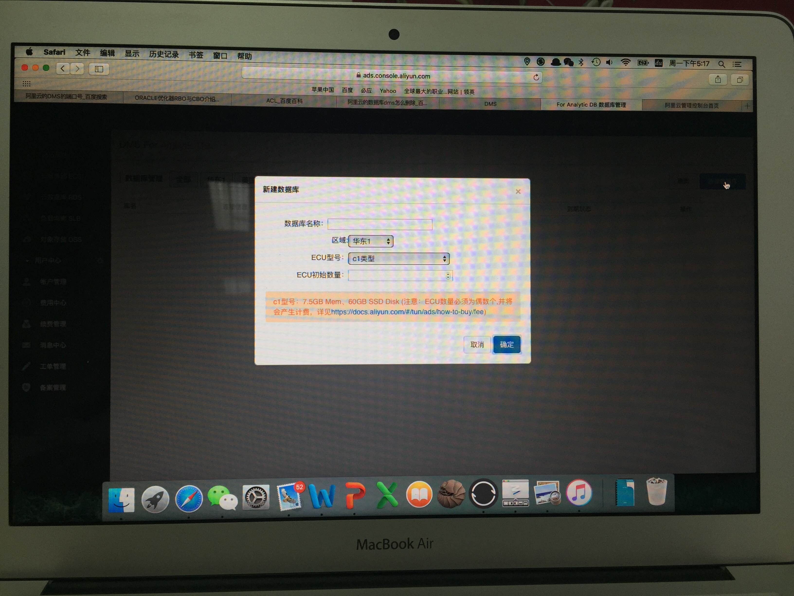

2016-06¶
2016-06-01¶
| 2016-06-01 08:11:45 | 我 | 你昨天几点回来的 |
| 2016-06-01 08:12:04 | 你 | 昨天都快九点了 |
| 2016-06-01 08:12:16 | 我 | 这么晚 |
| 2016-06-01 08:13:14 | 你 | 恩 昨天看比赛了不是 |
| 2016-06-01 08:13:45 | 我 | 谁赢了 |
| 2016-06-01 08:14:38 | 你 | 张良 |
| 2016-06-01 08:14:57 | 你 | 华仔亚军 |
| 2016-06-01 08:14:58 | 你 | 不错了 |
| 2016-06-01 08:15:03 | 我 | 是 |
| 2016-06-01 08:15:13 | 我 | 领导什么时候打 |
| 2016-06-01 08:17:11 | 你 | 他参加的是男双 |
| 2016-06-01 08:17:18 | 你 | 接下来是混双 |
| 2016-06-01 08:17:24 | 我 | 哦 |
| 2016-06-01 08:17:30 | 你 | 估计还得个把月后呢 |
| 2016-06-01 08:17:45 | 你 | 领导跟华仔打得都不错 |
| 2016-06-01 08:17:48 | 我 | 昨天是领导送你回来的吗 |
| 2016-06-01 08:17:57 | 你 | 不是， |
| 2016-06-01 08:18:52 | 你 | 昨天华仔比完第一局胜了，然后快八点的时候领导就想走了，我想留下看决胜局 |
| 2016-06-01 08:19:10 | 我 | 哦 |
| 2016-06-01 08:19:15 | 你 | 我跟他说让他先走，我让我对象接我 |
| 2016-06-01 08:19:42 | 你 | 我们都以为会休息半小时才比赛的，结果没休息， |
| 2016-06-01 08:19:55 | 你 | 他也没走，接着看了， |
| 2016-06-01 08:20:29 | 你 | 华仔跟张良打到第二局的时候，华仔脚抽筋了，然后领导就走了 |
| 2016-06-01 08:20:43 | 我 | 哦 |
| 2016-06-01 08:20:52 | 我 | 抽筋厉害吗 |
| 2016-06-01 08:21:04 | 你 | 那时候里比赛结束不到十分钟，他走了，我就看完给我老公打的电话 |
| 2016-06-01 08:21:16 | 你 | 还行吧，坚持比完了 |
| 2016-06-01 08:21:37 | 你 | 但是张良实力比华仔还是强 |
| 2016-06-01 08:21:43 | 我 | 是 |
| 2016-06-01 08:21:58 | 你 | 很精彩 |
| 2016-06-01 08:26:57 | 我 | 我和你说过领导打算调整座位吗 |
| 2016-06-01 08:27:31 | 你 | 没有 |
| 2016-06-01 08:27:36 | 你 | 怎么调整 |
| 2016-06-01 08:27:56 | 我 | 想把二组调到这边来 |
| 2016-06-01 08:28:09 | 我 | 领导觉得他们离得太远，不好管理 |
| 2016-06-01 08:28:52 | 我 | 可能等开始scrum的时候，借口要及时沟通 |
| 2016-06-01 08:29:01 | 你 | 哦 |
| 2016-06-01 08:29:05 | 你 | 好吧 |
| 2016-06-01 08:29:23 | 你 | 调过来坐哪啊 |
| 2016-06-01 08:29:42 | 我 | 外屋，应该正好12个人 |
| 2016-06-01 08:30:42 | 你 | 有那么多吗 |
| 2016-06-01 08:31:10 | 我 | 差不多 |
| 2016-06-01 08:32:04 | 你 | 随便吧 别把我整出去就行 |
| 2016-06-01 08:32:14 | 我 | 怎么可能呢 |
| 2016-06-01 08:32:25 | 你 | 反正还有王志新呢 这下我进来了 想把我整出去就难了 |
| 2016-06-01 08:32:46 | 我 | 当初我费那么大劲才把你弄进来 |
| 2016-06-01 08:32:55 | 你 | 哈哈 |
| 2016-06-01 08:32:58 | 你 | 那是 |
| 2016-06-01 08:33:37 | 我 | 大不了我再把胖子扔过去，理由就是好管理一组 |
| 2016-06-01 08:33:57 | 你 | 再说吧 |
| 2016-06-01 08:34:28 | 你 | 你都不知道 我觉得领导可喜欢我了 |
| 2016-06-01 08:34:37 | 我 | 怎么说 |
| 2016-06-01 08:47:59 | 我 | ？ |
| 2016-06-01 08:48:08 | 你 | denghui |
| 2016-06-01 09:00:16 | 你 | 你知道 我发现领导很细心 |
| 2016-06-01 09:00:26 | 你 | 很多小细节都能看出来 |
| 2016-06-01 09:00:35 | 你 | 虽然看上去没什么 |
| 2016-06-01 09:00:41 | 我 | 比如说 |
| 2016-06-01 09:00:57 | 你 | 也有可能我想多了 |
| 2016-06-01 09:01:25 | 你 | 为什么叹气 |
| 2016-06-01 09:01:30 | 你 | 等我想想啊 |
| 2016-06-01 09:01:54 | 我 | 你为什么会注意我的这些细节？ |
| 2016-06-01 09:02:18 | 你 | 什么？ |
| 2016-06-01 09:02:30 | 我 | 我叹气呀 |
| 2016-06-01 09:02:43 | 我 | 你接着说把，忽略我 |
| 2016-06-01 09:02:52 | 你 | 你这么大声 |
| 2016-06-01 09:02:57 | 你 | 我能注意不到吗 |
| 2016-06-01 09:03:03 | 我 | 好吧 |
| 2016-06-01 09:04:03 | 你 | 很多次啊 等我慢慢跟你说 |
| 2016-06-01 09:05:37 | 你 | 你知道我昨天给他油票吧 前天下午 他跟严丹贴票 大老远问我有油票没 |
| 2016-06-01 09:06:03 | 你 | 我说我今天就去加油 给你张200的 以前还有一张200的 都给你 |
| 2016-06-01 09:08:01 | 你 | 上次团建的时候，快结束那会，我坐在旭明左手边后方，领导坐在我的右手边后方，发鲨鱼脆的时候，我当时特别饿，发了我就吃了，旭明的就放在椅子帮上，他也没吃，就是一直看着， |
| 2016-06-01 09:08:16 | 你 | 我当时就想他不吃给我多好，我快饿死了， |
| 2016-06-01 09:08:35 | 你 | 我就看着他的鲨鱼脆，结果一会领导把他的就给我了 |
| 2016-06-01 09:10:09 | 你 | 而且我后边是李培生，李培生在领导左边，领导先给的李培生，李培生没要，然后，他让李培生给的我 |
| 2016-06-01 09:10:23 | 你 | 都是这些小事 |
| 2016-06-01 09:10:29 | 我 | 嗯 |
| 2016-06-01 09:10:45 | 你 | 昨天晚上，领导自己走了，他还给我发微信问结果来着 |
| 2016-06-01 09:11:01 | 你 | 我就回了他华仔亚军 |
| 2016-06-01 09:11:17 | 我 | 还有吗 |
| 2016-06-01 09:11:22 | 你 | 还有 |
| 2016-06-01 09:11:33 | 你 | 大概都差不多 |
| 2016-06-01 09:27:47 | 我 | 我有点忙，等我有空和你聊 |
| 2016-06-01 09:36:33 | 我 | 你刚才没听见 |
| 2016-06-01 09:36:47 | 我 | 老田又和我急眼了 |
| 2016-06-01 09:37:33 | 你 | 因为啥啊 |
| 2016-06-01 09:37:35 | 你 | 又 |
| 2016-06-01 11:12:35 | 我 | 忙死了[抓狂] |
| 2016-06-01 11:13:03 | 你 | 看出来了 |
| 2016-06-01 11:17:31 | 我 | 等下午我有空再陪你聊天吧 |
| 2016-06-01 11:18:01 | 你 | 恩 没事 有事你就忙呗 没事的 |
| 2016-06-01 11:18:20 | 你 | 我也没啥大事非得跟你说 无聊八卦呗 |
| 2016-06-01 11:18:44 | 我 | |
| 2016-06-01 11:38:35 | 你 | 你们不吃饭吗 |
| 2016-06-01 11:39:19 | 我 | 吃，这就走 |
| 2016-06-01 11:45:14 | 我 | 今天就我们三，严丹也不去了 |
| 2016-06-01 11:50:20 | 我 | 刚想给你发消息，田的电话就进来了 |
| 2016-06-01 11:50:33 | 我 | 又加东西 |
| 2016-06-01 12:21:21 | 你 | 刚才跟阿娇说婚姻的事，她一句听不进去 |
| 2016-06-01 12:21:58 | 你 | 我想这要是当初你教她写需求，讲模型，她还不离职 |
| 2016-06-01 12:22:16 | 我 | 她哪有你那悟性 |
| 2016-06-01 12:22:26 | 你 | 张明静我们三， |
| 2016-06-01 12:22:42 | 我 | 当初就是看上你的悟性要你的 |
| 2016-06-01 12:22:45 | 你 | 就是最基本的相处之道她都不听 |
| 2016-06-01 12:23:13 | 你 | 不是摆活她自己的，是根本不听 |
| 2016-06-01 12:23:26 | 我 | 唉 |
| 2016-06-01 12:23:34 | 我 | 那就没办法了 |
| 2016-06-01 12:24:49 | 我 | 她回家住了吗 |
| 2016-06-01 12:28:45 | 你 | 说今天晚上回去 |
| 2016-06-01 12:29:03 | 你 | 阿娇问题也挺大的， |
| 2016-06-01 12:29:17 | 你 | 她神经太粗，总是不关心杜杨 |
| 2016-06-01 12:29:27 | 我 | [流汗] |
| 2016-06-01 12:29:45 | 你 | 两口子相处你还不知道，你还说过我呢，女孩子要会撒娇 |
| 2016-06-01 12:29:56 | 你 | 她这样的，活脱脱一个大老爷们 |
| 2016-06-01 12:30:09 | 你 | 你说给谁谁不难受啊 |
| 2016-06-01 12:30:23 | 我 | 是 |
| 2016-06-01 12:30:50 | 你 | 我跟她说，婚姻得经营，是要花心思的， |
| 2016-06-01 12:31:05 | 你 | 人家来个，我才懒得想这些事呢 |
| 2016-06-01 12:31:43 | 你 | 我知道要经营，但是为啥要花心思啊，所以我说她什么都不懂，而且不学习，没救 |
| 2016-06-01 12:33:02 | 我 | 是 |
| 2016-06-01 12:35:28 | 我 | 你不睡吗 |
| 2016-06-01 12:35:48 | 你 | 睡 |
| 2016-06-01 12:35:58 | 你 | 严丹为什么没去吃饭 |
| 2016-06-01 12:36:20 | 我 | 不知道，可能是去买东西了 |
| 2016-06-01 12:38:40 | 你 | 哦，好 |
| 2016-06-01 13:24:37 | 我 | 睡好了吗 |
| 2016-06-01 13:24:47 | 你 | 还行吧 |
| 2016-06-01 13:24:49 | 你 | 睡着了 |
| 2016-06-01 13:25:18 | 我 | 早上看你困的真难受 |
| 2016-06-01 14:29:17 | 你 | 你怎么一下午也不搭理我 |
| 2016-06-01 14:29:20 | 你 | 很忙呢 |
| 2016-06-01 14:29:39 | 我 | 亲，真的很忙 |
| 2016-06-01 14:29:54 | 你 | 嗯嗯 忙吧 |
| 2016-06-01 14:29:56 | 我 | 又发现一个重大问题 |
| 2016-06-01 14:30:03 | 你 | 恩 你忙吧 |
| 2016-06-01 14:30:06 | 我 | 唉，忙命呀 |
| 2016-06-01 14:30:22 | 我 | 关键是旭明太不靠谱了 |
| 2016-06-01 14:30:45 | 你 | 没事拉 |
| 2016-06-01 14:30:46 | 我 | 这么多问题他都不知道 |
| 2016-06-01 14:30:49 | 你 | 忙吧 |
| 2016-06-01 14:30:54 | 你 | 别怪他了 |
| 2016-06-01 14:31:03 | 我 | 是 |
| 2016-06-01 14:31:14 | 我 | 别着急，我忙完了找你 |
| 2016-06-01 14:31:22 | 你 | 好 |
| 2016-06-01 14:31:24 | 你 | 不急 |
| 2016-06-01 14:31:29 | 你 | 我今天也有事 |
| 2016-06-01 14:31:35 | 我 | 什么事情 |
| 2016-06-01 14:32:11 | 你 | 领导给洪越发的『与hawq的竞情分析，内容中能否增加对sql支持情况，那些我们支持，那么hawq不支持』 |
| 2016-06-01 14:32:25 | 我 | 知道了 |
| 2016-06-01 14:32:35 | 我 | 这个领导不是看过了吗 |
| 2016-06-01 14:32:48 | 我 | 上次回邮件还表扬你了 |
| 2016-06-01 14:33:16 | 我 | 怎么这次又有问题了 |
| 2016-06-01 14:33:22 | 你 | 是的 但是没有这部分 所以说让加上这部分内容 |
| 2016-06-01 14:34:20 | 我 | 好的 |
| 2016-06-01 16:12:34 | 我 | 我快疯了 |
| 2016-06-01 16:12:43 | 你 | 忍 |
| 2016-06-01 16:12:56 | 我 | 是 |
| 2016-06-01 16:13:15 | 你 | 要不就休息会 |
| 2016-06-01 16:14:02 | 我 | 一鼓作气做完了吧 |
| 2016-06-01 16:15:06 | 你 | 就是 |
| 2016-06-01 16:41:08 | 我 | 你去听课了吗？ |
| 2016-06-01 16:45:27 | 你 | 恩 |
| 2016-06-01 16:45:36 | 我 | 好的 |
| 2016-06-01 16:55:46 | 你 | 你会来吗 |
| 2016-06-01 16:55:58 | 我 | 你想我去吗？ |
| 2016-06-01 16:57:28 | 你 | 你忙完了吗 |
| 2016-06-01 16:57:34 | 你 | 没忙完就别来了 |
| 2016-06-01 16:57:40 | 我 | 快了 |
| 2016-06-01 16:58:13 | 你 | 先干活吧 |
| 2016-06-01 16:58:19 | 你 | 看你挺着急的 |
| 2016-06-01 16:58:44 | 我 | 基本上完了，马上就发邮件了 |
| 2016-06-01 16:59:11 | 你 | 别着急，着急容易出错 |
| 2016-06-01 16:59:17 | 你 | 我当然希望你来了 |
| 2016-06-01 16:59:26 | 我 | 好的，等我一会 |
| 2016-06-01 17:04:57 | 我 | 做完了 |
| 2016-06-01 17:11:49 | 你 | ganmane |
| 2016-06-01 17:11:58 | 你 | 整整干一天 |
| 2016-06-01 17:12:05 | 我 | 看邮件 |
| 2016-06-01 17:12:06 | 你 | 是不是很累 |
| 2016-06-01 17:12:14 | 我 | 是，头很疼 |
| 2016-06-01 17:12:27 | 我 | 很久没有这么高强度工作了 |
| 2016-06-01 17:14:49 | 你 | 先休息 |
| 2016-06-01 17:15:16 | 我 | 是，陪着你 |
| 2016-06-01 17:15:22 | 你 | 恩 |
| 2016-06-01 17:15:33 | 你 | 我不想听了，讲得很乱 |
| 2016-06-01 17:15:37 | 你 | 咱们聊天吧 |
| 2016-06-01 17:15:44 | 我 | 好 |
| 2016-06-01 17:15:57 | 我 | 聊点轻松的吧 |
| 2016-06-01 17:16:01 | 你 | 好啊 |
| 2016-06-01 17:16:03 | 我 | 头太疼 |
| 2016-06-01 17:16:08 | 你 | 你想听什么 |
| 2016-06-01 17:16:14 | 我 | 不想动脑子 |
| 2016-06-01 17:16:21 | 我 | 说说阿娇吧 |
| 2016-06-01 17:16:50 | 我 | 张明静有对象吗 |
| 2016-06-01 17:17:01 | 你 | 不想说，说我跟领导吧，你有什么想法，随便说啊，就当说别人的八卦 |
| 2016-06-01 17:17:04 | 你 | 有 |
| 2016-06-01 17:17:39 | 我 | 你和领导的事情回来再说，需要动脑子 |
| 2016-06-01 17:17:41 | 你 | 所以阿娇在人家住着很不方便，而且她出来的时候偏偏还告诉他老公她去张明净家了 |
| 2016-06-01 17:17:45 | 你 | 啊 |
| 2016-06-01 17:17:47 | 你 | 好吧 |
| 2016-06-01 17:18:02 | 我 | 我没想到阿娇会住好几天 |
| 2016-06-01 17:18:24 | 我 | 张明静没要宿舍吗 |
| 2016-06-01 17:18:34 | 你 | 宿舍没有热水 |
| 2016-06-01 17:18:41 | 你 | 不能洗澡，很不方便 |
| 2016-06-01 17:18:48 | 我 | 哦 |
| 2016-06-01 17:22:24 | 我 | 张明静住哪呀 |
| 2016-06-01 17:26:52 | 你 | 张家窝啊 |
| 2016-06-01 17:26:58 | 你 | 跟阿娇一个小区 |
| 2016-06-01 17:27:28 | 我 | 我是不是太八卦了 |
| 2016-06-01 17:30:10 | 你 | 没有啊，我不知道你想知道啥 |
| 2016-06-01 17:30:15 | 你 | 这不是八卦 |
| 2016-06-01 17:30:37 | 你 | 八卦是说一些有的没的的，你这完全是问问题 |
| 2016-06-01 17:30:40 | 你 | 不是八卦 |
| 2016-06-01 17:30:45 | 我 | 好吧 |
| 2016-06-01 17:30:46 | 你 | 而且不积极，减分 |
| 2016-06-01 17:31:00 | 我 | 刚才去看书了 |
| 2016-06-01 17:31:06 | 我 | DDD |
| 2016-06-01 17:31:12 | 我 | 重印了 |
| 2016-06-01 17:31:20 | 你 | 拉客观解释，接着减分 |
| 2016-06-01 17:31:34 | 我 | 才不是拉客观呢 |
| 2016-06-01 17:31:44 | 你 | 解释，减分 |
| 2016-06-01 17:31:49 | 我 | 太兴奋了 |
| 2016-06-01 17:31:54 | 我 | 经典呀 |
| 2016-06-01 17:31:58 | 你 | 还能不能回到八卦的路上了 |
| 2016-06-01 17:32:04 | 我 | 问你个问题 |
| 2016-06-01 17:32:14 | 你 | 持续减分，你分已经不多了 |
| 2016-06-01 17:32:18 | 你 | 慎重点 |
| 2016-06-01 17:32:22 | 我 | 你老家是不是也说拉客观 |
| 2016-06-01 17:32:27 | 你 | 不说 |
| 2016-06-01 17:32:35 | 你 | 你姥姥不是喜欢说吗 |
| 2016-06-01 17:33:27 | 我 | 是 |
| 2016-06-01 17:33:36 | 我 | 听见我打电话了吗 |
| 2016-06-01 17:33:53 | 我 | 有个推销软件的 |
| 2016-06-01 17:34:14 | 我 | 以前给我打过电话 |
| 2016-06-01 17:34:32 | 我 | 我说我辞职了，不用软件了 |
| 2016-06-01 17:34:54 | 我 | 然后他问找到工作了吗，我说在家待着呢 |
| 2016-06-01 17:35:06 | 我 | 你真应该听听他的反应 |
| 2016-06-01 17:35:09 | 你 | 哦，为什么这么说 |
| 2016-06-01 17:35:12 | 我 | 乐死我了 |
| 2016-06-01 17:35:18 | 你 | 怎么了 |
| 2016-06-01 17:35:34 | 我 | 被噎着了的感觉 |
| 2016-06-01 17:35:47 | 你 | 哎，你们这样的根本就没有失业的概念 |
| 2016-06-01 17:35:58 | 你 | 哪像我们， |
| 2016-06-01 17:36:02 | 我 | 可以休息呀 |
| 2016-06-01 17:36:25 | 我 | 我第一次辞职的时候就休息了半年 |
| 2016-06-01 17:36:31 | 你 | 领域驱动设计。就是需求驱动设计呗 |
| 2016-06-01 17:36:38 | 你 | 是吗 |
| 2016-06-01 17:37:05 | 我 | 不是 |
| 2016-06-01 17:37:20 | 我 | 你以前没听我讲过吗？ |
| 2016-06-01 17:37:42 | 我 | 这个是系统分析方法 |
| 2016-06-01 17:37:47 | 你 | 这种图，连Python 脚本都画上了 |
| 2016-06-01 17:38:02 | 你 | 没有啊，我就听你讲过设计 |
| 2016-06-01 17:38:06 | 你 | Solid |
| 2016-06-01 17:38:12 | 我 | 哦 |
| 2016-06-01 17:38:19 | 我 | 那怨我 |
| 2016-06-01 17:38:29 | 你 | 怨你什么 |
| 2016-06-01 17:38:34 | 我 | 回来有空吧给你讲讲吧 |
| 2016-06-01 17:38:45 | 我 | 我以为我给你讲过 |
| 2016-06-01 17:38:48 | 你 | 好啊[流汗] |
| 2016-06-01 17:38:57 | 你 | 没有 |
| 2016-06-01 17:39:11 | 我 | 不够这个其实是给研发用的 |
| 2016-06-01 17:39:18 | 你 | 你觉得我对敏捷的理解可以了吗 |
| 2016-06-01 17:39:25 | 我 | 可以 |
| 2016-06-01 17:39:26 | 你 | 我自己觉得完全可以了 |
| 2016-06-01 17:39:28 | 你 | 嗯嗯 |
| 2016-06-01 17:39:33 | 我 | 现在缺实践 |
| 2016-06-01 17:39:37 | 你 | 对 |
| 2016-06-01 17:39:45 | 你 | 模型基本搞清楚了 |
| 2016-06-01 17:40:01 | 我 | 是，其实敏捷模型不难 |
| 2016-06-01 17:40:05 | 你 | 我觉得是，现在脑子挺清楚的 |
| 2016-06-01 17:40:08 | 你 | 我知道 |
| 2016-06-01 17:40:14 | 你 | 我感觉也不难 |
| 2016-06-01 17:40:20 | 我 | 难的是执行 |
| 2016-06-01 17:40:26 | 你 | 是 |
| 2016-06-01 17:40:55 | 我 | 你累了吗 |
| 2016-06-01 17:41:05 | 我 | 看你兴致不高的样子 |
| 2016-06-01 17:41:07 | 你 | 我今天对分析有了点lijie |
| 2016-06-01 17:41:30 | 你 | 没有啊，人家讲课呢，我不能开开心心的聊天吧 |
| 2016-06-01 17:41:51 | 你 | 我以前对分析这个词理解的不是很到位 |
| 2016-06-01 17:41:54 | 我 | 我就开开心心的聊天呀 |
| 2016-06-01 17:42:00 | 我 | 说说吧 |
| 2016-06-01 17:42:13 | 你 | 分析的结果是什么 |
| 2016-06-01 17:42:34 | 你 | 是“系统是什么” |
| 2016-06-01 17:42:38 | 你 | 对不对 |
| 2016-06-01 17:42:56 | 我 | 对 |
| 2016-06-01 17:43:02 | 你 | 包括系统分析的结果也是知道“研究对象是什么” |
| 2016-06-01 17:43:14 | 你 | 其实是个典型的建模过程 |
| 2016-06-01 17:43:19 | 我 | 对呀 |
| 2016-06-01 17:44:07 | 你 | 系统分析是啥啊，就是知道系统是啥，然后根据自己的角度建立系统模型 |
| 2016-06-01 17:44:23 | 你 | 需求是需求的模型啦 |
| 2016-06-01 17:44:30 | 你 | 其实就是领悟模型 |
| 2016-06-01 17:44:35 | 我 | 对 |
| 2016-06-01 17:44:40 | 你 | 对吧 |
| 2016-06-01 17:45:01 | 我 | 可以理解为悟道，系统之道 |
| 2016-06-01 17:45:14 | 你 | 是问题域的 |
| 2016-06-01 17:45:20 | 你 | 嗯嗯，是 |
| 2016-06-01 17:45:34 | 你 | 这个挺重要的，我今天才明白 |
| 2016-06-01 17:45:48 | 我 | 你太聪明了 |
| 2016-06-01 17:45:57 | 我 | 我都有点嫉妒了 |
| 2016-06-01 17:46:05 | 你 | 就跟大家都知道要经营婚姻，但是并不是每个人都知道什么是经营 |
| 2016-06-01 17:46:13 | 你 | 经营这两个字的意思 |
| 2016-06-01 17:46:18 | 你 | 你嫉妒啥 |
| 2016-06-01 17:46:42 | 我 | 我悟的比你慢[委屈] |
| 2016-06-01 17:46:45 | 你 | 你嫉妒我我就不喜欢你了 |
| 2016-06-01 17:46:56 | 你 | 切，我就是瞎琢磨 |
| 2016-06-01 17:47:09 | 我 | 我当初也是瞎琢磨 |
| 2016-06-01 17:47:15 | 我 | 不逗你了 |
| 2016-06-01 17:47:19 | 我 | 我说说 |
| 2016-06-01 17:47:20 | 你 | 恩 |
| 2016-06-01 17:47:24 | 你 | 好 |
| 2016-06-01 17:47:26 | 你 | 快说 |
| 2016-06-01 17:47:30 | 你 | 我就想听 |
| 2016-06-01 17:47:34 | 我 | 你现在不是瞎琢磨 |
| 2016-06-01 17:47:42 | 我 | 明显开始有模式了 |
| 2016-06-01 17:48:07 | 我 | 我看见的就是跨领域类比 |
| 2016-06-01 17:48:20 | 你 | 哈哈 |
| 2016-06-01 17:48:25 | 我 | 你的思考过程为并不清楚 |
| 2016-06-01 17:48:40 | 我 | 所以也不知道是否还有其他模式 |
| 2016-06-01 17:49:12 | 你 | 好像是很多类比 |
| 2016-06-01 17:49:17 | 我 | 从你有模式开始，你就已经上道了 |
| 2016-06-01 17:49:18 | 你 | 你一说我才发现 |
| 2016-06-01 17:49:23 | 你 | 哈哈 |
| 2016-06-01 17:49:38 | 我 | 以后你再总结模式之间的共性 |
| 2016-06-01 17:49:43 | 你 | 我都上道好几次了，都掉下去了 |
| 2016-06-01 17:49:53 | 我 | 提取模式的模型 |
| 2016-06-01 17:49:55 | 你 | 哦哦，那是更高层的 |
| 2016-06-01 17:49:58 | 你 | 嗯嗯 |
| 2016-06-01 17:50:00 | 你 | 就是 |
| 2016-06-01 17:50:02 | 你 | 对的 |
| 2016-06-01 17:50:21 | 你 | 就像你很我说的，抽象的方法 |
| 2016-06-01 17:50:32 | 你 | 最基本的就是类比 |
| 2016-06-01 17:50:35 | 我 | 是 |
| 2016-06-01 17:51:24 | 我 | 类比其实也有缺点 |
| 2016-06-01 17:51:31 | 我 | 局限性比较大 |
| 2016-06-01 17:52:07 | 我 | 最大的点就是要求两个领域的运行规律相似 |
| 2016-06-01 17:52:33 | 你 | 恩 |
| 2016-06-01 17:52:37 | 我 | 这就进一步要求人能分清两个领域的本质 |
| 2016-06-01 17:52:47 | 你 | 还是需要找本质 |
| 2016-06-01 17:52:48 | 我 | 这个要求其实挺高的 |
| 2016-06-01 17:52:51 | 我 | 对 |
| 2016-06-01 17:52:53 | 你 | 对的 |
| 2016-06-01 17:52:57 | 你 | 神同步 |
| 2016-06-01 17:53:01 | 我 | 是 |
| 2016-06-01 17:53:03 | 你 | 看我这悟性 |
| 2016-06-01 17:53:15 | 你 | 哎，我都开始稀罕我了 |
| 2016-06-01 17:56:12 | 我 | 😄 |
| 2016-06-01 17:56:34 | 我 | 你知道人要快乐，首先是什么吗？ |
| 2016-06-01 17:56:43 | 我 | 就是稀罕自己 |
| 2016-06-01 17:57:03 | 你 | 其实我一点不爱我自己 |
| 2016-06-01 17:57:05 | 你 | 真的 |
| 2016-06-01 17:57:10 | 你 | 所以我才不自信 |
| 2016-06-01 17:57:17 | 我 | 我知道 |
| 2016-06-01 17:57:27 | 我 | 从第一眼看见你就知道 |
| 2016-06-01 17:57:51 | 你 | 真讨厌 |
| 2016-06-01 17:58:03 | 我 | 啊 |
| 2016-06-01 17:58:14 | 我 | 我做错什么了[惊恐] |
| 2016-06-01 17:58:16 | 你 | kidding |
| 2016-06-01 17:58:26 | 你 | nothing |
| 2016-06-01 17:59:02 | 我 | 你应该学我 |
| 2016-06-01 17:59:22 | 我 | 脸皮厚，超自信[偷笑] |
| 2016-06-01 17:59:44 | 你 | 这不是脸皮厚 |
| 2016-06-01 18:05:14 | 我 | 你哪知道 |
| 2016-06-01 18:05:20 | 我 | 我面试 |
| 2016-06-01 18:05:57 | 你 | YUN |
| 2016-06-01 18:07:47 | 我 | 临时被小白抓壮丁 |
| 2016-06-01 18:08:00 | 你 | HAHA |
| 2016-06-01 18:08:04 | 你 | 嗯嗯 |
| 2016-06-01 18:32:46 | 你 | 我今天早下班 |
| 2016-06-01 18:32:49 | 你 | 不等你了 |
| 2016-06-01 18:33:07 | 我 | 好的 |
| 2016-06-01 18:33:15 | 我 | 明天见 |
| 2016-06-01 18:33:21 | 你 | 恩 |
| 2016-06-01 18:33:25 | 你 | 明天见 |
2016-06-02¶
| 2016-06-02 08:16:34 | 我 | 早 |
| 2016-06-02 08:16:49 | 你 | 早 |
| 2016-06-02 08:16:56 | 我 | 好像公司的外网坏了 |
| 2016-06-02 08:17:05 | 我 | 上不了网 |
| 2016-06-02 08:17:10 | 你 | 是吧，早上来就不行 |
| 2016-06-02 08:17:15 | 我 | [动画表情] |
| 2016-06-02 08:17:16 | 你 | 微信上不去 |
| 2016-06-02 08:17:19 | 你 | 哈哈 |
| 2016-06-02 08:17:29 | 你 | 用你的4G |
| 2016-06-02 08:17:48 | 我 | 是，我只有700M[流泪] |
| 2016-06-02 08:18:01 | 我 | 你的流量有多少 |
| 2016-06-02 08:18:02 | 你 | 我有1G |
| 2016-06-02 08:18:08 | 我 | 😄 |
| 2016-06-02 08:18:28 | 我 | 也不比我多多少 |
| 2016-06-02 08:18:35 | 你 | 对啊 |
| 2016-06-02 08:18:42 | 你 | 我差不多够用 |
| 2016-06-02 08:18:56 | 我 | 你用的真省 |
| 2016-06-02 08:18:57 | 你 | 看看新闻，上上淘宝 |
| 2016-06-02 08:18:58 | 你 | 都可以 |
| 2016-06-02 08:19:33 | 我 | 我光刷微博都不够 |
| 2016-06-02 08:20:24 | 我 | 主要是视频费流量 |
| 2016-06-02 08:28:51 | 我 | 今天我还会很忙 |
| 2016-06-02 08:30:20 | 你 | 啊 |
| 2016-06-02 08:30:21 | 你 | 怎么这样 |
| 2016-06-02 08:30:29 | 你 | 我不忙 |
| 2016-06-02 08:30:38 | 你 | 我的活慢点干 |
| 2016-06-02 08:31:22 | 我 | 上午开完晨会就有一个扯皮的会 |
| 2016-06-02 08:34:27 | 我 | 今天新来一个质控，坐我边上 |
| 2016-06-02 08:34:41 | 你 | 下周真要请三天啊 |
| 2016-06-02 08:34:43 | 你 | 不开心 |
| 2016-06-02 08:34:59 | 我 | 没有 |
| 2016-06-02 08:35:11 | 我 | 不过至少请一天 |
| 2016-06-02 08:35:25 | 你 | 哦，好吧 |
| 2016-06-02 08:35:58 | 你 | 想吃早点，没人陪我 |
| 2016-06-02 08:36:06 | 我 | 回家了我就有空陪你了 |
| 2016-06-02 08:36:18 | 你 | 没有外网，写不了日报 |
| 2016-06-02 08:36:29 | 你 | 那我也不乐意 |
| 2016-06-02 08:36:42 | 我 | 为啥呢 |
| 2016-06-02 08:36:43 | 你 | 今天领导是不是不来了 |
| 2016-06-02 08:36:53 | 我 | 北京出差 |
| 2016-06-02 08:37:10 | 你 | 恩，严丹请假了是吧 |
| 2016-06-02 08:37:21 | 我 | 没有，陪领导出差 |
| 2016-06-02 08:37:24 | 你 | 质控的是男的还是女的 |
| 2016-06-02 08:37:28 | 我 | 女的 |
| 2016-06-02 08:37:32 | 我 | 单身 |
| 2016-06-02 08:37:34 | 你 | 好看吗 |
| 2016-06-02 08:37:39 | 你 | 大龄那个 |
| 2016-06-02 08:37:40 | 我 | 还行吧 |
| 2016-06-02 08:37:43 | 我 | 是 |
| 2016-06-02 08:37:48 | 你 | 比我好看啊 |
| 2016-06-02 08:37:58 | 你 | 还行[抓狂] |
| 2016-06-02 08:38:25 | 我 | 怎么可能比你好看 |
| 2016-06-02 08:38:54 | 你 | 胖子还是瘦子 |
| 2016-06-02 08:38:59 | 你 | 多大岁数？ |
| 2016-06-02 08:40:07 | 我 | 30多了吧，胖子原来的同事，他比较清楚 |
| 2016-06-02 08:40:38 | 我 | 当初胖子曾经和我提过，想找来做研发 |
| 2016-06-02 08:40:50 | 你 | 哦，都认识啊，那跟耿燕也认识呗 |
| 2016-06-02 08:41:00 | 你 | 她俩别打起来啊， |
| 2016-06-02 08:41:02 | 我 | 就是耿燕介绍的 |
| 2016-06-02 08:42:09 | 你 | 恩 |
| 2016-06-02 09:14:44 | 我 | 你吃完了？ |
| 2016-06-02 09:14:56 | 你 | 恩 |
| 2016-06-02 09:15:12 | 你 | 我以后得想想早点吃什么了 |
| 2016-06-02 09:15:15 | 我 | 和谁去的 |
| 2016-06-02 09:15:22 | 你 | 翠姐 阿娇 |
| 2016-06-02 09:15:49 | 你 | 最近好像有点胖了 |
| 2016-06-02 09:15:51 | 我 | 没有你爱吃的吗 |
| 2016-06-02 09:16:12 | 你 | 食堂有点热 |
| 2016-06-02 09:16:31 | 我 | 不行就买回来吃 |
| 2016-06-02 09:16:49 | 你 | 我事比较多 |
| 2016-06-02 09:17:14 | 我 | 是，深有体会[偷笑] |
| 2016-06-02 09:17:44 | 你 | 我早上不喜欢洗完脸 涂完粉 还得吃油油的饼 |
| 2016-06-02 09:18:12 | 你 | 然后手上都是饼味 都不香了 |
| 2016-06-02 09:18:16 | 我 | 嗯 |
| 2016-06-02 09:21:15 | 你 | 你说我早上起来 费劲巴拉的涂口红 涂香水 结果一去食堂 一身的油烟味 大饼味 好难受 |
| 2016-06-02 09:22:10 | 我 | 是 |
| 2016-06-02 09:22:19 | 我 | 你能吃麦片吗 |
| 2016-06-02 09:22:42 | 我 | 也可以吃包子 粥 |
| 2016-06-02 09:22:47 | 你 | 不吃 |
| 2016-06-02 09:22:50 | 你 | 不吃包子 |
| 2016-06-02 09:22:58 | 我 | 好吧 |
| 2016-06-02 09:23:05 | 你 | 我以后喝牛奶麦片吧 |
| 2016-06-02 09:25:55 | 你 | 不许你对刚来的那个美女好 |
| 2016-06-02 09:26:29 | 我 | 是 |
| 2016-06-02 09:26:38 | 我 | 一定不对她好 |
| 2016-06-02 09:26:57 | 我 | 天天冲她绷着脸 |
| 2016-06-02 09:27:55 | 你 | 那也不至于 |
| 2016-06-02 09:45:34 | 你 | [链接] 【二更食堂】幸（性）福的婚姻是什么样子的？ |
| 2016-06-02 09:47:05 | 我 | 你想的样子是什么 |
| 2016-06-02 09:47:39 | 你 | 特别喜欢那句，最初是才情，然后是样貌，最后是三观 |
| 2016-06-02 09:48:25 | 我 | 嗯 |
| 2016-06-02 09:48:42 | 你 | 就记住这么一句 |
| 2016-06-02 09:48:58 | 我 | 你自己的呢 |
| 2016-06-02 09:49:55 | 你 | 我对他没有要求 |
| 2016-06-02 09:53:16 | 我 | 这不是要求 |
| 2016-06-02 09:53:27 | 我 | 是自己的期望 |
| 2016-06-02 10:02:57 | 你 | ganmane |
| 2016-06-02 10:03:22 | 我 | 还是整理合并 |
| 2016-06-02 10:04:28 | 我 | 我居然饿了 |
| 2016-06-02 10:04:46 | 你 | 哈哈 |
| 2016-06-02 10:04:51 | 你 | 你吃早点了吗 |
| 2016-06-02 10:05:04 | 你 | 我有绿豆糕 |
| 2016-06-02 10:05:07 | 你 | 很难吃 |
| 2016-06-02 10:05:27 | 我 | 吃过了，吃的有点早 |
| 2016-06-02 10:05:38 | 我 | 我不爱吃绿豆糕 |
| 2016-06-02 10:05:43 | 我 | 太干 |
| 2016-06-02 10:06:21 | 你 | 那你得饿一会了 |
| 2016-06-02 10:06:35 | 我 | 喝水，使劲喝 |
| 2016-06-02 10:07:02 | 你 | 那多难受啊 |
| 2016-06-02 10:07:10 | 你 | 吃颗糖 |
| 2016-06-02 10:07:13 | 你 | 忍一会 |
| 2016-06-02 10:07:26 | 我 | 你喝茶不，我这有红茶 |
| 2016-06-02 10:10:24 | 我 | 我开始戒咖啡了，先戒一个月 |
| 2016-06-02 10:10:41 | 你 | 不喝 |
| 2016-06-02 10:10:57 | 你 | 为啥戒咖啡？ |
| 2016-06-02 10:11:14 | 我 | 喝的时间太长了 |
| 2016-06-02 10:12:18 | 你 | 哦 好吧 |
| 2016-06-02 10:14:17 | 你 | 番薯不是应该跟你汇报吗 |
| 2016-06-02 10:14:27 | 你 | 他怎么老是跟老田对接 |
| 2016-06-02 10:14:34 | 我 | 要不说他傻呢 |
| 2016-06-02 10:14:49 | 我 | 我也不能直接走过去说 |
| 2016-06-02 10:16:10 | 你 | 蠢货 |
| 2016-06-02 10:16:46 | 我 | 番薯没什么政治头脑 |
| 2016-06-02 10:17:10 | 你 | 让他傻着去吧 |
| 2016-06-02 10:17:57 | 我 | 是 |
| 2016-06-02 10:18:24 | 你 | 等我跟他说 |
| 2016-06-02 10:18:55 | 我 | 你说啥 |
| 2016-06-02 10:18:58 | 你 | 你别管 |
| 2016-06-02 10:19:10 | 我 | 好吧 |
| 2016-06-02 10:19:29 | 我 | 等你说完了告诉我好不好 |
| 2016-06-02 10:19:40 | 你 | 他一有事 领导就找你 |
| 2016-06-02 10:19:48 | 你 | 我不能老看着你背黑锅 |
| 2016-06-02 10:19:51 | 你 | 气死我了 |
| 2016-06-02 10:20:24 | 我 | 我都不生气，你就别为我生气了，我会心疼的 |
| 2016-06-02 10:21:26 | 你 | 没事 |
| 2016-06-02 10:26:24 | 你 | 我说他了 |
| 2016-06-02 10:26:39 | 我 | 怎么说的 |
| 2016-06-02 10:26:53 | 你 | 我先问你 你现在怎么跟老田汇报了 |
| 2016-06-02 10:27:06 | 你 | 他说这是产品的事 不找他找谁啊 |
| 2016-06-02 10:27:25 | 你 | 我说你不是应该跟老王汇报吗 |
| 2016-06-02 10:27:39 | 你 | 他说我跟老王说了 老王也得跟老田说 |
| 2016-06-02 10:27:52 | 你 | 我说他跟不跟老田说是他的事 |
| 2016-06-02 10:28:21 | 你 | 我说 我在这屋坐着 好几次你这边有事领导都说老王了 |
| 2016-06-02 10:28:34 | 你 | 说让老王管管 |
| 2016-06-02 10:28:53 | 我 | 你太可爱了 |
| 2016-06-02 10:29:11 | 你 | 反正 你跟老田说 出了事 领导肯定找老王 不可能找老田的 你自己想想吧 |
| 2016-06-02 10:29:17 | 你 | 我要是老王早不管你了 |
| 2016-06-02 10:29:36 | 我 | |
| 2016-06-02 10:30:08 | 你 | 他感谢我半天 |
| 2016-06-02 10:30:11 | 我 | 你太有领导范了 |
| 2016-06-02 10:30:50 | 你 | 不是 |
| 2016-06-02 10:31:13 | 你 | 他以前一直叫我去他们那屋 这次还说 你快在那屋坐着吧 |
| 2016-06-02 10:31:59 | 你 | 我不能老看着你吃亏 |
| 2016-06-02 10:32:02 | 你 | 这点小事 |
| 2016-06-02 10:32:06 | 我 | 😄 |
| 2016-06-02 10:32:08 | 你 | 我说最合适 |
| 2016-06-02 10:32:17 | 你 | 我还卖个人情给他 |
| 2016-06-02 10:41:59 | 我 | 我看你消息的时候就一直笑 |
| 2016-06-02 10:42:09 | 我 | 你确实太可爱了 |
| 2016-06-02 10:42:10 | 你 | 笑什么 |
| 2016-06-02 10:42:15 | 你 | 我不觉得好笑啊 |
| 2016-06-02 10:42:27 | 我 | 不是好笑 |
| 2016-06-02 10:42:39 | 我 | 就是觉得你可爱 |
| 2016-06-02 10:42:50 | 你 | 正常人不都这么做吗 |
| 2016-06-02 10:43:04 | 你 | 我没做错吧 |
| 2016-06-02 10:43:08 | 我 | 没有 |
| 2016-06-02 10:43:28 | 我 | 做的很好 |
| 2016-06-02 10:43:44 | 你 | 就是 |
| 2016-06-02 10:43:53 | 你 | 我也得培养我的群众基础 |
| 2016-06-02 10:43:59 | 我 | 是 |
| 2016-06-02 10:44:15 | 我 | 你做的非常好，我支持你 |
| 2016-06-02 10:44:22 | 你 | 恩 |
| 2016-06-02 10:44:57 | 你 | 你不支持我 我也可能做 嘿嘿 除非你说服我 |
| 2016-06-02 10:45:23 | 我 | 😄 |
| 2016-06-02 10:46:27 | 你 | 唉 我的小野心 只有你不会嘲笑我 |
| 2016-06-02 10:47:52 | 我 | 为啥要嘲笑你呀 |
| 2016-06-02 10:48:24 | 你 | 会有人觉得我是痴人说梦啊 |
| 2016-06-02 10:48:28 | 你 | 比如领导 |
| 2016-06-02 10:49:10 | 我 | 领导说过吗 |
| 2016-06-02 10:49:33 | 你 | 领导总是说 小姑娘不用养家啥的 |
| 2016-06-02 10:49:49 | 你 | 我觉得他一点不了解我 |
| 2016-06-02 10:53:29 | 我 | 哦 |
| 2016-06-02 10:53:52 | 我 | 可能是领导有点大男子主义 |
| 2016-06-02 10:54:25 | 你 | 无所谓啦 没事的 |
| 2016-06-02 10:54:34 | 我 | 他也是农村出来的，多少有点重男轻女的思想 |
| 2016-06-02 10:54:43 | 你 | 是吧 |
| 2016-06-02 10:55:13 | 我 | 这种东西是潜移默化的影响 |
| 2016-06-02 10:55:29 | 你 | 是 |
| 2016-06-02 10:55:34 | 你 | 你还忙吗 |
| 2016-06-02 10:55:40 | 我 | 只能从平时的言谈举止中找到蛛丝马迹 |
| 2016-06-02 10:55:51 | 你 | 恩 是 |
| 2016-06-02 10:55:53 | 我 | 有点忙，可以陪你聊天 |
| 2016-06-02 10:56:07 | 你 | 领导挺接地气 也没什么架子 |
| 2016-06-02 10:56:13 | 你 | 还不错 |
| 2016-06-02 10:56:15 | 我 | 是 |
| 2016-06-02 10:56:47 | 你 | 反正他要是跟我得瑟 我就示弱 他就立马不得瑟了 |
| 2016-06-02 10:56:49 | 你 | 哈哈 |
| 2016-06-02 10:57:04 | 你 | 比如他从香港买的铁打的药啊 啥的 |
| 2016-06-02 10:57:08 | 我 | 为啥呢 |
| 2016-06-02 10:57:18 | 你 | 我就说 这么高级 我可买不起 |
| 2016-06-02 10:57:29 | 你 | 他就赶紧 不贵 京东上也有卖的 |
| 2016-06-02 10:57:41 | 我 | 好吧 |
| 2016-06-02 10:58:15 | 我 | 问你一个问题 |
| 2016-06-02 10:58:24 | 你 | 恩 |
| 2016-06-02 10:58:42 | 我 | 关于出轨的那个心结你还有吗 |
| 2016-06-02 10:58:52 | 你 | 没有了吧 |
| 2016-06-02 11:00:09 | 我 | 好的 |
| 2016-06-02 11:00:16 | 你 | 怎么了 |
| 2016-06-02 11:00:21 | 你 | 你怕我喜欢领导啊 |
| 2016-06-02 11:00:34 | 我 | 你有吗？ |
| 2016-06-02 11:00:43 | 你 | 当然没有了 |
| 2016-06-02 11:00:47 | 你 | 我就知道你怕这个 |
| 2016-06-02 11:05:13 | 你 | 你看出我喜欢领导了？ |
| 2016-06-02 11:05:15 | 你 | 不是吧 |
| 2016-06-02 11:05:21 | 你 | 实话实说啊 |
| 2016-06-02 11:05:40 | 我 | 好吧，本来我不想说的 |
| 2016-06-02 11:05:58 | 我 | 你只是有点苗头而已 |
| 2016-06-02 11:06:38 | 我 | 我是想先不告诉你，看看情况再说 |
| 2016-06-02 11:07:19 | 我 | 也没准过一阵就没了，就像当初你喜欢我一样 |
| 2016-06-02 11:07:55 | 你 | 我没觉得我喜欢他啊 |
| 2016-06-02 11:08:05 | 你 | 连曾经对你那样都没有 |
| 2016-06-02 11:08:37 | 我 | 是还没到我那种程度 |
| 2016-06-02 11:08:45 | 我 | 所以我就没想告诉你 |
| 2016-06-02 11:09:03 | 你 | 这个很重要 |
| 2016-06-02 11:09:17 | 我 | 好了，没那么大事 |
| 2016-06-02 11:09:39 | 我 | 你很担心吗？ |
| 2016-06-02 11:10:11 | 你 | 我担心的是啥 |
| 2016-06-02 11:10:27 | 你 | 我担心如果你觉得我喜欢领导 领导可能也以为我喜欢他 |
| 2016-06-02 11:10:31 | 你 | 那就太麻烦了 |
| 2016-06-02 11:11:03 | 我 | 好吧，你别着急，我慢慢和你说 |
| 2016-06-02 11:11:15 | 你 | 好 |
| 2016-06-02 11:11:23 | 我 | 看你急的眉头紧锁 |
| 2016-06-02 11:11:35 | 我 | 没那么严重啦 |
| 2016-06-02 11:12:14 | 我 | 都怨我，好奇心太重，多问了两句就让你看出来了 |
| 2016-06-02 11:12:35 | 你 | 没有 我觉得你说出来很对 |
| 2016-06-02 11:12:38 | 你 | 都是我不好 |
| 2016-06-02 11:12:48 | 我 | 怎么不好了 |
| 2016-06-02 11:13:48 | 你 | 让领导误会了呗 |
| 2016-06-02 11:14:16 | 我 | 先不说他，先说你吧 |
| 2016-06-02 11:14:22 | 你 | 好 |
| 2016-06-02 11:14:38 | 我 | 你上次和我说了领导的很多小细节让你感动 |
| 2016-06-02 11:15:29 | 你 | 恩 |
| 2016-06-02 11:15:48 | 我 | 说明你很注意这些 |
| 2016-06-02 11:16:33 | 我 | 关键是这些让你感动 |
| 2016-06-02 11:16:38 | 你 | 是 你说的很对 |
| 2016-06-02 11:16:46 | 你 | 其实也不是感动啦 |
| 2016-06-02 11:16:53 | 你 | 我这个词用的不好 |
| 2016-06-02 11:16:58 | 我 | 说明在情感上有正反馈 |
| 2016-06-02 11:17:20 | 我 | 和这个词没有关系，我可以理解这种感觉 |
| 2016-06-02 11:17:51 | 你 | 你接着说 |
| 2016-06-02 11:24:58 | 我 | 简单说就是如果你没有好感那么就不会有这种感觉 |
| 2016-06-02 11:25:26 | 我 | 而且这种好感已经超过了对普通人的好感 |
| 2016-06-02 11:25:27 | 你 | 哦 那可能吧 |
| 2016-06-02 11:25:36 | 你 | 是 |
| 2016-06-02 11:25:38 | 你 | 你说的很对 |
| 2016-06-02 11:25:55 | 我 | 程度上和你说的喜欢还有距离 |
| 2016-06-02 11:26:13 | 我 | 但是方向基本上是一致的 |
| 2016-06-02 11:26:40 | 我 | 你知道我喜欢关注的是战略方向 |
| 2016-06-02 11:26:56 | 你 | 是 |
| 2016-06-02 11:26:58 | 我 | 对于程度这种东西我关注的比较少 |
| 2016-06-02 11:27:06 | 你 | 恩 |
| 2016-06-02 11:27:15 | 我 | 所以我才说你已经开始喜欢上领导了 |
| 2016-06-02 11:27:40 | 我 | 那么领导那边的反应呢 |
| 2016-06-02 11:28:01 | 我 | 从你和我说的这些情况来看，他也在这条路上 |
| 2016-06-02 11:28:16 | 你 | 哎呀 听你说这 这么可怕呢 |
| 2016-06-02 11:28:19 | 我 | 但是程度都很低 |
| 2016-06-02 11:28:30 | 我 | 没什么可怕的呀 |
| 2016-06-02 11:29:53 | 你 | 老田就是大傻X |
| 2016-06-02 11:30:04 | 我 | 我只是说了有这种可能性而已 |
| 2016-06-02 11:30:14 | 我 | 不一定就真的是这个结果 |
| 2016-06-02 11:31:09 | 我 | 这里面的东西太多了，下午找时间面谈好不好 |
| 2016-06-02 11:32:32 | 我 | 别皱眉头啦 |
| 2016-06-02 11:32:46 | 我 | 没事的，有我呢 |
| 2016-06-02 11:32:58 | 你 | 恩 |
| 2016-06-02 11:38:55 | 我 | 田比原来更郁闷了[微笑] |
| 2016-06-02 11:39:25 | 我 | 原来是因为我不管，他什么都管郁闷 |
| 2016-06-02 11:39:48 | 我 | 现在是因为我管了，他管不上郁闷 |
| 2016-06-02 11:40:40 | 你 | 哈哈 |
| 2016-06-02 13:14:25 | 我 | 醒啦 |
| 2016-06-02 13:23:37 | 我 | 你咋啦 |
| 2016-06-02 13:34:17 | 我 | 你不理我[委屈] |
| 2016-06-02 13:34:39 | 你 | 哈哈 |
| 2016-06-02 13:34:43 | 你 | 我没事亲 |
| 2016-06-02 13:34:59 | 我 | 真的没事？ |
| 2016-06-02 13:36:04 | 你 | 没有啊 有啥 有就是今天睡得很好 |
| 2016-06-02 13:36:29 | 我 | 怕你心情不好，受上午的影响 |
| 2016-06-02 13:56:51 | 我 | 你现在忙什么呢 |
| 2016-06-02 13:58:05 | 你 | 我在想你说的话 |
| 2016-06-02 13:58:21 | 我 | 别想啦 |
| 2016-06-02 13:58:36 | 我 | 待会咱俩出去聊 |
| 2016-06-02 13:58:47 | 你 | 恩 |
| 2016-06-02 13:58:55 | 我 | 到时候我给你详细讲 |
| 2016-06-02 15:03:05 | 我 | [链接] 买的不是性，而是完美幻想 |
| 2016-06-02 15:12:21 | 你 | 干嘛去了 |
| 2016-06-02 15:12:32 | 你 | 你也看头条啊 |
| 2016-06-02 15:12:40 | 我 | 是 |
| 2016-06-02 15:12:52 | 我 | 番薯屋过9000 |
| 2016-06-02 15:13:21 | 你 | 怎么没来这屋 我还能听听 |
| 2016-06-02 15:13:52 | 我 | 我当时把他们拉过去了，就是想让你听听 |
| 2016-06-02 15:14:07 | 我 | 结果番薯拿投影仪了 |
| 2016-06-02 15:14:33 | 你 | 哦 没事 |
| 2016-06-02 15:48:34 | 你 | 眼界小，加需求，竞品做了这个，我们抄！ 眼界广，竞品为什么做这个，社交类产品会往哪个方向发展，哪个是趋势，如何吸引更多流量，如何做到独一无二？ |
| 2016-06-02 15:49:05 | 我 | 从哪看来的 |
| 2016-06-02 15:49:17 | 你 | 知乎 |
| 2016-06-02 15:49:29 | 你 | 高级产品经理创造需求，普通产品经理满足需求 |
| 2016-06-02 15:50:48 | 我 | 是 |
| 2016-06-02 15:51:18 | 你 | 普通产品经理执行为主，高级产品经理判断为主； |
| 2016-06-02 15:51:19 | 我 | 像乔布斯那样的就是创造需求 |
| 2016-06-02 15:51:24 | 你 | 我们都是执行层 |
| 2016-06-02 15:51:30 | 我 | 是 |
| 2016-06-02 15:52:10 | 你 | 普通产品经理满足于完成被安排的工作，缺乏对产品的主动思考，或者流于创意层面。高级产品经理不断拷问自己近期的关键指标是什么，正确的迭代路径应该是怎样的，有着私人的需求池、创意库或 To Do List。 |
| 2016-06-02 15:53:11 | 我 | 嗯 |
| 2016-06-02 16:12:59 | 我 | 你干啥呢 |
| 2016-06-02 16:13:18 | 你 | 看看论坛，没干啥 |
| 2016-06-02 16:13:24 | 你 | 我的活干完了 |
| 2016-06-02 16:13:42 | 我 | 出去聊天 |
| 2016-06-02 16:15:00 | 你 | 你的活干完了吗 |
| 2016-06-02 16:15:31 | 我 | 完了 |
| 2016-06-02 16:15:42 | 我 | 去不？ |
| 2016-06-02 16:16:16 | 你 | 等会吧 |
| 2016-06-02 16:16:23 | 你 | 时间太早 |
| 2016-06-02 16:16:31 | 你 | 咱们聊多久 |
| 2016-06-02 16:16:34 | 我 | 行 |
| 2016-06-02 16:16:38 | 你 | 一会你有事吗 |
| 2016-06-02 16:16:46 | 我 | 不知道，一小时吧 |
| 2016-06-02 16:16:47 | 你 | 洪越刚走 |
| 2016-06-02 16:16:52 | 我 | 我没事 |
| 2016-06-02 16:17:13 | 我 | 比我原来想的早 |
| 2016-06-02 16:17:31 | 我 | 原来我是安排5点的 |
| 2016-06-02 16:17:40 | 我 | 今天工作比较顺利 |
| 2016-06-02 16:17:51 | 你 | 恩，好 |
| 2016-06-02 16:19:17 | 你 | 为什么杨丽颖总是下午来上班？ |
| 2016-06-02 16:19:20 | 你 | 好奇怪 |
| 2016-06-02 16:19:52 | 我 | 她妈住院了，上午去医院 |
| 2016-06-02 16:20:10 | 我 | 你别说出去 |
| 2016-06-02 16:20:49 | 你 | 她那天不是说了吗 |
| 2016-06-02 16:21:04 | 你 | 我只是好奇，随便问的 |
| 2016-06-02 16:21:15 | 你 | 你要是怕我说出去，下次就别告诉我了 |
| 2016-06-02 16:21:16 | 我 | 嗯 |
| 2016-06-02 16:21:23 | 我 | 才不呢 |
| 2016-06-02 16:21:31 | 我 | 嘻嘻 |
| 2016-06-02 16:33:25 | 我 | 亲，你要是想出去就告诉我，我随时可以走 |
| 2016-06-02 16:34:52 | 你 | 好 |
| 2016-06-02 16:45:39 | 你 | 走吧，我在秋千这 |
| 2016-06-02 16:45:46 | 我 | 好 |
| 2016-06-02 16:46:05 | 你 | 屋里太凉了 |
| 2016-06-02 16:46:21 | 我 | 嗯 |
| 2016-06-02 16:46:26 | 你 | 王凤臣和陈铁在旁边的锻炼器材那 |
| 2016-06-02 16:46:33 | 你 | 我下来跟他俩说了句话 |
| 2016-06-02 16:46:54 | 你 | 我现在往咱俩走的路上溜达 |
| 2016-06-02 16:47:00 | 我 | 好的 |
| 2016-06-02 16:48:23 | 我 | 秋千 |
| 2016-06-02 16:50:01 | 我 | 你后面 |
| 2016-06-02 18:57:35 | 你 | |
| 2016-06-02 18:57:43 | 你 | |
| 2016-06-02 18:57:51 | 你 | |
| 2016-06-02 18:58:01 | 你 | |
| 2016-06-02 18:58:15 | 我 | 好的 |
| 2016-06-02 18:58:24 | 我 | 我等半小时再回去 |
| 2016-06-02 19:06:27 | 你 | |
| 2016-06-02 19:06:33 | 你 | |
| 2016-06-02 19:06:43 | 你 | |
| 2016-06-02 19:06:58 | 你 | |
| 2016-06-02 19:07:11 | 你 | |
| 2016-06-02 19:35:55 | 你 | 没事，安全到家，他没发现 |
| 2016-06-02 19:35:58 | 你 | 别回了 |
2016-06-03¶
| 2016-06-03 08:14:39 | 我 | 早 |
| 2016-06-03 08:14:53 | 你 | 早啊 |
| 2016-06-03 08:15:24 | 我 | 昨晚没事吧 |
| 2016-06-03 08:15:34 | 你 | 昨天你回来的时候老田在呢吗 |
| 2016-06-03 08:15:37 | 你 | 没事 |
| 2016-06-03 08:15:40 | 我 | 走了 |
| 2016-06-03 08:18:16 | 你 | 恩 我没事 我特别怕有事 解释不清 |
| 2016-06-03 08:18:26 | 我 | 是 |
| 2016-06-03 08:26:57 | 我 | 我的流量已经用了30M了，这还是我尽量使用wifi[抓狂] |
| 2016-06-03 08:27:14 | 你 | 才30而已 |
| 2016-06-03 08:27:16 | 你 | 没事的 |
| 2016-06-03 08:27:31 | 我 | 我查了一下，最费流量的是推送，特别是邮件 |
| 2016-06-03 08:27:43 | 我 | 我也不敢关 |
| 2016-06-03 08:27:53 | 我 | 你用了多少了 |
| 2016-06-03 08:28:45 | 你 | 我不知道 |
| 2016-06-03 08:28:58 | 你 | 主要我的邮件少 |
| 2016-06-03 08:29:11 | 我 | 这倒是 |
| 2016-06-03 08:54:55 | 我 | 亲，干什么呢 |
| 2016-06-03 08:55:08 | 你 | 看看以前的照片 |
| 2016-06-03 08:56:34 | 我 | 你吃早点了吗 |
| 2016-06-03 08:57:02 | 你 | 吃了 喝的奶 还有一块绿豆糕 |
| 2016-06-03 08:57:12 | 你 | 我以前的照片 好像不知道去哪了 |
| 2016-06-03 08:57:26 | 我 | 你删过吗 |
| 2016-06-03 08:57:45 | 你 | 不知道 |
| 2016-06-03 08:58:28 | 我 | 没删过就应该在 |
| 2016-06-03 08:58:37 | 我 | 是手机里的吗？ |
| 2016-06-03 08:58:52 | 你 | 电脑上的 |
| 2016-06-03 08:59:44 | 我 | 应该在，找找别的地方 |
| 2016-06-03 09:00:03 | 你 | 恩 没事 |
| 2016-06-03 09:00:11 | 你 | 可能在家的那个硬盘上 |
| 2016-06-03 09:00:44 | 我 | 对了，傲骨贤妻你的库存看完了吗 |
| 2016-06-03 09:00:52 | 你 | 没呢 |
| 2016-06-03 09:01:05 | 我 | 好 |
| 2016-06-03 09:02:56 | 你 | 今天有事吗 |
| 2016-06-03 09:03:26 | 我 | 事情不多，有两个方案要写 |
| 2016-06-03 09:03:36 | 我 | 你呢 |
| 2016-06-03 09:06:28 | 我 | 旁边这位姐姐实在是太胖了 |
| 2016-06-03 09:06:38 | 你 | 咋了 |
| 2016-06-03 09:06:41 | 你 | 干扰你了 |
| 2016-06-03 09:07:02 | 我 | 那道没有 |
| 2016-06-03 09:07:53 | 你 | 那你还说人家胖 |
| 2016-06-03 09:08:15 | 你 | 这个估计真不好嫁了 旭明没追人家吗 |
| 2016-06-03 09:08:34 | 我 | 旭明怕她 |
| 2016-06-03 09:15:22 | 我 | 说实话，咱们这边女的都还挺瘦的，最胖的也就是严丹了。这位姐姐完全是刷新纪录了 |
| 2016-06-03 09:16:02 | 我 | 我每次往那边走，第一眼看见她，第二眼看见田 |
| 2016-06-03 09:16:07 | 你 | 严丹那么瘦 |
| 2016-06-03 09:16:17 | 你 | 哈哈 |
| 2016-06-03 09:16:23 | 你 | 我已经快笑死了 |
| 2016-06-03 09:16:26 | 我 | 看着比田都壮 |
| 2016-06-03 09:31:59 | 我 | 你看田多阴险 |
| 2016-06-03 09:32:42 | 你 | 是 |
| 2016-06-03 09:32:51 | 你 | 真阴险 |
| 2016-06-03 09:38:23 | 你 | 这是还要做敏捷吗 |
| 2016-06-03 09:38:29 | 我 | 是 |
| 2016-06-03 09:38:32 | 你 | 领导这意思 |
| 2016-06-03 09:38:47 | 我 | 领导是铁定要做 |
| 2016-06-03 09:38:58 | 你 | 这样最好 |
| 2016-06-03 09:39:19 | 你 | 省得你力排众议了 |
| 2016-06-03 09:39:33 | 我 | 再说吧 |
| 2016-06-03 09:57:12 | 我 | 告诉你一个好玩的事情吧 |
| 2016-06-03 09:57:19 | 你 | 说吧 |
| 2016-06-03 09:58:10 | 我 | 晨会田和说要求测试组周日加班测试的时候，眼睛偷偷瞄着领导 |
| 2016-06-03 09:58:54 | 你 | 那不特意跟领导问行不行 |
| 2016-06-03 09:59:18 | 我 | 是 |
| 2016-06-03 09:59:29 | 你 | 真是的 |
| 2016-06-03 09:59:47 | 你 | 他这样摧残下属，测试的不定多不满意呢 |
| 2016-06-03 10:00:16 | 我 | 😄 |
| 2016-06-03 10:11:31 | 我 | 你热吗 |
| 2016-06-03 10:12:48 | 你 | 不热啊 |
| 2016-06-03 10:12:57 | 你 | 我昨天被咬的好惨 |
| 2016-06-03 10:13:13 | 我 | 啊 |
| 2016-06-03 10:13:49 | 我 | 以后不能去那了，草太多 |
| 2016-06-03 10:15:03 | 你 | 至少咬了6个大疙瘩 |
| 2016-06-03 10:15:08 | 你 | 小的不算 |
| 2016-06-03 10:15:21 | 我 | 啊，这么多 |
| 2016-06-03 11:27:46 | 我 | 你忙什么呢 |
| 2016-06-03 11:28:01 | 你 | 看资料 |
| 2016-06-03 11:28:09 | 你 | vertica的资源管理 |
| 2016-06-03 11:28:14 | 我 | 好的 |
| 2016-06-03 11:28:20 | 我 | 今天心情怎么样 |
| 2016-06-03 11:28:30 | 你 | 挺好的啊 |
| 2016-06-03 11:29:01 | 我 | 好，担心你感性的部分受昨天的影响 |
| 2016-06-03 11:29:34 | 你 | 没事 我就没当回事 最起码不是特别影响我心情的事 |
| 2016-06-03 11:29:45 | 我 | 好的 |
| 2016-06-03 11:29:53 | 你 | 这些有没有都无所谓 |
| 2016-06-03 11:30:12 | 我 | 嗯 |
| 2016-06-03 11:40:55 | 我 | 你今天带的什么吃的 |
| 2016-06-03 12:32:17 | 我 | [链接] 居里夫人的婚外情人和爱因斯坦的私生女 |
| 2016-06-03 13:22:57 | 你 | 亲 我那么妹夫过世了 |
| 2016-06-03 13:38:50 | 我 | 啊 |
| 2016-06-03 13:38:57 | 我 | 刚睡醒 |
| 2016-06-03 13:39:05 | 你 | 恩 |
| 2016-06-03 13:40:10 | 我 | 你需要回去看看吗 |
| 2016-06-03 13:40:43 | 你 | 我姑姑说不用了 都没让回去 |
| 2016-06-03 13:40:53 | 我 | 哦 |
| 2016-06-03 13:41:24 | 我 | 我睡不醒了，该死的戒断反应 |
| 2016-06-03 13:42:30 | 你 | 怎么这么厉害 |
| 2016-06-03 13:48:35 | 我 | 嗯 |
| 2016-06-03 13:48:45 | 你 | 你周一上班吗 |
| 2016-06-03 13:48:58 | 我 | 上班，我打算上两天 |
| 2016-06-03 13:49:10 | 我 | 请一天假 |
| 2016-06-03 13:49:15 | 你 | 恩 好 |
| 2016-06-03 13:50:17 | 我 | 你看了阿娇朋友圈发的吗？ |
| 2016-06-03 13:50:32 | 你 | 没有 我看看 |
| 2016-06-03 13:51:03 | 我 | 我当时想回一个：为什么男人的和女人的不一样 |
| 2016-06-03 13:51:45 | 你 | 她才不想呢 |
| 2016-06-03 13:52:46 | 我 | 唉，人与人的差别怎么就那么大呢 |
| 2016-06-03 13:53:07 | 你 | 是啊 我也觉得挺大的 |
| 2016-06-03 14:46:34 | 你 | 你干嘛呢 |
| 2016-06-03 14:46:47 | 我 | 正在修改番薯的文档 |
| 2016-06-03 14:46:52 | 我 | 你呢 |
| 2016-06-03 14:47:03 | 你 | 翻译 |
| 2016-06-03 14:47:05 | 你 | 好烦 |
| 2016-06-03 14:47:15 | 我 | 什么时候交 |
| 2016-06-03 14:47:26 | 你 | 没时候 |
| 2016-06-03 14:47:34 | 你 | 也不是什么重要的活 |
| 2016-06-03 14:47:38 | 你 | 就是磨洋工 |
| 2016-06-03 14:47:42 | 你 | 所以我才烦 |
| 2016-06-03 14:47:45 | 我 | 那就歇会吧，聊会天 |
| 2016-06-03 14:47:53 | 你 | 好啊 |
| 2016-06-03 14:48:00 | 你 | 我不累 |
| 2016-06-03 14:48:05 | 你 | 就是不喜欢干这个活 |
| 2016-06-03 14:48:18 | 我 | 那就不干 |
| 2016-06-03 14:49:05 | 你 | 唉 |
| 2016-06-03 14:49:42 | 你 | 王志最近干啥呢 |
| 2016-06-03 14:49:57 | 我 | TPC-DS评估 |
| 2016-06-03 14:52:37 | 你 | 也挺烦的 |
| 2016-06-03 14:52:42 | 你 | 调研就是很烦 |
| 2016-06-03 14:52:52 | 我 | 他不烦 |
| 2016-06-03 14:52:54 | 你 | 主要目标不明确 |
| 2016-06-03 14:53:21 | 我 | 他的评估目标很明确的 |
| 2016-06-03 14:54:00 | 我 | 安排给他的任务已经完成了，他现在是自己找事干呢 |
| 2016-06-03 14:54:18 | 你 | 那不给他安排活吗 |
| 2016-06-03 14:55:01 | 我 | 他的技术不行，以前安排过，经常出错，还得靠着老毛 |
| 2016-06-03 14:56:01 | 你 | 哦 不是挺厉害的吗 |
| 2016-06-03 14:56:09 | 你 | 那现在也不给安排活了啊 |
| 2016-06-03 14:56:10 | 你 | 好可怜 |
| 2016-06-03 14:56:40 | 我 | 领导对他有别的安排 |
| 2016-06-03 14:56:58 | 我 | 想让他代替领导去讲PPT |
| 2016-06-03 14:57:12 | 我 | 我现在给他安排的都是这样的活 |
| 2016-06-03 14:57:30 | 我 | 问题之类的就不安排他了 |
| 2016-06-03 14:58:09 | 我 | 所以他现在培训的时候问的问题很多，就是因为需要全面了解咱们的产品 |
| 2016-06-03 14:59:05 | 你 | 哦 原来是这样啊 |
| 2016-06-03 14:59:13 | 你 | 那领导已经跟他说了呗 |
| 2016-06-03 14:59:21 | 我 | 是 |
| 2016-06-03 14:59:39 | 我 | 领导没有直接和他说，是通过我说的 |
| 2016-06-03 15:01:48 | 我 | 领导的意思是平时还在一组，等需要再喊他 |
| 2016-06-03 15:01:57 | 你 | 好惨 |
| 2016-06-03 15:02:04 | 我 | 你知道王志有多滑吗 |
| 2016-06-03 15:02:26 | 你 | 不知道 |
| 2016-06-03 15:03:05 | 我 | 旭明让他整理每个月的统计数据，王志说整理不了问题的，他就不干，旭明还得让老毛干 |
| 2016-06-03 15:03:50 | 你 | 这就叫知人知面不知心 |
| 2016-06-03 15:03:59 | 我 | 是 |
| 2016-06-03 15:04:11 | 我 | 他当面一套，背后一套 |
| 2016-06-03 15:04:22 | 你 | 是 |
| 2016-06-03 15:05:18 | 你 | 害人害己 |
| 2016-06-03 15:05:29 | 我 | 不说他了 |
| 2016-06-03 15:05:37 | 我 | 阿娇回家了吗 |
| 2016-06-03 15:05:39 | 你 | 恩 |
| 2016-06-03 15:06:34 | 你 | 回了 |
| 2016-06-03 15:06:39 | 你 | 我忘跟你说了 |
| 2016-06-03 15:06:44 | 你 | 前天晚上回去的 |
| 2016-06-03 15:06:53 | 我 | 俩人没事了 |
| 2016-06-03 15:07:27 | 你 | 就当没事了呗 |
| 2016-06-03 15:08:56 | 你 | 为啥不说话了 |
| 2016-06-03 15:09:08 | 我 | 回邮件呢 |
| 2016-06-03 15:10:46 | 我 | 给你转一个敏捷开发的文章吧 |
| 2016-06-03 15:10:53 | 你 | 好 |
| 2016-06-03 15:10:56 | 我 | 你先看看，增加点感性认识 |
| 2016-06-03 15:11:06 | 我 | [链接] 我的敏捷开发方法论 |
| 2016-06-03 15:11:10 | 你 | 你看领导昨天还发了个敏捷的链接呢 |
| 2016-06-03 15:11:24 | 我 | 是 |
| 2016-06-03 15:17:34 | 你 | 我待会再看 |
| 2016-06-03 15:18:09 | 我 | 好的 |
| 2016-06-03 15:18:40 | 我 | 周末你干什么 |
| 2016-06-03 15:18:55 | 你 | 没啥事 |
| 2016-06-03 15:19:06 | 你 | 睡觉[微笑] |
| 2016-06-03 15:19:24 | 我 | 那倒是，好好补补觉 |
| 2016-06-03 15:20:26 | 你 | 没什么聊的 |
| 2016-06-03 15:20:34 | 我 | 😄 |
| 2016-06-03 15:20:40 | 我 | 你没有问题了吗 |
| 2016-06-03 15:21:06 | 我 | 你以前总是一堆一堆的问题 |
| 2016-06-03 15:21:20 | 你 | 哈哈 |
| 2016-06-03 15:21:25 | 我 | 就是心情不好的时候才没有问题 |
| 2016-06-03 15:21:26 | 你 | 没有什么了 |
| 2016-06-03 15:21:44 | 你 | 我没有心情不好 |
| 2016-06-03 15:21:56 | 你 | 我挺好的 |
| 2016-06-03 15:22:02 | 你 | 你是不是一点不喜欢我啊 |
| 2016-06-03 15:22:14 | 我 | 你为啥问这个 |
| 2016-06-03 15:22:29 | 你 | 昨天你说的 |
| 2016-06-03 15:23:00 | 我 | 明白了，咱俩的术语老是对不上 |
| 2016-06-03 15:23:33 | 你 | 哈哈 |
| 2016-06-03 15:23:38 | 我 | 这么说吧 |
| 2016-06-03 15:23:43 | 你 | 你这个『喜欢』我都理解了一年了 |
| 2016-06-03 15:23:49 | 你 | 一年半 |
| 2016-06-03 15:24:33 | 我 | 在两个陌生人到亲密的情侣之间，我认为是连续的光谱 |
| 2016-06-03 15:24:43 | 我 | 很难严格区分 |
| 2016-06-03 15:25:03 | 我 | 只能这么说，我对你没有欲望 |
| 2016-06-03 15:25:07 | 你 | 恩 |
| 2016-06-03 15:25:12 | 我 | 真是一点都没有 |
| 2016-06-03 15:25:32 | 你 | 我知道了 |
| 2016-06-03 15:25:46 | 你 | 别一直强调了 |
| 2016-06-03 15:25:58 | 我 | 哈哈 |
| 2016-06-03 15:26:16 | 我 | 应该还是有你说的那种喜欢 |
| 2016-06-03 15:26:25 | 你 | 也不一定有欲望才是喜欢吧 |
| 2016-06-03 15:26:26 | 我 | 只不过我自己可以控制 |
| 2016-06-03 15:26:36 | 我 | 你说的对 |
| 2016-06-03 15:27:18 | 我 | 爱你，多少都会有一点，不过我自己可以控制，也不想给你带去困扰 |
| 2016-06-03 15:27:34 | 你 | 爱我？ |
| 2016-06-03 15:27:44 | 你 | 我也觉得你很爱我 |
| 2016-06-03 15:27:46 | 你 | 哈哈 |
| 2016-06-03 15:27:49 | 我 | 本来我对你就是爱护多，喜欢少 |
| 2016-06-03 15:28:00 | 你 | 是 |
| 2016-06-03 15:28:13 | 我 | 很多时候我会有一种冲动 |
| 2016-06-03 15:28:18 | 你 | 你要非得说爱护也是对的 |
| 2016-06-03 15:28:21 | 你 | 啥？ |
| 2016-06-03 15:28:29 | 我 | 想把你保护起来的冲动 |
| 2016-06-03 15:28:45 | 我 | 特别是你受委屈的时候 |
| 2016-06-03 15:29:19 | 你 | 真的啊 |
| 2016-06-03 15:29:21 | 你 | 好幸福 |
| 2016-06-03 15:29:22 | 我 | 就有那种所有的委屈都由我来承受，让你躲在后面，只是享受生活 |
| 2016-06-03 15:29:28 | 你 | 哈哈 |
| 2016-06-03 15:29:38 | 你 | 那就是成我爸爸了 |
| 2016-06-03 15:29:43 | 我 | 其实我也知道自己做不到 |
| 2016-06-03 15:29:50 | 我 | 哈哈 |
| 2016-06-03 15:30:05 | 我 | 我最喜欢看你笑 |
| 2016-06-03 15:30:14 | 我 | 有时候会特意逗你笑 |
| 2016-06-03 15:30:20 | 我 | 上午的时候就是 |
| 2016-06-03 15:30:22 | 你 | 哈哈 |
| 2016-06-03 15:30:28 | 我 | 我给你发完消息 |
| 2016-06-03 15:30:29 | 你 | 哈哈 |
| 2016-06-03 15:30:35 | 你 | 你逗得我不行 |
| 2016-06-03 15:30:38 | 我 | 然后就看着你笑 |
| 2016-06-03 15:30:57 | 我 | 然后我就觉得特别满足 |
| 2016-06-03 15:31:35 | 你 | 这么简单 |
| 2016-06-03 15:31:48 | 我 | 对，就这么简单 |
| 2016-06-03 15:31:57 | 我 | 其实幸福很简单的 |
| 2016-06-03 15:32:03 | 你 | 是 |
| 2016-06-03 15:33:06 | 我 | 其实我还有一个小秘密没有告诉过你 |
| 2016-06-03 15:33:10 | 你 | 说说 |
| 2016-06-03 15:34:09 | 我 | 当初我握着你的手给你我的承诺，后来我就想我要给你所有能给你的幸福 |
| 2016-06-03 15:34:31 | 我 | 不再让你担惊受怕，只让你享受幸福 |
| 2016-06-03 15:34:58 | 你 | 你怎么这么感性 |
| 2016-06-03 15:35:04 | 我 | 只是后来想想，这个其实挺难达到的 |
| 2016-06-03 15:35:11 | 我 | 我确实这么感性 |
| 2016-06-03 15:35:19 | 你 | 那时候我们才刚刚认识而已 |
| 2016-06-03 15:35:21 | 我 | 你很少看见我感性的一面 |
| 2016-06-03 15:35:37 | 你 | 是 |
| 2016-06-03 15:35:38 | 我 | 我的感性比你多很多 |
| 2016-06-03 15:35:57 | 我 | 所以平时我一直用我的理性去控制自己的感性 |
| 2016-06-03 15:36:17 | 你 | 恩， |
| 2016-06-03 15:36:21 | 我 | 也真是因为我自己的理性很强，所以我才敢让自己的感性肆无忌惮 |
| 2016-06-03 15:36:32 | 你 | 是 |
| 2016-06-03 15:36:46 | 我 | 你知道吗，我自己看我的感性和理性 |
| 2016-06-03 15:36:57 | 我 | 就像两个好兄弟 |
| 2016-06-03 15:37:06 | 你 | 哈哈 |
| 2016-06-03 15:37:16 | 我 | 互相帮助，互相扶持 |
| 2016-06-03 15:37:30 | 你 | 哈哈 |
| 2016-06-03 15:37:37 | 你 | 那是你管理的好 |
| 2016-06-03 15:37:40 | 我 | 感性惹的祸，理性来解决 |
| 2016-06-03 15:38:08 | 我 | 感性帮助理性享受生活，不那么无趣 |
| 2016-06-03 15:38:17 | 你 | 是 |
| 2016-06-03 15:39:19 | 我 | 你记得我和你说过，有时候我发火是装出来的 |
| 2016-06-03 15:39:23 | 我 | 是理性的发火 |
| 2016-06-03 15:39:25 | 你 | 我又得谢谢你了 |
| 2016-06-03 15:39:27 | 你 | 哈哈 |
| 2016-06-03 15:39:54 | 我 | 其实就是理性和感性说，嘿哥们，我需要发个火，帮帮吧 |
| 2016-06-03 15:40:15 | 我 | 感性说，没问题兄弟，你要多少级的火 |
| 2016-06-03 15:40:48 | 你 | 太搞笑了 |
| 2016-06-03 15:40:51 | 我 | 不过像上次和耿燕拍桌子那次 |
| 2016-06-03 15:40:56 | 我 | 那是真发火了 |
| 2016-06-03 15:41:00 | 你 | 嗯嗯 |
| 2016-06-03 15:41:20 | 我 | 后来是理性让我去找耿燕又聊了半个小时 |
| 2016-06-03 15:41:26 | 你 | 还有 我后来看聊天记录 我发现你跟我说了好几次你忍不住了 我都没注意 |
| 2016-06-03 15:41:34 | 你 | 我还挺内疚的 |
| 2016-06-03 15:41:42 | 我 | 没事的 |
| 2016-06-03 15:41:54 | 你 | 是呢 |
| 2016-06-03 15:42:08 | 你 | 你当时感性上是很乐意搭理她的吧 |
| 2016-06-03 15:42:22 | 你 | 我也是 在有意识的锻炼自己 |
| 2016-06-03 15:42:32 | 我 | 你是说耿燕那次吗？ |
| 2016-06-03 15:42:42 | 你 | 是啊 |
| 2016-06-03 15:42:47 | 我 | 从感性上说我根本就不像理他 |
| 2016-06-03 15:42:53 | 我 | 烦都烦死了 |
| 2016-06-03 15:43:22 | 我 | “是理性那倒霉孩子非拉我去的”，感性如是说 |
| 2016-06-03 15:43:57 | 你 | 哈哈 |
| 2016-06-03 15:45:43 | 你 | 我想问问你不想搭理她的原因是什么 |
| 2016-06-03 15:45:51 | 你 | 感性不想搭理她的原因 |
| 2016-06-03 15:47:18 | 我 | 烦她呀，和她反复说，就是不听，怎么解释都不行，感性就急了 |
| 2016-06-03 15:48:06 | 我 | 从感性上讲我自己其实是一个很冲动的人 |
| 2016-06-03 15:48:49 | 我 | 属于那种几句话不合就会动手的 |
| 2016-06-03 15:49:48 | 你 | 哎呀 |
| 2016-06-03 15:50:08 | 你 | 那你跟老田说话的时候有理性控制吗 |
| 2016-06-03 15:50:15 | 我 | 有呀 |
| 2016-06-03 15:50:31 | 我 | 现在大部分时候都是我的理性在和别人交流 |
| 2016-06-03 15:50:54 | 我 | 我的感性部分在后面看着 |
| 2016-06-03 15:51:07 | 我 | 跃跃欲试 |
| 2016-06-03 15:51:34 | 我 | 有时候就会伸个手，捣个乱什么的 |
| 2016-06-03 15:51:53 | 你 | 啥的 |
| 2016-06-03 15:51:56 | 你 | 哈哈 |
| 2016-06-03 15:51:58 | 你 | 我打错了 |
| 2016-06-03 15:52:01 | 你 | 笑死我了 |
| 2016-06-03 15:52:29 | 我 | 你看，像不像两兄弟 |
| 2016-06-03 15:52:44 | 你 | 哈哈 |
| 2016-06-03 15:52:55 | 你 | 让我想起了六人行里的一个场景 |
| 2016-06-03 15:53:00 | 你 | Chandler的 |
| 2016-06-03 15:53:19 | 我 | 嗯 |
| 2016-06-03 15:53:38 | 你 | 你以前跟我说过一句话 |
| 2016-06-03 15:54:41 | 你 | 说你会带给我很多快乐 |
| 2016-06-03 15:54:46 | 你 | 其实这句话不对 |
| 2016-06-03 15:54:55 | 我 | ？ |
| 2016-06-03 15:54:58 | 你 | 不全面 |
| 2016-06-03 15:55:04 | 你 | 你不但带给我很多快乐 |
| 2016-06-03 15:55:13 | 你 | 你教会了我如何识别快乐 |
| 2016-06-03 15:55:28 | 你 | 这才是快乐的根源 |
| 2016-06-03 15:55:36 | 我 | 是 |
| 2016-06-03 15:56:15 | 我 | 其实快乐是一件非常简单的事情 |
| 2016-06-03 15:56:34 | 我 | 关键是我们是否能识别他们 |
| 2016-06-03 15:56:54 | 你 | 对的 |
| 2016-06-03 15:57:00 | 我 | 他们就在我们身边，而我们经常因为欲望蒙蔽了双眼 |
| 2016-06-03 15:57:14 | 你 | 很多时候 快乐就在面前 但是我不认识它 就不能感受它 |
| 2016-06-03 15:57:19 | 你 | 我说的对吧 |
| 2016-06-03 15:57:23 | 我 | 对 |
| 2016-06-03 16:11:50 | 你 | 你又告诉我你的小秘密了 |
| 2016-06-03 16:12:15 | 我 | 我的很多秘密都可以和你分享呀 |
| 2016-06-03 16:12:25 | 你 | 那是 |
| 2016-06-03 16:12:29 | 你 | 我也是啊 |
| 2016-06-03 16:12:49 | 我 | 是 |
| 2016-06-03 16:30:40 | 你 | 我爸妈今天来我家 |
| 2016-06-03 16:31:16 | 我 | 挺好呀 |
| 2016-06-03 16:41:13 | 我 | 怎么这么严肃 |
| 2016-06-03 16:41:22 | 你 | 没有啊 |
| 2016-06-03 16:41:38 | 我 | 是不是翻译呢 |
| 2016-06-03 16:42:00 | 你 | 是 |
| 2016-06-03 17:03:40 | 我 | 累了，没想到今天还这么多事情 |
| 2016-06-03 17:03:55 | 你 | 怎么了 |
| 2016-06-03 17:03:58 | 我 | 和你聊天心情就特别好 |
| 2016-06-03 17:04:15 | 我 | 今天有好几个紧急的问题 |
| 2016-06-03 17:04:27 | 你 | 哦 是吧 |
| 2016-06-03 17:35:36 | 我 | 你几点下班？ |
| 2016-06-03 17:35:52 | 你 | 我早呢 |
| 2016-06-03 17:36:03 | 你 | 我姐今天来 我等她 |
| 2016-06-03 17:36:09 | 我 | 不去接你妈吗？ |
| 2016-06-03 17:36:14 | 我 | 哦 |
| 2016-06-03 17:37:19 | 你 | 我爸妈明天来 |
| 2016-06-03 17:37:23 | 你 | 他俩开车 |
| 2016-06-03 17:37:28 | 我 | 哦 |
| 2016-06-03 17:37:49 | 你 | 说今天我姑姑们聚会 不让来了 |
| 2016-06-03 17:37:53 | 你 | 明天来 |
| 2016-06-03 17:38:04 | 我 | 好的 |
| 2016-06-03 17:38:20 | 我 | 那你们家住得开吗 |
| 2016-06-03 17:39:27 | 你 | 住的开 |
| 2016-06-03 17:39:32 | 你 | 挤着住 |
| 2016-06-03 17:39:45 | 你 | 小屋可以住两个人 |
| 2016-06-03 17:40:22 | 我 | 好的 |
| 2016-06-03 18:05:21 | 你 | 想跟你玩 |
| 2016-06-03 18:05:27 | 我 | 好呀 |
| 2016-06-03 18:05:31 | 我 | 玩什么 |
| 2016-06-03 18:05:38 | 你 | 不知道 |
| 2016-06-03 18:05:43 | 我 | 你姐几点到 |
| 2016-06-03 18:06:44 | 你 | 七点的火车 |
| 2016-06-03 18:07:02 | 你 | 估计我得七点10分走吧 |
| 2016-06-03 18:07:13 | 我 | 还行，不算太晚 |
| 2016-06-03 18:07:34 | 你 | 没事 |
| 2016-06-03 18:08:15 | 你 | 你在看加班报备的邮件吗 |
| 2016-06-03 18:08:25 | 我 | 没有 |
| 2016-06-03 18:08:32 | 我 | 旭明还没发呢 |
| 2016-06-03 18:08:39 | 你 | 我跟你说 研发的也一直加班 老田站立会上就说测试的辛苦 |
| 2016-06-03 18:08:46 | 你 | 多气人 |
| 2016-06-03 18:09:15 | 我 | 就让他说吧，领导知道研发这边辛苦 |
| 2016-06-03 18:09:42 | 我 | 领导说了等现场问题都稳定了，准备给一组和PST申请奖金 |
| 2016-06-03 18:09:58 | 我 | 上次领导曾经和我提过要给测试组申请奖金 |
| 2016-06-03 18:10:08 | 我 | 就是不知道用什么名目 |
| 2016-06-03 18:10:16 | 你 | 好吧 |
| 2016-06-03 18:10:23 | 你 | 次领导曾经和我提过要给测试组申请奖金？ |
| 2016-06-03 18:10:26 | 你 | 给测试的 |
| 2016-06-03 18:10:27 | 我 | 好像到现在也没有信 |
| 2016-06-03 18:10:34 | 我 | 对 |
| 2016-06-03 18:10:46 | 我 | 就是上次我们组申请的时候 |
| 2016-06-03 18:10:54 | 你 | 好 |
| 2016-06-03 18:10:57 | 你 | 那就好 |
| 2016-06-03 18:11:09 | 我 | 我听说好像赵总不喜欢田 |
| 2016-06-03 18:12:11 | 我 | 这些事情我就不想管了 |
| 2016-06-03 18:12:18 | 你 | 恩 |
| 2016-06-03 18:12:19 | 你 | 好 |
| 2016-06-03 18:12:35 | 你 | 我感觉老田可不喜欢洪越了 |
| 2016-06-03 18:12:43 | 我 | 是 |
| 2016-06-03 18:12:53 | 我 | 洪越也不喜欢他 |
| 2016-06-03 18:13:00 | 你 | 是 |
| 2016-06-03 18:13:08 | 你 | 他俩现在也是0交流 |
| 2016-06-03 18:13:15 | 我 | 他们两个正好对上了 |
| 2016-06-03 18:13:32 | 我 | 一个懒，一个犟 |
| 2016-06-03 18:13:35 | 你 | 哈哈 |
| 2016-06-03 18:13:48 | 我 | 现在洪越是软性对抗 |
| 2016-06-03 18:14:08 | 你 | 是 |
| 2016-06-03 18:14:23 | 你 | 王洪越性格太不好了 |
| 2016-06-03 18:14:40 | 你 | 该软的时候不软 该硬的时候不硬 |
| 2016-06-03 18:14:45 | 你 | 所以他得罪了很多人 |
| 2016-06-03 18:14:51 | 你 | 自己也没朋友 |
| 2016-06-03 18:14:52 | 我 | 没错 |
| 2016-06-03 18:15:15 | 我 | 他不懂给别人让利益 |
| 2016-06-03 18:15:37 | 我 | 刚开始就是抢自己的利益 |
| 2016-06-03 18:15:40 | 你 | 其实他自己也没得到什么 |
| 2016-06-03 18:15:57 | 我 | 发现抢不动了，就什么都不管，什么都不负责 |
| 2016-06-03 18:16:05 | 你 | 哈哈 |
| 2016-06-03 18:16:23 | 你 | 我觉得他也是一点规划没有 感情用事 |
| 2016-06-03 18:16:29 | 你 | 没有自己的判断 |
| 2016-06-03 18:16:36 | 我 | 是 |
| 2016-06-03 18:17:47 | 你 | 以前是特别想表现 |
| 2016-06-03 18:17:58 | 你 | 到处撞墙 |
| 2016-06-03 18:18:03 | 我 | 哈哈 |
| 2016-06-03 18:18:04 | 你 | 现在是明哲保身 |
| 2016-06-03 18:18:22 | 你 | 一点规划也没有 |
| 2016-06-03 18:18:29 | 你 | 也不建立自己的朋友圈 |
| 2016-06-03 18:18:39 | 我 | 也是因为自己的水平太低 |
| 2016-06-03 18:18:51 | 我 | 看东西总是看不到点上 |
| 2016-06-03 18:21:45 | 我 | 我刚才写日志，写参加例会，你猜第一个是什么 |
| 2016-06-03 18:21:59 | 你 | 什么？ |
| 2016-06-03 18:22:04 | 你 | 没理解这个意思 |
| 2016-06-03 18:22:46 | 我 | 输入法出现的第一个词 |
| 2016-06-03 18:22:47 | 你 | 第一个啥是什么 |
| 2016-06-03 18:23:04 | 你 | 李辉呗 |
| 2016-06-03 18:23:17 | 我 | 😄 |
| 2016-06-03 18:23:51 | 你 | 我现在是到处痒 |
| 2016-06-03 18:24:07 | 你 | 我就一直抓 一会抓脚 一会抓腿 |
| 2016-06-03 18:24:11 | 我 | 有花露水吗 |
| 2016-06-03 18:24:20 | 你 | 不擦了 家里有 |
| 2016-06-03 18:24:22 | 我 | 小猴子[偷笑] |
| 2016-06-03 18:24:31 | 你 | 都是你的错 |
| 2016-06-03 18:25:22 | 我 | 是，怨我 |
| 2016-06-03 18:25:40 | 我 | 以后不带你去那里了 |
| 2016-06-03 18:31:14 | 我 | 我现在是电脑和手机来回切换 |
| 2016-06-03 18:31:27 | 你 | 我也是 |
| 2016-06-03 18:31:30 | 你 | 我早就是了 |
| 2016-06-03 18:31:33 | 我 | 都是和你聊天 |
| 2016-06-03 18:32:33 | 你 | 永远都是这样 |
| 2016-06-03 18:37:29 | 我 | 我在你后面看你呢 |
| 2016-06-03 19:31:20 | 你 | 你一直跟耿大姐聊了 |
| 2016-06-03 19:31:26 | 你 | 都不搭理我 |
| 2016-06-03 19:31:34 | 你 | 不稀罕你了 |
| 2016-06-03 19:31:35 | 我 | 和你聊太显眼了 |
| 2016-06-03 19:31:47 | 你 | [动画表情] |
| 2016-06-03 19:31:55 | 我 | 啊 |
| 2016-06-03 19:32:05 | 你 | 他也不一定感兴趣 |
| 2016-06-03 19:32:10 | 我 | 我可都是为你讲的呀 |
| 2016-06-03 19:32:30 | 你 | 我晕，你跟她说半天 |
| 2016-06-03 19:32:36 | 你 | 根本不听我说话 |
| 2016-06-03 19:32:44 | 我 | 谁说的 |
| 2016-06-03 19:32:55 | 我 | 我说的都是给你的 |
| 2016-06-03 19:33:00 | 你 | 不理你了，你周一上班，我周一请假 |
| 2016-06-03 19:33:02 | 你 | 不来了 |
| 2016-06-03 19:33:05 | 我 | 啊 |
| 2016-06-03 19:33:11 | 我 | 好吧 |
| 2016-06-03 19:33:34 | 你 | 我不请假，我故意气你呢 |
| 2016-06-03 19:33:38 | 你 | [动画表情] |
| 2016-06-03 19:33:43 | 你 | 真讨厌 |
| 2016-06-03 19:33:46 | 你 | 讨厌 |
| 2016-06-03 19:33:51 | 我 | 好吧 |
| 2016-06-03 19:33:57 | 你 | [敲打][敲打][敲打][敲打][敲打][敲打][敲打][敲打][敲打][敲打][敲打][敲打][敲打][哈欠][敲打][敲打][敲打][敲打][敲打][敲打][敲打][敲打][敲打][敲打][敲打][再见][敲打][敲打][再见] |
| 2016-06-03 19:34:00 | 我 | 我是很讨厌 |
| 2016-06-03 19:34:12 | 你 | 我回家了 |
| 2016-06-03 19:34:20 | 我 | 好的 |
| 2016-06-03 19:34:28 | 你 | 我还没好呢 |
| 2016-06-03 19:34:34 | 你 | 生你气呢 |
| 2016-06-03 19:34:40 | 我 | 哄着 |
| 2016-06-03 19:34:55 | 你 | 哄不好了 |
| 2016-06-03 19:34:59 | 我 | 带你一起玩敏捷 |
| 2016-06-03 19:35:20 | 我 | 到时候天天在你耳朵边上讲 |
| 2016-06-03 19:35:25 | 我 | 不停的讲 |
| 2016-06-03 19:35:30 | 你 | 你知道，我有一次跟我老公吵架，被他气的不行，我还不知道怎么气他， |
| 2016-06-03 19:35:40 | 我 | 讲的你起茧子 |
| 2016-06-03 19:35:47 | 你 | 我就开始打我自己 |
| 2016-06-03 19:35:54 | 你 | 把他心疼坏了 |
| 2016-06-03 19:36:01 | 你 | 我现在想想自己好傻 |
| 2016-06-03 19:36:04 | 我 | 啊 |
| 2016-06-03 19:36:09 | 我 | 怎么能这样 |
| 2016-06-03 19:36:21 | 你 | 当时都不知道疼，气的 |
| 2016-06-03 19:36:27 | 你 | 我走了 |
| 2016-06-03 19:36:29 | 你 | 不说了 |
| 2016-06-03 19:36:35 | 我 | 好的 |
| 2016-06-03 19:36:41 | 我 | 不准生气 |
| 2016-06-03 19:36:46 | 我 | 我会心疼的 |
| 2016-06-03 19:36:53 | 你 | 我考虑考虑 |
| 2016-06-03 19:37:14 | 我 | [抓狂] |
| 2016-06-03 19:37:51 | 你 | 你知道，我不是知道你心疼我嘛，如果我觉得生你气了，急眼的时候我就会自虐了 |
| 2016-06-03 19:37:56 | 你 | 是不是很变态 |
| 2016-06-03 19:38:03 | 我 | 不是 |
| 2016-06-03 19:38:08 | 我 | 我以前也这样 |
| 2016-06-03 19:38:09 | 你 | 自虐就是为了惩罚你 |
| 2016-06-03 19:38:14 | 你 | 真的啊 |
| 2016-06-03 19:38:29 | 我 | 是，我胳膊上的伤口就是这么来的 |
| 2016-06-03 19:38:31 | 你 | 现在已经被你洗脑洗的差不多了 |
| 2016-06-03 19:38:46 | 我 | 啊，洗什么脑 |
| 2016-06-03 19:38:49 | 你 | 你自虐是为了惩罚别人吗 |
| 2016-06-03 19:39:06 | 我 | 也有惩罚自己 |
| 2016-06-03 19:39:16 | 你 | 有人会像你爱我这样爱你啊？ |
| 2016-06-03 19:39:18 | 你 | 哈哈 |
| 2016-06-03 19:39:21 | 你 | 逗你玩 |
| 2016-06-03 19:39:30 | 你 | 我真觉得你是爱我 |
| 2016-06-03 19:39:38 | 你 | 或者爱护吧 |
| 2016-06-03 19:39:41 | 你 | 管他呢 |
| 2016-06-03 19:39:42 | 我 | 是 |
| 2016-06-03 19:40:02 | 我 | 就是，别管了 |
| 2016-06-03 19:40:07 | 你 | 恩 |
| 2016-06-03 19:40:09 | 你 | 走了 |
| 2016-06-03 19:40:17 | 我 | 好的 |
2016-06-06¶
| 2016-06-06 08:46:38 | 我 | 问你一个问题 |
| 2016-06-06 08:47:00 | 我 | 你昨天删掉的评论是什么 |
| 2016-06-06 09:15:23 | 你 | 随便瞎写的 |
| 2016-06-06 09:16:00 | 我 | 好吧，我就是好奇你写的啥 |
| 2016-06-06 09:53:10 | 你 | 你还很忙吗 |
| 2016-06-06 09:53:27 | 我 | 还行吧，有事吗 |
| 2016-06-06 09:53:34 | 你 | 我写的评论是『这相当于任职的几级』 |
| 2016-06-06 10:03:38 | 我 | 刚才问儿子的QQ |
| 2016-06-06 10:04:15 | 我 | 我发的这个和任职关系不大 |
| 2016-06-06 10:25:54 | 我 | 我发的这个反映的是一个人的品质，或者说潜能 |
| 2016-06-06 10:26:06 | 我 | 和能力是正交的 |
| 2016-06-06 10:26:33 | 你 | 我说任职那个是说着玩的 |
| 2016-06-06 10:26:36 | 我 | 具有这些品质的人成长空间比较大，成长比较快 |
| 2016-06-06 10:26:40 | 你 | 后来觉得不够严肃就删了 |
| 2016-06-06 10:26:58 | 我 | 你看看你自己能做到几条 |
| 2016-06-06 10:27:04 | 你 | 恩 |
| 2016-06-06 10:31:33 | 你 | 3678差不多，都可以，12我以前觉得很好，现在觉得不是特别好，45没概念 |
| 2016-06-06 10:31:50 | 你 | 这个应该有程度吧， |
| 2016-06-06 10:31:57 | 我 | 是 |
| 2016-06-06 10:32:06 | 你 | 不是每个人都是有，或者无，两个答案 |
| 2016-06-06 10:32:27 | 你 | 所以我才说这个跟任职一样，有级别 |
| 2016-06-06 10:33:21 | 我 | 有无最重要 |
| 2016-06-06 10:33:47 | 我 | 这个是选人用的 |
| 2016-06-06 10:34:03 | 我 | 没有就是一票否决 |
| 2016-06-06 10:35:40 | 我 | 这个有点类似学历，是一个门槛。过了这个门槛就是一个完全不同的世界了 |
| 2016-06-06 10:36:00 | 你 | 嗯嗯 你说的很对 |
| 2016-06-06 10:36:09 | 你 | 这几个提法 都是挺有深度的 |
| 2016-06-06 10:36:21 | 你 | 比如4、5我都没啥概念 |
| 2016-06-06 10:36:26 | 你 | 基本不知道说的是啥 |
| 2016-06-06 10:36:40 | 你 | 4可能有点专业性 但是5我就没感觉 |
| 2016-06-06 10:36:49 | 我 | 是 |
| 2016-06-06 10:36:59 | 你 | 
|
| 2016-06-06 10:37:25 | 你 | 关注眼前的问题，无论是否在工作中都应如此 |
| 2016-06-06 10:37:30 | 我 | 5是一个方法论的问题 |
| 2016-06-06 10:37:52 | 你 | 就是对这一点体会不深 |
| 2016-06-06 10:37:54 | 你 | 你忙吗 |
| 2016-06-06 10:38:06 | 我 | 开周会 |
| 2016-06-06 10:38:54 | 你 | 我周五晚上跟李杰聊天到4点多 |
| 2016-06-06 10:39:05 | 你 | 不过我俩是从12点开始聊的 |
| 2016-06-06 10:39:20 | 我 | 聊了挺久的 |
| 2016-06-06 10:39:24 | 你 | 我俩发现我俩简直一模一样 |
| 2016-06-06 10:39:42 | 我 | 😄，应该的 |
| 2016-06-06 10:40:11 | 你 | 你知道你那天说我对人比较有激情 对男女都一样吗 |
| 2016-06-06 10:40:41 | 你 | 我当时想过原因 没跟你说 后来我跟我姐说过以后 我发现我俩想的竟然是一模一样的 |
| 2016-06-06 10:42:14 | 你 | 原因很简单 就是我俩有很多哥哥，从小我俩就跟哥哥们在一起玩 姑姑家的 姨家的 哥哥们都特别喜欢我俩 我俩现在跟他们还都特别特别亲 可能是这个原因 |
| 2016-06-06 10:42:30 | 我 | 是 |
| 2016-06-06 10:43:09 | 我 | 应该不是唯一原因 |
| 2016-06-06 10:43:16 | 你 | 我曾经问过我对象 他也有妹妹 姨家的 我问他 你有我哥喜欢我俩这样喜欢你妹妹吗 ？他说 差太多了 |
| 2016-06-06 10:43:31 | 你 | 他也说我的哥哥们特别宠我俩 |
| 2016-06-06 10:43:36 | 我 | 嗯 |
| 2016-06-06 10:43:50 | 你 | 就是特别爱护 |
| 2016-06-06 10:44:03 | 你 | 我俩没有说啊 同时想的这个原因 |
| 2016-06-06 10:44:41 | 我 | 嗯 |
| 2016-06-06 10:46:57 | 你 | 
|
| 2016-06-06 10:47:21 | 我 | 😄 |
| 2016-06-06 10:47:57 | 你 | 你看我俩是有多像 |
| 2016-06-06 10:48:10 | 我 | 是 |
| 2016-06-06 10:49:39 | 我 | 上次和你聊的时候我也提到过，你们应该非常像 |
| 2016-06-06 10:50:25 | 我 | 发现你的手机怎么是3G了 |
| 2016-06-06 10:50:35 | 你 | 我也不知道 |
| 2016-06-06 10:51:26 | 我 | 最近咱们屋的信号特别不好 |
| 2016-06-06 10:51:34 | 你 | 是 |
| 2016-06-06 11:38:56 | 我 | 你的手机没连wifi吗 |
| 2016-06-06 11:39:25 | 你 | 没有 |
| 2016-06-06 11:39:39 | 你 | 你是不是不想搭理我呢 |
| 2016-06-06 11:39:47 | 我 | 没有呀 |
| 2016-06-06 11:39:54 | 我 | 我正在调路由器 |
| 2016-06-06 11:40:18 | 我 | 结果没有看见你的手机，只看见你的电脑了 |
| 2016-06-06 11:40:48 | 我 | 我正在调带宽，调高了你的电脑的优先级 |
| 2016-06-06 11:41:22 | 你 | 没事，别调了 |
| 2016-06-06 11:41:33 | 我 | 你去吃饭了吗 |
| 2016-06-06 11:41:46 | 你 | 刚才来食堂，阿娇饭盒让人打碎了 |
| 2016-06-06 11:41:54 | 我 | 啊 |
| 2016-06-06 11:42:05 | 我 | 知道是谁吗 |
| 2016-06-06 11:44:35 | 你 | 然后那个人在冰箱上贴的纸条 |
| 2016-06-06 11:44:57 | 你 | 说把饭盒打碎了，关于赔偿问题请联系，一个手机号 |
| 2016-06-06 11:44:58 | 你 | 我晕 |
| 2016-06-06 11:45:53 | 我 | 😄 |
| 2016-06-06 11:45:59 | 我 | 联系一下吧 |
| 2016-06-06 11:46:11 | 我 | 看看是不是咱们公司的 |
| 2016-06-06 11:55:42 | 你 | 恩 |
| 2016-06-06 12:18:52 | 你 | 吃完了吗 |
| 2016-06-06 12:21:53 | 我 | 就我点的还没上[流泪] |
| 2016-06-06 12:23:04 | 你 | 哈哈，等着吧 |
| 2016-06-06 12:24:13 | 你 | 吃吧 |
| 2016-06-06 12:27:35 | 我 | l吃完了 |
| 2016-06-06 13:29:01 | 我 | 睡醒啦 |
| 2016-06-06 13:29:08 | 你 | 恩 |
| 2016-06-06 13:29:11 | 你 | 刚醒 |
| 2016-06-06 13:29:16 | 你 | 你没睡吗 |
| 2016-06-06 13:29:45 | 我 | 没有，中午看波动光学，明天回家要给我儿子讲 |
| 2016-06-06 13:30:03 | 你 | 哦 |
| 2016-06-06 13:30:15 | 你 | 啥事波动光学啊？ |
| 2016-06-06 13:30:37 | 我 | 其实就是电磁波的一部分 |
| 2016-06-06 13:30:39 | 你 | 光的波粒性？ |
| 2016-06-06 13:30:52 | 我 | 主要是干涉和衍射 |
| 2016-06-06 13:31:03 | 你 | 哦 |
| 2016-06-06 13:31:11 | 我 | 用波动方程解干涉和衍射 |
| 2016-06-06 13:31:17 | 你 | 啊？ |
| 2016-06-06 13:31:28 | 我 | 这是我学得最差的部分了 |
| 2016-06-06 13:31:42 | 我 | 当时上课就没有听懂 |
| 2016-06-06 13:31:44 | 你 | 我学的都不好 |
| 2016-06-06 13:31:46 | 你 | 哈哈 |
| 2016-06-06 13:31:51 | 你 | 我都没听过感觉 |
| 2016-06-06 13:32:16 | 你 | 干涉衍射当时就说光具有这两种特性来着 好像是这样 |
| 2016-06-06 13:32:19 | 你 | 忘了 |
| 2016-06-06 13:32:47 | 我 | 我也忘了，所以赶紧补课 |
| 2016-06-06 13:33:05 | 你 | 哦 那快看吧 |
| 2016-06-06 13:33:39 | 我 | 不看了，刚才看了会，看得我都困了 |
| 2016-06-06 13:33:50 | 你 | 哈哈 你可以给我讲讲 |
| 2016-06-06 13:34:05 | 你 | 这样就不困了 还知道哪不会 |
| 2016-06-06 13:39:35 | 我 | 说实话，我讲不了 |
| 2016-06-06 13:39:48 | 你 | 开玩笑呢 |
| 2016-06-06 13:39:49 | 我 | 这套东西到现在我也没有模型 |
| 2016-06-06 13:39:56 | 你 | 我电脑死机了 |
| 2016-06-06 13:40:06 | 我 | 现在好了吗 |
| 2016-06-06 13:40:13 | 你 | nope |
| 2016-06-06 13:40:18 | 我 | 是某个程序吧 |
| 2016-06-06 13:40:19 | 你 | word卡死了 |
| 2016-06-06 13:40:53 | 我 | 在Dock上右击Word，选强制退出 |
| 2016-06-06 14:03:33 | 我 | 好了吗 |
| 2016-06-06 14:03:44 | 你 | 早好了 |
| 2016-06-06 14:03:51 | 你 | 退出了再打开 |
| 2016-06-06 14:03:56 | 我 | 嗯 |
| 2016-06-06 14:06:35 | 我 | 周末你都干啥了 |
| 2016-06-06 14:09:21 | 你 | 周六赶集 周日陪我爸妈吃饭逛街 |
| 2016-06-06 14:09:52 | 你 | 你呢 |
| 2016-06-06 14:10:32 | 我 | 在家呆了两天 |
| 2016-06-06 14:10:55 | 你 | 端午节我准备在家好好修养 |
| 2016-06-06 14:11:11 | 我 | 是，你最近看着好累 |
| 2016-06-06 14:15:36 | 你 | 我发现我爸妈并不适应这边的生活 |
| 2016-06-06 14:15:51 | 我 | 怎么啦 |
| 2016-06-06 14:15:54 | 你 | 我爸爸老是说我家不透风 其实我觉得还好啦 |
| 2016-06-06 14:16:08 | 我 | 和家里当然不能比了 |
| 2016-06-06 14:16:10 | 你 | 就是觉得我爸妈有点蔫 |
| 2016-06-06 14:16:30 | 我 | 估计还是因为熟人少 |
| 2016-06-06 14:16:37 | 你 | 今天早上我妈妈很早起来给我做的早饭 |
| 2016-06-06 14:17:07 | 你 | 然后我们出来的时候 跟我们一起出来 跟我爸爸回家了 我看着我爸妈特别不想他们离开我 |
| 2016-06-06 14:17:27 | 我 | 是 |
| 2016-06-06 14:23:10 | 你 | 干嘛去了，觉得你情绪不高呢 |
| 2016-06-06 14:25:21 | 我 | 去找番薯 |
| 2016-06-06 14:25:30 | 我 | 今天还可以呀 |
| 2016-06-06 14:25:39 | 我 | 是不是因为没有找你聊天呀 |
| 2016-06-06 14:25:57 | 我 | 不过你说的也对 |
| 2016-06-06 14:26:01 | 你 | 是啊， |
| 2016-06-06 14:26:05 | 你 | 怎么了 |
| 2016-06-06 14:26:11 | 你 | What happened |
| 2016-06-06 14:26:12 | 我 | 今天我觉得胖子有点松懈了 |
| 2016-06-06 14:26:19 | 我 | 早上来就一直在玩游戏 |
| 2016-06-06 14:26:25 | 你 | 松懈？means？ |
| 2016-06-06 14:26:32 | 我 | 本来应该今天安排的工作他也没有安排 |
| 2016-06-06 14:26:42 | 你 | 他也挺累的 |
| 2016-06-06 14:27:02 | 你 | 周末是不是一直加班 |
| 2016-06-06 14:27:05 | 我 | 我今天就光想着这些事情了 |
| 2016-06-06 14:27:15 | 你 | 什么事情？ |
| 2016-06-06 14:27:18 | 我 | 好像就加了一天 |
| 2016-06-06 14:27:31 | 我 | r1.1合并 |
| 2016-06-06 14:27:46 | 你 | 恩 |
| 2016-06-06 14:27:51 | 你 | 别想太多了 |
| 2016-06-06 14:28:01 | 我 | 嗯 |
| 2016-06-06 14:28:11 | 我 | 上午你和你姐都聊什么了 |
| 2016-06-06 14:28:20 | 你 | 没聊什么也 |
| 2016-06-06 14:28:36 | 你 | 就是把你朋友圈那个发给她了 |
| 2016-06-06 14:28:43 | 你 | 她也累的不行 |
| 2016-06-06 14:29:00 | 你 | 周日晚上10：30才到家 |
| 2016-06-06 14:29:19 | 你 | 我和她周五晚上聊了好多好多 |
| 2016-06-06 14:29:44 | 我 | 是不是好久没聊了 |
| 2016-06-06 14:29:56 | 你 | 是 |
| 2016-06-06 14:30:29 | 你 | 先聊婚姻 然后是工作 |
| 2016-06-06 14:30:55 | 你 | 以前会聊很多七大姑八大姨的事，现在觉得聊那些太浪费时间了 |
| 2016-06-06 14:31:26 | 我 | 现在你是不是比她的认识多了 |
| 2016-06-06 14:32:00 | 你 | 是啊 不过我们这么一聊给她同步了很多信息 |
| 2016-06-06 14:32:17 | 你 | 不叫信息 是知识 |
| 2016-06-06 14:32:20 | 我 | 挺好的，她也应该能理解 |
| 2016-06-06 14:32:21 | 你 | 应该是 |
| 2016-06-06 14:41:29 | 我 | 我朋友圈转的scrum的你看了吗 |
| 2016-06-06 14:41:39 | 你 | 看了 |
| 2016-06-06 14:41:54 | 你 | 领导还转载了 |
| 2016-06-06 14:42:09 | 我 | 这俩其实都是给你看的 |
| 2016-06-06 14:42:31 | 你 | 恩？ |
| 2016-06-06 14:42:42 | 你 | 你发的这俩是吧 |
| 2016-06-06 14:42:55 | 你 | 其实我知道 你发的肯定是给我看的 |
| 2016-06-06 14:42:59 | 我 | 是 |
| 2016-06-06 14:44:57 | 我 | 你最近买什么书了吗 |
| 2016-06-06 14:45:01 | 你 | 那个人才的写的真的超级好 |
| 2016-06-06 14:45:04 | 你 | 没有 |
| 2016-06-06 14:45:09 | 你 | 我买的书都没看 |
| 2016-06-06 14:45:28 | 我 | 你说的是scrum的文章吧 |
| 2016-06-06 14:46:29 | 你 | 不是 |
| 2016-06-06 14:46:32 | 你 | 另一个 |
| 2016-06-06 14:47:49 | 我 | 哪个？微软的那个？ |
| 2016-06-06 14:48:00 | 你 | 恩 |
| 2016-06-06 14:50:17 | 你 | 你担心旭明什么？ |
| 2016-06-06 14:50:40 | 我 | 旭明的领导力问题 |
| 2016-06-06 14:50:57 | 我 | 之前他一直关注自己个人的技术能力 |
| 2016-06-06 14:51:10 | 我 | 管理能力其实不是很强 |
| 2016-06-06 14:51:37 | 我 | 这两个月我特意锻炼他的管理能力 |
| 2016-06-06 14:51:49 | 你 | 恩 |
| 2016-06-06 14:51:56 | 我 | 最近感觉好多了 |
| 2016-06-06 14:52:03 | 我 | 今天的感觉就不是很好 |
| 2016-06-06 15:13:17 | 你 | 哦 |
| 2016-06-06 15:13:28 | 我 | 你忙什么呢 |
| 2016-06-06 15:13:43 | 你 | 调研 |
| 2016-06-06 15:13:56 | 我 | 哦 |
| 2016-06-06 15:14:08 | 我 | 看你老和洪越说话 |
| 2016-06-06 15:14:22 | 你 | 今天早上领导给我发微信 让我给他拿快递 |
| 2016-06-06 15:14:26 | 你 | 结果我没看见 |
| 2016-06-06 15:14:37 | 我 | 啊 |
| 2016-06-06 15:14:56 | 你 | 王洪越拷贝我虚机呢 |
| 2016-06-06 15:15:20 | 我 | 怎么又拷贝，上次不是干过一次吗 |
| 2016-06-06 15:15:33 | 你 | 上次说没拷贝完 |
| 2016-06-06 15:15:36 | 你 | 谁知道他 |
| 2016-06-06 15:15:41 | 你 | 不知道他搞什么 |
| 2016-06-06 15:16:12 | 我 | 领导的快递你后来拿了吗 |
| 2016-06-06 15:16:34 | 你 | 没有 他后来又追了一条信息 让别人拿了 |
| 2016-06-06 15:17:22 | 我 | 哦 |
| 2016-06-06 15:19:46 | 我 | 你的手机连wifi了吗？ |
| 2016-06-06 15:19:55 | 你 | 恩 |
| 2016-06-06 15:22:15 | 我 | 我给你加到高优先级队列了 |
| 2016-06-06 15:22:22 | 你 | 哈哈 |
| 2016-06-06 15:22:24 | 你 | 多谢 |
| 2016-06-06 16:26:14 | 我 | 旭明也快被赵学庆整疯了 |
| 2016-06-06 16:38:47 | 你 | 这是奇葩啊 |
| 2016-06-06 16:39:02 | 我 | 对呀 |
| 2016-06-06 16:39:11 | 我 | 你忙什么呢 |
| 2016-06-06 16:39:27 | 你 | 调研啊 测试呢 |
| 2016-06-06 16:39:37 | 我 | 好吧 |
| 2016-06-06 16:42:06 | 你 | 你今天回家是吧 |
| 2016-06-06 16:42:21 | 我 | 明天回 |
| 2016-06-06 16:42:37 | 你 | 明天下班？ |
| 2016-06-06 16:42:44 | 我 | 是 |
| 2016-06-06 16:53:06 | 我 | 你端午节哪都不去了吧 |
| 2016-06-06 16:53:40 | 你 | 不去 我老公可能带外甥女玩去 |
| 2016-06-06 16:53:47 | 我 | 你偷着笑什么呢 |
| 2016-06-06 16:54:14 | 你 | 你看到了？ |
| 2016-06-06 16:54:27 | 我 | 对呀 |
| 2016-06-06 16:59:16 | 你 | 没什么 |
| 2016-06-06 17:03:22 | 我 | 你今天几点走？ |
| 2016-06-06 17:03:32 | 你 | 不知道 |
| 2016-06-06 17:05:34 | 我 | 我没法给你备份了，你走之前连一下连一下你的手机吧 |
| 2016-06-06 17:06:02 | 你 | 什么意思 |
| 2016-06-06 17:06:34 | 我 | 我以前不是可以无线给你备份吗，今天一直连不上你的手机 |
| 2016-06-06 17:06:47 | 我 | 可能是需要重新用线连一下 |
| 2016-06-06 17:07:03 | 你 | 用什么线？ |
| 2016-06-06 17:07:11 | 你 | 需要我怎么操作 |
| 2016-06-06 17:07:38 | 我 | 等待会的，在我的电脑上连一下你的手机 |
| 2016-06-06 17:09:00 | 我 | 明天再陪你一天 |
| 2016-06-06 17:09:11 | 我 | 然后就回家看儿子去了 |
| 2016-06-06 17:09:43 | 你 | 好耶 |
| 2016-06-06 17:10:27 | 你 | 你今天都没看我 |
| 2016-06-06 17:10:30 | 你 | 生你气了 |
| 2016-06-06 17:10:37 | 我 | 对不起 |
| 2016-06-06 17:11:03 | 我 | 我今天把活都干完，明天一天都陪着你 |
| 2016-06-06 17:12:10 | 我 | 你是在听歌吗 |
| 2016-06-06 17:12:18 | 你 | 是 |
| 2016-06-06 17:12:42 | 我 | 还念念有词的 |
| 2016-06-06 17:13:05 | 你 | 你也是 |
| 2016-06-06 17:13:07 | 你 | 哈哈 |
| 2016-06-06 17:13:10 | 你 | 你不知道吧 |
| 2016-06-06 17:13:18 | 我 | 我知道 |
| 2016-06-06 17:13:26 | 我 | 干活时的习惯 |
| 2016-06-06 17:13:31 | 你 | 是 |
| 2016-06-06 17:35:26 | 我 | 你有空吗？ |
| 2016-06-06 17:35:34 | 你 | 有 |
| 2016-06-06 17:35:47 | 我 | 聊会天吧 |
| 2016-06-06 17:35:53 | 我 | 等你走了我再干活 |
| 2016-06-06 17:36:01 | 你 | 好啊 |
| 2016-06-06 17:36:37 | 我 | 你最近都买了什么书 |
| 2016-06-06 17:37:11 | 你 | meiyou |
| 2016-06-06 17:43:50 | 我 | 我最近正在看系统化思维 |
| 2016-06-06 17:44:07 | 你 | 是啊 你不是跟他们说话么 |
| 2016-06-06 17:44:21 | 我 | 我想和你聊天 |
| 2016-06-06 17:46:46 | 我 | 你说要是你和你姐换个位置会是什么样子 |
| 2016-06-06 17:46:57 | 你 | 哈哈 |
| 2016-06-06 17:47:06 | 你 | 跟现在估计差不多 |
| 2016-06-06 17:47:41 | 我 | 你的意思是你姐也会是我和你这个关系？ |
| 2016-06-06 17:47:47 | 你 | 会吧 |
| 2016-06-06 17:47:50 | 你 | 应该会 |
| 2016-06-06 17:49:12 | 我 | 挺有意思 |
| 2016-06-06 17:49:21 | 你 | 有什么意思 |
| 2016-06-06 17:49:56 | 我 | 把你和你姐对调会是什么样子 |
| 2016-06-06 17:53:24 | 我 | 你为啥偷看我 |
| 2016-06-06 17:57:24 | 你 | 没事啊 |
| 2016-06-06 17:57:47 | 我 | 😄，就是看着你很可爱 |
| 2016-06-06 17:58:30 | 你 | 有吗 |
| 2016-06-06 17:58:51 | 我 | 有啊 |
| 2016-06-06 18:01:11 | 你 | 你说的太逗了 |
| 2016-06-06 18:01:26 | 我 | 有吗 |
| 2016-06-06 18:01:36 | 你 | 有啊 |
| 2016-06-06 18:01:39 | 你 | 太逗了 |
| 2016-06-06 18:02:11 | 我 | 😄 |
| 2016-06-06 18:08:35 | 我 | 你现在听什么歌呢 |
| 2016-06-06 18:08:40 | 你 | 瞎听的 |
| 2016-06-06 18:08:46 | 你 | 没什么固定的 |
| 2016-06-06 18:21:58 | 我 | 好了，就是需要重新认证一下 |
| 2016-06-06 18:22:26 | 我 | 现在我就可以愉快的给你备份了[胜利] |
| 2016-06-06 18:22:39 | 你 | 恩 |
| 2016-06-06 18:22:42 | 你 | 愉快吧 |
| 2016-06-06 18:26:02 | 我 | 还有一件事情比较遗憾 |
| 2016-06-06 18:26:13 | 我 | 就是聊天记录 |
| 2016-06-06 18:26:33 | 我 | 由于数据太多，那个网站现在没法更新了 |
| 2016-06-06 18:26:51 | 我 | 网站上最新的就是5月底的 |
| 2016-06-06 18:27:14 | 我 | 等回来我再找一个新的网站吧 |
| 2016-06-06 18:27:21 | 你 | 啊？ |
| 2016-06-06 18:27:24 | 你 | 真的吗 |
| 2016-06-06 18:27:35 | 我 | 是，周末我整了好久 |
| 2016-06-06 18:27:48 | 我 | 数据我都推上去了，就是没办法更新 |
| 2016-06-06 18:27:52 | 你 | 把去年的多留点 今年的还好 |
| 2016-06-06 18:28:12 | 我 | 都留下了 |
| 2016-06-06 18:28:52 | 我 | 主要是最近我改进程序了，可以在网站上听语音和视频了，数据就比较多了 |
| 2016-06-06 18:29:56 | 我 | 其实本来周末我是想把表情加上的 |
| 2016-06-06 18:30:46 | 我 | 就像上周你给我发的掀桌子的 |
| 2016-06-06 18:31:00 | 你 | 没事拉 |
| 2016-06-06 18:31:04 | 你 | 那样的可以不要 |
| 2016-06-06 18:31:09 | 你 | 其实也不多 |
| 2016-06-06 18:31:15 | 我 | 是，优先级不高 |
| 2016-06-06 18:31:58 | 你 | 亲 我老公大概10分钟后到 |
| 2016-06-06 18:32:11 | 我 | 好的 |
| 2016-06-06 18:32:19 | 你 | 对了 你是不是对我姐比较好奇 |
| 2016-06-06 18:32:20 | 你 | ？ |
| 2016-06-06 18:32:31 | 我 | 估计再有5分钟就备份完了 |
| 2016-06-06 18:32:39 | 你 | 你说我俩眼光也特别像 不知道为啥 |
| 2016-06-06 18:32:46 | 我 | 我是对双胞胎比较好奇 |
| 2016-06-06 18:32:47 | 你 | 怎么有这么像的人呢 |
| 2016-06-06 18:33:00 | 我 | 对呀 |
| 2016-06-06 18:33:07 | 我 | 从小我就特别好奇 |
| 2016-06-06 18:33:11 | 我 | 只是我周围没有 |
| 2016-06-06 18:33:39 | 你 | 哦 |
| 2016-06-06 18:33:42 | 你 | 好吧 |
| 2016-06-06 18:34:08 | 我 | 我在想，如果我只教你，你姐是不是也会懂 |
| 2016-06-06 18:34:20 | 你 | 哈哈 |
| 2016-06-06 18:34:23 | 我 | 以前我一直以为双胞胎有心灵感应 |
| 2016-06-06 18:34:25 | 你 | 肯定不能 |
| 2016-06-06 18:34:28 | 你 | 其实没有 |
| 2016-06-06 18:34:37 | 我 | 那时候我就想，我要是双胞胎多好 |
| 2016-06-06 18:34:42 | 你 | 哈哈 |
| 2016-06-06 18:34:43 | 我 | 我就可以不学习了 |
| 2016-06-06 18:35:02 | 你 | 你这个想法明显不科学 |
| 2016-06-06 18:35:05 | 你 | 哈哈 |
| 2016-06-06 18:35:17 | 我 | 不一定呀，万一呢 |
| 2016-06-06 18:35:28 | 你 | 可能吗 |
| 2016-06-06 18:35:31 | 我 | 世界上有很多科学解释不了的 |
| 2016-06-06 18:36:19 | 你 | 昨天我开车送我姐时候，装了一只黄鼠狼 |
| 2016-06-06 18:36:24 | 你 | 撞 |
| 2016-06-06 18:36:32 | 我 | 哦 |
| 2016-06-06 18:36:38 | 我 | 你没事吧 |
| 2016-06-06 18:37:02 | 你 | 两只，特别可爱，拦路跑过来，我猛踩刹车，只避开一只 |
| 2016-06-06 18:37:16 | 你 | 感觉左后方疙瘩一下 |
| 2016-06-06 18:37:27 | 你 | 不知道死没死 |
| 2016-06-06 18:37:28 | 我 | 哦 |
| 2016-06-06 18:39:04 | 我 | 你该走了吧 |
| 2016-06-06 18:41:28 | 你 | 是，等我对象 |
| 2016-06-06 18:41:46 | 我 | 今天早点睡吧 |
| 2016-06-06 18:41:51 | 我 | 看你每天困的 |
| 2016-06-06 18:41:54 | 我 | 心疼死了 |
| 2016-06-06 18:43:10 | 你 | 恩，好 |
| 2016-06-06 18:43:28 | 你 | 我早上到这就睡了 |
| 2016-06-06 18:43:33 | 你 | 你看见了吗 |
| 2016-06-06 18:43:39 | 我 | 看见了 |
| 2016-06-06 18:43:44 | 你 | 睡了一会还睡着了 |
| 2016-06-06 18:43:49 | 你 | 回笼觉 |
| 2016-06-06 18:43:55 | 你 | 今天一定早点睡 |
| 2016-06-06 18:43:59 | 我 | 看你睡的特别香 |
| 2016-06-06 18:44:06 | 我 | 是，早点睡吧 |
| 2016-06-06 18:44:07 | 你 | 真的啊？ |
| 2016-06-06 18:44:13 | 你 | 是不是很丢人 |
| 2016-06-06 18:44:22 | 我 | 没有 |
| 2016-06-06 18:44:30 | 你 | 恩 |
| 2016-06-06 18:44:33 | 我 | 我有时候早上也睡会 |
| 2016-06-06 18:44:40 | 你 | 是吧， |
| 2016-06-06 18:44:49 | 你 | 很少见你睡觉 |
| 2016-06-06 18:45:06 | 我 | 那倒是 |
| 2016-06-06 18:45:20 | 你 | 明天我弟弟就高考了 |
| 2016-06-06 18:45:42 | 我 | 一定没问题 |
| 2016-06-06 18:47:09 | 你 | 恩，没事 |
| 2016-06-06 18:47:18 | 你 | 都得过这关 |
| 2016-06-06 18:47:39 | 我 | 你弟弟那么聪明 |
| 2016-06-06 18:48:28 | 你 | 死胖子 |
| 2016-06-06 18:48:34 | 你 | 死胖子追我 |
| 2016-06-06 18:48:35 | 我 | 怎么了 |
| 2016-06-06 18:48:37 | 你 | 吓坏我了 |
| 2016-06-06 18:48:58 | 我 | 我训他 |
| 2016-06-06 18:49:16 | 你 | 不用 |
| 2016-06-06 18:49:25 | 你 | 他就是没心没肺的 |
| 2016-06-06 18:49:56 | 你 | 走了，明天见 |
| 2016-06-06 18:50:16 | 我 | 明天见 |
2016-06-07¶
| 2016-06-07 08:22:54 | 你 | 我刚才是不是离你太近了 看着你要躲我 |
| 2016-06-07 08:23:06 | 我 | 没有呀 |
| 2016-06-07 08:23:35 | 我 | 我没有躲你 |
| 2016-06-07 08:23:49 | 你 | 没事 |
| 2016-06-07 08:24:02 | 我 | 相对于听的故事，我更喜欢看你的表情 |
| 2016-06-07 08:24:42 | 你 | 好吧 |
| 2016-06-07 08:36:07 | 我 | 复制这条信息，打开👉手机淘宝👈即可看到【泰国驱蚊水驱蚊乳液soffell驱蚊液防蚊液孕妇儿童户外喷雾80ml】￥AAFdDNAe￥http://tmqd.me/h.zdxiW?cv=AAFdDNAe&sm=0177b8 |
| 2016-06-07 08:36:21 | 我 | 你看看你有用吗 |
| 2016-06-07 08:37:35 | 你 | 哈哈 好的 |
| 2016-06-07 08:43:01 | 你 | 我超级招蚊子 |
| 2016-06-07 08:43:46 | 我 | 嗯，特意给你找的，你可以在公司放一瓶 |
| 2016-06-07 08:44:02 | 你 | 恩，好， |
| 2016-06-07 08:44:26 | 你 | 一个蚊子都得可着我咬，奇了怪了 |
| 2016-06-07 08:44:31 | 我 | 其实我是想直接给你买了 |
| 2016-06-07 08:44:47 | 我 | 你是什么血型的 |
| 2016-06-07 08:44:48 | 你 | 快别 |
| 2016-06-07 08:44:51 | 你 | 没事的 |
| 2016-06-07 08:45:13 | 你 | 我家有各种花露水 |
| 2016-06-07 08:45:34 | 你 | 立康液啥的 |
| 2016-06-07 08:45:36 | 你 | 真的 |
| 2016-06-07 08:45:40 | 我 | 好 |
| 2016-06-07 08:45:59 | 你 | 我对象也招蚊子 |
| 2016-06-07 08:46:20 | 我 | 你俩血型一样吗 |
| 2016-06-07 08:46:39 | 你 | 一样，都是O |
| 2016-06-07 08:47:21 | 我 | 果然 |
| 2016-06-07 09:01:30 | 你 | 谁叫你摇头啦！！！！！！！！！！！！！！！！！！！！收回去】 |
| 2016-06-07 09:01:34 | 我 | 你为啥这么看着我 |
| 2016-06-07 09:01:45 | 你 | 我弟弟今天高考 |
| 2016-06-07 09:01:48 | 你 | 我好紧张 |
| 2016-06-07 09:02:04 | 我 | 你紧张什么 |
| 2016-06-07 09:06:43 | 你 | 紧张 主要那小子学习挺好的 |
| 2016-06-07 09:06:50 | 我 | 你说我怎么越看越喜欢你 |
| 2016-06-07 09:07:00 | 你 | 他要是学习啥也不是 我才懒得管他呢 |
| 2016-06-07 09:07:21 | 我 | 所以你才不用紧张呀 |
| 2016-06-07 09:07:36 | 你 | 而且他特别好欺负 |
| 2016-06-07 09:07:44 | 你 | 我也希望有个亲弟弟 |
| 2016-06-07 09:12:44 | 我 | 嗯 |
| 2016-06-07 09:13:08 | 我 | 你是不是想找一个你能欺负的人 |
| 2016-06-07 09:13:18 | 你 | 是啊 |
| 2016-06-07 09:13:20 | 你 | 嘿嘿 |
| 2016-06-07 09:50:41 | 我 | 你今天还是调研吗？ |
| 2016-06-07 09:51:22 | 你 | 我随便看看 找个调研的主题啥的 |
| 2016-06-07 09:51:33 | 你 | 昨天已经提交了调研文档了 |
| 2016-06-07 09:51:42 | 我 | 那今天就聊天吧 |
| 2016-06-07 09:51:51 | 你 | 好啊 |
| 2016-06-07 09:52:10 | 我 | 反正今天我也没给自己安排事情 |
| 2016-06-07 09:52:21 | 我 | 有事让胖子顶着 |
| 2016-06-07 09:52:37 | 你 | 好 |
| 2016-06-07 09:52:51 | 你 | 要是王洪越不给我找事就行 |
| 2016-06-07 09:53:01 | 我 | 嗯 |
| 2016-06-07 09:54:34 | 我 | 我觉得我自己真的上瘾了 |
| 2016-06-07 09:54:41 | 我 | 老是想看你笑 |
| 2016-06-07 09:54:53 | 你 | 不是吧 |
| 2016-06-07 09:55:04 | 你 | 真的假的 我也不能老是傻笑啊 |
| 2016-06-07 09:55:06 | 你 | 是吧 |
| 2016-06-07 09:55:12 | 我 | 不对 |
| 2016-06-07 09:55:17 | 我 | 这和你无关 |
| 2016-06-07 09:55:20 | 我 | 是我的问题 |
| 2016-06-07 09:55:30 | 你 | 我知道 |
| 2016-06-07 09:56:07 | 你 | 杨总要是把你提上来 他得省多少事啊 |
| 2016-06-07 09:56:09 | 你 | 唉 |
| 2016-06-07 09:56:32 | 我 | 那我不就惨了 |
| 2016-06-07 09:57:00 | 你 | 也不一定 |
| 2016-06-07 09:57:10 | 我 | 你看现在写PPT，做半年规划，这些事情我都躲了 |
| 2016-06-07 09:59:15 | 你 | 恩 那倒是 |
| 2016-06-07 09:59:24 | 你 | 你又不爱干这些事 |
| 2016-06-07 09:59:29 | 我 | 对呀 |
| 2016-06-07 10:06:06 | 我 | 怎么不说话了？ |
| 2016-06-07 10:06:20 | 你 | 你找个话题呗 |
| 2016-06-07 10:06:27 | 你 | 我姐他们那个房子下来了 |
| 2016-06-07 10:06:39 | 你 | 我端午节可能要去北京 |
| 2016-06-07 10:06:53 | 我 | 哦 |
| 2016-06-07 10:07:07 | 我 | 你和东东一起去 |
| 2016-06-07 10:07:11 | 你 | 不 |
| 2016-06-07 10:07:13 | 你 | 我自己 |
| 2016-06-07 10:07:30 | 你 | 东东答应他外甥女了 跟外甥女一起玩两天 |
| 2016-06-07 10:07:38 | 我 | 😄 |
| 2016-06-07 10:07:54 | 你 | 你今天晚上回家是吧 |
| 2016-06-07 10:08:32 | 我 | 是 |
| 2016-06-07 10:08:55 | 我 | 明天和儿子呆一天，后天他回学校 |
| 2016-06-07 10:09:32 | 你 | 我晕 他是放这两天是吧 |
| 2016-06-07 10:09:39 | 你 | 端午节上课？ |
| 2016-06-07 10:09:55 | 我 | 是 |
| 2016-06-07 10:10:05 | 我 | 他们放高考假 |
| 2016-06-07 10:10:20 | 你 | 可怜的 |
| 2016-06-07 10:10:25 | 你 | 你都不能陪孩子 |
| 2016-06-07 10:10:33 | 我 | 他们学校是考点，要清校 |
| 2016-06-07 10:10:42 | 我 | 还行吧 |
| 2016-06-07 10:10:57 | 我 | 其实我儿子也习惯了，我也习惯了 |
| 2016-06-07 10:11:06 | 你 | 是吧 |
| 2016-06-07 10:11:13 | 你 | 男孩子还是好点 |
| 2016-06-07 10:11:21 | 我 | 我们在一起就是聊一些高大上的话题 |
| 2016-06-07 10:12:32 | 你 | 你跟你儿子啊？ |
| 2016-06-07 10:12:41 | 我 | 对呀 |
| 2016-06-07 10:12:49 | 我 | 要不就是聊游戏 |
| 2016-06-07 10:13:16 | 你 | 哈哈 |
| 2016-06-07 10:13:26 | 你 | 那么小就聊高大上的了 |
| 2016-06-07 10:13:33 | 我 | 我引导的 |
| 2016-06-07 10:13:50 | 我 | 因为我和他的时间短，所以得讲效率 |
| 2016-06-07 10:14:06 | 我 | 从小我就引导他，让他对这些感兴趣 |
| 2016-06-07 10:14:22 | 我 | 现在和他聊这些就没有抵触情绪了 |
| 2016-06-07 10:14:35 | 你 | 哈哈 |
| 2016-06-07 10:14:39 | 你 | 挺逗的 |
| 2016-06-07 10:14:51 | 我 | 其实没那么逗 |
| 2016-06-07 10:15:04 | 我 | 我在他小学的时候我就在思考这些事情了 |
| 2016-06-07 10:15:18 | 你 | 嗯嗯 |
| 2016-06-07 10:15:21 | 我 | 我就考虑怎么和他交流 |
| 2016-06-07 10:15:29 | 你 | 就是如何引导他啥的 |
| 2016-06-07 10:15:36 | 我 | 现在看效果还不错 |
| 2016-06-07 10:15:45 | 你 | 是 |
| 2016-06-07 10:20:22 | 我 | 可惜他吃的苦还是太少 |
| 2016-06-07 10:20:38 | 我 | 我说的很多东西他还是没法领会 |
| 2016-06-07 10:21:00 | 你 | 是吧 |
| 2016-06-07 10:21:20 | 我 | 你知道我自己很多体会都是在痛苦中领会的 |
| 2016-06-07 10:21:28 | 你 | 是啊 |
| 2016-06-07 10:21:44 | 我 | 在遇到你之前我一直以为只有这条路 |
| 2016-06-07 10:21:52 | 我 | 你看东海 |
| 2016-06-07 10:22:01 | 我 | 他是比较顺的吧 |
| 2016-06-07 10:22:07 | 你 | 是 |
| 2016-06-07 10:22:17 | 我 | 可是他的认知其实还没你高 |
| 2016-06-07 10:22:24 | 你 | 是 |
| 2016-06-07 10:22:28 | 你 | 我觉得也是 |
| 2016-06-07 10:22:42 | 你 | 他不怎么了解人 |
| 2016-06-07 10:22:48 | 你 | 认知还好 |
| 2016-06-07 10:23:20 | 我 | 我之前对我儿子就是等着他考砸了 |
| 2016-06-07 10:23:33 | 我 | 然后给他讲道理 |
| 2016-06-07 10:23:40 | 你 | 哈哈 |
| 2016-06-07 10:23:43 | 你 | 唉 |
| 2016-06-07 10:23:50 | 你 | 还是希望别考砸了 |
| 2016-06-07 10:24:03 | 你 | 可以参加一些吃苦的活动 |
| 2016-06-07 10:24:24 | 我 | 后来和你交流的过程中我逐渐发现可以不需要这么痛苦 |
| 2016-06-07 10:24:35 | 我 | 就是稍微费劲点 |
| 2016-06-07 10:25:11 | 我 | 要把东西讲透 |
| 2016-06-07 10:26:01 | 我 | 还需要随时准备应付他各种奇思怪想 |
| 2016-06-07 10:26:11 | 你 | 哈哈 |
| 2016-06-07 10:26:23 | 你 | 哎，其实是挺难的， |
| 2016-06-07 10:26:32 | 我 | 最近看效果还可以，他正在一点点变 |
| 2016-06-07 10:26:45 | 你 | 痛苦始终会有，只是程度不同 |
| 2016-06-07 10:26:48 | 你 | 你说呢 |
| 2016-06-07 10:27:00 | 我 | 没错 |
| 2016-06-07 10:27:15 | 你 | 你看人类第一次拿起石头当工具的时候，估计也挺痛苦的 |
| 2016-06-07 10:27:19 | 你 | 穷则思变 |
| 2016-06-07 10:27:34 | 我 | 我希望的是痛苦没有那么大 |
| 2016-06-07 10:27:50 | 我 | 至少是他可以承受的 |
| 2016-06-07 10:28:10 | 你 | 是 |
| 2016-06-07 10:28:27 | 你 | 是， |
| 2016-06-07 10:28:54 | 你 | 人的承受力也不同 |
| 2016-06-07 10:29:36 | 我 | 对你也一样，我也希望你不用那么痛苦就可以领悟 |
| 2016-06-07 10:29:45 | 你 | 恩，我知道 |
| 2016-06-07 10:30:15 | 你 | 你最起码得让他知道这个道理 |
| 2016-06-07 10:32:40 | 你 | 我觉得 我领悟到的 基本上不是经历太多痛苦 也是有很大压力 |
| 2016-06-07 10:32:58 | 你 | 反正都不是很顺畅就能悟到的 |
| 2016-06-07 10:33:01 | 我 | 是 |
| 2016-06-07 10:33:05 | 你 | 我不知道别人 |
| 2016-06-07 10:33:26 | 我 | 有压力是正常的 |
| 2016-06-07 10:33:47 | 我 | 我担心的是上次你顿悟的那种情况 |
| 2016-06-07 10:34:07 | 你 | 痛苦啊？你说 |
| 2016-06-07 10:34:32 | 我 | 对呀 |
| 2016-06-07 10:34:42 | 你 | 唉 |
| 2016-06-07 10:34:44 | 你 | 没办法 |
| 2016-06-07 10:35:32 | 我 | 不过你最近成长的还是挺快的 |
| 2016-06-07 10:35:33 | 你 | 上次对于我来说也不是痛苦 也是压力 |
| 2016-06-07 10:35:44 | 你 | 真的 东东没有那么吓人 |
| 2016-06-07 10:35:57 | 你 | 我当时就是脑子不断的想 怎么说服他 |
| 2016-06-07 10:36:22 | 你 | 因为我知道不会有啥大事我hold不住的 |
| 2016-06-07 10:36:33 | 你 | 就是需要说服他 |
| 2016-06-07 10:36:40 | 我 | 嗯 |
| 2016-06-07 10:36:56 | 你 | 得有合理的逻辑 |
| 2016-06-07 10:37:12 | 我 | 是 |
| 2016-06-07 10:37:20 | 你 | 一般我俩吵架 他说什么 我都能找到漏洞 然后说服他 |
| 2016-06-07 10:37:28 | 你 | 那次我想了很久 怎么说 |
| 2016-06-07 10:37:41 | 你 | 不过事实证明 我的抗压能力还是不错的 |
| 2016-06-07 10:37:46 | 我 | 没错 |
| 2016-06-07 10:38:01 | 我 | 关键是掌握了最重要的武器：逻辑 |
| 2016-06-07 10:38:06 | 你 | 对 |
| 2016-06-07 10:38:18 | 我 | 整个逻辑链没有断裂的地方 |
| 2016-06-07 10:38:27 | 我 | 环环相扣 |
| 2016-06-07 10:38:28 | 你 | 欢乐颂里有句话 叫不与傻瓜论短长 |
| 2016-06-07 10:38:48 | 你 | 有些人就是不听 逻辑 那就没办法了 |
| 2016-06-07 10:38:58 | 我 | 是 |
| 2016-06-07 10:39:41 | 你 | 常与同好争高下 |
| 2016-06-07 11:02:39 | 我 | 告诉你一个好玩的事情吧 |
| 2016-06-07 11:02:44 | 你 | 好啊 |
| 2016-06-07 11:03:03 | 我 | 昨天我坐宋文彬的车回去 |
| 2016-06-07 11:03:11 | 你 | 恩 |
| 2016-06-07 11:03:27 | 我 | 在路上和他聊天，聊到我小时候回天津逛街 |
| 2016-06-07 11:03:45 | 你 | 恩 |
| 2016-06-07 11:04:05 | 我 | 我记得当时有一个1路公交，从劝业场到北站 |
| 2016-06-07 11:04:17 | 你 | 哈哈 |
| 2016-06-07 11:04:28 | 我 | 然后我就和他说这些事情，结果他都不记得有个1路公交 |
| 2016-06-07 11:04:56 | 我 | 他上中学的时候，住的地方和我姥姥以前住的地方不远 |
| 2016-06-07 11:05:03 | 你 | 真的啊？ |
| 2016-06-07 11:05:20 | 我 | 是 |
| 2016-06-07 11:05:34 | 我 | 结果他还不如我记得清楚 |
| 2016-06-07 11:06:11 | 你 | 哈哈 |
| 2016-06-07 11:06:38 | 我 | 我就想起来微软的那个标准 |
| 2016-06-07 11:07:06 | 你 | 哈哈 |
| 2016-06-07 11:07:13 | 我 | 好像里面有一条就是记得以前的事情 |
| 2016-06-07 11:07:58 | 你 | 对自己过去的工作仍然记忆如新 |
| 2016-06-07 11:08:16 | 我 | 对 |
| 2016-06-07 11:20:27 | 我 | 又该吃饭了 |
| 2016-06-07 11:21:06 | 你 | 是 |
| 2016-06-07 11:22:20 | 我 | 看领导的朋友圈了吗 |
| 2016-06-07 11:23:18 | 你 | 没有 |
| 2016-06-07 11:25:06 | 你 | 领导开始有所领悟了 |
| 2016-06-07 11:25:22 | 我 | 嗯 |
| 2016-06-07 11:25:24 | 你 | 你说阿娇为啥要给领导点赞呢 |
| 2016-06-07 11:25:36 | 我 | 不知道 |
| 2016-06-07 11:29:38 | 我 | 吃饭去吧 |
| 2016-06-07 11:31:00 | 你 | 很简单，因为她傻 |
| 2016-06-07 11:31:51 | 我 | 😄 |
| 2016-06-07 11:32:45 | 你 | 
|
| 2016-06-07 11:32:57 | 你 | 看那个人员管理能力的 |
| 2016-06-07 11:33:32 | 我 | 是，说的没错 |
| 2016-06-07 11:33:39 | 我 | 这是哪本书 |
| 2016-06-07 11:35:22 | 你 | 领导推荐我的 |
| 2016-06-07 11:35:42 | 我 | 好的 |
| 2016-06-07 11:38:33 | 你 | 那书废话超级多，每次都会看困 |
| 2016-06-07 11:39:02 | 我 | 😄 |
| 2016-06-07 11:39:14 | 我 | 这还算好的呢 |
| 2016-06-07 11:39:45 | 我 | 那本系统化的书，好多是看不懂的，更犯困 |
| 2016-06-07 11:39:54 | 你 | 哈哈 |
| 2016-06-07 11:42:36 | 你 | 哪个书 |
| 2016-06-07 11:42:47 | 你 | 系统化思维导论啊？ |
| 2016-06-07 11:43:02 | 我 | 对呀 |
| 2016-06-07 11:56:15 | 我 | [链接] 美国兰德公司：中国现状分析报告 |
| 2016-06-07 11:56:35 | 我 | 大多数中国人发现他们不懂得精神灵性、自由信仰以及心智健康这样的概念，因为他们的思想尚不能达到一个生命（补：即肉体和灵性的并存）存在的更高层次。他们的思想还停留在专注于动物本能对性和食物贪婪的那点可怜的欲望上。 |
| 2016-06-07 11:56:49 | 我 | 里面的一段话 |
| 2016-06-07 11:58:33 | 你 | 说的太对了 |
| 2016-06-07 11:59:19 | 你 | 我觉得我妈妈就没有精神 |
| 2016-06-07 11:59:27 | 你 | 追求 |
| 2016-06-07 11:59:59 | 我 | 这是他们受到的教育决定的 |
| 2016-06-07 12:02:54 | 你 | 可能我们相较于她会更多追求精神一些，我觉得我妈妈快乐的标准就是钱，但是她并不拜金，只是苦日子过多了，而且没有自己的思考 |
| 2016-06-07 12:05:24 | 我 | 他们把大部分精力花在了逃避贫穷上了，当他们有能力去追求的时候却不知道该追求什么了 |
| 2016-06-07 12:06:43 | 你 | 是呢，这里边有两个因素吧 |
| 2016-06-07 12:08:43 | 你 | 一是消费观念不同，如果她真有能力，可能也会去追求，同样的能力，可能我们花在精神文化方面的会多一些，她们可能攥在手里，而是，长期的贫穷，追求物质，丧失了追求精神的能力 |
| 2016-06-07 12:09:08 | 我 | 对 |
| 2016-06-07 12:09:40 | 我 | 第一个观念也是由于第二条造成的 |
| 2016-06-07 12:09:50 | 你 | 后者更可悲 |
| 2016-06-07 12:10:04 | 你 | 咱们又同步了，可能是我总结的不好 |
| 2016-06-07 12:10:15 | 我 | 😄 |
| 2016-06-07 12:10:32 | 我 | 现在咱俩总能共鸣到一起 |
| 2016-06-07 12:10:45 | 你 | 哈哈 |
| 2016-06-07 12:11:57 | 我 | 他这句话里还有另一层概念 |
| 2016-06-07 12:13:04 | 我 | 就是当人去追求灵性的时候，像性和食物这些动物本能对人的影响就小了 |
| 2016-06-07 12:13:18 | 你 | 是 |
| 2016-06-07 12:13:59 | 你 | 等会再聊我看看语文卷 |
| 2016-06-07 12:14:04 | 我 | 好 |
| 2016-06-07 12:15:17 | 你 | 现代文上来就是甲骨文 |
| 2016-06-07 12:15:26 | 你 | 我脑子里想的全是Oracle |
| 2016-06-07 12:15:27 | 你 | 哈哈 |
| 2016-06-07 12:15:31 | 我 | 😄 |
| 2016-06-07 12:44:53 | 你 | 中国的教育体系，很大程度上已经成为一种失败和耻辱。它已经不能够服务于教育本应所服务的对象：社会。 |
| 2016-06-07 12:45:34 | 我 | 是 |
| 2016-06-07 12:45:58 | 我 | 这个报告写的非常中立 |
| 2016-06-07 12:46:03 | 你 | 恩 |
| 2016-06-07 13:52:30 | 我 | 你好认真呀 |
| 2016-06-07 13:53:44 | 你 | 没有 |
| 2016-06-07 13:53:52 | 你 | 我基本不怎么过脑子 |
| 2016-06-07 13:53:59 | 你 | 看半天 都是废话 |
| 2016-06-07 13:54:17 | 我 | 哦 |
| 2016-06-07 13:54:38 | 我 | 这本书对你是不是太浅了 |
| 2016-06-07 13:55:46 | 你 | 没有 就是觉得废话太多 |
| 2016-06-07 13:55:50 | 你 | 不知道为啥 |
| 2016-06-07 13:55:54 | 你 | 很多我也不知道 |
| 2016-06-07 13:59:34 | 你 | 不搭理我了 |
| 2016-06-07 13:59:55 | 我 | 我的意思是 这本书里这么多废话估计是因为针对的读者没有你那么聪明 |
| 2016-06-07 14:00:10 | 我 | 用很多废话来解释 |
| 2016-06-07 14:01:22 | 你 | 哈哈 应该不是 |
| 2016-06-07 14:01:30 | 你 | [糗大了] |
| 2016-06-07 14:02:45 | 我 | 问你个问题吧。 |
| 2016-06-07 14:03:04 | 我 | 周末你和你姐晚上聊天的时候，聊到我了吗 |
| 2016-06-07 14:03:28 | 你 | 当然了 |
| 2016-06-07 14:03:41 | 你 | 你把信息提示音关了吧 |
| 2016-06-07 14:03:54 | 我 | 关了 |
| 2016-06-07 14:03:59 | 你 | 我这边一打字就能听到你的声音 王洪越可能会多心 |
| 2016-06-07 14:04:12 | 你 | 当然聊到了 |
| 2016-06-07 14:04:17 | 你 | 这次聊了超级多 |
| 2016-06-07 14:04:23 | 你 | 主要聊你了 |
| 2016-06-07 14:04:28 | 我 | 能说说吗 |
| 2016-06-07 14:04:36 | 你 | 或者说聊你教我的过程 |
| 2016-06-07 14:05:36 | 我 | 那你姐还反感我吗 |
| 2016-06-07 14:05:44 | 你 | 
|
| 2016-06-07 14:05:49 | 你 | 应该不会了吧 |
| 2016-06-07 14:06:33 | 我 | 哦，这是今天中午的？ |
| 2016-06-07 14:06:56 | 你 | 我总结了下跟李杰聊天的过程，我觉得很成功在于两点，一是这次时间比较集中，讲透了，二是我自己理解到位，讲出来了 |
| 2016-06-07 14:08:12 | 我 | 嗯 |
| 2016-06-07 14:08:22 | 我 | 关键是第二点 |
| 2016-06-07 14:08:36 | 你 | 两点都有 |
| 2016-06-07 14:09:04 | 你 | 以前 我俩单独在一起的时候比较少 家里边人太多了 而且我对象在 我不好提你 |
| 2016-06-07 14:09:29 | 你 | 然后很多东西 跟她说的时候老是得避开源头 |
| 2016-06-07 14:09:39 | 你 | 显得没根 |
| 2016-06-07 14:09:42 | 你 | 我觉得是 |
| 2016-06-07 14:09:46 | 我 | 嗯 |
| 2016-06-07 14:10:14 | 我 | 不过你提我就有根了？ |
| 2016-06-07 14:10:17 | 你 | 而且 你知道 我姐跟我说的时候 我不能一直以教育传授的口吻 得商量 |
| 2016-06-07 14:10:20 | 你 | 对啊 |
| 2016-06-07 14:10:30 | 你 | 我得跟他说我整个参悟的过程 |
| 2016-06-07 14:10:44 | 你 | 很多时候 论点是你告诉我的 |
| 2016-06-07 14:10:49 | 我 | 那倒是 |
| 2016-06-07 14:11:17 | 你 | 有了论点 然后我想明白后 才跟实际发生的例子对号 |
| 2016-06-07 14:11:25 | 你 | 我姐正好跟我反着 |
| 2016-06-07 14:11:52 | 你 | 他是没完没了的说例子然后也说不到自己的体会 说到的 也都比较初级 |
| 2016-06-07 14:12:15 | 你 | 我跟他交锋几次后 她就被我说服了 现在也不排斥你了 |
| 2016-06-07 14:12:34 | 你 | 但是过程我没跟你说 你等会 我想想我跟他说啥了 |
| 2016-06-07 14:13:29 | 我 | 好的 |
| 2016-06-07 14:14:45 | 你 | 但是很明显说到逻辑链 抽象的时候 还是有些断 |
| 2016-06-07 14:15:18 | 我 | 是不是比以前强了很多 |
| 2016-06-07 14:15:54 | 我 | 其实抽象这些东西没什么神秘的，知道基本原理以后就是多练习了 |
| 2016-06-07 14:23:40 | 我 | ？ |
| 2016-06-07 14:42:07 | 你 | 等会 |
| 2016-06-07 14:42:14 | 你 | 王洪越又给我找事 |
| 2016-06-07 14:42:36 | 我 | 怎么啦 |
| 2016-06-07 14:49:42 | 你 | 你知道我是典型的 没活干 自己找点活 得不到指导 干的不好还挨说 |
| 2016-06-07 14:50:00 | 你 | son of a B |
| 2016-06-07 15:04:39 | 你 | 你不搭理我了 |
| 2016-06-07 15:06:00 | 我 | 没有呀 |
| 2016-06-07 15:06:10 | 我 | 看你忙着呢 |
| 2016-06-07 15:06:33 | 我 | 我还等着你说呢 |
| 2016-06-07 15:06:41 | 你 | 烦死了 |
| 2016-06-07 15:07:13 | 我 | 什么事情让宝宝烦了 |
| 2016-06-07 15:07:19 | 你 | 你说我给严丹打个电话要羽毛球卡合适吗 |
| 2016-06-07 15:08:51 | 我 | 首先你想去打吗？其次有几个人去打？ |
| 2016-06-07 15:09:01 | 你 | 我还好 打也行 |
| 2016-06-07 15:09:10 | 你 | 我想打 但是不想去冠兴 |
| 2016-06-07 15:09:33 | 你 | 华仔 燕姐 祖会姐 |
| 2016-06-07 15:09:41 | 你 | 东江待定 |
| 2016-06-07 15:09:52 | 你 | 陈彪可能去 要是不打篮球的话 |
| 2016-06-07 15:10:02 | 你 | 我就是懒得跟严丹打电话 |
| 2016-06-07 15:10:25 | 我 | 你先在她桌子上找找 |
| 2016-06-07 15:10:59 | 你 | 我找到了怎样 |
| 2016-06-07 15:11:05 | 你 | 那也得跟严丹说啊 |
| 2016-06-07 15:12:37 | 我 | 那发个微信就行了 |
| 2016-06-07 15:14:59 | 我 | 你不用那么纠结 |
| 2016-06-07 15:15:09 | 我 | 反正也是正常的打球 |
| 2016-06-07 15:19:54 | 你 | 不去了 |
| 2016-06-07 15:19:58 | 你 | 我不去 |
| 2016-06-07 15:20:11 | 我 | 那就不去了 |
| 2016-06-07 15:20:22 | 我 | 让他们自己去组织吧 |
| 2016-06-07 15:20:25 | 你 | 恩 |
| 2016-06-07 15:20:26 | 你 | 不去了 |
| 2016-06-07 15:20:36 | 你 | 我的羽毛球 |
| 2016-06-07 15:20:57 | 你 | 我还没有车 |
| 2016-06-07 15:21:00 | 我 | 好了，等下周回来我陪你打 |
| 2016-06-07 15:21:03 | 你 | 要不去冠兴吧 |
| 2016-06-07 15:21:06 | 你 | 你还说呢 |
| 2016-06-07 15:21:11 | 你 | 坚持两次就不去了 |
| 2016-06-07 15:21:40 | 我 | 腿伤犯了，这不刚好点吗 |
| 2016-06-07 15:23:47 | 你 | 好吧 原谅你了 |
| 2016-06-07 15:23:51 | 你 | 我要跟他们去冠兴 |
| 2016-06-07 15:23:56 | 我 | 好的 |
| 2016-06-07 15:27:38 | 我 | 你没事了？ |
| 2016-06-07 15:27:50 | 你 | 没事了 我又耍脾气了 |
| 2016-06-07 15:29:39 | 我 | 我是问你是不是有空了 |
| 2016-06-07 15:29:50 | 你 | 有了 |
| 2016-06-07 15:29:52 | 你 | 怎么了 |
| 2016-06-07 15:30:02 | 我 | 耍脾气就耍吧 |
| 2016-06-07 15:30:13 | 我 | 又没有冲别人耍 |
| 2016-06-07 15:30:26 | 我 | 聊天吗 |
| 2016-06-07 15:30:41 | 你 | 聊 |
| 2016-06-07 15:30:51 | 你 | 不行我的气还没撒完呢 |
| 2016-06-07 15:31:13 | 我 | 好，你先撒气 |
| 2016-06-07 15:31:40 | 我 | 多扔几个桌子气就消了 |
| 2016-06-07 15:32:01 | 你 | 我自己想想 |
| 2016-06-07 15:32:17 | 我 | 想什么 |
| 2016-06-07 15:32:35 | 你 | 我好了 |
| 2016-06-07 15:32:46 | 你 | 现在研发那边也没啥事吧 |
| 2016-06-07 15:32:51 | 你 | 我就不干活 气死他 |
| 2016-06-07 15:33:04 | 我 | 啊，这么快，没看你掀桌子 |
| 2016-06-07 15:33:19 | 我 | [动画表情] |
| 2016-06-07 15:33:32 | 我 | 我替你掀 |
| 2016-06-07 15:33:43 | 你 | 你掀了 |
| 2016-06-07 15:34:20 | 我 | 你想想，要是那个桌子正好砸在他脑袋上，多好玩 |
| 2016-06-07 15:34:34 | 你 | 哈哈 |
| 2016-06-07 15:34:56 | 你 | 要是他看到我表情才好玩呢 |
| 2016-06-07 15:35:03 | 我 | 是 |
| 2016-06-07 15:37:53 | 你 | 李杰又发烧了 |
| 2016-06-07 15:37:58 | 你 | 她这个身体 |
| 2016-06-07 15:38:05 | 我 | 啊 |
| 2016-06-07 15:38:08 | 你 | 我觉得是累的 |
| 2016-06-07 15:38:15 | 我 | 就是因为累的 |
| 2016-06-07 15:38:16 | 你 | 他每天都11点多到家 |
| 2016-06-07 15:38:24 | 你 | 免疫力低 |
| 2016-06-07 15:38:25 | 我 | 唉 |
| 2016-06-07 15:38:37 | 我 | 需要补了 |
| 2016-06-07 15:38:49 | 我 | 老这样可不行 |
| 2016-06-07 15:39:00 | 你 | 是啊 |
| 2016-06-07 15:39:04 | 你 | 我都特别担心 |
| 2016-06-07 15:39:50 | 我 | 她是不是长期睡眠不足呀 |
| 2016-06-07 15:40:13 | 你 | 估计是 |
| 2016-06-07 15:40:18 | 你 | 就是累的 休息不过来 |
| 2016-06-07 15:40:43 | 我 | 端午节好好睡吧 |
| 2016-06-07 15:44:58 | 你 | 端午节她家装修房子 |
| 2016-06-07 15:45:00 | 你 | 醉了 |
| 2016-06-07 15:45:12 | 我 | 啊 |
| 2016-06-07 15:45:29 | 我 | 这那成呀 |
| 2016-06-07 15:46:05 | 我 | 这么折腾还不得更厉害了 |
| 2016-06-07 15:46:12 | 你 | 她婆婆明天过来 |
| 2016-06-07 15:46:18 | 你 | 我也管不了那么多了 |
| 2016-06-07 15:46:30 | 我 | 唉 |
| 2016-06-07 15:47:42 | 我 | 她今天上班了吗 |
| 2016-06-07 15:47:50 | 你 | 在单位呢 |
| 2016-06-07 15:48:10 | 我 | 赶紧去医院看看吧 |
| 2016-06-07 15:48:24 | 你 | 不知道呢 |
| 2016-06-07 15:48:32 | 我 | 明天在家休息一天，没准端午节就好了 |
| 2016-06-07 15:56:42 | 我 | 你姐发烧是什么症状？ |
| 2016-06-07 15:56:57 | 你 | 就是冷 头晕 |
| 2016-06-07 15:57:00 | 你 | 体温38 |
| 2016-06-07 15:57:15 | 我 | 有发炎的地方吗？ |
| 2016-06-07 15:57:41 | 你 | 没有吧 |
| 2016-06-07 15:58:20 | 我 | 那就好 |
| 2016-06-07 16:13:27 | 你 | 我可以跟你聊天了 |
| 2016-06-07 16:14:51 | 我 | 好 |
| 2016-06-07 16:15:06 | 我 | 聊点什么 |
| 2016-06-07 16:15:36 | 你 | 我还没跟你说我跟我姐聊啥了呢 |
| 2016-06-07 16:16:29 | 我 | 是，我等着呢 |
| 2016-06-07 16:16:59 | 你 | 我们聊了婚姻 |
| 2016-06-07 16:17:28 | 我 | 嗯 |
| 2016-06-07 16:17:41 | 你 | 主要是他一直跟我说他一个同学有多不幸福 |
| 2016-06-07 16:17:52 | 你 | 各种男朋友不对她好的桥段 |
| 2016-06-07 16:17:56 | 你 | 跟阿娇差不多 |
| 2016-06-07 16:18:06 | 你 | 我就说这个话题别聊了 反正也管不了 |
| 2016-06-07 16:18:08 | 我 | 哦 |
| 2016-06-07 16:18:14 | 你 | 聊他们就是浪费时间 |
| 2016-06-07 16:19:23 | 你 | 然后我俩说 人生处处能修行 婚姻是一方面 |
| 2016-06-07 16:19:37 | 我 | 哈哈 |
| 2016-06-07 16:19:41 | 你 | 要是婚姻经营不好 估计这个人对待工作也不深刻 |
| 2016-06-07 16:19:58 | 我 | 这话太有哲理了 |
| 2016-06-07 16:20:07 | 你 | 你看那个剩女 |
| 2016-06-07 16:20:10 | 你 | 你旁边的 |
| 2016-06-07 16:20:19 | 你 | 然后就聊到工作 |
| 2016-06-07 16:20:31 | 我 | 嗯 |
| 2016-06-07 16:20:38 | 你 | 工作我想说的一点是以我为主的 因为我发现一个现象 |
| 2016-06-07 16:20:46 | 你 | 我正好没跟你说过 |
| 2016-06-07 16:20:57 | 我 | 好 |
| 2016-06-07 16:21:02 | 你 | 在这个话题之前 说了我俩处理男女的方式 |
| 2016-06-07 16:21:13 | 你 | 就是你说的那个关于我俩的观点 |
| 2016-06-07 16:21:22 | 你 | 这时候她对你已经不排斥了 |
| 2016-06-07 16:21:25 | 你 | 而且挺相信 |
| 2016-06-07 16:21:27 | 我 | 嗯 |
| 2016-06-07 16:21:28 | 你 | 的 |
| 2016-06-07 16:21:55 | 你 | 后来李杰说了一些他工作中的琐事 |
| 2016-06-07 16:22:04 | 你 | 以及她的思考方式 |
| 2016-06-07 16:22:24 | 你 | 无非是 同事A给了她个苹果 他就觉得A好 |
| 2016-06-07 16:22:39 | 我 | 嗯 |
| 2016-06-07 16:22:42 | 你 | 同事B给他刷脸色 他觉得B不好之类的 |
| 2016-06-07 16:23:07 | 你 | 就跟前些日子她造挤兑 然后说同事不是故意的啥的 |
| 2016-06-07 16:23:18 | 你 | 我就跟她说了另一个理论 |
| 2016-06-07 16:23:24 | 你 | 就是要主动的 |
| 2016-06-07 16:23:34 | 我 | 详细说说 |
| 2016-06-07 16:23:39 | 你 | 这段到最后说成战略战术了 |
| 2016-06-07 16:23:57 | 你 | 我说他这种状态很被动 |
| 2016-06-07 16:24:43 | 你 | 就是根据别人的一个小细节做判断，然后根据自己的判断不断调整自己的状态 |
| 2016-06-07 16:25:00 | 你 | 至于最终这条路走到哪里 自己也不知道 |
| 2016-06-07 16:25:08 | 我 | 嗯 |
| 2016-06-07 16:25:44 | 你 | 我觉得应该是首先自己有一个小战略级的目标，看清局势后 再跟别人相处 |
| 2016-06-07 16:25:57 | 你 | 跟别人相处完全是战术级别的事 |
| 2016-06-07 16:26:02 | 我 | 哈哈，你说的很对 |
| 2016-06-07 16:26:15 | 我 | 就像我和洪越之间 |
| 2016-06-07 16:26:34 | 你 | 就像她一直的说的 要跟同事处好关系 但是我问他你为什么跟他处好关系 |
| 2016-06-07 16:26:37 | 你 | 她不知道 |
| 2016-06-07 16:27:14 | 你 | 我说你这是典型的只有战术没有战略 |
| 2016-06-07 16:27:19 | 我 | 没错 |
| 2016-06-07 16:28:04 | 你 | 如果跟同事处好关系是为了与人方便与己方便 那么由于你的无目的性 会造成你多付出很多 |
| 2016-06-07 16:28:39 | 你 | 你应该根据形势制定战略目标 然后为了这个目标 时刻调整战术 |
| 2016-06-07 16:29:18 | 我 | 我怎么感觉你都有我的气势了 |
| 2016-06-07 16:29:35 | 你 | 而且我俩还得出一个结论就是我俩战术能力挺强的 属于上等的执行层， |
| 2016-06-07 16:31:07 | 你 | 不是 是我明白了 我印象最深的一次 听你讲战术战略 是在我们宿舍那我的车里 说实话 我当时远没有现在这么清楚， |
| 2016-06-07 16:33:28 | 你 | 然后我给她说了战略就像农村包围城市 而游击战却是战术级别 所以战略需要开会 很多人通过讨论 思想碰撞 才能得出来 类比到我们自己 我们的战略级目标 没有人帮着定 只能自己思考 我也帮你定不了 |
| 2016-06-07 16:33:43 | 你 | 但是职场中 最基本的大概就是维护领导利益了 |
| 2016-06-07 16:34:04 | 我 | 嗯 |
| 2016-06-07 16:36:34 | 你 | 你还听不听我说了[快哭了] |
| 2016-06-07 16:36:51 | 我 | 听呀 |
| 2016-06-07 16:37:07 | 我 | 我可以并行 |
| 2016-06-07 16:37:08 | 你 | 你要么专心点 要么我就不说了 |
| 2016-06-07 16:37:15 | 我 | 我非常专心 |
| 2016-06-07 16:37:28 | 我 | 你每条我都看 |
| 2016-06-07 16:37:51 | 我 | 等你说了一段我才插话 |
| 2016-06-07 16:37:57 | 我 | 害怕打断你 |
| 2016-06-07 16:37:59 | 你 | 没了 |
| 2016-06-07 16:38:09 | 我 | 不会吧 |
| 2016-06-07 16:38:17 | 我 | 后面应该还有呀 |
| 2016-06-07 16:38:26 | 你 | 没了啊 |
| 2016-06-07 16:38:27 | 我 | 怎么维护领导的利益等等 |
| 2016-06-07 16:38:29 | 你 | 没了 |
| 2016-06-07 16:38:43 | 你 | 我不知道 我说你要维护领导利益 而且让他知道 |
| 2016-06-07 16:38:46 | 你 | 别的没了 |
| 2016-06-07 16:38:59 | 我 | 她的反应呢 |
| 2016-06-07 16:39:08 | 你 | 她很认同啊 |
| 2016-06-07 16:39:21 | 你 | 还有 我俩都觉得他们看不起我俩 |
| 2016-06-07 16:39:31 | 你 | 觉得我俩是新人 啥也不会 |
| 2016-06-07 16:39:56 | 我 | 谁看不起你俩 |
| 2016-06-07 16:40:10 | 你 | 同事们啊 |
| 2016-06-07 16:40:21 | 你 | 然后我俩就说不与傻瓜论短长 |
| 2016-06-07 16:40:29 | 我 | 嗯 |
| 2016-06-07 16:40:37 | 你 | 他们有几斤几两我们还知道 |
| 2016-06-07 16:40:45 | 你 | 就像你发的微软的那个 |
| 2016-06-07 16:41:27 | 你 | 比如 王洪越看不懂 我就知道他几斤几两了 或者他说他看懂了 我让他说说 他说不出来 或者说错了 |
| 2016-06-07 16:41:43 | 你 | 他就归为傻瓜行列了 他看不起我 我也看不起他 |
| 2016-06-07 16:41:50 | 我 | 哈哈 |
| 2016-06-07 16:42:12 | 你 | 我们周围有很多这样的人 |
| 2016-06-07 16:42:15 | 你 | 我周围 |
| 2016-06-07 16:42:27 | 你 | 我俩还得出一个结论 |
| 2016-06-07 16:42:35 | 你 | 就是经验觉不等于时间 |
| 2016-06-07 16:42:44 | 我 | 没错 |
| 2016-06-07 16:42:49 | 你 | 谁都会活到43岁 |
| 2016-06-07 16:43:05 | 你 | 但不是43岁的人就一定比33岁的人厉害 |
| 2016-06-07 16:43:41 | 我 | 嗯 |
| 2016-06-07 16:43:49 | 你 | 我爸爸就没我懂得多 |
| 2016-06-07 16:44:51 | 我 | 你接着说 |
| 2016-06-07 16:45:10 | 你 | 所以啊 不与傻瓜论短长 |
| 2016-06-07 16:45:14 | 你 | 没了 |
| 2016-06-07 16:45:24 | 你 | 还有一个 |
| 2016-06-07 16:45:30 | 你 | 比较大的话题 |
| 2016-06-07 16:45:53 | 我 | 什么 |
| 2016-06-07 16:46:27 | 你 | 闲来无事，总结下自己最近的状态。脑子里突然冒出一个问题，如果说大多数的我们都在从事着自己不喜欢的工作，造成这个事实的原因是什么？拿我来说，之所以我现在做的不是我喜欢的，一方面是因为我根本不知道自己喜欢什么，也就是根本不了解自己，不知道自己的兴奋点在哪；另一方面是不知道其他工作是什么样的。如果我想改变现状，就得从这两方面做起。试想一下，如果每天都在做自己喜欢的事，将是多么幸福的一件事。 先来看看我自己。 以前总是觉得自己什么工作都能干：脑子好使，有上进心，情商也不低。所以，不管在哪个行业，哪个岗位，总是有毅力能坚持下去，总是有能力承担下来。但，这并不是一条好的出路。之所以能混下去，靠的是爸妈生的好，后来教育的好。整个过程都没有自己的思考，不知不觉的，被动接受着找来的工作，随着外界环境调整自己的状态，毅力强的，多坚持几年，毅力弱的，索性炒了老板。兜兜转转，大半辈子已过，回首自己惨淡的人生，一句总结：我只是搪塞了自己，应付了生活，我干的从来不是我喜欢的。 年近30岁的我，依然被动的接受着一切，从来没有主动为自己争取过什么，从来没有因为自己想干什么而真正努力付出过。没有预期过为了实现自己战略性目标自己会做出什么样的行为，没有体会过表演带给我的好处，没有尝试过耍手段的乐趣。手段也好，表演也罢，如果足够高明，那也算得上是修养。所以我总是与人为善，而且相信别人也同样如此。如果碰到难伺候的人，就开始手足无措。所谓应变能力差大都是从未想过『会有变化』而已。 人无远虑，必有近忧。 |
| 2016-06-07 16:46:38 | 你 | 就是这个问题 |
| 2016-06-07 16:46:42 | 你 | 我记得你说过 |
| 2016-06-07 16:46:44 | 你 | 兴趣 |
| 2016-06-07 16:46:52 | 你 | 你看看我 给李杰打个电话 |
| 2016-06-07 16:58:10 | 我 | 这个是你写的吗 |
| 2016-06-07 16:59:22 | 你 | 缺了一部分『闲来无事，总结下自己最近的状态。脑子里突然冒出一个问题，如果说大多数的我们都在从事着自己不喜欢的工作，造成这个事实的原因是什么？』 |
| 2016-06-07 16:59:31 | 你 | 6月2号写的 |
| 2016-06-07 16:59:45 | 我 | 写的不错 |
| 2016-06-07 17:00:01 | 你 | 我觉得挺烂的 |
| 2016-06-07 17:00:05 | 你 | 所以没法给你 |
| 2016-06-07 17:00:22 | 你 | 我俩就根据工作兴趣这个话题又聊了聊 |
| 2016-06-07 17:00:36 | 你 | 想想我俩的工作兴奋点是什么 |
| 2016-06-07 17:01:15 | 我 | 嗯 |
| 2016-06-07 17:01:43 | 我 | 其实我对你写的这样的东西非常感兴趣 |
| 2016-06-07 17:02:00 | 我 | 通过这些我可以更深的了解你 |
| 2016-06-07 17:02:08 | 你 | 哦 |
| 2016-06-07 17:04:56 | 我 | 我担心的是你会对我想看你写的东西这个行为会反感 |
| 2016-06-07 17:05:12 | 我 | 因为毕竟会涉及到隐私 |
| 2016-06-07 17:05:14 | 你 | 没有 |
| 2016-06-07 17:05:16 | 你 | 完全没有 |
| 2016-06-07 17:05:17 | 你 | 真的 |
| 2016-06-07 17:05:23 | 我 | 我相信你 |
| 2016-06-07 17:05:28 | 你 | 我想给你看 只是我觉得写的不好 |
| 2016-06-07 17:05:32 | 你 | 都是大白话 |
| 2016-06-07 17:05:44 | 我 | 这都没事 |
| 2016-06-07 17:05:51 | 你 | 找不到合适的措辞 或者说不够精炼 |
| 2016-06-07 17:05:59 | 我 | 因为咱们现在的交流机会太少了 |
| 2016-06-07 17:06:10 | 你 | 是 |
| 2016-06-07 17:06:22 | 你 | 但是效率高很多 |
| 2016-06-07 17:06:45 | 我 | 是因为你比以前提高了很多 |
| 2016-06-07 17:07:11 | 你 | 是 |
| 2016-06-07 17:14:45 | 我 | 以后这样的你就给我就行 |
| 2016-06-07 17:14:54 | 你 | 哦 |
| 2016-06-07 17:14:55 | 你 | 好吧 |
| 2016-06-07 17:15:09 | 我 | 你想想以前咱俩聊天，你不也是一样吗 |
| 2016-06-07 17:15:19 | 我 | 刚开始也是说不到点子上 |
| 2016-06-07 17:15:20 | 你 | 恩？ |
| 2016-06-07 17:15:23 | 你 | 哦 |
| 2016-06-07 17:15:36 | 我 | 逐渐的你就能找到要点了 |
| 2016-06-07 17:15:37 | 你 | 你也没说我 |
| 2016-06-07 17:15:53 | 我 | 其实咱俩之间就是敏捷 |
| 2016-06-07 17:15:58 | 我 | 快速反馈 |
| 2016-06-07 17:16:14 | 我 | 你是用户 |
| 2016-06-07 17:16:22 | 我 | 我不停的分析你的需求 |
| 2016-06-07 17:16:26 | 你 | 哈哈 |
| 2016-06-07 17:16:30 | 我 | 然后快速调整 |
| 2016-06-07 17:16:54 | 你 | 是 |
| 2016-06-07 17:17:28 | 我 | 接着说你的问题吧 |
| 2016-06-07 17:17:43 | 你 | 好 |
| 2016-06-07 17:17:45 | 我 | 你找到你的兴奋点了吗 |
| 2016-06-07 17:18:04 | 你 | 我就是比较喜欢社交 这你知道 |
| 2016-06-07 17:18:08 | 你 | 比较喜欢被关注 |
| 2016-06-07 17:18:14 | 我 | 嗯 |
| 2016-06-07 17:18:22 | 你 | 对应的职位是啥呢 我也不是很清楚 |
| 2016-06-07 17:18:30 | 你 | 可能是项目管理吧 |
| 2016-06-07 17:18:32 | 你 | 应该是 |
| 2016-06-07 17:18:41 | 你 | 我也不喜欢写代码 |
| 2016-06-07 17:18:51 | 你 | 但是挺喜欢写文档 |
| 2016-06-07 17:18:58 | 你 | 写文章也行 |
| 2016-06-07 17:19:06 | 我 | 应该是产品经理型的 |
| 2016-06-07 17:19:20 | 我 | 就是你姐现在的位置 |
| 2016-06-07 17:19:36 | 我 | 你现在的工作对你好像还有点不合适 |
| 2016-06-07 17:19:50 | 我 | 社交性没有那么高 |
| 2016-06-07 17:19:54 | 你 | 是 |
| 2016-06-07 17:19:58 | 我 | 不知道我说的对不对 |
| 2016-06-07 17:20:03 | 你 | 我觉得对 |
| 2016-06-07 17:20:21 | 你 | 而且我觉得社交那部分的活都是王洪越在做 |
| 2016-06-07 17:20:39 | 你 | 咱们这的需求分析有点太专了 |
| 2016-06-07 17:20:54 | 我 | 是 |
| 2016-06-07 17:20:58 | 你 | 我怎么觉得老田这个产品经理这么憋屈呢 |
| 2016-06-07 17:21:04 | 你 | 我也不想做 |
| 2016-06-07 17:21:13 | 我 | 他不是正式的产品经理 |
| 2016-06-07 17:21:14 | 你 | 不但憋屈 看着他做的很难受 |
| 2016-06-07 17:21:18 | 我 | 对 |
| 2016-06-07 17:21:24 | 你 | 一点不痛快 |
| 2016-06-07 17:21:30 | 我 | 主要是因为他没有决定权 |
| 2016-06-07 17:21:48 | 我 | 还有就是他自己没有理解产品经理这个角色 |
| 2016-06-07 17:22:09 | 我 | 还是技术人员那套套路 |
| 2016-06-07 17:22:32 | 我 | 我也没有产品经理的经验，这个位置是我一开始就躲开的 |
| 2016-06-07 17:22:42 | 我 | 你可以和你姐多交流一些 |
| 2016-06-07 17:22:43 | 你 | 是吧 |
| 2016-06-07 17:22:50 | 你 | 我跟她交流了 |
| 2016-06-07 17:22:53 | 你 | 她的日常 |
| 2016-06-07 17:23:05 | 我 | 纯银的文章也不错，不过对你可能有点深 |
| 2016-06-07 17:23:18 | 你 | 我姐做产品也不是那么高大上的 |
| 2016-06-07 17:23:19 | 我 | 你还没法体会纯银写的很多东西 |
| 2016-06-07 17:23:30 | 我 | 这和高大上没有关系 |
| 2016-06-07 17:23:31 | 你 | 而且他们做的产品是对内的 |
| 2016-06-07 17:23:35 | 你 | 可能风险不是很多 |
| 2016-06-07 17:23:45 | 我 | 是角度问题 |
| 2016-06-07 17:23:56 | 你 | 她对需求的理解应该不比我深 |
| 2016-06-07 17:23:58 | 你 | 我觉得是 |
| 2016-06-07 17:24:04 | 我 | 嗯 |
| 2016-06-07 17:24:13 | 我 | 你现在其实相当于打基础 |
| 2016-06-07 17:24:14 | 你 | 他们用原型 |
| 2016-06-07 17:24:18 | 你 | 是啊 |
| 2016-06-07 17:24:20 | 你 | 我知道 |
| 2016-06-07 17:24:23 | 我 | 你姐相当于实战 |
| 2016-06-07 17:24:30 | 你 | 对对 |
| 2016-06-07 17:24:31 | 我 | 你们是从两个方向 |
| 2016-06-07 17:24:36 | 你 | 我姐说的同样的话 |
| 2016-06-07 17:24:53 | 你 | 我俩完全是两个套路 |
| 2016-06-07 17:25:19 | 你 | 她都没学过需求啥的 也不是软件出身 |
| 2016-06-07 17:25:30 | 你 | 所以他对需求的理解比我差远了 |
| 2016-06-07 17:25:35 | 你 | 他也不会写软需 |
| 2016-06-07 17:25:49 | 你 | 她画AXURE原型图 |
| 2016-06-07 17:25:51 | 我 | 是 |
| 2016-06-07 17:26:01 | 我 | 但是你不了解用户 |
| 2016-06-07 17:26:02 | 你 | 他对产品的理解也不行 |
| 2016-06-07 17:26:07 | 你 | 对 |
| 2016-06-07 17:26:17 | 你 | 我根本接触不到用户 |
| 2016-06-07 17:26:20 | 我 | 你不知道用户真正想要什么 |
| 2016-06-07 17:26:26 | 你 | 所以沟通那部分就没有 |
| 2016-06-07 17:26:30 | 你 | 对业务也不了解 |
| 2016-06-07 17:26:36 | 你 | 这个比较致命 |
| 2016-06-07 17:26:41 | 你 | 王洪越也不了解 |
| 2016-06-07 17:26:51 | 你 | 这里边可能杨总最了解了 |
| 2016-06-07 17:26:55 | 你 | 老田也不行 |
| 2016-06-07 17:27:01 | 我 | 嗯 |
| 2016-06-07 17:27:06 | 你 | 他都不知道啥是业务需求 |
| 2016-06-07 17:27:17 | 我 | 你不用纠结这个 |
| 2016-06-07 17:27:24 | 我 | 你看我也不接触用户 |
| 2016-06-07 17:27:35 | 我 | 但是我比他们看的就准 |
| 2016-06-07 17:27:48 | 我 | 要点还是要会换位思考 |
| 2016-06-07 17:27:58 | 我 | 把自己当成用户 |
| 2016-06-07 17:28:01 | 你 | 我还没说完呢 我就是想现在有时间 可以看书 如果方向没有错 我就可以积累一些知识了 |
| 2016-06-07 17:28:07 | 你 | 随时准备着 等机会 |
| 2016-06-07 17:28:23 | 你 | 可是我怕我方向错了 |
| 2016-06-07 17:28:32 | 你 | 所以我不知道产品经理是个啥 |
| 2016-06-07 17:28:40 | 你 | 唉 真悲哀 |
| 2016-06-07 17:28:56 | 我 | 这个没关系，我可以告诉你是什么 |
| 2016-06-07 17:30:23 | 你 | 嗯嗯 |
| 2016-06-07 17:30:33 | 你 | 所以我很需要你 |
| 2016-06-07 17:30:36 | 我 | 其实最好的办法是你和你姐还有我在一起，你们两个聊，我告诉你们应该互相注意什么 |
| 2016-06-07 17:30:38 | 你 | 需要你赶紧分析我 |
| 2016-06-07 17:30:39 | 你 | 哈哈 |
| 2016-06-07 17:30:47 | 你 | 哈哈 |
| 2016-06-07 17:30:48 | 我 | 我一直在分析你呀 |
| 2016-06-07 17:30:50 | 你 | 太好了 |
| 2016-06-07 17:30:53 | 我 | 从来没有停止过 |
| 2016-06-07 17:31:24 | 你 | 是啊 然后帮助我了解我 |
| 2016-06-07 17:31:32 | 你 | 然后我就知道我要干什么了 |
| 2016-06-07 17:31:34 | 你 | 我走了 |
| 2016-06-07 17:31:51 | 我 | 好的 |
2016-06-08¶
| 2016-06-08 08:55:00 | 你 | 起了吗？上班了 |
| 2016-06-08 08:55:49 | 我 | 起了 |
| 2016-06-08 08:55:56 | 我 | 你刚到吗 |
| 2016-06-08 08:58:21 | 你 | 还是原来那个点 |
| 2016-06-08 08:58:27 | 你 | 早到了 |
| 2016-06-08 08:58:34 | 你 | 你给你儿子讲课吗 |
| 2016-06-08 08:59:03 | 我 | 现在不用，昨晚讲了一部分，他现在写作业呢 |
| 2016-06-08 08:59:20 | 我 | 现在他学的东西我已经不会了 |
| 2016-06-08 08:59:34 | 我 | 看都看不懂😒 |
| 2016-06-08 08:59:38 | 你 | 你都不会了啊 |
| 2016-06-08 08:59:39 | 你 | 真的吗 |
| 2016-06-08 08:59:52 | 你 | 我天 现在高中学的这么深啊 |
| 2016-06-08 09:00:12 | 我 | 是 |
| 2016-06-08 09:01:08 | 我 | 听我儿子说，新教纲就是按大一的课程写的 |
| 2016-06-08 09:01:19 | 你 | 哦 那就不奇怪了 |
| 2016-06-08 09:01:48 | 你 | 领导来了 |
| 2016-06-08 09:02:08 | 我 | 好的 |
| 2016-06-08 09:02:37 | 你 | 他去福建干嘛了 |
| 2016-06-08 09:03:22 | 我 | 不知道，我没问 |
| 2016-06-08 09:05:52 | 你 | 亲，我怎么一见到领导就特别紧张 |
| 2016-06-08 09:05:55 | 你 | 怎么回事 |
| 2016-06-08 09:06:12 | 你 | 你快帮帮我 |
| 2016-06-08 09:06:18 | 我 | 怎么个紧张法 |
| 2016-06-08 09:06:58 | 你 | 就是心噔噔的 |
| 2016-06-08 09:07:10 | 我 | 是怕的那种紧张还是兴奋的紧张 |
| 2016-06-08 09:07:28 | 你 | 不知道 |
| 2016-06-08 09:07:38 | 你 | 我特别担心我自己，怎么办啊 |
| 2016-06-08 09:07:51 | 我 | 担心你喜欢上领导 |
| 2016-06-08 09:07:52 | 你 | 应该兴奋的不多 |
| 2016-06-08 09:08:05 | 你 | 不至于吧，我喜欢不上他的 |
| 2016-06-08 09:08:12 | 你 | 这点我特别肯定 |
| 2016-06-08 09:08:35 | 你 | 就是聊天有点多，不知道怎么面对 |
| 2016-06-08 09:08:38 | 你 | 哎呀 |
| 2016-06-08 09:08:40 | 你 | 烦死了 |
| 2016-06-08 09:08:46 | 我 | 别烦 |
| 2016-06-08 09:09:03 | 你 | 你先说我这样正常吗 |
| 2016-06-08 09:09:06 | 我 | 我觉得还是你潜意识里喜欢上领导了 |
| 2016-06-08 09:09:12 | 我 | 很正常 |
| 2016-06-08 09:09:39 | 你 | 其实我想要是跟他熟悉了就没事了 |
| 2016-06-08 09:09:55 | 我 | 告诉你个秘密，你不要告诉别人 |
| 2016-06-08 09:10:03 | 你 | 啥啊？ |
| 2016-06-08 09:10:34 | 我 | 刚来公司的时候有一阵我喜欢上尹总了 |
| 2016-06-08 09:10:43 | 你 | 啊？ |
| 2016-06-08 09:10:49 | 你 | 不是吧 |
| 2016-06-08 09:10:52 | 你 | 你骗我 |
| 2016-06-08 09:10:57 | 我 | 没有 |
| 2016-06-08 09:11:07 | 你 | 她那样的，你喜欢啊，灭绝师太似的 |
| 2016-06-08 09:11:26 | 我 | 虽然时间不长，但是我自己很清楚 |
| 2016-06-08 09:11:40 | 我 | 就是和你现在这种情况很相似 |
| 2016-06-08 09:11:42 | 你 | 你跟她接触的也不多 |
| 2016-06-08 09:11:45 | 你 | 是啊 |
| 2016-06-08 09:11:51 | 你 | 那你怎么办的啊 |
| 2016-06-08 09:11:54 | 我 | 会心跳加速 |
| 2016-06-08 09:12:06 | 你 | 你确定不是害怕引起的？ |
| 2016-06-08 09:12:12 | 我 | 不是 |
| 2016-06-08 09:12:39 | 你 | 那我问你个问题，你喜欢她，你是希望她知道还是不希望他知道 |
| 2016-06-08 09:12:52 | 我 | 当然是不希望了 |
| 2016-06-08 09:13:04 | 你 | 完了 |
| 2016-06-08 09:13:12 | 你 | 可能跟你一样 |
| 2016-06-08 09:13:24 | 你 | 我也是，我特别怕领导看出来 |
| 2016-06-08 09:13:28 | 你 | 什么 |
| 2016-06-08 09:13:31 | 你 | 烦死了 |
| 2016-06-08 09:13:34 | 我 | 感性上我喜欢她，理性上知道这是不可能的 |
| 2016-06-08 09:13:36 | 你 | 害怕 |
| 2016-06-08 09:13:41 | 我 | 没事的 |
| 2016-06-08 09:13:50 | 我 | 真的没事的 |
| 2016-06-08 09:13:55 | 你 | 好怕啊 |
| 2016-06-08 09:14:23 | 我 | 你先别怕 |
| 2016-06-08 09:14:39 | 我 | 你越怕你越出不来 |
| 2016-06-08 09:15:27 | 我 | 现在重要的是不能让领导误解了 |
| 2016-06-08 09:15:29 | 你 | 你说说 |
| 2016-06-08 09:15:37 | 我 | 否则以后会很麻烦 |
| 2016-06-08 09:16:14 | 我 | 你害怕会导致你自己的行为失常 |
| 2016-06-08 09:16:45 | 我 | 而且由于没有解决根本原因，导致你会陷入一种死循环 |
| 2016-06-08 09:17:08 | 我 | 除了自责你做不了什么 |
| 2016-06-08 09:17:23 | 我 | 这是比较可怕的事情 |
| 2016-06-08 09:17:37 | 我 | 每个人都会有自己暗恋的对象 |
| 2016-06-08 09:17:43 | 我 | 这很正常 |
| 2016-06-08 09:18:05 | 你 | 哎呀 |
| 2016-06-08 09:18:18 | 我 | 就像我给你讲的关于出轨的事情，很正常 |
| 2016-06-08 09:18:19 | 你 | 烦死我了，我还得一直面对他 |
| 2016-06-08 09:18:41 | 我 | 其实你可以不面对他 |
| 2016-06-08 09:18:55 | 你 | 怎么着 |
| 2016-06-08 09:18:59 | 你 | 你快说说 |
| 2016-06-08 09:19:02 | 你 | 我都听你的 |
| 2016-06-08 09:19:15 | 我 | 领导很少会主动找你 |
| 2016-06-08 09:19:30 | 我 | 因为现在他是在试探你的阶段 |
| 2016-06-08 09:19:37 | 我 | 他不知道你喜欢他 |
| 2016-06-08 09:19:39 | 你 | enen |
| 2016-06-08 09:19:42 | 你 | 恩 |
| 2016-06-08 09:19:59 | 你 | 我就是怕他知道 |
| 2016-06-08 09:20:08 | 我 | 如果让他知道你喜欢他，按照他的性格他估计会主动 |
| 2016-06-08 09:20:19 | 我 | 那时候你就非常被动了 |
| 2016-06-08 09:20:22 | 你 | 哎呀，我真是玩火 |
| 2016-06-08 09:20:24 | 你 | 嗯嗯 |
| 2016-06-08 09:20:28 | 你 | 你说的很对 |
| 2016-06-08 09:21:04 | 我 | 所以只要你不去主动找他，他就不知道你的想法 |
| 2016-06-08 09:21:18 | 我 | 他就只能维持现状 |
| 2016-06-08 09:21:19 | 你 | 嗯嗯 你说的对 |
| 2016-06-08 09:21:38 | 我 | 所以我说你不用面对他 |
| 2016-06-08 09:22:41 | 我 | 其实按照你俩现在的关系，你一个月不主动理他都没事 |
| 2016-06-08 09:23:00 | 你 | 是啊 |
| 2016-06-08 09:23:02 | 你 | 好 |
| 2016-06-08 09:23:18 | 你 | 好好 |
| 2016-06-08 09:26:33 | 我 | 别担心了 |
| 2016-06-08 09:26:43 | 你 | 恩 知道了 |
| 2016-06-08 09:27:14 | 我 | 真的没事的 |
| 2016-06-08 09:27:42 | 你 | 嗯嗯 |
| 2016-06-08 09:27:45 | 你 | 好 我不想了 |
| 2016-06-08 09:29:15 | 我 | 该开会了，等开完再聊，省的他们看你 |
| 2016-06-08 09:52:16 | 你 | 开完了 |
| 2016-06-08 09:52:19 | 你 | 没啥事 |
| 2016-06-08 09:52:31 | 你 | 就是范树磊那边有点事好像 |
| 2016-06-08 09:52:41 | 我 | 好的 |
| 2016-06-08 09:52:56 | 你 | 一个是领导要个东西 说下周要向武总汇报用 |
| 2016-06-08 09:53:17 | 你 | 一个是有个什么设计问你写不写 领导说不用写了 |
| 2016-06-08 09:54:06 | 我 | 好的，我知道了 |
| 2016-06-08 09:54:23 | 我 | 番薯就是典型的不知道领导要什么的 |
| 2016-06-08 09:54:35 | 你 | 哈哈 |
| 2016-06-08 09:54:44 | 你 | 是 他完全不想别人 只想自己 |
| 2016-06-08 09:54:55 | 我 | 领导想要的东西他做了还得给领导添点堵 |
| 2016-06-08 09:55:06 | 你 | 哈哈 |
| 2016-06-08 09:55:28 | 我 | 他老是怕自己吃亏 |
| 2016-06-08 09:55:51 | 你 | 不知道 |
| 2016-06-08 09:56:13 | 我 | 其实下面人干多少活当领导的心里都清楚 |
| 2016-06-08 09:56:28 | 你 | 是 |
| 2016-06-08 09:56:31 | 你 | 我觉得是 |
| 2016-06-08 09:56:43 | 我 | 好领导能为下面人争取的时候肯定会争取 |
| 2016-06-08 09:57:40 | 我 | 像他这样其实就是不维护领导的利益 |
| 2016-06-08 09:59:26 | 你 | 哈哈 |
| 2016-06-08 10:01:12 | 我 | 维护领导利益的最终目的还是维护自己的利益 |
| 2016-06-08 10:01:46 | 你 | 是 |
| 2016-06-08 10:02:06 | 我 | 由于我们大部分人没有能力直接维护自己的利益，才必须通过领导来维护自己的利益 |
| 2016-06-08 10:02:12 | 你 | 是 |
| 2016-06-08 10:02:18 | 你 | 对的 |
| 2016-06-08 10:03:05 | 我 | 如果你能直接维护自己的利益，就不需要通过别人来维护自己的利益了 |
| 2016-06-08 10:03:26 | 你 | 是 |
| 2016-06-08 10:03:37 | 你 | 可是很多人也不知道如何维护领导的利益 |
| 2016-06-08 10:04:05 | 我 | 是，这是情商的一部分了 |
| 2016-06-08 10:04:20 | 我 | 情商高的人做的就会比较好 |
| 2016-06-08 10:11:35 | 你 | 领导刚才说老范写的文档很烂 |
| 2016-06-08 10:11:41 | 你 | 有点生气 |
| 2016-06-08 10:12:21 | 我 | 我知道，领导刚才回邮件了 |
| 2016-06-08 10:13:38 | 我 | 领导把番薯喊过来了吗 |
| 2016-06-08 10:14:23 | 你 | 没有 在那屋说的应该是 然后回咱们屋 跟老田说 以后经你手的文档 你看看 你看老范写的那是啥啊 |
| 2016-06-08 10:14:32 | 你 | 老田说 这个文档是老王看的 |
| 2016-06-08 10:14:43 | 你 | 领导说 那我就找老王 |
| 2016-06-08 10:15:12 | 你 | 但是明显领导是埋怨老田没看 没怎么说你 |
| 2016-06-08 10:15:51 | 你 | 对 领导还说了句 老王请假你就不能看看吗 |
| 2016-06-08 10:15:56 | 你 | 是有这么一句 |
| 2016-06-08 10:17:41 | 我 | 没事 |
| 2016-06-08 10:18:41 | 我 | 我比较奇怪的是领导第一版说写的不错，这次是第二版，没改什么东西 |
| 2016-06-08 10:19:46 | 你 | 这就不知道了 他给出修改意见了吗 |
| 2016-06-08 10:23:16 | 我 | 没有给 |
| 2016-06-08 10:24:21 | 我 | 老杨的随意性也很大，我当时认为第一版没有问题了，我就没改 |
| 2016-06-08 10:24:30 | 你 | 没事的 |
| 2016-06-08 10:24:34 | 你 | 无所谓啦 |
| 2016-06-08 10:25:03 | 我 | 刚发现一个悲催的事情，我买错火车票了[流泪] |
| 2016-06-08 10:25:15 | 我 | 买成12号的了 |
| 2016-06-08 10:25:42 | 你 | 退了 再买 |
| 2016-06-08 10:25:44 | 你 | 哈哈 |
| 2016-06-08 10:26:35 | 我 | 11号高铁没票了，我得坐慢车回去，一个小时呀😭 |
| 2016-06-08 10:26:49 | 你 | 你再刷刷 |
| 2016-06-08 10:29:30 | 我 | 没了，算了坐慢车吧 |
| 2016-06-08 10:29:50 | 你 | 那很不舒服的 你想好了啊 |
| 2016-06-08 10:30:37 | 我 | 假期高铁票太难买了，好在也就一个小时 |
| 2016-06-08 10:30:50 | 你 | 那倒是 |
| 2016-06-08 10:31:13 | 我 | 你姐的病好了吗 |
| 2016-06-08 10:32:11 | 你 | 好了 |
| 2016-06-08 10:32:14 | 你 | 没事了 |
| 2016-06-08 10:32:26 | 我 | 那就好 |
| 2016-06-08 10:35:50 | 你 | 我现在查vertica的user呢 这个东西挺奇怪的 |
| 2016-06-08 10:36:10 | 你 | 不知道怎么使用自己创建的user 登录系统 |
| 2016-06-08 10:36:24 | 我 | 啊 |
| 2016-06-08 10:36:43 | 我 | 不能设定连接的用户吗 |
| 2016-06-08 10:37:23 | 你 | 我登录的时候 总是执行一个脚本 用超级用户登录 |
| 2016-06-08 10:37:37 | 你 | 现在我想用我自己建的登 |
| 2016-06-08 10:38:20 | 我 | 你看看那个脚本，应该是有指定用户的地方 |
| 2016-06-08 10:38:40 | 你 | en |
| 2016-06-08 10:41:35 | 你 | 找到了 |
| 2016-06-08 10:41:49 | 我 | 好 |
| 2016-06-08 10:50:52 | 你 | 我好像饿了 |
| 2016-06-08 10:51:27 | 我 | 早上没吃吗 |
| 2016-06-08 10:51:44 | 你 | 吃了一个瓜 |
| 2016-06-08 10:51:58 | 我 | 哦，有点少 |
| 2016-06-08 10:52:06 | 我 | 吃糖吧 |
| 2016-06-08 10:53:22 | 你 | 不行我得减肥 |
| 2016-06-08 10:53:48 | 我 | 那就多喝水吧，早点去吃饭 |
| 2016-06-08 10:59:51 | 我 | [链接] 安迪·格鲁夫, 安然, 张万伟 的 “只有偏执狂才能生存:特种经理人培训手册” |
| 2016-06-08 11:00:11 | 我 | 我曾经和你说过的一本书 |
| 2016-06-08 11:00:55 | 你 | enen |
| 2016-06-08 11:09:22 | 我 | 你好点吗 |
| 2016-06-08 11:09:32 | 你 | 没事 忍着 |
| 2016-06-08 11:09:49 | 我 | 唉，好心疼 |
| 2016-06-08 11:11:06 | 你 | 没事啦 |
| 2016-06-08 11:11:14 | 你 | 就是饿点呗 |
| 2016-06-08 11:11:22 | 你 | 我发现我最近有点胖了 |
| 2016-06-08 11:11:49 | 你 | 而且老是想吃好吃的 所以欲望强烈 得治治 |
| 2016-06-08 11:11:51 | 你 | 哈哈 |
| 2016-06-08 11:11:59 | 我 | 嗯 |
| 2016-06-08 11:12:14 | 我 | 你还好，不是太明显 |
| 2016-06-08 11:12:40 | 你 | 有点了 我最近没穿显身材的衣服 穿的话你可能就能看出来 |
| 2016-06-08 11:12:49 | 我 | 哦 |
| 2016-06-08 11:23:32 | 我 | 该去吃饭了吧 |
| 2016-06-08 11:37:15 | 你 | 吃饭来了 |
| 2016-06-08 11:37:47 | 我 | 好的 |
| 2016-06-08 12:09:01 | 你 | 吃完了 |
| 2016-06-08 12:09:23 | 我 | 好的，回去歇会吧 |
| 2016-06-08 13:20:27 | 你 | 亲 你睡觉了吗 |
| 2016-06-08 13:20:57 | 我 | 没有，打了个盹 |
| 2016-06-08 13:21:30 | 你 | 不困吗 |
| 2016-06-08 13:22:19 | 我 | 看我儿子的书呢，看困的😳 |
| 2016-06-08 13:22:26 | 你 | 哈哈 |
| 2016-06-08 13:22:29 | 你 | 物理书吗 |
| 2016-06-08 13:22:37 | 我 | 是 |
| 2016-06-08 13:22:43 | 我 | 各种不懂 |
| 2016-06-08 13:23:59 | 你 | 你都不懂啊 |
| 2016-06-08 13:24:31 | 我 | 不懂呀[抓狂] |
| 2016-06-08 13:24:58 | 你 | 你肯定是没好好看 |
| 2016-06-08 13:25:24 | 我 | 我现在是先看题，然后看答案，再找公式 |
| 2016-06-08 13:25:35 | 我 | 最后把它们统一起来 |
| 2016-06-08 13:25:41 | 我 | 累死我了 |
| 2016-06-08 13:25:49 | 你 | 直接看题啊 |
| 2016-06-08 13:25:58 | 你 | 我初二的数学题都不会 |
| 2016-06-08 13:26:04 | 我 | 看书来不及呀 |
| 2016-06-08 13:26:12 | 我 | 这样效率最高 |
| 2016-06-08 13:26:30 | 你 | 那倒是 |
| 2016-06-08 13:31:24 | 我 | 你睡好了吗 |
| 2016-06-08 13:32:40 | 你 | 恩 |
| 2016-06-08 13:32:44 | 你 | 睡着了 |
| 2016-06-08 13:32:47 | 你 | 行了好多次 |
| 2016-06-08 13:32:51 | 你 | 醒了 |
| 2016-06-08 13:33:00 | 你 | 你在家不用陪你老婆吗 |
| 2016-06-08 13:33:18 | 你 | 她不粘着你吗 还是她粘着你儿子 不粘你 |
| 2016-06-08 13:33:35 | 我 | 都没空，我们分工明确 |
| 2016-06-08 13:33:43 | 我 | 我儿子写作业 |
| 2016-06-08 13:33:54 | 我 | 我看他的竞赛题 |
| 2016-06-08 13:34:11 | 我 | 我老婆给儿子准备吃的 |
| 2016-06-08 13:34:36 | 我 | 只有到晚上才有功夫疼老婆 |
| 2016-06-08 13:35:09 | 你 | 这么惨 也不用准备一天吧 |
| 2016-06-08 13:35:17 | 你 | 不过也得准备准别倒是 |
| 2016-06-08 13:35:55 | 我 | 就是小孩生活上需要的一切 |
| 2016-06-08 13:36:11 | 我 | 包括洗衣服，买新衣服，买鞋 |
| 2016-06-08 13:36:23 | 我 | 准备明天回去要带的东西 |
| 2016-06-08 13:36:33 | 我 | 还有要带的吃的 |
| 2016-06-08 13:36:35 | 你 | 恩 是 |
| 2016-06-08 13:36:42 | 你 | 东西是挺多的 |
| 2016-06-08 13:37:11 | 我 | 关键零碎太多，我不如她想的全 |
| 2016-06-08 13:39:46 | 你 | 是 |
| 2016-06-08 13:39:49 | 你 | 应该的 |
| 2016-06-08 13:39:54 | 你 | 一般也都这样啊 |
| 2016-06-08 13:40:03 | 我 | 是 |
| 2016-06-08 13:40:24 | 你 | 我想我家将来可能就是反过来 |
| 2016-06-08 13:40:46 | 我 | 不会吧 |
| 2016-06-08 13:40:47 | 你 | 我收拾这些东西可能还没有我老公想的全 |
| 2016-06-08 13:41:03 | 你 | 但是教育小孩的活 肯定是我来做 |
| 2016-06-08 13:41:35 | 我 | 哦 |
| 2016-06-08 13:42:04 | 我 | 不过感觉你比东东有思想 |
| 2016-06-08 13:42:16 | 我 | 应该比他教的好 |
| 2016-06-08 13:42:38 | 你 | 你家小孩的认知到什么程度了 |
| 2016-06-08 13:42:55 | 我 | 认知不高，就是平均水平 |
| 2016-06-08 13:43:13 | 你 | 哦 好吧 比我呢 |
| 2016-06-08 13:43:25 | 你 | 你觉得智商遗传规律是啥 |
| 2016-06-08 13:43:36 | 你 | 随爸爸的多吧 |
| 2016-06-08 13:43:42 | 我 | 和你差得远呢 |
| 2016-06-08 13:43:50 | 我 | 错了 |
| 2016-06-08 13:44:10 | 我 | 有研究发现母亲对智商影响大 |
| 2016-06-08 13:44:52 | 我 | 父亲的影响主要还是在后天 |
| 2016-06-08 13:52:08 | 你 | 是啊 |
| 2016-06-08 13:52:10 | 你 | 那就好 |
| 2016-06-08 13:52:40 | 我 | 啊 |
| 2016-06-08 13:52:56 | 我 | 没看懂最后一句 |
| 2016-06-08 13:53:03 | 你 | 没事 |
| 2016-06-08 13:53:11 | 你 | 找个话题 聊天吧 |
| 2016-06-08 13:53:19 | 我 | 好 |
| 2016-06-08 13:55:05 | 我 | 你想聊什么话题 |
| 2016-06-08 13:55:42 | 你 | 你上次问我学习是不是兴趣的话题 记得吗 |
| 2016-06-08 13:56:51 | 我 | 记得 |
| 2016-06-08 13:58:03 | 你 | 你当时想说什么 |
| 2016-06-08 13:59:15 | 我 | 主要是想知道你的兴趣 |
| 2016-06-08 13:59:28 | 我 | 这和你未来发展方向有关 |
| 2016-06-08 13:59:36 | 你 | 嗯嗯 我也想知道 |
| 2016-06-08 13:59:37 | 我 | 如果没有兴趣很难坚持 |
| 2016-06-08 13:59:48 | 你 | 是 |
| 2016-06-08 14:00:03 | 我 | 我觉得你现在兴趣有 |
| 2016-06-08 14:00:28 | 你 | 什么 你说说 |
| 2016-06-08 14:00:37 | 我 | 但是没有像我这么明确 |
| 2016-06-08 14:00:48 | 你 | 你说下 我看看 |
| 2016-06-08 14:01:04 | 我 | 你的兴趣现在还是产品经理方向 |
| 2016-06-08 14:01:26 | 我 | 但是到底是什么样，你也没有想清楚 |
| 2016-06-08 14:01:53 | 我 | 甚至是不是产品经理你都不一定明确 |
| 2016-06-08 14:02:25 | 我 | 你真正在意的是你的野心 |
| 2016-06-08 14:02:48 | 你 | 哈哈 |
| 2016-06-08 14:02:50 | 我 | 产品经理是你实现野心的方法 |
| 2016-06-08 14:02:59 | 你 | 哈哈 |
| 2016-06-08 14:03:16 | 你 | 那咱们说说不是职位的 |
| 2016-06-08 14:03:20 | 你 | 单纯的说兴趣 |
| 2016-06-08 14:03:42 | 我 | 你喜欢热闹 |
| 2016-06-08 14:03:53 | 我 | 喜欢和人打交道 |
| 2016-06-08 14:04:01 | 你 | 恩 是 |
| 2016-06-08 14:04:29 | 我 | 比如团建教练的角色你觉得怎么样 |
| 2016-06-08 14:04:32 | 你 | 我的水杯了有跟头发 |
| 2016-06-08 14:04:38 | 你 | 恶心死我了 |
| 2016-06-08 14:04:53 | 我 | 刷刷杯子吧 |
| 2016-06-08 14:08:16 | 你 | 肯定不行 |
| 2016-06-08 14:08:21 | 你 | 不喜欢那个职业 |
| 2016-06-08 14:08:36 | 你 | 社交是一方面吧 |
| 2016-06-08 14:08:47 | 你 | 我也比较喜欢挑战自己 |
| 2016-06-08 14:09:09 | 你 | 做别人看起来不可能的事 |
| 2016-06-08 14:09:25 | 我 | 明白了 |
| 2016-06-08 14:10:03 | 我 | 所以现在工作对你来说并不是兴趣最大的方向，对不对 |
| 2016-06-08 14:10:14 | 你 | 我最讨厌一成不变的工作 |
| 2016-06-08 14:11:50 | 你 | 这句话没太懂 |
| 2016-06-08 14:12:51 | 我 | 现在你选的产品经理的方向不是你兴趣最大的方向？ |
| 2016-06-08 14:19:31 | 你 | 我也不知道 |
| 2016-06-08 14:19:35 | 你 | 我就是凭感觉 |
| 2016-06-08 14:20:46 | 你 | 我刚才吃了一个瓜 分了两次 我吃了一半 给了王洪越四分之一 王志新四分之一 |
| 2016-06-08 14:21:09 | 我 | 好 |
| 2016-06-08 14:21:36 | 我 | 关于兴趣，其实也不是什么大事 |
| 2016-06-08 14:21:41 | 你 | 是不是很心机 |
| 2016-06-08 14:21:50 | 我 | 没有，很正常的 |
| 2016-06-08 14:22:18 | 我 | 说到心机，我和洪越现在的关系才叫心机呢 |
| 2016-06-08 14:22:29 | 我 | 接着说兴趣 |
| 2016-06-08 14:22:43 | 你 | 哈哈 |
| 2016-06-08 14:22:45 | 你 | 是是是 |
| 2016-06-08 14:22:51 | 我 | 我之所以这么关心你的兴趣还是因为你的野心 |
| 2016-06-08 14:23:12 | 你 | 恩 你说 |
| 2016-06-08 14:23:25 | 我 | 你的野心注定了肯定是需要吃苦才能达得到 |
| 2016-06-08 14:23:39 | 你 | 是 |
| 2016-06-08 14:23:48 | 我 | 这时候是否有兴趣就很重要了 |
| 2016-06-08 14:23:58 | 你 | 恩 |
| 2016-06-08 14:24:08 | 我 | 很多人就是因为没有兴趣最后功亏一篑 |
| 2016-06-08 14:24:37 | 我 | 因为没有兴趣在最困难的时候就缺乏毅力 |
| 2016-06-08 14:25:35 | 我 | 所以你选哪个方向不重要，重要的是在困难的时候你能考什么坚持下去 |
| 2016-06-08 14:27:01 | 你 | 哦 |
| 2016-06-08 14:27:11 | 你 | 坚持下去的毅力。 |
| 2016-06-08 14:29:07 | 我 | 没错 |
| 2016-06-08 14:29:18 | 我 | 其实还需要一点偏执 |
| 2016-06-08 14:29:59 | 我 | 因为在最困难的时候，最大的敌人是对自己能力的质疑 |
| 2016-06-08 14:30:33 | 我 | 既有家人和朋友的，也有自己的 |
| 2016-06-08 14:33:14 | 你 | 是 |
| 2016-06-08 14:33:17 | 你 | 你说的很对 |
| 2016-06-08 14:33:23 | 你 | 需要一点点偏执 |
| 2016-06-08 14:34:00 | 我 | 这种偏执的动力就来自于兴趣 |
| 2016-06-08 14:34:54 | 你 | 哦 原来如此 |
| 2016-06-08 14:36:24 | 我 | 像我就是因为对编程的痴迷才走到今天 |
| 2016-06-08 14:36:57 | 我 | 如果没有这份痴迷我可能就留在厂里不走了 |
| 2016-06-08 14:37:30 | 你 | 是 |
| 2016-06-08 14:37:47 | 你 | 想你这种很少 |
| 2016-06-08 14:38:26 | 你 | 我没事了基本 把我昨天调研的事 今天整出来了 |
| 2016-06-08 14:38:32 | 你 | 大致差不多了 |
| 2016-06-08 14:38:36 | 我 | 好的 |
| 2016-06-08 14:39:05 | 你 | 今天一天都没有人说话 现在领导说番薯的文档呢 |
| 2016-06-08 14:40:06 | 我 | 番薯来了吗？ |
| 2016-06-08 14:41:56 | 你 | 是 |
| 2016-06-08 14:42:44 | 我 | 那让老杨说他吧，我是说不动，在不行就得我自己写了 |
| 2016-06-08 14:43:58 | 你 | 恩好 |
| 2016-06-08 14:44:35 | 我 | 关于兴趣的问题你明白了吧 |
| 2016-06-08 14:45:04 | 你 | 大致明白了吧 |
| 2016-06-08 14:45:43 | 我 | 这不是着急的事情，你知道来龙去脉就可以了 |
| 2016-06-08 14:45:52 | 你 | 明白 |
| 2016-06-08 14:50:24 | 我 | 你明天去北京吗 |
| 2016-06-08 14:51:49 | 你 | 不去了 |
| 2016-06-08 14:51:54 | 你 | 我姐说不让我去了 |
| 2016-06-08 14:52:09 | 你 | 去了也没用 他怕我一折腾 也会发烧 |
| 2016-06-08 14:52:10 | 我 | 好吧，正好在家好好休息 |
| 2016-06-08 14:52:14 | 你 | 哈哈 多心疼我 |
| 2016-06-08 14:52:15 | 你 | 是 |
| 2016-06-08 14:52:26 | 你 | 我想放假这几天好好休息休息 |
| 2016-06-08 14:52:44 | 我 | 是，你可千万别累病了 |
| 2016-06-08 14:52:55 | 你 | 没事 |
| 2016-06-08 14:54:28 | 我 | 我明天一天在家没事，可以陪你 |
| 2016-06-08 14:56:30 | 你 | 恩 |
| 2016-06-08 14:56:38 | 你 | 领导批评番薯了 |
| 2016-06-08 14:56:51 | 你 | 说他看不到他们给的结果 |
| 2016-06-08 14:57:05 | 我 | 哦 |
| 2016-06-08 14:58:04 | 我 | 是说监控工具吗 |
| 2016-06-08 15:00:36 | 你 | 好像是 还有什么同步工具的那些吧 |
| 2016-06-08 15:00:58 | 我 | 是，要写两个文档，一个监控的，一个同步的 |
| 2016-06-08 15:02:45 | 你 | 领导说没有结果 技术方案有7个 具体用哪个没说 他自己也提炼不出啦 |
| 2016-06-08 15:03:06 | 你 | 说要是你在 也得说你 |
| 2016-06-08 15:03:12 | 你 | 并没有很严厉啊 |
| 2016-06-08 15:03:19 | 你 | 就是说了反正 |
| 2016-06-08 15:03:20 | 我 | 明白了，合算是当初他就没看 |
| 2016-06-08 15:03:37 | 你 | 这我就不知道了 |
| 2016-06-08 15:05:25 | 我 | 文档上周四就发给领导了，领导回邮件让补上人力需求，下班前还问我什么时候可以给他，我说周一可以给。我以为其他的他都看了呢，我还奇怪这次他怎么这么好说话 |
| 2016-06-08 15:06:03 | 你 | 哈哈 |
| 2016-06-08 15:06:12 | 你 | 估计是太忙了 |
| 2016-06-08 15:06:30 | 我 | 是，可是千万别给我们错误的信息呀 |
| 2016-06-08 15:06:46 | 你 | 可是你也有责任啊 |
| 2016-06-08 15:06:49 | 我 | 正是因为这样我才没有让番薯改 |
| 2016-06-08 15:06:56 | 你 | 哦哦 |
| 2016-06-08 15:07:04 | 你 | 然后被批成这样了 |
| 2016-06-08 15:07:12 | 我 | 我觉得他都认可了，就尽量别改了 |
| 2016-06-08 15:07:49 | 我 | 你是不知道番薯，我当初给他写了一个架子，让他照着我的架子填 |
| 2016-06-08 15:08:10 | 你 | 他是个特别偏执的人 |
| 2016-06-08 15:08:13 | 我 | 结果人家把我的架子全拆了，按照自己的想法写 |
| 2016-06-08 15:08:30 | 我 | 弄得我改也不是，不改也不是 |
| 2016-06-08 15:12:31 | 我 | 领导还没说完吗 |
| 2016-06-08 15:27:09 | 你 | 早说完了 |
| 2016-06-08 15:27:30 | 你 | 刚才跟洪越说我调研文档的事 |
| 2016-06-08 15:27:53 | 我 | 好的，不着急 |
| 2016-06-08 15:28:07 | 我 | 你要是有事你先忙 |
| 2016-06-08 15:50:26 | 你 | 刚才给洪越说资源管理的 领导给安排了个调研的活 |
| 2016-06-08 15:50:41 | 你 | 刚才还一起讲了下 |
| 2016-06-08 15:50:52 | 我 | 什么调研 |
| 2016-06-08 15:51:13 | 你 | 调研阿里的叫ADS的东西 |
| 2016-06-08 15:51:19 | 我 | 哦 |
| 2016-06-08 15:51:33 | 我 | 是领导直接安排你的？ |
| 2016-06-08 15:51:37 | 你 | 领导一直听歌呢 |
| 2016-06-08 15:52:05 | 你 | 刚才洪越跟我说完话出去了 领导就叫他 我说不在 领导问调研的活还有吗 给安排个活呗 |
| 2016-06-08 15:52:13 | 你 | 老田说没了 |
| 2016-06-08 15:52:20 | 你 | 领导就开始说这个 |
| 2016-06-08 15:52:26 | 我 | 哦 |
| 2016-06-08 15:53:15 | 你 | 说到一半 洪越就来了 |
| 2016-06-08 15:53:31 | 你 | 就开始说 然后让我找U盘 考资料 |
| 2016-06-08 15:53:48 | 我 | 好的 |
| 2016-06-08 15:55:16 | 你 | 我觉得领导穿这个衣服特别帅 怎么办 我现在怎么这么花痴 |
| 2016-06-08 15:55:30 | 你 | 我可能喜欢的是这件衣服 |
| 2016-06-08 15:55:49 | 我 | 没错 |
| 2016-06-08 15:56:11 | 你 | 就是 我以前没觉得见到他这么紧张 |
| 2016-06-08 15:56:18 | 你 | 可能就是这件衣服的事 |
| 2016-06-08 15:56:39 | 我 | 有可能 |
| 2016-06-08 15:56:54 | 你 | 肯定的就是 |
| 2016-06-08 15:57:24 | 我 | 没错，就是这个原因 |
| 2016-06-08 15:59:31 | 你 | 你怎么这么确定啊 |
| 2016-06-08 15:59:36 | 你 | 大笨蛋 |
| 2016-06-08 16:00:01 | 我 | [委屈] |
| 2016-06-08 16:00:15 | 你 | 哈哈 只是对你的反应很奇怪 |
| 2016-06-08 16:00:31 | 你 | 我这个位置正好能看到领导 |
| 2016-06-08 16:00:38 | 我 | 是 |
| 2016-06-08 16:00:57 | 我 | 你会经常偷看他吗？ |
| 2016-06-08 16:01:34 | 你 | 不会 |
| 2016-06-08 16:01:40 | 你 | 我从来没看过他 |
| 2016-06-08 16:02:04 | 我 | 哦 |
| 2016-06-08 16:02:16 | 我 | 我以为你会经常偷看呢 |
| 2016-06-08 16:04:33 | 你 | 才不会呢 |
| 2016-06-08 16:04:52 | 我 | 😄 |
| 2016-06-08 16:05:10 | 我 | 你有空了？ |
| 2016-06-08 16:46:38 | 我 | 你忙吗？ |
| 2016-06-08 16:47:15 | 你 | 领导让我帮他画个图 |
| 2016-06-08 16:47:34 | 我 | 什么图 |
| 2016-06-08 16:50:48 | 你 | |
| 2016-06-08 16:51:44 | 我 | 你有visio吗？没有visio这个画起来很费劲的 |
| 2016-06-08 16:52:03 | 我 | 你先忙吧，不用理我 |
| 2016-06-08 16:54:15 | 你 | 这个超级简单 |
| 2016-06-08 16:55:03 | 我 | 好的 |
| 2016-06-08 16:55:12 | 你 | 画完了 |
| 2016-06-08 16:55:24 | 我 | 好 |
| 2016-06-08 16:59:26 | 我 | 画的不错 |
| 2016-06-08 16:59:47 | 你 | 领导给我回邮件了 说可以 |
| 2016-06-08 16:59:55 | 我 | 好的 |
| 2016-06-08 16:59:59 | 你 | 王洪越肯定超级不开心 |
| 2016-06-08 17:00:08 | 你 | 今天领导主动跟我说了四次话 |
| 2016-06-08 17:00:10 | 你 | 五次 |
| 2016-06-08 17:00:11 | 我 | 哈哈，是呗 |
| 2016-06-08 17:00:44 | 我 | 不错，不过你要记住，千万别主动找领导 |
| 2016-06-08 17:00:51 | 你 | 嗯嗯 知道了 |
| 2016-06-08 17:01:47 | 你 | 我有时候也挺想找领导聊天的 |
| 2016-06-08 17:02:00 | 我 | 可以理解 |
| 2016-06-08 17:02:03 | 你 | 你说我是不是真喜欢上他了 不是 我只是喜欢那个衣服 |
| 2016-06-08 17:02:05 | 你 | 不是 |
| 2016-06-08 17:02:06 | 你 | 不是 |
| 2016-06-08 17:02:17 | 我 | 对 |
| 2016-06-08 17:02:19 | 你 | 王洪越那脸 拉那么长 |
| 2016-06-08 17:02:37 | 我 | 等他不穿这件衣服了你就不想找他了 |
| 2016-06-08 17:02:45 | 你 | 是的 |
| 2016-06-08 17:02:48 | 你 | 我觉得是 |
| 2016-06-08 17:02:57 | 我 | 嗯 |
| 2016-06-08 17:03:12 | 我 | 好了，不说领导了 |
| 2016-06-08 17:03:22 | 我 | 聊会别的 |
| 2016-06-08 17:03:23 | 你 | 恩 好 |
| 2016-06-08 17:03:26 | 你 | 好 |
| 2016-06-08 17:05:06 | 我 | 你2号自己写的那些东西，是放在你的本上吗？ |
| 2016-06-08 17:06:37 | 你 | 是 |
| 2016-06-08 17:07:42 | 我 | 以后你可以把你写的放在同步目录里面 |
| 2016-06-08 17:07:54 | 你 | 2016/5/20 晴天 前天晚上，和老公和弟弟一起出门，路上给弟弟解释着社会的现实、残酷、无奈和可爱。弟弟问：姐，你现在做的是你喜欢的吗？我冷笑，当然不是。我想等我退休后再过自己想要的生活吧，当一名路上的游人，看看人文，写写文章，如此甚好。多么遥远的梦想，远的把自己都逗乐了。 人生苦短，其实不短，我们大都知道人生那么长，却不知道这么长的人生该怎么过。大多没有目标，没有方向，没有计划，很多很多的没有，然后生活把无知的我们丢在一个社会中，经历着从无到有，经历着从有到无，经历着由新到旧，经历着由惊奇到麻木，掌握更多的规则，掌握规则背后的规则，最终，冷眼看世界，冷眼看自己。 来不及思考的变化，让我在思想的海洋里收获快乐，也丧失激情，我是天生的乐天派，我的善良与生俱来，即使没有教育的塑造，可能我还是会自然长成现在这样，所以，我和社会的快节奏越来越不匹配，淡看这个环境的争吵， |
| 2016-06-08 17:08:19 | 你 | 这个写的稍微好点 我其实很喜欢写这种东西 但是需要灵感 |
| 2016-06-08 17:08:31 | 我 | 是，你写的非常好 |
| 2016-06-08 17:08:36 | 你 | 但是没写完 |
| 2016-06-08 17:08:40 | 我 | 比我好多了 |
| 2016-06-08 17:08:52 | 你 | 你是不爱写 |
| 2016-06-08 17:09:02 | 我 | 不全是 |
| 2016-06-08 17:09:32 | 我 | 我和你说过，我的思想比我的嘴都快 |
| 2016-06-08 17:10:39 | 我 | 所以我写出来的东西都非常简练，就是想配合上我的思维的速度 |
| 2016-06-08 17:10:42 | 你 | 我可能是养成写文字的习惯了 |
| 2016-06-08 17:10:49 | 你 | 是 |
| 2016-06-08 17:10:59 | 你 | 我跟你不一杨 |
| 2016-06-08 17:11:05 | 我 | 你这个习惯挺好的 |
| 2016-06-08 17:11:08 | 你 | 你记得你说过我写的东西都很感性 |
| 2016-06-08 17:11:21 | 我 | 嗯 |
| 2016-06-08 17:11:28 | 你 | 我现在发现我可以写稍微有逻辑点的文章了 |
| 2016-06-08 17:12:11 | 你 | 我以前有个美国的笔友 我跟他通信大概有一年的时间 |
| 2016-06-08 17:12:38 | 你 | 后来我写的英文文档也特别长 写的也挺快 |
| 2016-06-08 17:12:57 | 我 | 真不错 |
| 2016-06-08 17:13:14 | 你 | 有一段时间我超级喜欢英语 总看chinadaily 看了半年，后来我开始在教育机构做英语老师 |
| 2016-06-08 17:13:24 | 你 | 做了将近两年 |
| 2016-06-08 17:13:36 | 你 | 大都是半途而废了 |
| 2016-06-08 17:13:58 | 我 | 还是因为兴趣吧 |
| 2016-06-08 17:14:33 | 你 | 教英语兴趣是一方面 也为了挣点钱 嘿嘿 |
| 2016-06-08 17:15:20 | 你 | 那里边的学生都超级笨，不学习 有一个配合的特别好 他中考考了110多分 我特别高兴 |
| 2016-06-08 17:15:28 | 你 | 那个学生也特别喜欢我 |
| 2016-06-08 17:16:11 | 你 | 我有很多的日记本 |
| 2016-06-08 17:19:45 | 我 | 真不错，这是一个好习惯 |
| 2016-06-08 17:23:07 | 我 | 你不喜欢你现在做的吗？ |
| 2016-06-08 17:24:37 | 你 | 无所谓啦 我都可以 |
| 2016-06-08 17:24:57 | 你 | 与其说我不喜欢工作 还不如说我不喜欢环境 |
| 2016-06-08 17:25:06 | 我 | 好吧 |
| 2016-06-08 17:25:11 | 你 | 就是王洪越这个领导 和王志新这个同事 |
| 2016-06-08 17:25:48 | 我 | 你比较容易受环境的影响 |
| 2016-06-08 17:28:05 | 你 | 嗯嗯 可能是吧 |
| 2016-06-08 17:28:31 | 你 | 我总是活在想象中的那个理想的环境下 |
| 2016-06-08 17:29:03 | 我 | 我以前也和你一样 |
| 2016-06-08 17:30:20 | 你 | 是吧 |
| 2016-06-08 17:30:33 | 我 | 这是一种纯真 |
| 2016-06-08 17:30:41 | 我 | 很美 |
| 2016-06-08 17:30:43 | 我 | 很单纯 |
| 2016-06-08 17:31:06 | 你 | 哈哈 |
| 2016-06-08 17:32:51 | 我 | 你给我看的这两篇日记感觉有点伤感 |
| 2016-06-08 17:33:10 | 你 | 亲 我刚发现我有个日记本在这 写满了我爱慕以前那个领导的小心思 |
| 2016-06-08 17:33:16 | 你 | 我想给你看看 |
| 2016-06-08 17:33:24 | 你 | 可是你不允许嘲笑我 |
| 2016-06-08 17:33:35 | 我 | 好的，我绝不嘲笑你 |
| 2016-06-08 17:33:37 | 你 | 不允许说我是狐狸精 |
| 2016-06-08 17:33:48 | 我 | 这对我帮助你有很大用处 |
| 2016-06-08 17:33:55 | 我 | 怎么可能 |
| 2016-06-08 17:34:03 | 你 | 这是我的秘密 我跟我姐都从来没有提起过 |
| 2016-06-08 17:34:09 | 我 | 嗯 |
| 2016-06-08 17:34:18 | 你 | 你千万不能背叛我啊 也不能出卖我 |
| 2016-06-08 17:34:27 | 我 | 绝对不会的 |
| 2016-06-08 17:34:32 | 你 | 那是我的日记 你想好了 |
| 2016-06-08 17:34:58 | 我 | 脑补你现在说话的样子 |
| 2016-06-08 17:35:01 | 你 | 写的时候会有情绪的 所以很多话都超级不理性 |
| 2016-06-08 17:35:05 | 你 | 哈哈 |
| 2016-06-08 17:35:10 | 我 | 凶凶的对我说 |
| 2016-06-08 17:35:12 | 你 | 我先看一遍 |
| 2016-06-08 17:35:27 | 你 | 我放在这就是觉得这比较安全 |
| 2016-06-08 17:35:34 | 我 | 你知道你有多可爱吗 |
| 2016-06-08 17:35:56 | 你 | 我老公不会看到 家里还有一本 写满的 那个是认识东东之前的 所以不避讳他了 |
| 2016-06-08 17:36:05 | 我 | 嗯 |
| 2016-06-08 17:45:01 | 我 | 你几点回家 |
| 2016-06-08 17:47:55 | 你 | 不知道 |
| 2016-06-08 17:48:07 | 我 | 好吧 |
| 2016-06-08 17:49:25 | 我 | 我正在写月会的PPT，想把上次给你讲的敏捷的历史做成PPT讲一次 |
| 2016-06-08 17:49:37 | 你 | 好啊 好啊 |
| 2016-06-08 17:49:42 | 你 | 写吧 |
| 2016-06-08 17:49:50 | 我 | 不过说实话，动力不足 |
| 2016-06-08 17:49:56 | 你 | 为啥啊 |
| 2016-06-08 17:50:00 | 你 | 就当给我讲 |
| 2016-06-08 17:50:10 | 我 | 总觉得是说过一遍的，没什么新东西 |
| 2016-06-08 17:50:24 | 我 | 是，我就是想给你讲 |
| 2016-06-08 17:50:47 | 我 | 我想的是这个有录像，可以留下来反复看 |
| 2016-06-08 17:52:08 | 你 | 是啊 |
| 2016-06-08 17:52:28 | 你 | 我跟你说 你讲设计的那个视频我看了至少三遍 |
| 2016-06-08 17:52:34 | 你 | 每次都有新的体会 |
| 2016-06-08 17:52:36 | 我 | 啊，不会吧 |
| 2016-06-08 17:52:57 | 我 | 好吧，那我就有动力了 |
| 2016-06-08 17:53:10 | 你 | 上次我听得时候 差不多你说的每句话都能理解了 逻辑都连一起 我才决定放弃了 |
| 2016-06-08 17:54:03 | 我 | 我要考虑一下下次和你聊天的时候是不是应该录音，省得我现在这样还得从头找一遍 |
| 2016-06-08 17:54:16 | 你 | 哈哈 |
| 2016-06-08 17:54:18 | 你 | 可以 |
| 2016-06-08 17:54:37 | 我 | 你知道我每次讲都是不一样的，特别是第一次经常会有一些特别好的说法或者感觉 |
| 2016-06-08 17:54:56 | 我 | 等后来就找不回来了 |
| 2016-06-08 18:02:40 | 你 | 是呢 这就是为啥写文档和写代码 没保存在写一编就不想写了 |
| 2016-06-08 18:02:44 | 你 | 我可以帮你吗？ |
| 2016-06-08 18:02:47 | 你 | 哈哈 |
| 2016-06-08 18:03:34 | 我 | 应该可以，等我先写出来一稿 |
| 2016-06-08 18:04:30 | 你 | 可以啥啊 |
| 2016-06-08 18:04:42 | 我 | 你可以帮我呀 |
| 2016-06-08 18:05:08 | 我 | 你看，我写东西就是太简练了 |
| 2016-06-08 18:13:14 | 你 | 哈哈 |
| 2016-06-08 18:13:27 | 你 | 不好意思啊，我老是断断续续的 |
| 2016-06-08 18:13:47 | 我 | 没事，我正在回想当初是怎么给你讲的 |
| 2016-06-08 18:14:05 | 你 | 好 |
| 2016-06-08 18:17:05 | 你 | 我饿了 从你那偷了几块巧克力 |
| 2016-06-08 18:17:14 | 你 | 等回头我给你买啊 |
| 2016-06-08 18:17:20 | 我 | 不用了 |
| 2016-06-08 18:17:28 | 我 | 你就拿着吃吧 |
| 2016-06-08 18:17:54 | 我 | 我桌子上的绿盒子里面还有大块的，你可以自己去拿 |
| 2016-06-08 18:18:10 | 你 | 不用 |
| 2016-06-08 18:18:18 | 你 | 我不喜欢吃巧克力的 |
| 2016-06-08 18:18:47 | 我 | 是， 我记得你说过 |
| 2016-06-08 18:22:25 | 你 | 领导走了 |
| 2016-06-08 18:22:35 | 你 | 你说领导会不会偷偷看我 |
| 2016-06-08 18:22:52 | 你 | 领导今天跟我说了好多次话 |
| 2016-06-08 18:23:02 | 我 | 如果他对你有意思，他就会偷偷看你 |
| 2016-06-08 18:23:08 | 你 | 这要是严丹在 估计众人的目光都能杀了我 |
| 2016-06-08 18:23:19 | 你 | 你对我也有意思啊 |
| 2016-06-08 18:23:25 | 你 | 你还会偷偷看我呢 |
| 2016-06-08 18:23:42 | 我 | 那倒是 |
| 2016-06-08 18:24:14 | 我 | 可是我知道我对你的意思 |
| 2016-06-08 18:24:49 | 你 | 那倒是 |
| 2016-06-08 18:24:50 | 你 | 哈哈 |
| 2016-06-08 18:26:10 | 我 | 我想如果严丹在领导就不会这样了 |
| 2016-06-08 18:26:50 | 我 | 这只是一种假设，假设领导真对你有意思，并且他的情商也足够高 |
| 2016-06-08 18:27:18 | 你 | 恩 |
| 2016-06-08 18:27:19 | 我 | 第二条我认为他能达到 |
| 2016-06-08 18:27:20 | 你 | 好吧 |
| 2016-06-08 18:27:28 | 我 | 现在关键的就是第一条 |
| 2016-06-08 18:27:36 | 你 | 第二条是啥啊 |
| 2016-06-08 18:27:49 | 我 | 他的情商足够高 |
| 2016-06-08 18:28:07 | 你 | 那倒是 |
| 2016-06-08 18:28:16 | 你 | 我也不知道 |
| 2016-06-08 18:28:18 | 我 | 就是说他能看出来严丹会在意这些事情 |
| 2016-06-08 18:28:32 | 你 | 哦 我觉得会 |
| 2016-06-08 18:28:47 | 你 | 严丹在估计会收敛点 |
| 2016-06-08 18:28:52 | 我 | 对 |
| 2016-06-08 18:29:08 | 你 | 而且你也没在 他估计避讳的应该就是严丹 |
| 2016-06-08 18:29:13 | 你 | 因为别人也不在意 |
| 2016-06-08 18:29:28 | 你 | 王洪越在意 可是他不在意王 |
| 2016-06-08 18:29:29 | 我 | 没错 |
| 2016-06-08 18:29:30 | 你 | 洪越 |
| 2016-06-08 18:29:54 | 你 | 今天说那个调研的时候直接跟我说的 |
| 2016-06-08 18:30:15 | 你 | 画那个图也是找得刘杰 |
| 2016-06-08 18:31:02 | 我 | 嗯 |
| 2016-06-08 18:31:10 | 你 | 问刘杰有没有visio 刘杰说没有 后来就问我 我说我有个小软件 简单的可以画 结果就让我画了 |
| 2016-06-08 18:31:15 | 你 | 唉 |
| 2016-06-08 18:31:31 | 你 | 我现在都不会聊别的了 烦死我自己了 |
| 2016-06-08 18:31:42 | 你 | 放假完就好了 |
| 2016-06-08 18:31:48 | 你 | 努力调整自己 |
| 2016-06-08 18:31:56 | 我 | 是，还是因为你太在意这件事情 |
| 2016-06-08 18:32:12 | 你 | [动画表情] |
| 2016-06-08 18:32:15 | 你 | [动画表情] |
| 2016-06-08 18:32:23 | 我 | 哈哈 |
| 2016-06-08 18:32:35 | 你 | 掀桌子，表决心 |
| 2016-06-08 18:32:46 | 我 | 好吧 |
| 2016-06-08 18:32:56 | 我 | 其实你现在需要的是心理疏导 |
| 2016-06-08 18:33:41 | 我 | 你不用担心，真的没事，有我呢 |
| 2016-06-08 18:34:08 | 你 | 好 |
| 2016-06-08 18:40:57 | 你 | 回家了 |
| 2016-06-08 18:41:11 | 我 | 好的 |
| 2016-06-08 18:41:16 | 我 | bye |
{kind=link}
2016-06-10¶
| 2016-06-10 17:46:20 | 你 | 你们那下冰雹了？ |
| 2016-06-10 17:46:35 | 你 | 天津超级热 |
| 2016-06-10 17:47:01 | 我 | 是 |
| 2016-06-10 17:47:13 | 我 | 估计过会天津也要下 |
| 2016-06-10 17:47:18 | 你 | 东东跟他姐姐买烧饼去了 |
| 2016-06-10 17:47:38 | 你 | 天津昨天晚上打了一晚上雷，就是没下雨 |
| 2016-06-10 17:47:43 | 我 | 你睡够了吗 |
| 2016-06-10 17:47:44 | 你 | 北京好像下了 |
| 2016-06-10 17:47:50 | 你 | 恩，还好 |
| 2016-06-10 17:48:00 | 你 | 竟睡觉了 |
| 2016-06-10 17:48:07 | 你 | 明天还能睡一天 |
| 2016-06-10 17:48:40 | 我 | 接着睡吧，争取一次歇过来 |
| 2016-06-10 17:48:59 | 你 | 恩 |
| 2016-06-10 17:49:08 | 我 | 下周要连着上六天呢 |
| 2016-06-10 17:49:26 | 你 | 是 |
| 2016-06-10 17:49:39 | 你 | 一会不说了就是他俩回来了 |
| 2016-06-10 17:49:44 | 我 | 好的 |
| 2016-06-10 17:49:51 | 你 | 明天有空陪你聊天 |
| 2016-06-10 17:50:02 | 我 | 好 |
| 2016-06-10 17:50:05 | 你 | 我正好明天改改文档 |
| 2016-06-10 17:50:30 | 你 | 东东跟他外甥女玩去 |
| 2016-06-10 17:50:37 | 我 | 改什么文档 |
| 2016-06-10 17:50:52 | 你 | 调研的 |
| 2016-06-10 17:51:17 | 我 | 好，我的ppt写一半了 |
| 2016-06-10 17:51:28 | 你 | 我可以帮你看看 |
| 2016-06-10 17:51:29 | 我 | 有点超了 |
| 2016-06-10 17:51:33 | 你 | 哈哈哈 |
| 2016-06-10 17:51:41 | 我 | 刹不住啦[偷笑] |
| 2016-06-10 17:51:42 | 你 | 明天有半天的空 |
| 2016-06-10 17:51:56 | 我 | 是 |
| 2016-06-10 17:52:00 | 你 | 哈哈 |
| 2016-06-10 17:52:35 | 你 | 我脑门上长了几颗痘痘，心烦 |
| 2016-06-10 17:52:54 | 我 | 没事，勤洗脸就好了 |
| 2016-06-10 17:53:04 | 你 | 而且有点胖了 |
| 2016-06-10 17:53:08 | 你 | 气人 |
| 2016-06-10 17:53:51 | 我 | 少吃一点 |
| 2016-06-10 17:54:01 | 我 | 很快就瘦了 |
| 2016-06-10 17:54:03 | 你 | 不说了 |
| 2016-06-10 17:54:05 | 你 | 回来了 |
2016-06-11¶
| 2016-06-11 10:17:08 | 你 | 嗨， |
| 2016-06-11 10:17:23 | 你 | 你今天回天津吗 |
| 2016-06-11 10:17:47 | 我 | 回 |
| 2016-06-11 10:18:15 | 我 | 下午3点的火车 |
| 2016-06-11 10:18:29 | 你 | 哦，好 |
| 2016-06-11 10:18:45 | 我 | 你睡到几点 |
| 2016-06-11 10:18:46 | 你 | 昨天天津也下雨了，也不大 |
| 2016-06-11 10:18:51 | 你 | 八点起了 |
| 2016-06-11 10:19:03 | 你 | 昨天睡的晚，这两天休息的不错 |
| 2016-06-11 10:19:11 | 我 | 好的 |
| 2016-06-11 10:20:14 | 我 | 你要改文档吗 |
| 2016-06-11 10:20:26 | 你 | 可以 |
| 2016-06-11 10:20:30 | 你 | 我开电脑 |
| 2016-06-11 10:20:42 | 我 | 嗯 |
| 2016-06-11 10:24:06 | 你 | 你PPT写完了吗 |
| 2016-06-11 10:24:25 | 我 | 还差scrum的，我打算回去写了 |
| 2016-06-11 10:24:33 | 你 | 恩 好 |
| 2016-06-11 10:25:53 | 你 | 没什么聊的啊 |
| 2016-06-11 10:26:00 | 你 | 你看旭明人家多好 |
| 2016-06-11 10:26:04 | 你 | 人气 |
| 2016-06-11 10:26:09 | 你 | 打错了 |
| 2016-06-11 10:26:18 | 我 | 有吗？ |
| 2016-06-11 10:26:27 | 你 | 还好吧 |
| 2016-06-11 10:27:04 | 我 | 我是看你回了他我才回的 |
| 2016-06-11 10:27:14 | 你 | 哈哈 |
| 2016-06-11 10:27:21 | 你 | 可是他回我了 没回你 |
| 2016-06-11 10:27:25 | 你 | 回去打他去 |
| 2016-06-11 10:27:39 | 我 | 其实差不多啦，我的冰雹下面也是一堆人回 |
| 2016-06-11 10:28:00 | 你 | 嗯嗯 |
| 2016-06-11 10:28:02 | 你 | 是 |
| 2016-06-11 10:28:44 | 你 | 这边没下冰雹 |
| 2016-06-11 10:29:56 | 我 | 我把PPT给你吧，你先看看 |
| 2016-06-11 10:30:03 | 你 | 好 |
| 2016-06-11 10:30:47 | 我 | 发给你了，在同步的文件夹下面 |
| 2016-06-11 10:30:53 | 你 | 好 |
| 2016-06-11 10:33:28 | 我 | 是不是很乱 |
| 2016-06-11 10:37:26 | 你 | 还在看 |
| 2016-06-11 10:37:34 | 我 | 慢慢看 |
| 2016-06-11 10:37:51 | 你 | 恩 |
| 2016-06-11 10:43:46 | 你 | 亲 |
| 2016-06-11 10:43:56 | 你 | 你这次写的看着比上次用心太多了 |
| 2016-06-11 10:43:58 | 你 | 哈哈 |
| 2016-06-11 10:44:16 | 我 | 不会吧 |
| 2016-06-11 10:44:30 | 你 | 看上去好很多 |
| 2016-06-11 10:44:46 | 我 | 我觉得我还是没有把主线写出来 |
| 2016-06-11 10:44:47 | 你 | 你上次那个新生培训的 饿 |
| 2016-06-11 10:44:55 | 你 | 我给你提点建议 |
| 2016-06-11 10:44:59 | 你 | 听吗？ |
| 2016-06-11 10:45:00 | 我 | 那个就算了 |
| 2016-06-11 10:45:05 | 我 | 听 |
| 2016-06-11 10:45:12 | 你 | 你可以参考下啊 |
| 2016-06-11 10:45:27 | 你 | 我说的不一定对 而且你有你的思路 别让我搅和了 |
| 2016-06-11 10:45:38 | 我 | 没事 |
| 2016-06-11 10:46:18 | 你 | 一点点说 |
| 2016-06-11 10:46:28 | 我 | 好 |
| 2016-06-11 10:46:54 | 你 | 那个bug的由来、焦油坑、人月神话 这三个点很不错 |
| 2016-06-11 10:47:07 | 你 | 特别神秘 |
| 2016-06-11 10:47:15 | 我 | 😄 |
| 2016-06-11 10:47:53 | 你 | 你要不要在最开始说一下软件工程是啥 |
| 2016-06-11 10:48:17 | 我 | 嗯，我想过，有点纠结 |
| 2016-06-11 10:48:19 | 你 | 推动软件工程的发展的动力是什么 |
| 2016-06-11 10:49:32 | 你 | bug的由来、焦油坑、人月神话这三点之间的联系你是想讲的时候说吗？ |
| 2016-06-11 10:50:02 | 我 | 是 |
| 2016-06-11 10:50:07 | 你 | 我看的时候 觉得每个点都特别神秘 一下子就勾起我好奇心了 但是挺独立的 |
| 2016-06-11 10:50:22 | 我 | 我理解你的意思 |
| 2016-06-11 10:50:24 | 你 | 你应该是按照时间顺序写的吧 |
| 2016-06-11 10:50:44 | 我 | 基本上是 |
| 2016-06-11 10:50:58 | 你 | 恩 你可以在将的时候说下 |
| 2016-06-11 10:51:17 | 我 | 就是想按照历史，从有问题到解决方法这条线来写 |
| 2016-06-11 10:51:30 | 我 | 我可以把瀑布模型的由来提前 |
| 2016-06-11 10:51:34 | 你 | 我想着 答案可能跟这个问题『推动软件工程的发展的动力是什么』有关 |
| 2016-06-11 10:51:39 | 我 | 放到史前的最后 |
| 2016-06-11 10:51:58 | 我 | 改成软件工程及其发展动力 |
| 2016-06-11 10:52:13 | 我 | 软件工程的由来及其发展动力 |
| 2016-06-11 10:52:19 | 你 | 我说呢 |
| 2016-06-11 10:52:20 | 我 | 这个标题怎么样 |
| 2016-06-11 10:52:26 | 你 | 后边这个好 |
| 2016-06-11 10:52:41 | 你 | 前边那个你把『由来』丢了吧 |
| 2016-06-11 10:52:47 | 你 | 软件工程的由来及其发展动力 |
| 2016-06-11 10:52:50 | 你 | 这个好 |
| 2016-06-11 10:52:53 | 我 | 好的 |
| 2016-06-11 10:55:04 | 你 | 由来这个不好讲感觉 |
| 2016-06-11 10:55:15 | 你 | 直接说下是啥也行 |
| 2016-06-11 10:55:35 | 你 | 就是什么是软件工程 软件工程研究对象是啥 |
| 2016-06-11 10:55:45 | 你 | 然后就说发展史 |
| 2016-06-11 10:56:04 | 我 | 我其实不想给软件工程下定义 |
| 2016-06-11 10:56:07 | 你 | 发展史肯定就是问题-解决方案，问题-解决方案 这一套了 |
| 2016-06-11 10:56:19 | 你 | 恩 那随你吧 我是不太懂 |
| 2016-06-11 10:56:32 | 你 | 软件工程是一门研究用工程化方法构建和维护有效的、实用的和高质量的软件的学科 |
| 2016-06-11 10:56:36 | 你 | 百度百科上的 |
| 2016-06-11 10:56:50 | 我 | 我的目标是促进大家去思考，为什么软工是现在这个样子 |
| 2016-06-11 10:57:00 | 你 | 哦 |
| 2016-06-11 10:57:03 | 你 | 原来如此 |
| 2016-06-11 10:57:09 | 你 | 明白了 |
| 2016-06-11 10:57:13 | 我 | 从而促进大家理解流程 |
| 2016-06-11 10:57:19 | 你 | 嗯嗯 是 |
| 2016-06-11 10:57:28 | 你 | 你看我想的太简单了 |
| 2016-06-11 10:57:42 | 我 | 不简单呀 |
| 2016-06-11 10:57:45 | 你 | 你知道怎么改了吧 |
| 2016-06-11 10:57:51 | 你 | 我还没说完呢 |
| 2016-06-11 10:57:55 | 我 | 我知道，正在改呢 |
| 2016-06-11 10:58:01 | 我 | 接着说 |
| 2016-06-11 10:58:02 | 你 | 你看焦油坑那页 |
| 2016-06-11 10:58:17 | 你 | 这个就不是思路的问题了 是细节 |
| 2016-06-11 10:58:40 | 你 | 这个不如放两个图片 |
| 2016-06-11 10:58:58 | 你 | 你写的这段话超级棒 但是直接贴在这 太掉价了 |
| 2016-06-11 10:59:11 | 你 | 放个困兽啊 挣扎的图片 |
| 2016-06-11 10:59:23 | 我 | 那页是原书上的话 |
| 2016-06-11 10:59:25 | 你 | 然后你自己讲这些话不好么 |
| 2016-06-11 10:59:55 | 我 | 我就是因为他讲的好我才直接放在这 |
| 2016-06-11 11:00:08 | 我 | 我自己可讲不出来这么好的 |
| 2016-06-11 11:00:22 | 你 | 你想 这段话你就自己念吗 念完呢 |
| 2016-06-11 11:00:40 | 你 | 你自己用任何话解释都没有这段话说的简单凝练 |
| 2016-06-11 11:01:22 | 我 | 我明白你的意思 |
| 2016-06-11 11:02:34 | 你 | 还不如你自己给大家描述一个这样的画面 用大白话说就行 |
| 2016-06-11 11:02:39 | 你 | 这段话写的太精彩了 |
| 2016-06-11 11:02:52 | 我 | 你知道吗，我不写在这，我怕我讲的时候记不清了[偷笑]，要是讲错了那就呵呵了 |
| 2016-06-11 11:03:05 | 你 | 哈哈 |
| 2016-06-11 11:03:07 | 你 | 哈哈 |
| 2016-06-11 11:03:23 | 你 | 那好吧 |
| 2016-06-11 11:04:01 | 我 | 我是不是可以考虑做个动画 |
| 2016-06-11 11:04:14 | 我 | 先显示图片，再出这段话 |
| 2016-06-11 11:04:15 | 你 | 这页吗？ |
| 2016-06-11 11:04:26 | 我 | 是 |
| 2016-06-11 11:04:33 | 你 | 有图片更好 |
| 2016-06-11 11:04:50 | 你 | 这段话 写成小字 放在最下边 |
| 2016-06-11 11:04:54 | 你 | 我觉得图片更好 |
| 2016-06-11 11:05:01 | 我 | 是，我去找找 |
| 2016-06-11 11:05:13 | 你 | 我给你找吧 |
| 2016-06-11 11:05:28 | 你 | 这样的小事我可以帮你做 |
| 2016-06-11 11:05:52 | 你 | bug那页写的超级好 |
| 2016-06-11 11:06:00 | 你 | 特别形象 而且高大上 |
| 2016-06-11 11:06:42 | 我 | 😊 |
| 2016-06-11 11:06:56 | 你 | 焦油坑这个就不如那个好 焦油坑那段话 不适合放在PPT里 像小说 |
| 2016-06-11 11:07:05 | 你 | 主要写的太好了 |
| 2016-06-11 11:07:15 | 你 | 有点喧宾夺主 |
| 2016-06-11 11:07:27 | 我 | 嗯 |
| 2016-06-11 11:08:33 | 你 | 人月神话那页应该再提炼提炼 |
| 2016-06-11 11:08:47 | 你 | 这个应该也是怕字太少 忘了吧 |
| 2016-06-11 11:08:49 | 你 | 是吗 |
| 2016-06-11 11:09:02 | 我 | 是 |
| 2016-06-11 11:09:32 | 你 | 那就那么呆着吧 |
| 2016-06-11 11:09:35 | 你 | 也行 |
| 2016-06-11 11:10:15 | 你 | Other Side？ |
| 2016-06-11 11:10:19 | 你 | 这是什么意思 |
| 2016-06-11 11:10:51 | 我 | 前面这些主要是由军方主导的 |
| 2016-06-11 11:11:02 | 我 | 后面就是由民间主导的 |
| 2016-06-11 11:11:24 | 你 | RUP也是军方的吗 |
| 2016-06-11 11:11:32 | 我 | 不是 |
| 2016-06-11 11:11:45 | 我 | 这一块有点乱 |
| 2016-06-11 11:11:56 | 你 | other side这个标题有点怪 |
| 2016-06-11 11:12:01 | 我 | 早上我还想这块呢 |
| 2016-06-11 11:12:23 | 你 | 对了 其实我看你们的PPT我都觉得听高大上的 也看不出乱来 |
| 2016-06-11 11:12:33 | 你 | 我觉得我看着乱是应该的 |
| 2016-06-11 11:13:15 | 你 | 我看从时间上scrum是先于敏捷的好像 是吗？ |
| 2016-06-11 11:13:25 | 我 | 是 |
| 2016-06-11 11:13:54 | 我 | 这个我会解释的 |
| 2016-06-11 11:13:55 | 你 | 我一直以为是先有敏捷 再有这些的呢 |
| 2016-06-11 11:14:19 | 我 | 很多人都这么认为 |
| 2016-06-11 11:15:11 | 你 | 适用性那页我觉得可以删掉 |
| 2016-06-11 11:15:28 | 我 | 为什么 |
| 2016-06-11 11:15:48 | 你 | 我说说啊 你听听 |
| 2016-06-11 11:15:57 | 我 | 好的 |
| 2016-06-11 11:16:47 | 你 | 我觉得这种对比图有点不显水平 至少不应该是你这样的应该讲的 |
| 2016-06-11 11:17:15 | 我 | 接着说 |
| 2016-06-11 11:17:23 | 你 | 而且这图里边的结论说的很模糊 大团队，小团队？什么是大的 什么是小的 |
| 2016-06-11 11:17:40 | 你 | 你在这页之前已经说过这些流程了 |
| 2016-06-11 11:18:14 | 你 | 他们的好处 坏处都有介绍，具体什么样的适合哪个流程 有心的人自己会琢磨 |
| 2016-06-11 11:19:02 | 你 | 这个对比结果一出 你讲的哪些模糊的地方 好像都清晰了 但这个清晰其实是假的 |
| 2016-06-11 11:19:04 | 我 | 我明白你的意思了 |
| 2016-06-11 11:19:27 | 你 | 我跟你说 你说监控工具一定适合敏捷吗 敏捷到什么程度？ |
| 2016-06-11 11:19:30 | 你 | 这个谁都说不好 |
| 2016-06-11 11:19:48 | 你 | 5人的团队就不能用瀑布吗？ |
| 2016-06-11 11:20:23 | 你 | 所以这个应该是大家各自通过你的培训 自己对流程的理解 总结出来的 |
| 2016-06-11 11:20:26 | 你 | 你说呢 |
| 2016-06-11 11:21:05 | 我 | 你说的有道理 |
| 2016-06-11 11:21:16 | 你 | 如果我看到这个图了 以后我就对号入座了 需求固话的 必须用『基于范式的』 |
| 2016-06-11 11:21:22 | 你 | 但这个并不对 |
| 2016-06-11 11:21:45 | 我 | 我放这个的原意是想说一下工具和server之间应该是不同的 |
| 2016-06-11 11:21:55 | 你 | 你在这之前讲的 我根本不想 |
| 2016-06-11 11:22:30 | 你 | 总结一句话 不够高级 |
| 2016-06-11 11:25:03 | 我 | 那么如果我要想表达server不能用敏捷，该用什么方式呢 |
| 2016-06-11 11:26:24 | 你 | 你可以在讲每个流程的时候 举个例子 |
| 2016-06-11 11:26:42 | 你 | 比如瀑布流程的时候 |
| 2016-06-11 11:26:50 | 你 | 就跟你给我将的时候一样 |
| 2016-06-11 11:27:50 | 我 | 这样有一个问题就是很多人并不一定会去比较 |
| 2016-06-11 11:28:01 | 我 | 他也就是听一听 |
| 2016-06-11 11:28:20 | 你 | 恩 |
| 2016-06-11 11:29:54 | 我 | 其实这个我是想突出说明一下，另外辅助说明一下没有银弹这个主题 |
| 2016-06-11 11:30:21 | 我 | 确实像你说的，这种表达方式显得很不高级 |
| 2016-06-11 11:43:24 | 你 | 我先不跟你说了 |
| 2016-06-11 11:43:40 | 你 | 我姐找我呢 |
| 2016-06-11 11:43:52 | 我 | 好 |
| 2016-06-11 13:28:41 | 你 | 嗨 在吗 |
| 2016-06-11 13:33:12 | 你 | 睡觉了？ |
| 2016-06-11 13:33:20 | 你 | 还是吃饭 |
| 2016-06-11 13:36:57 | 你 | 你该出发去车站了吧 |
| 2016-06-11 13:38:52 | 我 | 正在吃饭 |
| 2016-06-11 13:39:01 | 我 | 两点出门 |
| 2016-06-11 13:39:22 | 你 | 好 你收拾吧 我也吃饭去了 |
| 2016-06-11 13:39:31 | 我 | 好的 |
| 2016-06-11 13:39:40 | 你 | 我不能跟你聊了 我对象一会会回来了 |
| 2016-06-11 13:39:44 | 你 | 明天见吧 |
| 2016-06-11 13:39:52 | 我 | 好，明天见 |
2016-06-12¶
| 2016-06-12 08:07:07 | 我 | 早 |
| 2016-06-12 08:14:16 | 你 | 早 |
| 2016-06-12 08:16:02 | 你 | 我一打开OA 发现才到周二 吓了一跳 心想 我要补多少天的日报 又一想 原来是放假了 诶呦 |
| 2016-06-12 08:16:12 | 我 | 哈哈 |
| 2016-06-12 08:17:16 | 你 | 还用写周总结吗 |
| 2016-06-12 08:17:31 | 我 | 今天写也行 |
| 2016-06-12 08:28:25 | 你 | 又说scrum |
| 2016-06-12 08:28:41 | 我 | 是 |
| 2016-06-12 08:29:38 | 我 | 现在不是领导忙晕了就是老田拿着鸡毛当令箭 |
| 2016-06-12 08:29:56 | 你 | 哈哈 当初不让弄的也是他 |
| 2016-06-12 08:30:02 | 我 | 明知道番薯他们组现在没有时间，还提培训 |
| 2016-06-12 08:30:10 | 你 | 现在要弄的还是他 |
| 2016-06-12 08:31:28 | 我 | 不怕忙、不怕累、就怕需求不稳定 |
| 2016-06-12 08:33:48 | 你 | 唉 |
| 2016-06-12 08:33:58 | 你 | 你看现在办公室气氛多不好 |
| 2016-06-12 08:34:13 | 我 | 是 |
| 2016-06-12 09:48:56 | 你 | 面试？ |
| 2016-06-12 09:49:16 | 我 | 找番薯 |
| 2016-06-12 09:57:45 | 我 | [链接] 这些年你读过的书 /*皮*/ |
| 2016-06-12 10:05:47 | 你 | 看完了 |
| 2016-06-12 10:05:49 | 你 | 漫画 |
| 2016-06-12 10:05:57 | 我 | 好玩吧 |
| 2016-06-12 10:06:06 | 你 | 跟我减肥似的 |
| 2016-06-12 10:06:09 | 我 | 你是这样吗 |
| 2016-06-12 10:07:02 | 你 | 我不是 |
| 2016-06-12 10:11:00 | 我 | 不错 |
| 2016-06-12 10:11:08 | 你 | 错 |
| 2016-06-12 10:11:19 | 我 | ? |
| 2016-06-12 10:11:20 | 你 | 我不是一直买书，换装备 是不怎么看 |
| 2016-06-12 10:11:29 | 你 | 我看的时候就可着一本书看 |
| 2016-06-12 10:11:36 | 你 | 但是一本书要看很久 |
| 2016-06-12 10:11:45 | 你 | 还不如他呢 |
| 2016-06-12 10:12:10 | 我 | 我更新PPT了 |
| 2016-06-12 10:12:29 | 我 | 只是前面部分，后面的我还没想好怎么改 |
| 2016-06-12 10:12:54 | 你 | 好 我看看去 |
| 2016-06-12 10:27:17 | 我 | 去面试 |
| 2016-06-12 10:27:28 | 你 | 恩 |
| 2016-06-12 10:27:34 | 你 | 你们组的吗 |
| 2016-06-12 10:28:26 | 我 | 是 |
| 2016-06-12 10:30:10 | 你 | 王旭还没来吗 |
| 2016-06-12 10:31:25 | 我 | 没有，又请了三天 |
| 2016-06-12 10:32:48 | 你 | 唉 这么厉害啊 |
| 2016-06-12 10:33:22 | 我 | 是 |
| 2016-06-12 10:40:18 | 你 | 你咋不搭理我 |
| 2016-06-12 10:40:42 | 我 | 问问题呢 |
| 2016-06-12 10:40:57 | 我 | 怎么会不理你呢 |
| 2016-06-12 10:41:51 | 我 | 你看完了吗？ |
| 2016-06-12 10:42:06 | 你 | 啊 我忘记了 sorry 现在就看 |
| 2016-06-12 10:43:45 | 你 | 看完了 |
| 2016-06-12 10:43:58 | 你 | 我觉得比以前好了 |
| 2016-06-12 10:44:04 | 你 | 主要那个图片好 |
| 2016-06-12 10:44:08 | 你 | 你说呢 |
| 2016-06-12 10:44:12 | 我 | 好的 |
| 2016-06-12 10:44:17 | 你 | 就改了两页是吧 |
| 2016-06-12 10:44:39 | 你 | 我还说给你找图片呢[白眼]，打脸 |
| 2016-06-12 10:44:56 | 我 | 没事 |
| 2016-06-12 10:53:47 | 我 | 给你转个东西 |
| 2016-06-12 10:54:00 | 我 | [链接] 婚外情的本质是什么？丨原创 |
| 2016-06-12 10:54:26 | 你 | 你还有空干这件事啊 不是面试呢吗 |
| 2016-06-12 10:54:48 | 我 | 有空呀 |
| 2016-06-12 10:54:56 | 你 | 哈哈 |
| 2016-06-12 11:21:50 | 我 | 看了吗 |
| 2016-06-12 11:21:58 | 你 | 刚看完 |
| 2016-06-12 11:22:05 | 你 | 不是特别懂 |
| 2016-06-12 11:22:17 | 你 | 主要是那个创伤文化和自我 |
| 2016-06-12 11:22:37 | 我 | 你了解就行了，他这里面的东西很多 |
| 2016-06-12 11:23:00 | 你 | 恩 |
| 2016-06-12 11:23:02 | 你 | 知道 |
| 2016-06-12 11:23:21 | 我 | 等什么有空我慢慢告诉你 |
| 2016-06-12 11:23:33 | 你 | 好 |
| 2016-06-12 11:24:11 | 你 | 我看他不单单是说婚姻这一条线 还说了很多很多纬度是吧 |
| 2016-06-12 11:24:13 | 你 | 文化啊 |
| 2016-06-12 11:24:23 | 你 | 多个纬度造成的婚姻的现象 |
| 2016-06-12 11:24:27 | 我 | 对 |
| 2016-06-12 11:24:41 | 你 | 爱与被爱啊 |
| 2016-06-12 11:24:54 | 你 | 人的心理 ，需要 |
| 2016-06-12 11:24:57 | 你 | 好多 |
| 2016-06-12 11:24:58 | 我 | 没错 |
| 2016-06-12 11:25:15 | 我 | 他把这些都放在一起说了，没有提炼出来 |
| 2016-06-12 11:25:20 | 你 | 有大的背景的 有细节的 |
| 2016-06-12 11:25:26 | 你 | 是 |
| 2016-06-12 11:25:33 | 我 | 本身他说的没错，只是这种写法显得很乱 |
| 2016-06-12 11:25:54 | 我 | 你先知道个大概就行了 |
| 2016-06-12 11:26:01 | 你 | 我正想说这句话 感觉挺对的 就是有点乱 |
| 2016-06-12 11:26:06 | 你 | 写的还是很不错的 |
| 2016-06-12 11:26:08 | 你 | 是吧 |
| 2016-06-12 11:26:14 | 我 | 等我以后分维度给你讲的时候你知道是怎么回事就行 |
| 2016-06-12 11:26:22 | 你 | 好滴 |
| 2016-06-12 11:32:08 | 你 | 吃饭去了 |
| 2016-06-12 11:32:20 | 我 | 好 |
| 2016-06-12 13:31:42 | 我 | 睡醒啦 |
| 2016-06-12 13:32:11 | 你 | where are you? |
| 2016-06-12 13:32:30 | 我 | 任职资格辅导 |
| 2016-06-12 13:33:33 | 我 | |
| 2016-06-12 13:36:21 | 你 | 辅导是什么意思 |
| 2016-06-12 13:36:32 | 你 | 就是也把他们培养成专家吗 |
| 2016-06-12 13:36:43 | 我 | 不是，答辩没过 |
| 2016-06-12 13:36:51 | 你 | 哦 |
| 2016-06-12 13:36:55 | 你 | 知道了 |
| 2016-06-12 14:27:31 | 你 | 王洪越调研ADS的事 发计划的话会抄送你吗 |
| 2016-06-12 14:53:01 | 我 | 不知道，有可能，他没准 |
| 2016-06-12 14:55:47 | 我 | 你没事啦？ |
| 2016-06-12 14:55:57 | 你 | 没事了 |
| 2016-06-12 14:56:18 | 我 | 聊会天吧 |
| 2016-06-12 14:58:13 | 我 | 你姐新房装修完了吗 |
| 2016-06-12 14:58:27 | 你 | 没有 |
| 2016-06-12 14:58:45 | 你 | 端午节一直买东西 过两天要刷房子 |
| 2016-06-12 14:58:59 | 我 | 是大包还是自己装 |
| 2016-06-12 14:59:32 | 你 | 自己装吧 我爸爸和我舅舅家的哥哥还有两个人说过来给弄 |
| 2016-06-12 14:59:57 | 你 | 把墙刷刷 好像厨房要打橱柜 |
| 2016-06-12 15:00:06 | 你 | 别的好像都不整了 |
| 2016-06-12 15:00:18 | 你 | 她婆婆给工人做饭 哈哈 |
| 2016-06-12 15:00:31 | 我 | 😄 |
| 2016-06-12 15:00:45 | 你 | 我觉得还挺逗 |
| 2016-06-12 15:00:50 | 我 | 你的当初怎么装的 |
| 2016-06-12 15:01:01 | 你 | 我的什么都没动 |
| 2016-06-12 15:01:04 | 你 | 直接入住了 |
| 2016-06-12 15:01:12 | 你 | 看我多省心 |
| 2016-06-12 15:01:26 | 我 | 是 |
| 2016-06-12 15:01:41 | 你 | 就是一进门的阳台 那块推出去了 不知道你记不记得 |
| 2016-06-12 15:01:52 | 我 | 记得 |
| 2016-06-12 15:01:55 | 你 | 所以我虽然买了房子 但是也没装修 |
| 2016-06-12 15:02:21 | 我 | 相当于买的精装 |
| 2016-06-12 15:02:22 | 你 | 就那块装修了一下下 我忘记几天了 3-4天吧 |
| 2016-06-12 15:02:43 | 你 | 算是吧 我家那个前业主特别好 装的特别精心 |
| 2016-06-12 15:02:53 | 你 | 省了我俩大事了 |
| 2016-06-12 15:03:02 | 你 | 家具也都是留下的 |
| 2016-06-12 15:03:18 | 我 | 哦 |
| 2016-06-12 15:03:28 | 你 | 买了个餐桌还有电视 洗衣机 |
| 2016-06-12 15:03:32 | 你 | 别的都没买 |
| 2016-06-12 15:03:49 | 我 | 真省心 |
| 2016-06-12 15:05:01 | 你 | 当时想的就是买精装的二手房 |
| 2016-06-12 15:05:17 | 你 | 就没想买毛坯房 我们都没有空看着给装修 |
| 2016-06-12 15:05:24 | 我 | 是 |
| 2016-06-12 15:05:40 | 你 | 我爸爸妈妈 没空 公公婆婆岁数大了 |
| 2016-06-12 15:05:44 | 你 | 懒得折腾他们 |
| 2016-06-12 15:05:51 | 我 | 嗯 |
| 2016-06-12 15:06:23 | 你 | 你知道ocean base吗 |
| 2016-06-12 15:06:33 | 我 | 知道 |
| 2016-06-12 15:06:39 | 我 | 怎么啦 |
| 2016-06-12 15:07:10 | 你 | 是OLTP的吗 |
| 2016-06-12 15:09:32 | 我 | 就算吧 |
| 2016-06-12 15:09:48 | 我 | 不是正统的OLTP |
| 2016-06-12 15:09:55 | 你 | 恩 |
| 2016-06-12 15:10:10 | 你 | 又是山寨货？ |
| 2016-06-12 15:10:13 | 你 | 杂交的 |
| 2016-06-12 15:10:14 | 你 | 哈哈 |
| 2016-06-12 15:10:32 | 我 | 是 |
| 2016-06-12 15:10:49 | 我 | 这个其实不是按照数据库理论研发的 |
| 2016-06-12 15:11:13 | 我 | 就是为了满足淘宝的场景研发的 |
| 2016-06-12 15:11:28 | 我 | 所以各种定制 |
| 2016-06-12 15:32:49 | 我 | 你的手机没连wifi吗？ |
| 2016-06-12 15:33:20 | 你 | 没有 |
| 2016-06-12 15:33:38 | 我 | 知道了，我正在看路由器 |
| 2016-06-12 15:34:11 | 我 | 有几个设备挺奇怪的 |
| 2016-06-12 15:34:21 | 你 | 哈哈 |
| 2016-06-12 16:44:05 | 我 | 你是中调研ocean base吗？ |
| 2016-06-12 16:45:50 | 你 | 不是 |
| 2016-06-12 16:45:59 | 你 | 领导只让调研ADS |
| 2016-06-12 16:46:09 | 我 | 好吧 |
| 2016-06-12 16:58:28 | 我 | 你们调研主要调研什么？ |
| 2016-06-12 16:58:43 | 我 | 技术架构？功能？需求？ |
| 2016-06-12 16:59:23 | 你 | 不知道 |
| 2016-06-12 17:00:14 | 你 | 领导在福建的时候 有的客户说给他的应该是 |
| 2016-06-12 17:00:27 | 你 | 说阿里在卖 然后让我们看看 |
| 2016-06-12 17:01:03 | 我 | 哦 |
| 2016-06-12 17:01:16 | 我 | 这个太泛泛啦 |
| 2016-06-12 17:02:49 | 我 | |
| 2016-06-12 17:03:05 | 你 | 你看刚才王洪越跟我说 领导说啥了 调研的 |
| 2016-06-12 17:03:13 | 你 | 那态度 明显是不乐意了 |
| 2016-06-12 17:03:24 | 我 | 嗯 |
| 2016-06-12 17:03:27 | 我 | http://www.ftchinese.com/story/001067945#s=d |
| 2016-06-12 17:03:38 | 我 | 你看看这个你能看吗 |
| 2016-06-12 17:03:39 | 你 | 爱乐意不乐意 |
| 2016-06-12 17:04:02 | 我 | 要是不能看你就打开VPN |
| 2016-06-12 17:04:17 | 你 | 能 |
| 2016-06-12 17:04:21 | 你 | 电脑上就能 |
| 2016-06-12 17:04:27 | 我 | 好的 |
| 2016-06-12 17:04:48 | 我 | 他说的好像很有道理 |
| 2016-06-12 17:29:18 | 我 | 你忙啥呢 |
| 2016-06-12 17:29:20 | 你 | 没感觉 |
| 2016-06-12 17:29:41 | 你 | 我弟弟有个学历认证的证书，让我帮他拿下 |
| 2016-06-12 17:30:01 | 我 | 去哪拿？ |
| 2016-06-12 17:31:30 | 你 | 南开区黄河道474号 |
| 2016-06-12 17:31:42 | 我 | 现在去吗？ |
| 2016-06-12 17:32:33 | 你 | 今天不去 |
| 2016-06-12 17:32:43 | 我 | 好的 |
| 2016-06-12 17:32:50 | 你 | 这周吧 看看具体哪天 我打车去吧 |
| 2016-06-12 17:32:59 | 你 | 中午就能回来 |
| 2016-06-12 17:33:10 | 我 | 好 |
| 2016-06-12 17:33:42 | 我 | 待会6点我还得去辅导 |
| 2016-06-12 17:33:58 | 你 | 我晕 |
| 2016-06-12 17:34:50 | 你 | 六点还有几个 |
| 2016-06-12 17:35:18 | 我 | 1个 |
| 2016-06-12 17:36:16 | 我 | 这个是老陈手下的，以前在我手下干过 |
| 2016-06-12 17:36:30 | 你 | 哦 |
| 2016-06-12 17:36:46 | 你 | 我看评委就三个人？ |
| 2016-06-12 17:37:02 | 我 | 是 |
| 2016-06-12 17:37:22 | 我 | 这就不少了，辅导一个人要三个评委去 |
| 2016-06-12 17:37:38 | 你 | 辅导是啥啊 |
| 2016-06-12 17:38:32 | 我 | 就是答辩不过，和他聊聊，帮助他提高一下，澄清认识，好让他下次能过 |
| 2016-06-12 17:38:46 | 我 | 这个比较麻烦，是升三级没过 |
| 2016-06-12 17:38:59 | 我 | 升四级没过的比较好说 |
| 2016-06-12 17:39:32 | 你 | haha |
| 2016-06-12 17:39:35 | 你 | 原来如此 |
| 2016-06-12 17:43:01 | 你 | 阿里云这个东西都是靠租的 |
| 2016-06-12 17:43:18 | 我 | 对呀，云平台嘛 |
| 2016-06-12 17:43:40 | 我 | 他就是一个大的地主婆 |
| 2016-06-12 17:44:22 | 你 | 那个百度云呢 |
| 2016-06-12 17:44:28 | 你 | 也是租的是吧 |
| 2016-06-12 17:44:38 | 我 | 百度云是网盘 |
| 2016-06-12 17:44:41 | 我 | 不一样 |
| 2016-06-12 17:56:32 | 我 | 辅导去 |
| 2016-06-12 17:56:51 | 你 | 恩 |
| 2016-06-12 17:56:52 | 你 | 去吧 |
| 2016-06-12 17:59:54 | 我 | 就我和老田两个人 |
| 2016-06-12 18:00:01 | 你 | 晕菜 |
| 2016-06-12 18:00:13 | 你 | 不是冤家不聚头 |
| 2016-06-12 18:00:17 | 我 | 是 |
| 2016-06-12 18:02:59 | 你 |
|
| 2016-06-12 18:03:51 | 我 | 贴金而已 |
| 2016-06-12 18:04:16 | 你 | 我觉得说的也不无道理 |
| 2016-06-12 18:04:43 | 我 | 你要是了解整个过程你就知道啦 |
| 2016-06-12 18:04:56 | 你 | 哦 好吧 |
| 2016-06-12 18:10:14 | 你 | 这个云平台 看上去就是不自己买机器，布机房，而是租别人的云平台了 |
| 2016-06-12 18:10:23 | 我 | 对 |
| 2016-06-12 18:10:28 | 你 | 这除了商业模式的变化 技术有什么变化吗 |
| 2016-06-12 18:10:34 | 我 | 有 |
| 2016-06-12 18:10:51 | 你 | 那阿里的云平台不也得一堆的机器么 |
| 2016-06-12 18:11:17 | 你 | 就是以前大家买的机器都不买了 阿里自己买 建造所谓的云平台 然后大家租用 |
| 2016-06-12 18:11:31 | 我 | 对 |
| 2016-06-12 18:11:35 | 你 | 哦 就是实现租用的这个技术？ |
| 2016-06-12 18:11:41 | 你 | 比如远程通信 |
| 2016-06-12 18:11:46 | 你 | 或者分布式 |
| 2016-06-12 18:12:52 | 我 | 是 |
| 2016-06-12 18:13:21 | 我 | 你租的机器可以在后台迁移 |
| 2016-06-12 18:13:37 | 我 | 从一个机器到另一个机器 |
| 2016-06-12 18:17:12 | 你 | 就是集中提供计算和存储 |
| 2016-06-12 18:17:19 | 你 | 计算就是云计算了 |
| 2016-06-12 18:17:29 | 我 | 没错 |
| 2016-06-12 18:17:35 | 你 | 把存储和计算能力作为商品出售 |
| 2016-06-12 18:17:53 | 我 | 是 |
| 2016-06-12 18:17:55 | 你 | 我租，就是花钱买的计算和存储 |
| 2016-06-12 18:18:01 | 你 | 明白了 |
| 2016-06-12 18:25:19 | 你 | 就拿阿里云来说吧 这个里边提供了多种数据库 能够完成各种各样的业务，用户通过网上注册，购买以后就可以使用了，不需要购买设备，也不需要购买数据库产品，因为里边有数据库了，这个是云平台绑定数据库的 而苹果的Appstore 就是只是做平台的 我开发的应用可以添加到平台里 供大家使用，如果阿里云也只做平台了 我们8a也可以通过阿里云提供给客户 |
| 2016-06-12 18:26:33 | 你 | 所以阿里云依然是Saas不是Paas |
| 2016-06-12 18:26:49 | 我 | 是 |
| 2016-06-12 18:26:54 | 你 | 哈哈 我刚百度的啥是Saas和Paas |
| 2016-06-12 18:33:02 | 我 | 你几点走 |
| 2016-06-12 18:33:27 | 你 | 一会就走 |
| 2016-06-12 18:33:36 | 我 | 好的 |
| 2016-06-12 18:33:45 | 你 | 看的话赶紧看啊 |
| 2016-06-12 18:33:47 | 你 | 哈哈 |
| 2016-06-12 18:33:56 | 我 | 好 |
| 2016-06-12 18:34:21 | 你 | 你还真看呐 |
| 2016-06-12 18:34:33 | 我 | 对呀 |
| 2016-06-12 18:34:42 | 我 | 美女谁不爱看 |
| 2016-06-12 18:45:08 | 你 | zoule |
| 2016-06-12 18:45:23 | 我 | bye |
{kind=link}
{kind=link}
2016-06-13¶
| 2016-06-13 08:22:44 | 你 | 咋了 |
| 2016-06-13 08:22:49 | 你 | 腿疼吗 |
| 2016-06-13 08:22:59 | 我 | 急性肠炎 |
| 2016-06-13 08:24:14 | 你 | 现在怎么样了 |
| 2016-06-13 08:30:33 | 我 | 虚脱 |
| 2016-06-13 08:30:39 | 我 | 闹了一宿 |
| 2016-06-13 08:30:47 | 你 | 估计一宿没睡 |
| 2016-06-13 08:30:55 | 你 | 你赶紧喝糖水 |
| 2016-06-13 08:31:09 | 你 | 我在我婆婆家闹过一次 |
| 2016-06-13 08:31:15 | 我 | 是，喝了 |
| 2016-06-13 08:31:19 | 你 | 别害怕 |
| 2016-06-13 08:31:30 | 你 | 我当时吓死了，其实没啥事 |
| 2016-06-13 08:31:36 | 我 | 😄，我不怕 |
| 2016-06-13 08:31:50 | 我 | 这是老毛病了 |
| 2016-06-13 08:31:53 | 你 | 吃药，喝糖水，慢慢就恢复了 |
| 2016-06-13 08:32:04 | 你 | 还拉吗 |
| 2016-06-13 08:32:16 | 我 | 只是家里没药了，待会去买药 |
| 2016-06-13 08:32:24 | 我 | 已经止住了 |
| 2016-06-13 08:32:27 | 你 | 你自己买啊？ |
| 2016-06-13 08:32:34 | 你 | 必须吃药 |
| 2016-06-13 08:32:35 | 我 | 是 |
| 2016-06-13 08:32:42 | 你 | 晕，好吧 |
| 2016-06-13 08:32:50 | 我 | 我现在还能走 |
| 2016-06-13 08:32:55 | 你 | 我当时都买不了药了， |
| 2016-06-13 08:32:58 | 我 | 就是腿软 |
| 2016-06-13 08:33:08 | 我 | 你比我厉害 |
| 2016-06-13 08:33:10 | 你 | 你赶紧喝糖水 |
| 2016-06-13 08:33:18 | 你 | 浓的 |
| 2016-06-13 08:33:38 | 你 | 先补充体力，然后赶紧吃药，吃了药止住就没事了 |
| 2016-06-13 08:33:47 | 我 | 嗯 |
| 2016-06-13 08:34:18 | 你 | 我当时已经站不住了，而且我还老想吐，不过喝了糖水后恢复一阵就好多了 |
| 2016-06-13 08:34:29 | 我 | 嗯 |
| 2016-06-13 08:34:41 | 你 | 别害怕 |
| 2016-06-13 08:34:48 | 你 | 休息休息吧 |
| 2016-06-13 08:34:51 | 我 | 我不怕[微笑] |
| 2016-06-13 08:35:04 | 你 | 你好像老是爱低血糖啥的 |
| 2016-06-13 08:35:25 | 我 | 真的没事，应付这个我已经很有经验 |
| 2016-06-13 08:35:57 | 你 | 估计你身体储能少 |
| 2016-06-13 08:36:00 | 你 | 好 |
| 2016-06-13 08:41:53 | 你 | 老田给你打电话呢吗 |
| 2016-06-13 08:48:29 | 我 | 我给他打的 |
| 2016-06-13 08:48:59 | 我 | 他自己把发版搞乱了 |
| 2016-06-13 08:49:06 | 你 | 恩 是 |
| 2016-06-13 08:49:19 | 我 | 以后我真得找个人管基线 |
| 2016-06-13 08:49:40 | 我 | 这样口头承诺太不靠谱了 |
| 2016-06-13 08:50:15 | 你 | 哈哈 |
| 2016-06-13 08:50:26 | 你 | 他刚才说以后必须有会议纪要 |
| 2016-06-13 08:50:39 | 你 | 你一直对时间非常敏感 |
| 2016-06-13 08:50:49 | 你 | 发版的事你几乎从来没记错过 |
| 2016-06-13 08:51:03 | 我 | 是 |
| 2016-06-13 08:51:33 | 你 | 唉 |
| 2016-06-13 08:51:42 | 你 | 这就是猪一样的队友 |
| 2016-06-13 08:51:49 | 我 | 😄 |
| 2016-06-13 09:00:57 | 你 | 我已经用了500多M了 |
| 2016-06-13 09:01:32 | 我 | 啊 |
| 2016-06-13 09:01:47 | 我 | 省着点吧 |
| 2016-06-13 09:01:58 | 我 | 尽量多用Wi-Fi |
| 2016-06-13 09:02:18 | 你 | 是 |
| 2016-06-13 09:02:24 | 你 | 你好点了吗 |
| 2016-06-13 09:02:28 | 我 | 你看看是什么软件用的流量多 |
| 2016-06-13 09:02:37 | 我 | 我好多了 |
| 2016-06-13 09:02:47 | 你 | 算了 我经常看淘宝和头条 |
| 2016-06-13 09:02:57 | 你 | 在家的时候也不连WIFI |
| 2016-06-13 09:03:08 | 我 | 哦 |
| 2016-06-13 09:03:32 | 我 | 在家连Wi-Fi能省很多 |
| 2016-06-13 09:03:51 | 你 | 我们家那个不如4G快 |
| 2016-06-13 09:04:01 | 我 | 不会吧 |
| 2016-06-13 09:04:30 | 你 | 我家那个破网还特别贵 |
| 2016-06-13 09:04:31 | 我 | 你家的宽带多少M的 |
| 2016-06-13 09:04:43 | 你 | 我也不知道可能是20的 |
| 2016-06-13 09:04:50 | 我 | 联通的？ |
| 2016-06-13 09:04:51 | 你 | 156/月 |
| 2016-06-13 09:04:53 | 你 | 贵不贵 |
| 2016-06-13 09:04:57 | 你 | 是 |
| 2016-06-13 09:05:03 | 你 | 我们小区不让用别的 |
| 2016-06-13 09:05:06 | 你 | 败家 |
| 2016-06-13 09:05:11 | 我 | 是 |
| 2016-06-13 09:05:43 | 我 | 你测过速吗 |
| 2016-06-13 09:05:59 | 你 | 没有 |
| 2016-06-13 09:06:01 | 我 | 如果不够可以投诉 |
| 2016-06-13 09:06:04 | 你 | 我都不弄这些 |
| 2016-06-13 09:06:24 | 你 | 我对象给客服打过很多次电话了 |
| 2016-06-13 09:06:27 | 我 | 唉 |
| 2016-06-13 09:06:49 | 我 | 他们就是欺负像你这样的小白 |
| 2016-06-13 09:07:33 | 你 | 欺负吧 |
| 2016-06-13 09:10:32 | 我 | |
| 2016-06-13 09:10:54 | 我 | 我家的百兆光纤 |
| 2016-06-13 09:11:03 | 我 | 刚刚测的 |
| 2016-06-13 09:11:17 | 你 | 得瑟 |
| 2016-06-13 09:13:24 | 我 | 才不是呢，这也是打架打出来的 |
| 2016-06-13 09:13:54 | 你 | 好吧 这个还是让男人们打去吧 |
| 2016-06-13 09:13:58 | 你 | 我懒得整 |
| 2016-06-13 09:14:17 | 我 | 以前没这么快，我打客服威胁他们要投诉到工信部，他们就害怕了 |
| 2016-06-13 09:16:48 | 我 | 今天领导来了吗 |
| 2016-06-13 09:17:01 | 你 | 来了 |
| 2016-06-13 09:17:10 | 你 | 刚到不久 |
| 2016-06-13 09:17:16 | 我 | 好的 |
| 2016-06-13 09:17:50 | 你 | 你当时跟尹总接触的多吗 |
| 2016-06-13 09:18:11 | 我 | 几乎没有接触 |
| 2016-06-13 09:18:51 | 你 | 那你这跟我不一样 |
| 2016-06-13 09:19:06 | 你 | 不过我已经好很多了 |
| 2016-06-13 09:19:13 | 我 | 肯定不一样呀 |
| 2016-06-13 09:19:14 | 你 | 可能就是衣服的事 |
| 2016-06-13 09:19:20 | 我 | 嗯 |
| 2016-06-13 09:33:55 | 你 | 刚才燕姐问旭明 你是爬哪个山的时候受伤的啊 旭明说xx山，爬长城的时候没事 我坐索道上去的 |
| 2016-06-13 09:34:50 | 我 | 哈哈 |
| 2016-06-13 09:35:35 | 你 | 我说那也算你爬上去的！！！！！！！！ |
| 2016-06-13 09:35:43 | 你 | 他说要用水泼我 |
| 2016-06-13 09:35:45 | 你 | 哈哈 |
| 2016-06-13 09:36:07 | 你 | 今天旭明穿了个超级可爱的T-xu |
| 2016-06-13 09:36:14 | 你 | 好多小星星 |
| 2016-06-13 09:36:21 | 我 | 来张照片 |
| 2016-06-13 09:36:38 | 你 | 他不让我拍肯定 |
| 2016-06-13 09:36:56 | 我 | 偷拍吧 |
| 2016-06-13 09:37:16 | 你 | 哈哈 |
| 2016-06-13 09:37:28 | 你 | 主要他穿着特别萌 |
| 2016-06-13 09:37:59 | 你 | 你好点了吗 |
| 2016-06-13 09:40:04 | 我 | 嗯 |
| 2016-06-13 09:54:56 | 我 | 他们是不是去开会了 |
| 2016-06-13 09:55:33 | 你 | 是 周会 |
| 2016-06-13 09:55:47 | 我 | 你今天干什么 |
| 2016-06-13 09:55:56 | 你 | 调研 |
| 2016-06-13 09:55:58 | 你 | 看文档 |
| 2016-06-13 09:59:36 | 我 | 我今天没事了，想和你聊天 |
| 2016-06-13 09:59:59 | 你 | 好啊 |
| 2016-06-13 10:00:01 | 你 | 可以 |
| 2016-06-13 10:00:41 | 我 | 你有什么想聊的吗 |
| 2016-06-13 10:01:00 | 你 | 等 |
| 2016-06-13 10:01:44 | 你 | 今天装修那个门 |
| 2016-06-13 10:01:59 | 我 | 哦，很吵吧 |
| 2016-06-13 10:02:09 | 你 | 砂轮磨的时候很吵 而且有难闻的气味 |
| 2016-06-13 10:02:36 | 我 | 不行你就换个屋子 |
| 2016-06-13 10:02:39 | 你 | 我的手又得堵耳朵又得捂鼻子 |
| 2016-06-13 10:02:54 | 你 | 这个楼层都这样了 |
| 2016-06-13 10:03:14 | 我 | 怎么安排上班装修 |
| 2016-06-13 10:03:25 | 你 | 不知道 |
| 2016-06-13 10:03:58 | 你 | ADS的表分为离线批量更新的表(适合从离线系统如ODPS产出的数据结果导入 到ADS供在线系统使用),以及实时更新的表(可以直接insert/delete单条数据,适合业务系统直接写入数据 ),实时更新的表不提供二级分区功能(因为天生支持增量,无需二级分区)。 另外请注意,ADS不支持读写事务,并且数据实时更新时一分钟左右才可查询,另外在一致性方面ADS遵循最 终一致性。 |
| 2016-06-13 10:04:06 | 你 | 看阿里的分析数据库 |
| 2016-06-13 10:04:19 | 你 | insert后一分钟才能查询 |
| 2016-06-13 10:05:35 | 我 | 是 |
| 2016-06-13 10:06:24 | 我 | 好像这次在人社部的测试里面，阿里的性能非常差，和咱们相差很远 |
| 2016-06-13 10:09:21 | 我 | 你明天打球吗 |
| 2016-06-13 10:10:53 | 你 | 可能打吧 |
| 2016-06-13 10:11:01 | 你 | 我发现我打的好差 |
| 2016-06-13 10:12:00 | 我 | 不会呀，你打的挺好的 |
| 2016-06-13 10:13:24 | 你 | 不行 老是被藐视 |
| 2016-06-13 10:13:44 | 你 | 美国死了50人枪杀案 |
| 2016-06-13 10:13:46 | 你 | 好惨啊 |
| 2016-06-13 10:14:16 | 我 | 昨天就报道了，又是一个绿教分子 |
| 2016-06-13 10:14:33 | 你 | 变态 |
| 2016-06-13 10:16:11 | 我 | 上次云南昆明砍人的也是这些人 |
| 2016-06-13 10:16:31 | 你 | 恩 |
| 2016-06-13 10:18:45 | 你 | 今天license的好像有点事 |
| 2016-06-13 10:19:01 | 你 | 不知道是啥 应该是王洪越那得 |
| 2016-06-13 10:20:10 | 我 | 我知道，昨天的邮件 |
| 2016-06-13 10:20:25 | 我 | 好像王洪越解释错了 |
| 2016-06-13 10:20:46 | 我 | 昨天我去辅导回来就是想找他聊这件事情 |
| 2016-06-13 10:20:47 | 你 | 是吧 |
| 2016-06-13 10:20:53 | 你 | 是吧 |
| 2016-06-13 10:20:54 | 我 | 是领导问的吗 |
| 2016-06-13 10:21:06 | 你 | 不知道 肯定是在周会上说的 |
| 2016-06-13 10:21:25 | 你 | 庞松吧 好像是过来问了 |
| 2016-06-13 10:21:34 | 你 | 旭明说他叫疼得厉害 |
| 2016-06-13 10:21:38 | 你 | 脚 |
| 2016-06-13 10:21:53 | 我 | 自己不注意保护 |
| 2016-06-13 10:22:02 | 我 | 照这样他还得歇着 |
| 2016-06-13 10:22:16 | 你 | 我就是怕这个 |
| 2016-06-13 10:22:22 | 我 | 他们会开完了？ |
| 2016-06-13 10:22:23 | 你 | 你安排工作的时候得注意 |
| 2016-06-13 10:22:33 | 我 | 是，我现在已经注意了 |
| 2016-06-13 10:22:47 | 我 | 只是我现在比较矛盾的是怎么安排王志 |
| 2016-06-13 10:23:04 | 我 | 你能给我点意见不 |
| 2016-06-13 10:23:32 | 你 | 我也觉得他挺别扭的 |
| 2016-06-13 10:23:39 | 你 | 你们现在一吃吃饭吗 |
| 2016-06-13 10:23:42 | 你 | 一起 |
| 2016-06-13 10:23:49 | 你 | 吃饭的时候有交流吗 |
| 2016-06-13 10:24:31 | 我 | 有交流，但是不是很通畅 |
| 2016-06-13 10:24:57 | 你 | 领导还没回来 说不参加开发中心例会了 |
| 2016-06-13 10:25:00 | 你 | 旭明已经去了 |
| 2016-06-13 10:25:10 | 我 | 好的 |
| 2016-06-13 10:25:11 | 你 | 不过拐了 |
| 2016-06-13 10:25:17 | 你 | 说说王志 |
| 2016-06-13 10:25:41 | 你 | 你最开始让他写过sequence的代码 |
| 2016-06-13 10:25:47 | 你 | 是吧 |
| 2016-06-13 10:25:56 | 我 | 是 |
| 2016-06-13 10:25:58 | 我 | 我先说说我对他的看法吧 |
| 2016-06-13 10:26:11 | 你 | 嗯嗯 说 我就是想听这个 |
| 2016-06-13 10:26:16 | 我 | 他的技术一般 |
| 2016-06-13 10:26:18 | 你 | 我对他了解不多 |
| 2016-06-13 10:26:20 | 你 | 恩 |
| 2016-06-13 10:26:39 | 我 | 以前是干项目经理的 |
| 2016-06-13 10:26:48 | 你 | 哦 |
| 2016-06-13 10:26:50 | 你 | 原来如此 |
| 2016-06-13 10:27:06 | 我 | 对项目管理这块比较熟悉，但是到不了黄军雷的程度 |
| 2016-06-13 10:27:21 | 我 | 也就是按照领导安排的去干 |
| 2016-06-13 10:27:32 | 你 | 恩 |
| 2016-06-13 10:27:44 | 我 | 在这方面知识体系也有欠缺 |
| 2016-06-13 10:28:00 | 我 | 人有点滑头 |
| 2016-06-13 10:28:19 | 我 | 是一个比较典型的投机分子 |
| 2016-06-13 10:28:29 | 你 | 恩 |
| 2016-06-13 10:28:31 | 你 | 接着说 |
| 2016-06-13 10:28:45 | 我 | 安排给他的任务，他会想办法让别人给他干 |
| 2016-06-13 10:29:14 | 你 | 恩 |
| 2016-06-13 10:29:15 | 我 | 但是他比较聪明的就是经常去问进度，然后汇总问题进行汇报 |
| 2016-06-13 10:29:22 | 你 | 哦 |
| 2016-06-13 10:29:45 | 我 | 如果你不了解他的工作方式，就会认为他的能力很强 |
| 2016-06-13 10:29:58 | 我 | 办事也很有条理 |
| 2016-06-13 10:30:18 | 你 | 是吧 |
| 2016-06-13 10:30:25 | 我 | 其实他只是鹦鹉学舌，每次我一追问技术细节他就露馅了 |
| 2016-06-13 10:30:34 | 你 | 是啊 |
| 2016-06-13 10:31:13 | 我 | 但是像我这样的毕竟是少数，大多数都是目标驱动的，只要你把活干了就行 |
| 2016-06-13 10:31:24 | 你 | 是 |
| 2016-06-13 10:31:37 | 你 | 感觉他完全是管理岗位了 |
| 2016-06-13 10:31:46 | 我 | 所以我说他是个投机分子 |
| 2016-06-13 10:31:53 | 你 | 嗯嗯 |
| 2016-06-13 10:31:54 | 你 | 知道了 |
| 2016-06-13 10:32:02 | 我 | 他也没有好好去学习管理 |
| 2016-06-13 10:32:07 | 你 | 投机这件事我还是知道点的 |
| 2016-06-13 10:32:14 | 你 | 毕竟我一直跟他挨着做 |
| 2016-06-13 10:32:45 | 我 | 一般情况下这种人会升迁的比较快 |
| 2016-06-13 10:33:04 | 我 | 就是所谓的会看事，会来事的主 |
| 2016-06-13 10:33:46 | 我 | 我也可以把一组交给他，这样我就比较省心 |
| 2016-06-13 10:34:03 | 我 | 只是苦了下面的弟兄 |
| 2016-06-13 10:34:11 | 你 | 哦 |
| 2016-06-13 10:34:30 | 你 | 带一个组都没有问题吗 |
| 2016-06-13 10:34:31 | 我 | 我自己是研发出身，以前对这种领导是深恶痛绝 |
| 2016-06-13 10:34:42 | 你 | 是吧 |
| 2016-06-13 10:34:46 | 我 | 他不会出什么大事的 |
| 2016-06-13 10:34:50 | 你 | 不能给必要的指导 |
| 2016-06-13 10:35:40 | 我 | 从感情上来说，我是不想让他管一组的。但是从理性上来说，让他管一组我肯定比现在省心 |
| 2016-06-13 10:36:28 | 我 | 而且现在胖子很多时候不理解我的意图，在这点上他和王志差远了 |
| 2016-06-13 10:36:31 | 你 | 我感觉 你是想给旭明配个能用的人 |
| 2016-06-13 10:36:40 | 我 | 是 |
| 2016-06-13 10:37:04 | 你 | 这个人可以帮着旭明 |
| 2016-06-13 10:37:13 | 你 | 而且不是技术上 |
| 2016-06-13 10:37:15 | 你 | 是吗 |
| 2016-06-13 10:37:18 | 我 | 是 |
| 2016-06-13 10:37:24 | 你 | 我都看出来了 |
| 2016-06-13 10:37:36 | 你 | 你现在是想让杨丽颖上来是吗 |
| 2016-06-13 10:37:48 | 我 | 旭明本身技术就不错了，再找一个技术好的没有什么用处 |
| 2016-06-13 10:38:12 | 我 | 我还没想好，最近杨丽莹的表现我很不满意 |
| 2016-06-13 10:38:14 | 你 | 是啊 而且领导了 拼的已经不是技术了 |
| 2016-06-13 10:38:41 | 我 | 我让杨丽莹负责的两个项目现在都出现了问题 |
| 2016-06-13 10:38:45 | 你 | 你在王志和丽影两个人了选是吧 |
| 2016-06-13 10:38:53 | 我 | 是 |
| 2016-06-13 10:38:54 | 你 | 出问题正常 |
| 2016-06-13 10:39:11 | 我 | 还有一种选择就是我适当介入 |
| 2016-06-13 10:39:22 | 你 | 这不是选择 |
| 2016-06-13 10:39:24 | 我 | 现在1.1发版就是我介入的 |
| 2016-06-13 10:39:25 | 你 | 这是必须的 |
| 2016-06-13 10:39:41 | 你 | 你现在还不能这么快抽身 |
| 2016-06-13 10:39:44 | 我 | 我应该是监督，而不是介入 |
| 2016-06-13 10:40:00 | 我 | 现在我在有意培养老毛 |
| 2016-06-13 10:40:20 | 你 | 不行 |
| 2016-06-13 10:40:25 | 你 | 我说说我的想法 |
| 2016-06-13 10:40:28 | 你 | 你听听 |
| 2016-06-13 10:40:29 | 我 | 但是得通过旭明培养，否则对旭明的领导力不好 |
| 2016-06-13 10:40:32 | 我 | 好的 |
| 2016-06-13 10:40:41 | 你 | 先说王志跟丽影 |
| 2016-06-13 10:40:50 | 我 | 好 |
| 2016-06-13 10:41:17 | 你 | 你心里很清楚 这个人如果选了王志 他能承担起来 |
| 2016-06-13 10:41:48 | 你 | 但是因为他不是你的人 你不信任他 不能完全控制他 怕坏事 |
| 2016-06-13 10:42:07 | 你 | 而且很明显 老田跟他有过接触 |
| 2016-06-13 10:42:56 | 你 | 你对王志的压制其实挺明显的 |
| 2016-06-13 10:43:11 | 你 | 而且你对王志的判断 可能有点感性成分 |
| 2016-06-13 10:43:14 | 你 | 我瞎猜的 |
| 2016-06-13 10:43:24 | 你 | 你本来就不喜欢他 |
| 2016-06-13 10:43:27 | 我 | 你说的对 |
| 2016-06-13 10:43:37 | 你 | 或者说你看不上他 |
| 2016-06-13 10:43:44 | 你 | 或者说你俩气场不对 |
| 2016-06-13 10:43:51 | 我 | 嗯 |
| 2016-06-13 10:44:08 | 你 | 对于他你得想想领导的想法 |
| 2016-06-13 10:44:25 | 你 | 领导挺看重他的 单独提过好几次了 |
| 2016-06-13 10:44:39 | 你 | 你要是凉了他 领导会怀疑你用人能力 |
| 2016-06-13 10:44:44 | 你 | 这也是我瞎猜的 |
| 2016-06-13 10:44:52 | 我 | 这个不用担心 |
| 2016-06-13 10:45:00 | 你 | 王志这个人 投机心确实不少 |
| 2016-06-13 10:45:05 | 你 | 不是踏踏实实干活的人 |
| 2016-06-13 10:45:08 | 你 | 我觉得也是 |
| 2016-06-13 10:45:10 | 我 | 对 |
| 2016-06-13 10:45:23 | 你 | 每次跟他沟通他都说不到点上 而且一直跟我说 |
| 2016-06-13 10:45:34 | 你 | 所以我现在都不怎么跟他问问题了 |
| 2016-06-13 10:45:50 | 我 | 哈哈 |
| 2016-06-13 10:46:10 | 我 | 可是你知道他在外屋的时候大家可佩服他了 |
| 2016-06-13 10:46:24 | 你 | 也不至于吧 |
| 2016-06-13 10:46:40 | 我 | 老毛那样的除外 |
| 2016-06-13 10:46:51 | 你 | 如果你都看出他是这样的了 你就不应该再用他了 |
| 2016-06-13 10:47:00 | 你 | 用人不疑 疑人不用 |
| 2016-06-13 10:47:15 | 你 | 还不如从头培养个笨的 用的顺手的 |
| 2016-06-13 10:47:25 | 我 | 是 |
| 2016-06-13 10:47:32 | 我 | 你说的没错 |
| 2016-06-13 10:47:37 | 你 | 我觉得是 |
| 2016-06-13 10:48:11 | 你 | 你们组的人忒笨的没几个 可能意识不在这方面 培养培养呗 |
| 2016-06-13 10:49:11 | 我 | 是 |
| 2016-06-13 10:49:15 | 我 | 你接着说 |
| 2016-06-13 10:49:24 | 你 | 如果不选王志 你面临很多问题 |
| 2016-06-13 10:49:32 | 你 | 比选了他也不见得少 |
| 2016-06-13 10:50:51 | 我 | 嗯 |
| 2016-06-13 10:51:18 | 你 | 丽影我不好说 因为我对她一直有偏见 |
| 2016-06-13 10:51:25 | 你 | 所以跟你说也不一定对 |
| 2016-06-13 10:51:37 | 我 | 你说吧 |
| 2016-06-13 10:51:50 | 你 | 先说你不用王志的话 怎么处理他啊 |
| 2016-06-13 10:52:27 | 我 | 好的 |
| 2016-06-13 10:54:29 | 你 | 丽影啊 因为你太向着她了 我也没怎么在意她的能力 |
| 2016-06-13 10:54:42 | 你 | 但是我相信不会是我自己有这种想法 |
| 2016-06-13 10:54:48 | 我 | 嗯 |
| 2016-06-13 10:55:07 | 你 | 我这么了解你 我都觉得这样 |
| 2016-06-13 10:55:11 | 你 | 更何况别人 |
| 2016-06-13 10:55:44 | 我 | 是的 |
| 2016-06-13 10:56:04 | 你 | 这对她危害也不小 |
| 2016-06-13 10:56:12 | 我 | 怎么讲 |
| 2016-06-13 10:56:29 | 你 | 因为她不能服众啊 |
| 2016-06-13 10:56:48 | 我 | 是 |
| 2016-06-13 10:56:49 | 你 | 唉 你真是太为难我了 |
| 2016-06-13 10:57:03 | 你 | 我说这些的时候 脑子全是你照顾她的画面 |
| 2016-06-13 10:57:05 | 你 | shit |
| 2016-06-13 10:57:16 | 我 | 正好做为你的修炼 |
| 2016-06-13 10:57:19 | 你 | 我可以跟你探探口风 |
| 2016-06-13 10:57:36 | 我 | 让你学着怎么分开感性和理性 |
| 2016-06-13 10:57:54 | 我 | 你说吧，想探什么口风 |
| 2016-06-13 10:58:03 | 你 | 我可以问问阿娇 |
| 2016-06-13 10:58:10 | 你 | 他怎么看她的 |
| 2016-06-13 10:58:17 | 我 | 那倒不用 |
| 2016-06-13 10:58:35 | 我 | 我只是想听听你的意见 |
| 2016-06-13 10:58:46 | 你 | 我就是想说 我没怎么注意她的能力 所以她能不能干我做不了判断， |
| 2016-06-13 10:58:54 | 你 | 如果你知道她能干 |
| 2016-06-13 10:59:13 | 我 | 不见得是能力方面的 |
| 2016-06-13 10:59:28 | 你 | 那么你对他的照顾 让大家忽略了她的能力 你以后就要给她表现的机会 |
| 2016-06-13 10:59:35 | 我 | 比如你刚才说的大家对他的看法什么的都可以 |
| 2016-06-13 10:59:37 | 你 | 但是别人肯定是要关心的 |
| 2016-06-13 11:00:29 | 你 | 因为服众这件事不是你能帮她的 |
| 2016-06-13 11:00:37 | 你 | 不是每个人都像你一样怜香惜玉 |
| 2016-06-13 11:01:45 | 我 | 是，你说的对 |
| 2016-06-13 11:01:56 | 你 | 她这块我说的有点乱啊 |
| 2016-06-13 11:02:01 | 你 | 我自己也不是很清楚 |
| 2016-06-13 11:02:07 | 我 | 没事的 |
| 2016-06-13 11:02:29 | 我 | 到现在你说的都没错，而且都挺有条理的 |
| 2016-06-13 11:02:44 | 你 | 啊 你不用安慰我 我没事的 |
| 2016-06-13 11:02:49 | 你 | [微笑] |
| 2016-06-13 11:02:57 | 你 | 只是说事而已 |
| 2016-06-13 11:03:20 | 我 | 这个可不是安慰 |
| 2016-06-13 11:03:49 | 你 | 你知道 不管是谁吧 都是要服了你 才会听你的 |
| 2016-06-13 11:03:57 | 你 | 你看现在的老田 |
| 2016-06-13 11:04:03 | 你 | 我都不服他 |
| 2016-06-13 11:04:11 | 你 | 王洪越服他吗 |
| 2016-06-13 11:04:18 | 我 | 是 |
| 2016-06-13 11:04:19 | 你 | 你服他吗 |
| 2016-06-13 11:04:24 | 你 | 为啥他工作那么难搞 |
| 2016-06-13 11:04:33 | 你 | 你见当初杨总这样了吗 |
| 2016-06-13 11:04:47 | 我 | 嗯 |
| 2016-06-13 11:04:48 | 你 | 我说的在题上吗？ |
| 2016-06-13 11:04:53 | 我 | 在 |
| 2016-06-13 11:04:57 | 你 | 而且丽影是个女生 |
| 2016-06-13 11:05:08 | 你 | 严丹为什么能压住别人 |
| 2016-06-13 11:05:20 | 你 | 因为她是女汉子 |
| 2016-06-13 11:06:15 | 你 | 不过你可以让她管旭明 |
| 2016-06-13 11:06:27 | 你 | 旭明对女人天生没有抵抗力 |
| 2016-06-13 11:06:28 | 你 | 哈哈 |
| 2016-06-13 11:06:34 | 我 | 谁，杨丽莹管旭明？ |
| 2016-06-13 11:07:02 | 你 | 是啊 |
| 2016-06-13 11:07:07 | 你 | 哈哈 |
| 2016-06-13 11:07:13 | 我 | 不可能的 |
| 2016-06-13 11:07:22 | 你 | 开玩笑呢 |
| 2016-06-13 11:07:35 | 我 | [微笑] |
| 2016-06-13 11:09:24 | 你 | 你今天早上发邮件还抄送杨丽颖了 |
| 2016-06-13 11:09:39 | 你 | 所以我想你可能想提她 |
| 2016-06-13 11:10:30 | 我 | 我是有这想法 |
| 2016-06-13 11:10:44 | 我 | 主要还是因为最近我对旭明不是太满意 |
| 2016-06-13 11:11:27 | 我 | 而且我认为现在已经到达旭明的极限了，短时间内他无法进一步提高了 |
| 2016-06-13 11:11:42 | 我 | 所以我才想找第二人 |
| 2016-06-13 11:11:52 | 你 | 你知道上周三 他干活到晚上11点了 |
| 2016-06-13 11:12:08 | 我 | 我知道，这已经不是第一次了 |
| 2016-06-13 11:12:17 | 我 | 这对他，对团队都不好 |
| 2016-06-13 11:12:29 | 你 | 对啊 说明他还得在团队中跋涉呢 |
| 2016-06-13 11:12:41 | 我 | 你接着说 |
| 2016-06-13 11:12:49 | 你 | 可能是他没有意识拔出来，也可能是拔不出来 |
| 2016-06-13 11:13:06 | 我 | 是 |
| 2016-06-13 11:13:28 | 你 | 你见哪个领导跟他似的 |
| 2016-06-13 11:13:32 | 你 | 天天冲锋陷阵 |
| 2016-06-13 11:13:55 | 我 | 他和王志正好完全相反 |
| 2016-06-13 11:14:11 | 我 | 但是他们俩不互补 |
| 2016-06-13 11:14:38 | 我 | 一旦让他们一起工作，最后的结果一定是王志为主 |
| 2016-06-13 11:14:49 | 你 | 你刚才说的他短时间进步不了 可以把组内的琐事让他交待出去 你指派他交待给谁也行 |
| 2016-06-13 11:14:57 | 你 | 但是决定一定得旭明做 |
| 2016-06-13 11:15:04 | 你 | 你这么说我就明白了 |
| 2016-06-13 11:15:13 | 你 | 但是旭明肯定得需要帮手 |
| 2016-06-13 11:15:18 | 你 | 他自己肯定是不行的 |
| 2016-06-13 11:15:19 | 我 | 没错，现在我就让旭明把工作安排给杨丽莹 |
| 2016-06-13 11:15:32 | 你 | 不然就是让下边的人赶紧出来 |
| 2016-06-13 11:15:41 | 我 | 其实当初想提杨丽莹也是因为杨丽莹对旭明不是一个威胁 |
| 2016-06-13 11:16:17 | 你 | 这跟提不是一个概念感觉 |
| 2016-06-13 11:16:36 | 我 | 剩下的和旭明都一样，都是以技术为主的 |
| 2016-06-13 11:16:42 | 你 | 旭明的地位是撼动不了的 |
| 2016-06-13 11:16:52 | 你 | 除非他自己傻X |
| 2016-06-13 11:17:01 | 我 | 你还真错了 |
| 2016-06-13 11:17:15 | 我 | 他现在的位置很不稳固 |
| 2016-06-13 11:17:32 | 我 | 只是因为我在这，其他人多少给我个面子 |
| 2016-06-13 11:17:56 | 我 | 你知道现在一组有事很多人还是直接找我 |
| 2016-06-13 11:18:15 | 你 | 这很正很正擦很难过 |
| 2016-06-13 11:18:20 | 你 | 正常 |
| 2016-06-13 11:18:25 | 我 | 除了一组的人，没有人真正把旭明当成一组组长，包括严丹 |
| 2016-06-13 11:19:15 | 你 | 『现在的位置很不稳固』你指的是非一组的人 我指的是一组的人 |
| 2016-06-13 11:19:40 | 我 | 我明白你的意思了，咱俩的视角有点不一样 |
| 2016-06-13 11:20:02 | 我 | 我现在希望旭明能从组里的琐事抽身出来 |
| 2016-06-13 11:20:16 | 我 | 真正处理组与组之间的事情 |
| 2016-06-13 11:21:05 | 我 | 他的位置不是取决于组内，而且取决于组外 |
| 2016-06-13 11:21:32 | 我 | 只有开发中心的人认可他的位置，他才能稳固 |
| 2016-06-13 11:22:02 | 我 | 一组人对他的认可其实不值一提 |
| 2016-06-13 11:22:15 | 你 | 刚才老田给李工打电话统计他的车牌号呢 |
| 2016-06-13 11:22:33 | 我 | 嗯 |
| 2016-06-13 11:22:43 | 我 | 你该吃饭了吧 |
| 2016-06-13 11:22:50 | 你 | 等会 |
| 2016-06-13 11:23:21 | 我 | 好的 |
| 2016-06-13 11:26:04 | 你 | 吃去了 |
| 2016-06-13 11:26:13 | 我 | 好的 |
| 2016-06-13 11:26:21 | 你 | 今天说的太乱了 |
| 2016-06-13 11:26:32 | 我 | 不乱 |
| 2016-06-13 11:29:37 | 我 | 你今天的逻辑感很强，虽然说的离散度比较大，但是能够很明显的感觉到中间的主线 |
| 2016-06-13 11:29:49 | 你 | 真的假的 |
| 2016-06-13 11:29:57 | 我 | 真的呀 |
| 2016-06-13 11:29:59 | 你 | 我觉得说的很乱 |
| 2016-06-13 11:30:10 | 我 | 那只是离散度大 |
| 2016-06-13 11:30:24 | 我 | 真正的乱是没有主线 |
| 2016-06-13 11:30:59 | 你 | 好吧 |
| 2016-06-13 11:31:01 | 我 | 东一榔头西一棒槌 |
| 2016-06-13 11:32:02 | 我 | 我刚带你那会你是比较乱，说话经常飞了 |
| 2016-06-13 13:03:34 | 你 | 我要被气死了 |
| 2016-06-13 13:03:40 | 你 | 我已经忍不住了 |
| 2016-06-13 13:03:47 | 我 | 怎么啦 |
| 2016-06-13 13:03:58 | 你 | 我再不干点出格的就得憋死 |
| 2016-06-13 13:04:00 | 我 | 又是王洪越欺负你了 |
| 2016-06-13 13:04:05 | 你 | 不是 |
| 2016-06-13 13:04:17 | 你 | 大中午的不睡觉逼逼叨叨没完没了 |
| 2016-06-13 13:04:19 | 你 | 严丹 |
| 2016-06-13 13:04:34 | 你 | 我只能说，没素质 |
| 2016-06-13 13:04:41 | 你 | 没看到有人睡觉吗？ |
| 2016-06-13 13:04:56 | 你 | 你不睡你不知道有个词叫别打扰别人吗 |
| 2016-06-13 13:04:59 | 你 | 气死我了 |
| 2016-06-13 13:05:50 | 我 | 起来活动一下 |
| 2016-06-13 13:06:00 | 我 | 先消消气 |
| 2016-06-13 13:06:12 | 你 | 不就是去了趟没开发的长岛吗 |
| 2016-06-13 13:06:16 | 我 | 去找阿娇聊会 |
| 2016-06-13 13:06:35 | 你 | 那也算个地 |
| 2016-06-13 13:06:38 | 你 | 气死我了 |
| 2016-06-13 13:07:05 | 我 | 显摆 |
| 2016-06-13 13:07:35 | 你 | 还有王志 旭明 |
| 2016-06-13 13:07:38 | 你 | 说那么大声 |
| 2016-06-13 13:07:49 | 你 | 上厕所的都听到了 |
| 2016-06-13 13:07:50 | 我 | 领导没回来睡觉吗 |
| 2016-06-13 13:08:02 | 你 | 领导12：15才去吃的饭 |
| 2016-06-13 13:08:10 | 你 | 1点多回来的 |
| 2016-06-13 13:08:28 | 你 | 回来了她就不比叨了 |
| 2016-06-13 13:08:32 | 你 | 一点开会去了 |
| 2016-06-13 13:09:03 | 我 | 幸亏我今天没去，要不也得被烦死 |
| 2016-06-13 13:09:18 | 你 | 你说就说吧 能小点声吗 |
| 2016-06-13 13:09:29 | 我 | 你现在睡觉吧，反正也没人说话了 |
| 2016-06-13 13:09:33 | 你 | 那大嗓门 没见有人睡觉吗 |
| 2016-06-13 13:09:38 | 你 | 我睡不着了 |
| 2016-06-13 13:10:10 | 我 | 喝口水 |
| 2016-06-13 13:11:00 | 我 | 别生气了，你和他们生气就把自己拉到他们一个水平了 |
| 2016-06-13 13:11:15 | 我 | 再说生气容易长皱纹 |
| 2016-06-13 13:11:23 | 我 | 你看你那么漂亮 |
| 2016-06-13 13:11:32 | 我 | 长皱纹就不好看了 |
| 2016-06-13 13:11:58 | 你 | 不生了 |
| 2016-06-13 13:13:07 | 我 | 我正在改我的PPT，把那个红红的表格删了，现在显得高大上许多了 |
| 2016-06-13 13:13:21 | 你 | 哈哈 |
| 2016-06-13 13:13:59 | 你 | 我不生气了，跟她犯不上，要不我就自己长志气，方面叫她闭嘴 |
| 2016-06-13 13:14:09 | 你 | 当面 |
| 2016-06-13 13:14:20 | 你 | 要么我就当她是空气 |
| 2016-06-13 13:14:26 | 我 | 是 |
| 2016-06-13 13:14:59 | 你 | 你就会哄我 |
| 2016-06-13 13:15:13 | 你 | 而且语气跟我姐特别像 |
| 2016-06-13 13:16:07 | 我 | 是吗 |
| 2016-06-13 13:16:19 | 我 | 我们可没有串通过 |
| 2016-06-13 13:17:34 | 你 | 哈哈 |
| 2016-06-13 13:29:43 | 我 | 我写完了，你帮我看看 |
| 2016-06-13 13:29:49 | 你 | 好 |
| 2016-06-13 13:46:34 | 我 | 看完了吗 |
| 2016-06-13 13:46:41 | 你 | 没呢 |
| 2016-06-13 13:46:57 | 你 | 等会 刚才王洪越找我问调研的事了 |
| 2016-06-13 13:47:18 | 我 | 不着急，我等你 |
| 2016-06-13 13:50:28 | 你 | 最后那张有点问题 |
| 2016-06-13 13:50:36 | 你 | 谢谢的那个 |
| 2016-06-13 13:50:39 | 你 | 没有标题 |
| 2016-06-13 13:51:17 | 你 | 倒数第二页标题是『敏捷开发的基石』？ |
| 2016-06-13 13:51:28 | 我 | 是 |
| 2016-06-13 13:51:40 | 你 | 在scrum后？ |
| 2016-06-13 13:52:01 | 你 | 为啥没在敏捷宣言后scrum前呢 |
| 2016-06-13 13:52:12 | 你 | 你怎么想的？ |
| 2016-06-13 13:52:24 | 我 | 我是想把这个当成总结 |
| 2016-06-13 13:52:31 | 你 | 哦 |
| 2016-06-13 13:52:51 | 你 | 这是敏捷的 还是scrum的？ |
| 2016-06-13 13:53:05 | 我 | 敏捷的 |
| 2016-06-13 13:53:16 | 你 | scrum的我觉得在流程图后边再加上一页 |
| 2016-06-13 13:53:43 | 我 | 加什么内容 |
| 2016-06-13 13:53:48 | 你 | 那个总结的 也行 |
| 2016-06-13 13:54:13 | 我 | 我说一下我的想法吧 |
| 2016-06-13 13:54:30 | 你 | 恩 |
| 2016-06-13 13:54:53 | 我 | 这个PPT主要还是讲历史，讲各个方法的来历 |
| 2016-06-13 13:55:07 | 你 | 恩 |
| 2016-06-13 13:55:08 | 你 | 就是 |
| 2016-06-13 13:55:12 | 我 | 敏捷这部分我是拿scrum作为例子来讲的 |
| 2016-06-13 13:55:16 | 你 | 恩 |
| 2016-06-13 13:55:18 | 你 | 就是 |
| 2016-06-13 13:55:21 | 你 | 你说的对 |
| 2016-06-13 13:55:24 | 我 | 所以不打算深入讲scrum |
| 2016-06-13 13:55:30 | 你 | 不是讲敏捷 |
| 2016-06-13 13:55:45 | 你 | 对 |
| 2016-06-13 13:55:46 | 我 | 只是讲一下他和瀑布的区别 |
| 2016-06-13 13:55:49 | 你 | 嗯嗯 |
| 2016-06-13 13:55:51 | 你 | 可以 |
| 2016-06-13 13:55:58 | 你 | 确实是 |
| 2016-06-13 13:56:23 | 我 | 其实我原来是想把适用性放这，当成总结的 |
| 2016-06-13 13:56:41 | 我 | 但是怎么看都不舒服 |
| 2016-06-13 13:56:49 | 我 | 所以就换了一个 |
| 2016-06-13 13:57:00 | 你 | 恩 |
| 2016-06-13 13:57:45 | 我 | 之所以这个放在scrum之后是因为这些放在前面讲，是无法领会其中的意思 |
| 2016-06-13 13:58:01 | 你 | 恩 |
| 2016-06-13 13:58:49 | 我 | 这个后面继续讲就应该是详细介绍scrum了 |
| 2016-06-13 13:59:16 | 你 | 恩 |
| 2016-06-13 13:59:59 | 我 | 我估计两个小时差不多 |
| 2016-06-13 14:00:00 | 你 | 那你从瀑布到scrum这个过度会提到一些瀑布的问题 |
| 2016-06-13 14:00:17 | 你 | 讲两个小时啊？不把你累坏了 |
| 2016-06-13 14:00:25 | 你 | 别人都是讲30分钟 |
| 2016-06-13 14:00:49 | 我 | 30分钟肯定讲不完 |
| 2016-06-13 14:01:03 | 你 | 那肯定的 |
| 2016-06-13 14:01:39 | 我 | 你看我哪次能少于一小时 |
| 2016-06-13 14:03:15 | 你 | 本来我想让你说下scrum的自适应和迭代的 |
| 2016-06-13 14:03:56 | 你 | 你那个总结页不太好 标题也不想总结 你还不如直接把标题改为总结呢 |
| 2016-06-13 14:04:11 | 你 | 我刚开始看以为你把顺序弄错了 |
| 2016-06-13 14:04:21 | 我 | 你帮我直接改了吧 |
| 2016-06-13 14:04:34 | 我 | 我这边应该可以同步过来 |
| 2016-06-13 14:05:19 | 我 | scrum我打算单独讲一次 |
| 2016-06-13 14:05:44 | 我 | 反正开始之前还需要培训，就当作培训好了 |
| 2016-06-13 14:05:53 | 你 | 恩 |
| 2016-06-13 14:05:55 | 你 | 改了吧 |
| 2016-06-13 14:05:59 | 你 | 那个题目不好 |
| 2016-06-13 14:06:28 | 我 | 是 |
| 2016-06-13 14:07:24 | 我 | 做成这样我就不着急了，至少可以去讲了 |
| 2016-06-13 14:07:35 | 你 | 小结—敏捷开发 |
| 2016-06-13 14:07:37 | 你 | 行吗 |
| 2016-06-13 14:07:55 | 我 | 不错 |
| 2016-06-13 14:09:04 | 你 | 这样差不多了 |
| 2016-06-13 14:09:08 | 你 | 我觉得挺好的 |
| 2016-06-13 14:09:14 | 我 | 好的 |
| 2016-06-13 14:12:33 | 我 | 你的调研着急吗 |
| 2016-06-13 14:15:37 | 你 | denghui |
| 2016-06-13 14:15:42 | 你 | 王洪越盯着我呢 |
| 2016-06-13 14:15:51 | 我 | 等你 |
| 2016-06-13 16:35:24 | 你 | 亲 不好意思啊 |
| 2016-06-13 16:35:27 | 你 | 没有陪你 |
| 2016-06-13 16:35:30 | 你 | 我看的差不多了 |
| 2016-06-13 16:36:01 | 我 | 没事 |
| 2016-06-13 16:36:19 | 我 | 我正好去跑了个步 |
| 2016-06-13 16:36:23 | 你 | 哈哈 |
| 2016-06-13 16:36:30 | 你 | 你没事了吧 |
| 2016-06-13 16:36:35 | 我 | 没事了 |
| 2016-06-13 16:36:51 | 我 | 现在发愁明天早上怎么上班 |
| 2016-06-13 16:37:05 | 我 | 据说有大暴雨 |
| 2016-06-13 16:37:32 | 我 | 是不是再请一天呢[疑问] |
| 2016-06-13 16:41:05 | 你 | 因为天气就不来上班啊 |
| 2016-06-13 16:42:24 | 我 | 不是呀，上班就得忙。不上班有时间和你聊天 |
| 2016-06-13 16:42:54 | 你 | 晕 |
| 2016-06-13 16:43:02 | 你 | 那也得上班啊 |
| 2016-06-13 16:43:13 | 我 | 好吧，明天去上班 |
| 2016-06-13 16:43:23 | 我 | 亲，有个问题 |
| 2016-06-13 16:43:59 | 你 | 恩 |
| 2016-06-13 16:44:01 | 你 | 说吧 |
| 2016-06-13 16:44:24 | 我 | 郑媛已经发了月会的培训了 |
| 2016-06-13 16:44:36 | 我 | 你说我还讲吗？ |
| 2016-06-13 16:44:49 | 你 | 没法给我们啊 |
| 2016-06-13 16:45:15 | 我 | 我可以在周三我们组的培训上讲，反正主要是给你讲 |
| 2016-06-13 16:45:30 | 我 | 我用自己的电脑录屏 |
| 2016-06-13 16:45:31 | 你 | 不行 还有二组和老田呢 |
| 2016-06-13 16:45:55 | 我 | 不想给老田讲 |
| 2016-06-13 16:46:18 | 我 | 不行就拉上二组 |
| 2016-06-13 16:46:25 | 你 | 你要是不想给他讲 我觉得周三培训讲可以 |
| 2016-06-13 16:46:30 | 你 | 那二组有时间吗 |
| 2016-06-13 16:46:37 | 你 | 15号送测是吗 |
| 2016-06-13 16:46:57 | 我 | 15号不送测 |
| 2016-06-13 16:48:19 | 你 | 那他们有时间吗 |
| 2016-06-13 16:49:18 | 我 | 明天我去问问吧 |
| 2016-06-13 16:49:53 | 我 | 本来我想发邮件和郑媛说的，后来想想好像也没必要 |
| 2016-06-13 16:50:05 | 你 | 这个啊 |
| 2016-06-13 16:50:11 | 我 | 只要你能听到就行了 |
| 2016-06-13 16:50:23 | 你 | 其实挺像让二组的听听的 |
| 2016-06-13 16:50:40 | 我 | 我可以要求他们去 |
| 2016-06-13 16:50:57 | 我 | 就以scrum系列培训的名义 |
| 2016-06-13 16:51:30 | 你 | 恩 是 |
| 2016-06-13 16:51:52 | 你 | 就是别耽误发版 |
| 2016-06-13 16:52:11 | 我 | 等我明天上班问问 |
| 2016-06-13 16:52:47 | 你 | 好 |
| 2016-06-13 16:53:40 | 我 | 领导开会回来了吗 |
| 2016-06-13 16:53:53 | 你 | 没呢 |
| 2016-06-13 16:53:55 | 你 | 还在呢 |
| 2016-06-13 16:54:01 | 你 | 还在开会 |
| 2016-06-13 16:54:04 | 我 | 田回来了吗 |
| 2016-06-13 16:54:47 | 你 | 没有 |
| 2016-06-13 16:55:18 | 我 | 还好我病了，不然我也得去开会 |
| 2016-06-13 16:55:52 | 你 | 什么会啊 |
| 2016-06-13 16:56:21 | 我 | 武总的研发会，好像后面还有一个会 |
| 2016-06-13 16:59:45 | 你 | 老田回来了 |
| 2016-06-13 16:59:51 | 我 | 哦 |
| 2016-06-13 17:00:23 | 我 | 我打算写scrum的PPT了 |
| 2016-06-13 17:00:45 | 我 | 就算不是为了他们，也是为了你 |
| 2016-06-13 17:01:06 | 我 | 你回来想想还有什么主题 |
| 2016-06-13 17:01:20 | 我 | 我尽量都写成PPT |
| 2016-06-13 17:01:33 | 我 | 我发现自己还是太懒了 |
| 2016-06-13 17:01:34 | 你 | 哈哈 |
| 2016-06-13 17:01:42 | 你 | 你太用心了 |
| 2016-06-13 17:01:47 | 我 | 不是 |
| 2016-06-13 17:01:59 | 我 | 我是想给自己立个目标 |
| 2016-06-13 17:02:07 | 你 | 真的吗？ |
| 2016-06-13 17:02:12 | 我 | 我知道自己太懒 |
| 2016-06-13 17:02:29 | 我 | 平时宁可讲，也懒得写 |
| 2016-06-13 17:02:36 | 我 | 这个习惯不好 |
| 2016-06-13 17:02:49 | 我 | 这就是我自己的舒适区 |
| 2016-06-13 17:02:59 | 我 | 我需要走出来 |
| 2016-06-13 17:03:10 | 你 | 哈哈 |
| 2016-06-13 17:03:25 | 你 | 你不是啊 |
| 2016-06-13 17:03:26 | 我 | 而你给了我一个非常好的理由 |
| 2016-06-13 17:03:31 | 你 | 你没有学习的必要了啊 |
| 2016-06-13 17:03:41 | 我 | 让我有动力 |
| 2016-06-13 17:03:49 | 你 | 好吧 我还是鼓励你这么做的 |
| 2016-06-13 17:03:52 | 你 | 真的 |
| 2016-06-13 17:04:01 | 我 | 好的 |
| 2016-06-13 17:05:02 | 我 | 以前自己比较讨厌做PPT，大部分都是我清口讲 |
| 2016-06-13 17:05:10 | 你 | 恩 |
| 2016-06-13 17:05:38 | 我 | 其实我早就想改，就是没有动力 |
| 2016-06-13 17:06:01 | 你 | 明天领导好像要参加比赛 |
| 2016-06-13 17:06:29 | 我 | 是男双吗 |
| 2016-06-13 17:06:39 | 你 | 恩 |
| 2016-06-13 17:06:47 | 我 | 好的 |
| 2016-06-13 17:11:03 | 你 | 那你想怎么办 |
| 2016-06-13 17:11:08 | 你 | PPT的事 |
| 2016-06-13 17:11:34 | 我 | 明天上班再说吧 |
| 2016-06-13 17:11:41 | 你 | 好 |
| 2016-06-13 17:16:42 | 你 |  |
| 2016-06-13 17:17:07 | 你 | 我倒图片 |
| 2016-06-13 17:18:13 | 我 | 你租了阿里云？ |
| 2016-06-13 17:18:27 | 你 | 
|
| 2016-06-13 17:18:39 | 你 | 没有 |
| 2016-06-13 17:18:52 | 你 | 开通了两个不要钱的服务 |
| 2016-06-13 17:19:29 | 我 | 哦 |
| 2016-06-13 17:19:37 | 你 | 截屏是哪个按键 |
| 2016-06-13 17:20:46 | 我 | 忘了，我给你查一下 |
| 2016-06-13 17:21:50 | 我 | Command-Shift-3: 对整个屏幕截屏，图片会保存的一个文件中（默认保存的桌面上） Command-Ctrl-Shift-3: 对整个屏幕截屏，图片被保存到剪贴板（夹纸板）中。 Command-Shift-4: 对选定区域进行截屏，并将图片保存到文件中（默认保存的桌面上）。在触发这个快捷键后，按空格(Space)键，可以对一整个窗口或菜单进行截屏。 Command-Ctrl-Shift-4: 对选定区域进行截屏，图片被保存到剪贴板（夹纸板）中。 |
| 2016-06-13 17:24:48 | 你 | OK |
| 2016-06-13 17:24:49 | 你 | 多谢 |
| 2016-06-13 17:25:05 | 我 | 不客气😄 |
| 2016-06-13 17:31:45 | 我 | 亲，忙啥呢 |
| 2016-06-13 17:32:52 | 你 | 还是看阿里云呢 |
| 2016-06-13 17:33:17 | 我 | 哦 |
| 2016-06-13 17:38:08 | 你 | 哎 |
| 2016-06-13 17:38:48 | 我 | 怎么啦 |
| 2016-06-13 17:39:17 | 你 | 没什么 |
| 2016-06-13 17:40:27 | 我 | 你有空吗？给你转个文章 |
| 2016-06-13 17:44:34 | 你 | 好 |
| 2016-06-13 17:44:56 | 我 | [链接] 为什么Scrum不行？ 酷壳 - CoolShell.cn | 酷 壳 - CoolShell.cn |
| 2016-06-13 18:19:17 | 你 | 我就说旭明对女人没有抵抗力 |
| 2016-06-13 18:19:41 | 我 | 怎么了 |
| 2016-06-13 18:19:52 | 我 | 他又干什么了 |
| 2016-06-13 18:20:07 | 你 | 今天下午王志心跟他问问题，弄了很长时间不说 |
| 2016-06-13 18:20:20 | 你 | 还交代给老毛了 |
| 2016-06-13 18:20:50 | 我 | 不会吧 |
| 2016-06-13 18:20:55 | 你 | 老毛当回事的给看了，然后又交代给孙石林了 |
| 2016-06-13 18:21:15 | 我 | 呵呵 |
| 2016-06-13 18:21:22 | 你 | 孙石林说他一点概念没有，明天给她看 |
| 2016-06-13 18:21:40 | 你 | 顺便说了句，正好给自己找点事干 |
| 2016-06-13 18:21:49 | 你 | 我晕，他是有多闲 |
| 2016-06-13 18:22:04 | 我 | 他好像是不忙 |
| 2016-06-13 18:22:10 | 你 | 给他派活 |
| 2016-06-13 18:22:24 | 我 | 不知道旭明怎么给他安排的 |
| 2016-06-13 18:22:37 | 你 | 呵呵 |
| 2016-06-13 18:22:51 | 你 | 他们都干啥呢，你不知道吗 |
| 2016-06-13 18:22:56 | 我 | 我就说旭明的管理能力太差 |
| 2016-06-13 18:23:02 | 我 | 我不知道 |
| 2016-06-13 18:23:04 | 你 | 人力资源就是这么流失的 |
| 2016-06-13 18:23:07 | 你 | 哎 |
| 2016-06-13 18:23:14 | 我 | 旭明从来都不和我说 |
| 2016-06-13 18:23:23 | 我 | 我问又不合适 |
| 2016-06-13 18:23:34 | 你 | 随便问问问题也就得了， |
| 2016-06-13 18:23:41 | 你 | 恩 |
| 2016-06-13 18:23:50 | 你 | 我就是跟你说下， |
| 2016-06-13 18:23:56 | 我 | 我知道 |
| 2016-06-13 18:23:58 | 你 | 跟我也没关系 |
| 2016-06-13 18:24:07 | 你 | 我就是怕他错了，连累你 |
| 2016-06-13 18:24:14 | 我 | 这种事情问也不会过问 |
| 2016-06-13 18:24:21 | 我 | 大事我抓 |
| 2016-06-13 18:24:23 | 你 | 是 |
| 2016-06-13 18:24:49 | 你 | 下次我也跟他问，忙死他 |
| 2016-06-13 18:25:02 | 我 | 对，这主意不错 |
| 2016-06-13 18:25:06 | 你 | 哈哈 |
| 2016-06-13 18:25:10 | 你 | 开玩笑呢 |
| 2016-06-13 18:25:16 | 你 | 我才懒得理他 |
| 2016-06-13 18:26:02 | 我 | 你该回家了吧，还下雨吗 |
| 2016-06-13 18:26:04 | 你 | 我饿了 |
| 2016-06-13 18:26:10 | 你 | 这边没怎么下雨 |
| 2016-06-13 18:26:23 | 我 | 再忍忍就回家吃饭了 |
| 2016-06-13 18:26:50 | 我 | 和东东撒个娇，让他多做点好吃的 |
| 2016-06-13 18:27:11 | 你 | 恩 |
| 2016-06-13 18:27:13 | 你 | 必须的 |
| 2016-06-13 18:36:18 | 你 | 走了 |
| 2016-06-13 18:36:51 | 我 | 好的 |
{kind=link}
{kind=link}
2016-06-14¶
| 2016-06-14 08:31:17 | 你 | 今天啥事 |
| 2016-06-14 08:31:42 | 我 | 不知道 |
| 2016-06-14 08:32:18 | 我 | 说实话，我现在就想躺床上睡觉 |
| 2016-06-14 08:32:39 | 你 | 都怪我 非得叫你来 |
| 2016-06-14 08:32:42 | 我 | 昨天这家不显，今天来了觉得特别累 |
| 2016-06-14 08:33:02 | 你 | 恩 要不回去吧 |
| 2016-06-14 08:33:03 | 我 | 逗你呢，今天旭明请假了，我就得来了 |
| 2016-06-14 08:33:48 | 我 | 而且昨天发版的事情还不知道什么情况，我今天是必须来的 |
| 2016-06-14 08:34:05 | 你 | 那你自己调整好状态 |
| 2016-06-14 08:34:28 | 我 | 是，我现在就是不动 |
| 2016-06-14 08:35:00 | 你 | 恩 |
| 2016-06-14 08:39:30 | 你 | 吃饭去了 |
| 2016-06-14 09:12:04 | 你 | 吃多了 |
| 2016-06-14 09:12:13 | 我 | 哈哈 |
| 2016-06-14 09:12:24 | 我 | 吃什么这么好吃 |
| 2016-06-14 09:12:39 | 你 | 不好吃 |
| 2016-06-14 09:12:43 | 你 | 明天不去了 |
| 2016-06-14 09:12:56 | 我 | 不好吃就剩下 |
| 2016-06-14 09:13:15 | 你 | 没剩下 |
| 2016-06-14 09:13:26 | 你 | 油太大 |
| 2016-06-14 09:13:32 | 你 | 吃的饼 |
| 2016-06-14 09:13:44 | 我 | 是 |
| 2016-06-14 09:17:39 | 我 | http://t.cn/R5qi1Yn |
| 2016-06-14 09:17:53 | 我 | 你看看能看吗 |
| 2016-06-14 09:18:24 | 你 | 能看 |
| 2016-06-14 09:18:40 | 我 | 手机上能看吗 |
| 2016-06-14 09:19:26 | 你 | 可以 |
| 2016-06-14 09:19:35 | 我 | 好的 |
| 2016-06-14 09:54:27 | 你 | 你要是想聊天我可以陪你 |
| 2016-06-14 09:54:35 | 你 | 今天的活不是很动脑子 |
| 2016-06-14 09:54:54 | 我 | 好的，我先把这边的事情忙完 |
| 2016-06-14 09:55:01 | 你 | OK |
| 2016-06-14 09:55:26 | 我 | 要是在家现在就可以陪你聊天了 |
| 2016-06-14 09:56:34 | 你 | 你不陪我 我正好干活 |
| 2016-06-14 09:56:36 | 你 | 你先忙吧 |
| 2016-06-14 11:33:48 | 我 | 你还不去吃饭吗？ |
| 2016-06-14 11:33:58 | 我 | 我今天不去吃了 |
| 2016-06-14 11:34:40 | 你 | 为啥 |
| 2016-06-14 11:34:57 | 我 | 肠炎呀，不敢吃 |
| 2016-06-14 11:38:06 | 你 | 那吃点啥 |
| 2016-06-14 11:38:51 | 我 | 我带酸奶了 |
| 2016-06-14 11:38:59 | 我 | 也让他们给我买酸奶了 |
| 2016-06-14 11:43:05 | 你 | 好 |
| 2016-06-14 12:18:09 | 你 | 男人是条狼， 选对了，保护你， 选错了，咬死你！ 女人是条狗， 选对了，对你忠心耿耿， 选错了，谁领着跟谁走！ 朋友是条路， 选对了，直达目的地， 选错了，绕死你！ |
| 2016-06-14 12:18:30 | 我 | 😄 |
| 2016-06-14 13:04:45 | 我 | 被吵醒了吧 |
| 2016-06-14 13:04:53 | 你 | 是 |
| 2016-06-14 13:05:05 | 你 | 没事 今天睡着了 |
| 2016-06-14 13:05:38 | 我 | 好的 |
| 2016-06-14 13:42:45 | 你 | 你干啥呢 |
| 2016-06-14 13:42:54 | 你 | 刚才给领导汇报了打球的人 |
| 2016-06-14 13:43:12 | 我 | 整理合并任务呢，小白又要求加两个 |
| 2016-06-14 13:43:16 | 我 | 好的 |
| 2016-06-14 13:50:41 | 我 | 你今天去看打球吗 |
| 2016-06-14 13:51:02 | 你 | 去 |
| 2016-06-14 13:51:58 | 你 | 可是我应该是快7点的时候去 |
| 2016-06-14 13:52:16 | 你 | 所以我想让我对象开车送我过去 看完比赛我俩就回家 |
| 2016-06-14 13:52:29 | 我 | 好的 |
| 2016-06-14 13:55:48 | 我 | 我没事了 |
| 2016-06-14 13:56:13 | 你 | 恩 好 |
| 2016-06-14 14:01:27 | 我 | 你忙吗？ |
| 2016-06-14 14:05:14 | 你 | bumang |
| 2016-06-14 14:05:19 | 你 | 我看大美女的照片呢 |
| 2016-06-14 14:05:29 | 我 | 😄 |
| 2016-06-14 14:06:08 | 你 | 可以聊天啊 |
| 2016-06-14 14:06:34 | 我 | 我算是服了耿大姐了 |
| 2016-06-14 14:06:42 | 你 | 我喜欢领导完全是跟他那个衣服 还有你那句话影响了 |
| 2016-06-14 14:06:44 | 你 | 是啊 |
| 2016-06-14 14:06:50 | 你 | 跟谁都能白扯 |
| 2016-06-14 14:07:01 | 你 | 而且如此无理 |
| 2016-06-14 14:07:14 | 我 | 我的哪句话影响你了？ |
| 2016-06-14 14:07:38 | 你 | 说什么领导帅啊 工作能力强啥的 |
| 2016-06-14 14:07:55 | 你 | 什么大家都喜欢他啥的 |
| 2016-06-14 14:08:04 | 我 | 我什么时候说的，我有点忘了 |
| 2016-06-14 14:10:08 | 你 | 无所谓 |
| 2016-06-14 14:10:11 | 你 | 啦啦啦啦 |
| 2016-06-14 14:10:26 | 我 | 心情不错呀 |
| 2016-06-14 14:10:34 | 你 | 还行啊 |
| 2016-06-14 14:11:04 | 我 | 昨天给你发的scrum的你看了吗 |
| 2016-06-14 14:11:15 | 你 | 没有 忘了 |
| 2016-06-14 14:11:19 | 你 | 我现在看啊 |
| 2016-06-14 14:11:25 | 你 | 昨天后来有点小忙 |
| 2016-06-14 14:11:32 | 我 | 你还有吗？ |
| 2016-06-14 14:12:59 | 你 | [链接] 我的敏捷开发方法论 |
| 2016-06-14 14:13:15 | 你 | 是这个吗 |
| 2016-06-14 14:13:32 | 我 | 不是，另一个，我发给你吧 |
| 2016-06-14 14:14:06 | 我 | [链接] 为什么Scrum不行？ 酷壳 - CoolShell.cn | 酷 壳 - CoolShell.cn |
| 2016-06-14 14:21:08 | 你 | 这篇文章太逗了 |
| 2016-06-14 14:21:16 | 你 | 好玩好玩 |
| 2016-06-14 14:21:34 | 我 | 是 |
| 2016-06-14 14:21:52 | 我 | 这里面说的其实就是scrum可能会遇到的风险 |
| 2016-06-14 14:22:23 | 你 | 为了打单子，销售什么都干得出来，让你去做项目是因为你是廉价劳动力，而且，他们会不断地加需求，因为软件合同谈好的价格时候，连需求都没有，你去做了才有，还是模糊和不确定或根本就是错的，然后需求是越来越多，越改越多。等你精疲力尽的时候，你才意识到，销售早就把你卖了。 |
| 2016-06-14 14:22:25 | 你 | 太逗了 |
| 2016-06-14 14:22:57 | 我 | 其实咱们公司现在就是这样 |
| 2016-06-14 14:23:23 | 我 | 销售为了单子什么都敢答应用户 |
| 2016-06-14 14:23:38 | 你 | 这也正常 |
| 2016-06-14 14:23:41 | 我 | 他这里面说的问题咱们公司都有，就是程度不同 |
| 2016-06-14 14:29:09 | 你 | 恩是 |
| 2016-06-14 14:37:13 | 我 | 怎么不说话了？ |
| 2016-06-14 14:37:25 | 你 | 不知道说什么 |
| 2016-06-14 14:37:26 | 你 | 亲 |
| 2016-06-14 14:38:17 | 我 | 那你想聊什么呢 |
| 2016-06-14 14:38:32 | 我 | 工作、学习、生活、情感 |
| 2016-06-14 14:38:57 | 你 | 聊聊我跟领导吧 |
| 2016-06-14 14:39:18 | 我 | 你和领导不是没事了吗？ |
| 2016-06-14 14:39:38 | 你 | 没了 |
| 2016-06-14 14:39:44 | 我 | 你是想通过聊你和领导让我分析你吧 |
| 2016-06-14 14:39:48 | 你 | 我就是想跟你说说我经历的过程 |
| 2016-06-14 14:40:02 | 我 | 好的，你说吧 |
| 2016-06-14 14:40:17 | 你 | 我节前跟你说我喜欢领导了 巴拉巴拉的 我挺害怕的 |
| 2016-06-14 14:40:28 | 你 | 后来放了几天假 我思考了思考 |
| 2016-06-14 14:40:44 | 你 | 我想可能是衣服的原因 |
| 2016-06-14 14:40:51 | 我 | 嗯 |
| 2016-06-14 14:41:12 | 你 | 后来就一直没联系 |
| 2016-06-14 14:41:28 | 你 | 我前天洗澡的时候突然想到我姐跟我说的一句话 |
| 2016-06-14 14:42:07 | 你 | 说，如果你不能判断你跟他的聊天有没有过，你就想想你们的聊天内容可不可以给他老婆看 |
| 2016-06-14 14:42:23 | 你 | 我想了想我们的聊天内容，吓我一身冷汗 |
| 2016-06-14 14:42:37 | 你 | 顿时觉得东窗事发的话，我的损失太大了 |
| 2016-06-14 14:42:41 | 我 | 啊 |
| 2016-06-14 14:42:50 | 我 | 我以为可以呢 |
| 2016-06-14 14:42:51 | 你 | 后来我就觉得没那么喜欢他了 |
| 2016-06-14 14:43:19 | 你 | 你知道女人都是擅妒的 |
| 2016-06-14 14:43:25 | 我 | 是 |
| 2016-06-14 14:43:27 | 你 | 更何况我这么一个小人物 |
| 2016-06-14 14:45:11 | 我 | 你接着说 |
| 2016-06-14 14:45:55 | 你 | 后来我就没那么喜欢他了 |
| 2016-06-14 14:46:02 | 你 | 我自己就完全没事了 |
| 2016-06-14 14:46:09 | 你 | 但是领导可能会怀疑 |
| 2016-06-14 14:46:20 | 我 | 好吧，说实话信息量很大也很少 |
| 2016-06-14 14:46:21 | 你 | 我怎么突然对他不好了 |
| 2016-06-14 14:46:50 | 我 | 你说了过程，但是缺乏逻辑链 |
| 2016-06-14 14:47:16 | 你 | 是吗 |
| 2016-06-14 14:47:20 | 你 | 你说说 |
| 2016-06-14 14:47:26 | 你 | 我觉得逻辑还可以啊 |
| 2016-06-14 14:49:47 | 我 | 你回想聊天记录->发现不能给他老婆看->你的损失太大->你就没事了 |
| 2016-06-14 14:50:02 | 你 | 对啊 |
| 2016-06-14 14:52:16 | 我 | 好吧 |
| 2016-06-14 14:52:43 | 我 | 这个说起来挺麻烦的 |
| 2016-06-14 14:53:01 | 我 | 你的逻辑基本上是以你自己为主 |
| 2016-06-14 14:53:24 | 我 | 比如你的损失太大等等 |
| 2016-06-14 14:53:53 | 你 | 恩 |
| 2016-06-14 14:53:56 | 你 | 然后呢 |
| 2016-06-14 14:53:57 | 我 | 但是整个事件却不是你一个人 |
| 2016-06-14 14:53:59 | 你 | 是 |
| 2016-06-14 14:54:12 | 我 | 也就是说还有其他的因素在里面 |
| 2016-06-14 14:54:23 | 我 | 你的分析过程主观性非常明显 |
| 2016-06-14 14:54:51 | 我 | 那么很容易就会放大某些因素而忽略其他因素 |
| 2016-06-14 14:55:15 | 你 | 你说也对 |
| 2016-06-14 14:55:18 | 我 | 你用的方法一般称为实景模拟 |
| 2016-06-14 14:55:25 | 你 | 啊？ |
| 2016-06-14 14:55:46 | 我 | 非常类似于计算机模拟 |
| 2016-06-14 14:55:58 | 我 | 你们上学应该学过计算机模拟吧 |
| 2016-06-14 14:56:34 | 你 | 你说吧 |
| 2016-06-14 14:56:47 | 你 | 好像没学过 |
| 2016-06-14 14:57:03 | 你 | 我学过matlab 哈哈 |
| 2016-06-14 14:57:07 | 我 | 这种方法一般是先预定义一堆的规则，然后指定输入，让计算机运算去生成过程和结果 |
| 2016-06-14 14:57:14 | 你 | matlab的simulink |
| 2016-06-14 14:57:32 | 我 | 输入有两类：一类是真正的外界输入，一类是系统参数 |
| 2016-06-14 14:58:26 | 我 | 举个例子，你的模拟过程中只是假定了他老婆的一种行为，就是可能对你有损害的行为 |
| 2016-06-14 14:58:46 | 我 | 但是会不会有别的可能性呢 |
| 2016-06-14 14:59:23 | 我 | 你的结论是正确的，或者说是适当的 |
| 2016-06-14 14:59:29 | 我 | 但是你的过程其实过于简单 |
| 2016-06-14 15:00:25 | 我 | 对于这件事情来说，结果具有很明显的偏向性，也就是说权重是不同的 |
| 2016-06-14 15:00:40 | 我 | “你损失”这个权重非常大 |
| 2016-06-14 15:00:57 | 我 | 所以比较容易就可以得出结论了 |
| 2016-06-14 15:01:46 | 你 | 恩 对 |
| 2016-06-14 15:01:48 | 我 | 但是从分析推理的过程来说，还是不够严谨，当你需要面对权重相当的情况时，这种简单推理是很容易出错的 |
| 2016-06-14 15:01:50 | 你 | 我明白你的意思了 |
| 2016-06-14 15:02:01 | 你 | 恩 |
| 2016-06-14 15:03:04 | 我 | 正好你说到这件事情，我最近也一直在思考这件事情 |
| 2016-06-14 15:03:11 | 我 | 我说说我想到的 |
| 2016-06-14 15:03:54 | 你 | 嗯嗯 |
| 2016-06-14 15:04:55 | 我 | 首先，我思考的东西从维度、层次、主体都和你不一样 |
| 2016-06-14 15:05:10 | 我 | 先说主体：我思考的主体是你和我 |
| 2016-06-14 15:09:12 | 我 | 我先去交假条，回来和你说 |
| 2016-06-14 15:09:40 | 你 | OK |
| 2016-06-14 15:26:09 | 我 | 应该是我刚才爬楼梯爬的 |
| 2016-06-14 15:26:16 | 你 | 可能 |
| 2016-06-14 15:26:26 | 我 | 我接着说 |
| 2016-06-14 15:26:37 | 你 | 你先说 我先找个东西啊 |
| 2016-06-14 15:28:02 | 我 | 层次不一样这个就不用说了 |
| 2016-06-14 15:28:53 | 我 | 维度：我是从维护你的利益的角度去考虑的 |
| 2016-06-14 15:30:23 | 我 | 一个维度是你和领导之间的互动关系 |
| 2016-06-14 15:31:18 | 我 | 另一个维度是和刚才正交的，你自己的能力，这个能力是指你处理这些事情的能力，不是工作能力 |
| 2016-06-14 15:31:41 | 你 | en |
| 2016-06-14 15:31:44 | 你 | 明白 |
| 2016-06-14 15:33:21 | 我 | 你和领导之间的互动关系，我因为缺少资料，很多的分析肯定不全面，因此能帮上你的也不多 |
| 2016-06-14 15:33:46 | 我 | 我最多是看出一些趋势、苗头 |
| 2016-06-14 15:34:01 | 我 | 真正的原因我说不准 |
| 2016-06-14 15:34:32 | 我 | 另一个维度就比较简单了 |
| 2016-06-14 15:34:43 | 你 | 恩 |
| 2016-06-14 15:34:54 | 你 | 为什么简单 |
| 2016-06-14 15:35:08 | 我 | 其实从开始带你，我就是一直在增加你各个方面的能力 |
| 2016-06-14 15:35:27 | 你 | 恩 是 |
| 2016-06-14 15:35:32 | 我 | 不是具体告诉你做什么，而是告诉你这么做的理由 |
| 2016-06-14 15:36:11 | 我 | 现在看效果也非常好，除了这件事情以外，你做的都非常不错 |
| 2016-06-14 15:36:23 | 我 | 这就说到了主体了 |
| 2016-06-14 15:36:45 | 我 | 我已经习惯这么教你了，这次我也是采用了同样的模式 |
| 2016-06-14 15:37:16 | 我 | 给你讲理论，给你讲逻辑，给你讲战略 |
| 2016-06-14 15:37:26 | 我 | 然后我就认为没有事情了 |
| 2016-06-14 15:37:38 | 我 | 其实我自己犯错了，一个大错误 |
| 2016-06-14 15:38:01 | 你 | 什么错误啊 |
| 2016-06-14 15:38:07 | 你 | 我突然觉得很害怕 |
| 2016-06-14 15:38:09 | 我 | 就是这种事情本身是感性的，不能以这种理性的思维方式去对待 |
| 2016-06-14 15:38:15 | 你 | 你是不是要放弃我啦 |
| 2016-06-14 15:38:35 | 我 | 你慢慢听我说，我说的比较慢 |
| 2016-06-14 15:39:45 | 我 | 按照我的想法，我告诉你理论了，告诉你逻辑了，告诉你你应该采用的战略，你自己就可以知道该怎么去做了，自己就可以制定战术了 |
| 2016-06-14 15:40:00 | 我 | 对于基于理性的事情，这个方法是没有问题的 |
| 2016-06-14 15:40:22 | 我 | 但是对于感性的，这种方法其实是很不负责任的 |
| 2016-06-14 15:40:50 | 你 | 你接着说 |
| 2016-06-14 15:41:12 | 你 | 也就是咱们的方法没变 应用场景变了 |
| 2016-06-14 15:41:15 | 你 | 所以效果不好 |
| 2016-06-14 15:41:51 | 我 | 可以这么说 |
| 2016-06-14 15:42:03 | 我 | 主要原因还是因为我 |
| 2016-06-14 15:42:10 | 我 | 我自己太僵化了 |
| 2016-06-14 15:42:26 | 我 | 我先说正确的应该怎么做 |
| 2016-06-14 15:42:45 | 我 | 我应该给你更多的战术指导 |
| 2016-06-14 15:43:27 | 你 | 哈哈 |
| 2016-06-14 15:43:33 | 我 | 而不是让你自己去制定战术 |
| 2016-06-14 15:43:43 | 我 | 原因很简单 |
| 2016-06-14 15:43:44 | 你 | 你怎么得出这个结论的啊 |
| 2016-06-14 15:43:56 | 我 | 我不受你的感性影响 |
| 2016-06-14 15:44:40 | 我 | 按照战略和理论逻辑制定战术，这是绝对理性的行为 |
| 2016-06-14 15:44:57 | 你 | 恩 |
| 2016-06-14 15:45:15 | 我 | 即使有感性，也是在理性的控制之下 |
| 2016-06-14 15:45:18 | 你 | 是这套理论就是为理性所生的吗 |
| 2016-06-14 15:45:24 | 我 | 对呀 |
| 2016-06-14 15:46:15 | 我 | 可是这件事本身是很感性的，你又是主体之一 |
| 2016-06-14 15:46:45 | 我 | 你的行为又会受到你感性的影响，比如你心烦，害怕等等 |
| 2016-06-14 15:47:02 | 你 | 额恩 |
| 2016-06-14 15:47:23 | 我 | 让你自己制定战术是非常不靠谱的 |
| 2016-06-14 15:48:14 | 我 | 现在你明白我是怎么得出结论的吧 |
| 2016-06-14 15:48:23 | 你 | 嗯嗯 |
| 2016-06-14 15:48:36 | 你 | 这个结论是挺颠覆的 |
| 2016-06-14 15:49:05 | 你 | 推理过程看似是对的 但是这个结论不知道对不对 |
| 2016-06-14 15:49:28 | 我 | 你觉得结论哪不对 |
| 2016-06-14 15:50:01 | 你 | 我不知道 这种事怎么教啊 |
| 2016-06-14 15:50:07 | 你 | 怎么教 |
| 2016-06-14 15:50:22 | 你 | 大家都是在做纯感性的举动 |
| 2016-06-14 15:50:30 | 我 | 就是直接告诉你怎么做 |
| 2016-06-14 15:50:54 | 我 | 你就傻傻的做就OK啦[呲牙] |
| 2016-06-14 15:51:19 | 我 | 你们是感性，我是理性的 |
| 2016-06-14 15:51:25 | 你 | 啊？？ |
| 2016-06-14 15:51:29 | 你 | 好吧 |
| 2016-06-14 15:51:35 | 你 | 并不是很喜欢 |
| 2016-06-14 15:51:45 | 我 | 我不是当事人，不受你的感性的影响 |
| 2016-06-14 15:52:04 | 我 | 我知道，我也不喜欢 |
| 2016-06-14 15:52:18 | 你 | 你说说你为什么不喜欢 |
| 2016-06-14 15:52:22 | 我 | 所以我以前才一直采用原来的方法 |
| 2016-06-14 15:53:48 | 我 | 一 我不喜欢支配别人。二 本身这个过程需要计算 需要随机应变 需要快速响应 |
| 2016-06-14 15:54:31 | 你 | 你不喜欢控制别人吗 |
| 2016-06-14 15:54:42 | 我 | 不喜欢，非常不喜欢 |
| 2016-06-14 15:56:16 | 你 | 嗯嗯 |
| 2016-06-14 15:56:19 | 我 | 你认为我喜欢控制人？ |
| 2016-06-14 15:57:04 | 你 | 你说的那两个原因 一是你自身 二是你觉得这个难度很大是吗 |
| 2016-06-14 15:57:19 | 你 | 不认为啊 |
| 2016-06-14 15:58:09 | 我 | 原因差不多都对 |
| 2016-06-14 15:58:35 | 我 | 我自己的主要问题就是太懒 |
| 2016-06-14 15:58:57 | 你 | 哦 |
| 2016-06-14 15:58:58 | 你 | 好吧 |
| 2016-06-14 15:59:29 | 我 | 第二原因不是难度大，是因为你现在还没有掌握方法 |
| 2016-06-14 15:59:45 | 我 | 难者不会，会者不难 |
| 2016-06-14 16:00:42 | 我 | 我一直是在让你走自己的路 |
| 2016-06-14 16:01:09 | 我 | 让你自己去解决遇到的问题 |
| 2016-06-14 16:01:35 | 你 | 恩 |
| 2016-06-14 16:01:37 | 我 | 只是这次情况和以前不一样，我太懒，没去考虑 |
| 2016-06-14 16:01:39 | 你 | 这次为什么不行 |
| 2016-06-14 16:01:42 | 你 | 不是 |
| 2016-06-14 16:01:44 | 你 | 吧 |
| 2016-06-14 16:01:51 | 你 | 我跟你说我为啥不喜欢 |
| 2016-06-14 16:01:57 | 我 | 好 |
| 2016-06-14 16:02:28 | 你 | 以前 我总是希望你别讲那么多 直接告诉我怎么做 |
| 2016-06-14 16:02:46 | 你 | 而且这些事大部分都是理性范围内的 |
| 2016-06-14 16:03:00 | 你 | 我基本上现在会自己思考了 |
| 2016-06-14 16:03:05 | 你 | 就碰到了这件事 |
| 2016-06-14 16:03:25 | 我 | 嗯 |
| 2016-06-14 16:03:27 | 你 | 由于这件事我以前的处理方式基本没有理性可言 都是顺着我的性子走 |
| 2016-06-14 16:04:00 | 你 | 而且我一般都做的不错 （这块我待会解释一下） |
| 2016-06-14 16:04:28 | 你 | 如果你现在干涉进来 尤其是我想这样 你想那样的时候 对于我来说应该会很难受 |
| 2016-06-14 16:04:35 | 你 | 而且我会质疑你 |
| 2016-06-14 16:04:45 | 你 | 咱俩又得从新开始 |
| 2016-06-14 16:06:07 | 我 | 说完了？ |
| 2016-06-14 16:06:43 | 你 | 恩 |
| 2016-06-14 16:07:29 | 我 | 咱俩说的其实不在一个层次上 |
| 2016-06-14 16:08:00 | 我 | 这么讲吧，我说的战术更想是沙盘推演 |
| 2016-06-14 16:08:23 | 我 | 就是带着你把整个战役走一遍 |
| 2016-06-14 16:08:41 | 我 | 假设战场上的各种情况 |
| 2016-06-14 16:08:54 | 你 | 哦 |
| 2016-06-14 16:08:55 | 我 | 告诉你应该有的反应 |
| 2016-06-14 16:09:10 | 你 | 那跟我说的有啥不一样 |
| 2016-06-14 16:09:57 | 我 | 我说的是提前预演 |
| 2016-06-14 16:10:18 | 你 | 哦 |
| 2016-06-14 16:10:26 | 你 | 不是随时响应吗 |
| 2016-06-14 16:10:37 | 你 | 这个过程我最该学习的是啥 |
| 2016-06-14 16:10:39 | 你 | 你觉得 |
| 2016-06-14 16:11:03 | 我 | 对各种情况的反应 |
| 2016-06-14 16:12:17 | 我 | 我给你解释一下吧 |
| 2016-06-14 16:12:50 | 我 | 以前我的方法就好像上化学课 |
| 2016-06-14 16:12:51 | 你 | 好 |
| 2016-06-14 16:13:03 | 我 | 纯理论的 |
| 2016-06-14 16:13:18 | 我 | 把各种方程式教给你 |
| 2016-06-14 16:13:39 | 我 | 新的方法就是上实验课 |
| 2016-06-14 16:14:01 | 我 | 我会先给你演示一遍 |
| 2016-06-14 16:14:10 | 我 | 让你有个感性的认识 |
| 2016-06-14 16:14:29 | 我 | 然后让你自己做，我在边上保证你的安全 |
| 2016-06-14 16:14:44 | 你 | 恩 |
| 2016-06-14 16:14:46 | 你 | 知道了 |
| 2016-06-14 16:14:48 | 我 | 等你自己熟悉了，我就可以不管你了，你自己随便玩了 |
| 2016-06-14 16:14:53 | 你 | 好吧 |
| 2016-06-14 16:15:53 | 我 | 还有另一种比喻 |
| 2016-06-14 16:16:06 | 我 | 以前我的做法是教给你理论 |
| 2016-06-14 16:16:22 | 我 | 新的做法就是让你刷题 |
| 2016-06-14 16:16:35 | 你 | 哈哈 |
| 2016-06-14 16:16:36 | 你 | 好吧 |
| 2016-06-14 16:16:47 | 我 | 理论是战略、刷题是战术 |
| 2016-06-14 16:16:57 | 你 | 恩 |
| 2016-06-14 16:16:58 | 我 | 战略是根本 |
| 2016-06-14 16:16:59 | 你 | 知道 |
| 2016-06-14 16:17:18 | 你 | 根本就是靠上领导这个靠山 |
| 2016-06-14 16:17:45 | 我 | 安全的靠上这个靠山 |
| 2016-06-14 16:17:51 | 你 | 哈哈 |
| 2016-06-14 16:18:07 | 你 | 刚才还想得加个定语呢 |
| 2016-06-14 16:18:31 | 你 | 我想的是 别让严丹记恨我 别让王洪越欺负我 别让他老婆怀疑我 |
| 2016-06-14 16:18:43 | 你 | 提炼下来就是 安全 |
| 2016-06-14 16:19:10 | 我 | 你差了最重要的，别让领导误解你 |
| 2016-06-14 16:19:46 | 我 | 你需要的是领导对你工作能力的认可，而不是其他 |
| 2016-06-14 16:19:56 | 你 | shi |
| 2016-06-14 16:19:58 | 你 | 是 |
| 2016-06-14 16:20:07 | 你 | 哪个都很重要 |
| 2016-06-14 16:23:21 | 我 | 生活就是这样，有很多东西对我们来说都很重要 |
| 2016-06-14 16:23:28 | 你 | 恩 |
| 2016-06-14 16:23:29 | 你 | 对 |
| 2016-06-14 16:23:42 | 我 | 以前我教给你的是放弃 |
| 2016-06-14 16:23:43 | 你 | 要分很多纬度 |
| 2016-06-14 16:23:48 | 你 | 重要也是相对的e |
| 2016-06-14 16:24:01 | 我 | 以后我要教给你怎么平衡，怎么都保留 |
| 2016-06-14 16:24:21 | 你 | 恩 |
| 2016-06-14 16:24:38 | 我 | 你还记得昨天我说要开始写PPT吗 |
| 2016-06-14 16:24:59 | 你 | 记得啊 |
| 2016-06-14 16:25:01 | 我 | 这就是我这些天反思后的一个具体表现了 |
| 2016-06-14 16:25:11 | 我 | 我反思的结果就是我自己太懒了 |
| 2016-06-14 16:25:18 | 你 | 是啊 |
| 2016-06-14 16:25:22 | 我 | 我需要改这个毛病 |
| 2016-06-14 16:25:28 | 我 | 先从PPT开始 |
| 2016-06-14 16:25:35 | 我 | 还有就是战术推演 |
| 2016-06-14 16:26:42 | 我 | 这些我之所以一直没做就是因为我觉得太琐碎，太烦了，懒得去干，反正道理我都懂 |
| 2016-06-14 16:26:59 | 你 | 是 |
| 2016-06-14 16:27:13 | 你 | 结果呢 就是没留下一些东西 |
| 2016-06-14 16:27:31 | 我 | 是，这是结果之一 |
| 2016-06-14 16:27:39 | 你 | 这可能就是那些名人大家们都写书的原因吧 |
| 2016-06-14 16:27:51 | 我 | 是 |
| 2016-06-14 16:29:40 | 你 | 其实如果战略目标是想安全的不被误解的靠上领导 不一定非得采用现在的这种方式 |
| 2016-06-14 16:29:44 | 你 | 你说呢 |
| 2016-06-14 16:29:58 | 你 | 但是别的任何方式都太慢了 |
| 2016-06-14 16:30:04 | 我 | 是 |
| 2016-06-14 16:30:22 | 你 | 不能满足我的野心 |
| 2016-06-14 16:30:25 | 我 | 高回报高风险 |
| 2016-06-14 16:30:59 | 我 | 我们要做的就是控制风险 |
| 2016-06-14 16:31:02 | 你 | yes |
| 2016-06-14 16:34:44 | 你 | 说完了 |
| 2016-06-14 16:34:47 | 你 | 清楚了 |
| 2016-06-14 16:35:01 | 我 | 好 |
| 2016-06-14 16:48:37 | 我 | 刚写了一封面试意见 |
| 2016-06-14 16:48:54 | 你 | 恩 写吧 |
| 2016-06-14 16:49:17 | 我 | 难为死我了 |
| 2016-06-14 16:49:25 | 我 | 就不喜欢写这些东西 |
| 2016-06-14 16:49:51 | 你 | 哈哈 |
| 2016-06-14 16:49:55 | 你 | 别老是这么想 |
| 2016-06-14 16:50:20 | 我 | 你说的对，这是我的缺点 |
| 2016-06-14 17:08:27 | 你 | 哈哈 |
| 2016-06-14 17:10:17 | 我 | 你的延迟有点长[偷笑] |
| 2016-06-14 17:14:57 | 你 | I m a cute 树獭 |
| 2016-06-14 17:15:15 | 我 | 😄 |
| 2016-06-14 18:44:38 | 你 | 抓紧回来，咱们走了 |
| 2016-06-14 18:44:48 | 你 | 发错人了， |
| 2016-06-14 18:44:58 | 我 | 哦 |
2016-06-15¶
{kind=link}
{kind=link}
2016-06-16¶
| 2016-06-16 08:34:23 | 你 | 你又晚了今天 |
| 2016-06-16 08:34:40 | 我 | 是 |
| 2016-06-16 08:47:27 | 我 | 看什么呢 |
| 2016-06-16 08:48:34 | 你 | 以前的笔记 |
| 2016-06-16 08:48:46 | 你 | 是『笔记』 |
| 2016-06-16 08:48:54 | 我 | 需求的？ |
| 2016-06-16 08:49:42 | 你 | 都有 以前记下来的 |
| 2016-06-16 08:50:24 | 我 | 好的 |
| 2016-06-16 09:26:59 | 我 | 你笑什么 |
| 2016-06-16 09:29:16 | 你 | 你的衬衣应该再扣上个口子 |
| 2016-06-16 09:29:19 | 你 | 扣子 |
| 2016-06-16 09:29:37 | 我 | 这个衣服有点瘦 |
| 2016-06-16 09:45:48 | 你 | 侬今天没提醒我充电 |
| 2016-06-16 09:59:46 | 我 | 对不起，我忘了 |
| 2016-06-16 10:16:20 | 你 | 这个培训太不适合杨总讲了 |
| 2016-06-16 10:16:34 | 我 | 为什么 |
| 2016-06-16 10:36:09 | 你 | 太简单了 |
| 2016-06-16 10:48:11 | 我 | 哦 |
| 2016-06-16 11:15:09 | 你 | 我完全听不懂 |
| 2016-06-16 11:15:39 | 我 | 正常，我也没听懂 |
| 2016-06-16 11:51:28 | 你 | 到了吗你们 |
| 2016-06-16 11:51:49 | 我 | 停车场 |
| 2016-06-16 11:52:33 | 你 | 比我们还早呢 |
| 2016-06-16 11:55:44 | 我 | 我们到了 |
| 2016-06-16 11:56:39 | 我 | 领导坐我们桌 |
| 2016-06-16 11:59:43 | 你 | 给我占座 |
| 2016-06-16 11:59:51 | 你 | 算了 |
| 2016-06-16 13:00:17 | 我 | 你订好车了吗 |
| 2016-06-16 13:15:19 | 你 | 订好了，已经坐上了，怎么没见你们啊 |
| 2016-06-16 13:16:33 | 你 | 这饭吃的，太无聊了 |
| 2016-06-16 13:17:04 | 我 | 领导今天不活跃 |
| 2016-06-16 13:17:20 | 我 | 我们车停楼上了 |
| 2016-06-16 13:19:00 | 你 | 哦，领导跟你们车吗 |
| 2016-06-16 13:19:23 | 我 | 领导坐严丹的车 |
| 2016-06-16 13:19:35 | 你 | 哦，知道了 |
| 2016-06-16 13:19:46 | 你 | 我一会就到了，还得等着 |
| 2016-06-16 13:20:29 | 你 | 今天老田没吃饭是吧 |
| 2016-06-16 13:20:33 | 你 | 回家看孩子了 |
| 2016-06-16 13:20:48 | 我 | 是，回家看孩子了 |
| 2016-06-16 13:21:00 | 我 | 又同步了 |
| 2016-06-16 13:22:53 | 你 | 是 |
| 2016-06-16 13:22:57 | 你 | 我一会就回去了 |
| 2016-06-16 13:23:07 | 我 | 好的 |
| 2016-06-16 13:23:09 | 你 | 你肠胃还没好吧 |
| 2016-06-16 13:23:17 | 我 | 没有 |
| 2016-06-16 13:27:06 | 你 | 注意点吧 |
| 2016-06-16 13:27:15 | 你 | 我到了 |
| 2016-06-16 13:29:09 | 我 | 好 |
| 2016-06-16 14:10:29 | 你 | 严丹在吗？ |
| 2016-06-16 14:10:32 | 你 | 我回来了 |
| 2016-06-16 14:10:43 | 我 | 不在 |
| 2016-06-16 14:12:24 | 你 | 领导怎么在呢 |
| 2016-06-16 14:12:46 | 我 | 是，比你早一会 |
| 2016-06-16 14:12:51 | 你 | 我的裙子刚才是不是没放下来了啊 |
| 2016-06-16 14:13:02 | 我 | 放下来了 |
| 2016-06-16 14:13:09 | 你 | 吓死我了 |
| 2016-06-16 14:15:47 | 你 | 领导座我位子了，我的本呢 |
| 2016-06-16 14:16:09 | 我 | 我左手 |
| 2016-06-16 14:30:34 | 你 | 你看看人家，多用功多不要脸 |
| 2016-06-16 14:31:11 | 我 | 太多错误啦 |
| 2016-06-16 14:31:24 | 我 | 这个不是他擅长的领域 |
| 2016-06-16 14:31:42 | 你 | 显摆 |
| 2016-06-16 14:31:44 | 我 | 实在是无话可说了 |
| 2016-06-16 14:32:16 | 我 | 道听途说，牵强附会 |
| 2016-06-16 14:43:25 | 我 | 我是因为我们组有好几个人没来不高兴 |
| 2016-06-16 14:48:49 | 你 | 为什么不来 |
| 2016-06-16 14:48:59 | 我 | 干活 |
| 2016-06-16 14:49:50 | 你 | 你跟他们说了吗 |
| 2016-06-16 14:50:04 | 我 | 刚说了 |
| 2016-06-16 14:50:20 | 你 | 需要领导听吗？ |
| 2016-06-16 14:50:21 | 我 | 这个应该不需要我说 |
| 2016-06-16 14:50:30 | 我 | 领导回去睡觉了 |
| 2016-06-16 14:50:39 | 你 | 可以叫他 |
| 2016-06-16 14:50:44 | 我 | 不用 |
| 2016-06-16 14:50:52 | 你 | 不是有敏捷吗 |
| 2016-06-16 14:50:56 | 你 | 他也不会 |
| 2016-06-16 14:51:00 | 我 | 不用 |
| 2016-06-16 17:03:03 | 你 | 你看你讲完了，大家都鼓掌，因为讲的好 |
| 2016-06-16 17:03:28 | 我 | 其实不好 |
| 2016-06-16 17:03:45 | 我 | 有点乱，中间好几次肚子疼 |
| 2016-06-16 17:04:00 | 你 | 哦 你忍的不错 |
| 2016-06-16 17:14:09 | 你 | 干嘛去了 |
| 2016-06-16 17:14:23 | 我 | 打电话 |
| 2016-06-16 17:42:30 | 我 | 今天你喊领导了？ |
| 2016-06-16 17:42:54 | 你 | 为什么这么问啊 |
| 2016-06-16 17:43:14 | 你 | 今天严丹跟他说的 |
| 2016-06-16 17:43:24 | 我 | 我觉得领导来的挺蹊跷的 |
| 2016-06-16 17:43:31 | 我 | 哦 |
| 2016-06-16 17:43:56 | 我 | 平时严丹不会喊他 |
| 2016-06-16 17:44:00 | 你 | 他来没事吧 |
| 2016-06-16 17:44:06 | 我 | 不知道今天怎么啦 |
| 2016-06-16 17:44:33 | 你 | 算了 今天中途休息的时候 严丹跟领导说 你叫你们组的都去听 |
| 2016-06-16 17:44:46 | 你 | 我说了句今天又敏捷的内容 |
| 2016-06-16 17:45:01 | 你 | 应该算是我说的吧 |
| 2016-06-16 17:45:31 | 我 | 哦 |
| 2016-06-16 17:45:42 | 你 | 你不会生气吧 |
| 2016-06-16 17:45:56 | 你 | 我觉得他听听对你不错啊 |
| 2016-06-16 17:46:12 | 我 | 那倒没有 |
| 2016-06-16 17:46:26 | 我 | 我只是觉得奇怪而已 |
| 2016-06-16 17:46:31 | 你 | 他要是自己看书 结果看的跟你的思路不一致 真实施起来对你也不利 |
| 2016-06-16 17:46:51 | 你 | 标准可以错 但至少大家得保持一致 |
| 2016-06-16 17:46:56 | 我 | 今天的领导其实不感兴趣 |
| 2016-06-16 17:47:07 | 你 | 那也不见得 |
| 2016-06-16 17:47:25 | 我 | 今天我主要是为了以后实施降低难度 |
| 2016-06-16 17:47:26 | 你 | 他总不能表现出来他听得很认真吧 |
| 2016-06-16 17:47:40 | 你 | 好像他啥也不知道似的 |
| 2016-06-16 17:47:54 | 我 | 今天我讲的不是他关心的点 |
| 2016-06-16 17:48:04 | 你 | 你说说他关心啥 |
| 2016-06-16 17:48:10 | 我 | scrum |
| 2016-06-16 17:48:36 | 我 | 这个就是我俩做事风格的不同 |
| 2016-06-16 17:48:58 | 你 | 你也讲scrum了啊 |
| 2016-06-16 17:49:17 | 我 | 他做事是想到就做，我做事是运筹帷幄 |
| 2016-06-16 17:49:25 | 你 | 你说这个scrum 有啥再分好几期讲的啊 |
| 2016-06-16 17:49:35 | 我 | 所以我会看起来不相干的地方开始做 |
| 2016-06-16 17:49:41 | 你 | 所以他才应该知道敏捷的价值观 |
| 2016-06-16 17:49:45 | 我 | 我做的肯定比他慢 |
| 2016-06-16 17:49:56 | 我 | 这其实是两种价值观 |
| 2016-06-16 17:50:00 | 你 | 可能吧 |
| 2016-06-16 17:50:16 | 我 | 虽然我们都认可对方的价值观，但是并不表示认同 |
| 2016-06-16 17:50:21 | 我 | 而且还有一个问题 |
| 2016-06-16 17:50:34 | 我 | 就是田比他还激进 |
| 2016-06-16 17:50:41 | 你 | 算了 我当时就是想 你想推这个 懂的人少 阻力很大 |
| 2016-06-16 17:50:45 | 我 | 我和田的冲突有一部分就是这个原因 |
| 2016-06-16 17:50:50 | 你 | 要是领导听听也没坏处 |
| 2016-06-16 17:51:23 | 我 | 从做事的速度上来说领导并不认可我，反而认可田 |
| 2016-06-16 17:51:33 | 你 | 恩 |
| 2016-06-16 17:51:37 | 我 | 只是我做事比田做的好 |
| 2016-06-16 17:51:45 | 你 | 恩 |
| 2016-06-16 17:52:02 | 我 | 所以今天我讲的这个肯定不是领导想让我讲的 |
| 2016-06-16 17:52:12 | 我 | 他是希望我上来就讲scrum |
| 2016-06-16 17:52:33 | 我 | 所以他来听我就觉得比较奇怪 |
| 2016-06-16 17:52:47 | 你 | 我没跟他说scrum |
| 2016-06-16 17:52:52 | 你 | 我只说的敏捷 |
| 2016-06-16 17:52:53 | 我 | 没事 |
| 2016-06-16 17:52:58 | 你 | 他也没啥正事干 |
| 2016-06-16 17:53:01 | 你 | 你想多 |
| 2016-06-16 17:53:03 | 你 | 了 |
| 2016-06-16 17:53:18 | 我 | 开始之前你不是微信上说喊他吗，我以为他是你喊来的 |
| 2016-06-16 17:53:19 | 你 | 忽悠也是我忽悠的 没事的 |
| 2016-06-16 17:55:02 | 你 | 恩 |
| 2016-06-16 17:55:12 | 你 | 我怕你生气 没敢跟你说 |
| 2016-06-16 17:55:22 | 我 | 没事的 |
| 2016-06-16 17:55:27 | 我 | 其实我是担心你 |
| 2016-06-16 17:56:21 | 你 | 担心我？ |
| 2016-06-16 17:56:24 | 你 | 担心我什么 |
| 2016-06-16 17:57:20 | 我 | 你不觉得在公开场合领导主动和你交互比以前多了很多吗 |
| 2016-06-16 17:57:39 | 你 | 我知道你啥意思了 |
| 2016-06-16 17:57:46 | 你 | 你是说我太高调了 |
| 2016-06-16 17:58:04 | 我 | 不是 |
| 2016-06-16 17:58:19 | 我 | 我担心的是领导对你的态度 |
| 2016-06-16 17:58:28 | 你 | 什么意思 |
| 2016-06-16 17:58:31 | 我 | 就是他对你的定位 |
| 2016-06-16 17:58:36 | 你 | 你说说 |
| 2016-06-16 17:58:48 | 你 | 他现在已经给我定位了 |
| 2016-06-16 17:58:52 | 你 | 就是个花瓶 |
| 2016-06-16 17:58:55 | 我 | 你的野心是需要领导对你工作能力的认可 |
| 2016-06-16 17:59:02 | 我 | 我怕的就是这个 |
| 2016-06-16 17:59:12 | 你 | 我觉得这个已经这样了 |
| 2016-06-16 17:59:16 | 你 | 我也没办法 |
| 2016-06-16 17:59:20 | 我 | 你确认是吗？ |
| 2016-06-16 17:59:31 | 我 | 我还没有那么确认 |
| 2016-06-16 17:59:33 | 你 | 我觉得差不多了 |
| 2016-06-16 17:59:45 | 你 | 你看我们也没有工作上的接触 |
| 2016-06-16 17:59:54 | 你 | 可能跨级也比较多 |
| 2016-06-16 18:00:26 | 你 | 我现在也不敢老是往工作中引他 |
| 2016-06-16 18:00:39 | 你 | 我怕他察觉到我的野心 |
| 2016-06-16 18:00:48 | 我 | 为啥 |
| 2016-06-16 18:01:05 | 你 | 我怕他觉得我跟他接触是因为想利用它啊 |
| 2016-06-16 18:01:16 | 你 | 我正在等机会 |
| 2016-06-16 18:01:21 | 我 | 傻姑娘 |
| 2016-06-16 18:01:33 | 你 | 而且我只能这样 |
| 2016-06-16 18:01:39 | 我 | 你知道什么情况他才会这么认为吗 |
| 2016-06-16 18:01:48 | 你 | 不知道 |
| 2016-06-16 18:02:02 | 你 | 亲 刚才他去听讲座的事没事了吧 |
| 2016-06-16 18:02:12 | 我 | 你想和比他更高一层的领导搭上关系 |
| 2016-06-16 18:02:17 | 我 | 没事了，本来就没事 |
| 2016-06-16 18:02:22 | 你 | 其实我一般不会这么擅作主张的 |
| 2016-06-16 18:02:42 | 我 | 嗯 |
| 2016-06-16 18:02:55 | 你 | 尤其涉及到你的事 |
| 2016-06-16 18:03:05 | 你 | 我都会谨慎一些 宁愿不做 |
| 2016-06-16 18:03:06 | 我 | 如果你只是想到他这一层，他不会认为你是在利用他 |
| 2016-06-16 18:03:12 | 我 | 我知道 |
| 2016-06-16 18:03:14 | 你 | 真的吗 |
| 2016-06-16 18:03:18 | 我 | 对呀 |
| 2016-06-16 18:03:21 | 我 | 相信我 |
| 2016-06-16 18:03:25 | 你 | 是因为我对他根本不会存在威胁？ |
| 2016-06-16 18:03:28 | 我 | 对 |
| 2016-06-16 18:03:34 | 你 | 不是每个人都是你的 亲 |
| 2016-06-16 18:03:35 | 我 | 而且你能力强对他有好处 |
| 2016-06-16 18:03:58 | 我 | 我知道，但是这一点我不会看错的 |
| 2016-06-16 18:04:13 | 你 | 那我该怎么办啊 |
| 2016-06-16 18:04:21 | 你 | 我现在跟他接触 想的越来越多了 |
| 2016-06-16 18:04:47 | 我 | 可以这么说，你就是利用我和领导搭上关系的，即使本身不是这样，也有很多人认为是这样 |
| 2016-06-16 18:05:00 | 我 | 所以在别人看来是我被你利用 |
| 2016-06-16 18:05:01 | 你 | 以前我都比较任性 有机会就会联系 因为我太想跟他走近了 |
| 2016-06-16 18:05:09 | 我 | 因为领导比我高 |
| 2016-06-16 18:05:24 | 你 | 不至于吧 |
| 2016-06-16 18:05:38 | 我 | 如果你只是到领导这一层，不和比他高的接触，那就没人会认为你利用他 |
| 2016-06-16 18:05:49 | 我 | 包括他自己也不会这么认为 |
| 2016-06-16 18:05:52 | 你 | 感觉严丹是 |
| 2016-06-16 18:06:06 | 我 | 当初领导不喜欢洪越就是因为洪越经常和赵总联系 |
| 2016-06-16 18:06:17 | 我 | 严丹是另外一种情况 |
| 2016-06-16 18:06:19 | 你 | 哦 原来如此 |
| 2016-06-16 18:06:54 | 我 | 我的意思是说你即使让领导知道了你的野心，只要你不去接触更高的，他就不会怀疑你 |
| 2016-06-16 18:07:01 | 我 | 反而会更帮你 |
| 2016-06-16 18:07:12 | 我 | 现在这种情况你就非常尴尬了 |
| 2016-06-16 18:07:22 | 你 | 什么意思 |
| 2016-06-16 18:07:36 | 我 | 他并不会刻意在工作上帮你 |
| 2016-06-16 18:07:43 | 你 | 恩 |
| 2016-06-16 18:07:47 | 我 | 反而会在其他地方帮你 |
| 2016-06-16 18:07:53 | 我 | 就好像这几天 |
| 2016-06-16 18:07:57 | 你 | 我现在一直在猜 |
| 2016-06-16 18:08:05 | 你 | 猜他的想法 |
| 2016-06-16 18:08:07 | 我 | 我也在猜 |
| 2016-06-16 18:08:09 | 你 | 你接着说 |
| 2016-06-16 18:08:34 | 我 | 如果他真的定位你是花瓶（我不这么认为），那么他就不会关注你的工作 |
| 2016-06-16 18:08:47 | 你 | 那天他跟我互动的比谁都多，一点不夸张 |
| 2016-06-16 18:08:58 | 你 | 比今天明显多了 |
| 2016-06-16 18:08:59 | 我 | 或者说他会认为你工作也只是辅助 |
| 2016-06-16 18:09:08 | 我 | 哪天？ |
| 2016-06-16 18:09:24 | 你 | 就是端午节放假前一天 |
| 2016-06-16 18:09:29 | 我 | 知道了 |
| 2016-06-16 18:09:30 | 你 | 你，严丹都不在 |
| 2016-06-16 18:09:51 | 我 | 我接着说 |
| 2016-06-16 18:10:00 | 你 | 我就觉得他拐着弯的跟我说话，他要么没说，说的话最终话题都跟我有关 |
| 2016-06-16 18:10:04 | 你 | 你接着说吧 |
| 2016-06-16 18:10:16 | 你 | 但是他一直都没怎么插手我的工作 |
| 2016-06-16 18:10:19 | 我 | 在这种情况下，你的野心他会当成你的一种顽皮 |
| 2016-06-16 18:10:54 | 你 | 你说如果他把我当成花瓶的话吗 |
| 2016-06-16 18:11:00 | 我 | 可能他就会表面上让你去工作，其实并不想给你安排真正的工作 |
| 2016-06-16 18:11:03 | 我 | 对 |
| 2016-06-16 18:11:22 | 你 | 我觉得现在就有点这样 |
| 2016-06-16 18:11:24 | 我 | 而且他会安排其他人去暗地里帮助你 |
| 2016-06-16 18:11:32 | 你 | 哦 |
| 2016-06-16 18:11:39 | 你 | 你说的对 |
| 2016-06-16 18:11:46 | 我 | 那么你的野心就永远无法实现，因为你没法服人 |
| 2016-06-16 18:12:03 | 你 | 主要我都不能服他 |
| 2016-06-16 18:12:10 | 你 | 你接着说 |
| 2016-06-16 18:12:15 | 我 | 这才是对你最大的威胁 |
| 2016-06-16 18:12:20 | 你 | 是 |
| 2016-06-16 18:12:30 | 我 | 因为一旦成型了，你都没法解释 |
| 2016-06-16 18:12:33 | 你 | 如果要是那样，我还不如不接触他 |
| 2016-06-16 18:12:50 | 我 | 除非你辞职，否则你永远都没有机会实现野心了 |
| 2016-06-16 18:13:01 | 你 | 是啊 |
| 2016-06-16 18:13:02 | 我 | 那么到最后你还不如王志新 |
| 2016-06-16 18:13:06 | 你 | 别说了 |
| 2016-06-16 18:13:22 | 我 | 我伤到你了吗？ |
| 2016-06-16 18:13:24 | 你 | 我肯定不会让自己变成那样的，那是我最最讨厌的 |
| 2016-06-16 18:13:27 | 你 | 没有 |
| 2016-06-16 18:13:43 | 你 | 只是想让你结束你的推理 |
| 2016-06-16 18:14:08 | 你 | 因为我从第一天就知道我不可能走到那个地步 |
| 2016-06-16 18:14:12 | 我 | 好吧，也没有了 |
| 2016-06-16 18:14:19 | 我 | 这就是我担心的 |
| 2016-06-16 18:14:20 | 你 | 我不会允许那样的事发生的 |
| 2016-06-16 18:14:37 | 你 | 你觉得现在有这样的倾向是吗 |
| 2016-06-16 18:14:40 | 你 | 是吗 |
| 2016-06-16 18:14:42 | 你 | 是吗 |
| 2016-06-16 18:14:54 | 你 | 我被你弄糊涂了 |
| 2016-06-16 18:15:00 | 我 | 有 |
| 2016-06-16 18:15:12 | 你 | 哎 |
| 2016-06-16 18:15:48 | 我 | 你想想，你和领导的接触中，工作或者你能力的部分占比多少 |
| 2016-06-16 18:16:08 | 我 | 这个多少能反应一些情况 |
| 2016-06-16 18:16:29 | 你 | 我觉得除了羽毛球好像都没什么共同话题了 |
| 2016-06-16 18:16:44 | 你 | 还有就是他想让我给他反应办公室情况 |
| 2016-06-16 18:17:06 | 你 | 这个我一般没跟他说过，除了发的邮件 |
| 2016-06-16 18:17:15 | 你 | 还有就是他问我的 |
| 2016-06-16 18:17:33 | 你 | 我只能在仅有的接触中多表现一下自己 |
| 2016-06-16 18:17:44 | 你 | 烦死了 |
| 2016-06-16 18:17:48 | 我 | 你今天几点走？ |
| 2016-06-16 18:18:00 | 你 | 我现在就是那种超级尴尬的状态 |
| 2016-06-16 18:18:20 | 你 | 不知道，再聊会吧 |
| 2016-06-16 18:18:24 | 我 | 你要是不着急走，我说说我的想法 |
| 2016-06-16 18:18:30 | 你 | 你说吧 |
| 2016-06-16 18:18:34 | 你 | 我快急死了 |
| 2016-06-16 18:18:47 | 你 | 我恨不得立马领导知道我的想法 |
| 2016-06-16 18:18:48 | 我 | 第一，你现在的尴尬其实只是你自己的感觉 |
| 2016-06-16 18:19:08 | 你 | 你接着说吧 |
| 2016-06-16 18:19:25 | 我 | 其他人不觉得是因为他们认为你是这样的，而只有你和我才知道你不是这样的 |
| 2016-06-16 18:19:44 | 你 | 这句话没看懂 |
| 2016-06-16 18:20:06 | 我 | 所以现在大多数人对领导这么对你不觉得有任何奇怪 |
| 2016-06-16 18:20:16 | 你 | 为什么不奇怪 |
| 2016-06-16 18:20:19 | 我 | 我反而觉得领导这么对你有点奇怪 |
| 2016-06-16 18:20:28 | 你 | 为啥啊 |
| 2016-06-16 18:20:32 | 你 | 我彻底晕了 |
| 2016-06-16 18:20:42 | 你 | 我想面谈 |
| 2016-06-16 18:20:45 | 我 | 就是他们都定位你是花瓶（这个说的有点重，意思差不多） |
| 2016-06-16 18:20:53 | 你 | 明白了 |
| 2016-06-16 18:21:03 | 你 | 要这么说我就明白了 |
| 2016-06-16 18:21:11 | 你 | 那你为什么奇怪 |
| 2016-06-16 18:21:18 | 我 | 我知道你不是花瓶呀 |
| 2016-06-16 18:21:27 | 我 | 所以领导这么对你我就奇怪了 |
| 2016-06-16 18:21:40 | 你 | 不明白 |
| 2016-06-16 18:21:43 | 我 | 还记得当初你俩要做单机的需求吗 |
| 2016-06-16 18:21:56 | 你 | 你知道不知道跟他有关系吗 |
| 2016-06-16 18:22:05 | 你 | 恩，我当然知道 |
| 2016-06-16 18:22:17 | 你 | 这件事一直厅起来了 |
| 2016-06-16 18:22:30 | 我 | 我认为这是一件好事 |
| 2016-06-16 18:22:36 | 你 | 我知道了 |
| 2016-06-16 18:22:49 | 我 | 哪怕我帮你做了，但是在领导那也是认可你的能力而不是你的容貌 |
| 2016-06-16 18:23:02 | 你 | 你是说领导可能觉得我能力太差，把我定位为花瓶了 |
| 2016-06-16 18:23:17 | 我 | 对 |
| 2016-06-16 18:23:37 | 你 | 我想哭 |
| 2016-06-16 18:23:39 | 我 | 他现在也是试探你 |
| 2016-06-16 18:23:59 | 你 | 你快说，我一会得走了 |
| 2016-06-16 18:24:13 | 你 | 听你这么说，我好难过啊 |
| 2016-06-16 18:24:23 | 我 | 他和你的互动也是现在的假设 |
| 2016-06-16 18:24:46 | 你 | 试探我什么 |
| 2016-06-16 18:25:03 | 我 | 试探你是不是想当一个花瓶 |
| 2016-06-16 18:25:22 | 我 | 或者说想当王欣那样的角色 |
| 2016-06-16 18:25:26 | 你 | 是这样的吗 |
| 2016-06-16 18:25:33 | 你 | 哎呀 |
| 2016-06-16 18:25:52 | 我 | 他不认为王欣的角色有什么不好 |
| 2016-06-16 18:26:10 | 我 | 所以也在试探你是不是这个想法 |
| 2016-06-16 18:26:18 | 你 | 那我直接跟他说行啊 |
| 2016-06-16 18:26:20 | 你 | 吗 |
| 2016-06-16 18:26:23 | 我 | 不行 |
| 2016-06-16 18:26:30 | 我 | 那就全完了 |
| 2016-06-16 18:26:45 | 你 | 我都想吐血了 |
| 2016-06-16 18:26:47 | 我 | 简单一句话，你最近先别理他 |
| 2016-06-16 18:27:05 | 我 | 晾他一段时间他就知道他的想法错了 |
| 2016-06-16 18:27:34 | 我 | 我回来再告诉你这些道理 |
| 2016-06-16 18:27:47 | 我 | 先告诉你战术，以后告诉你战略 |
| 2016-06-16 18:27:53 | 我 | 这么说你明白吗 |
| 2016-06-16 18:28:09 | 你 | 你说前些日子都微信聊天了，现在凉起来会不会他就不理我了 |
| 2016-06-16 18:28:20 | 我 | 不会 |
| 2016-06-16 18:28:29 | 我 | 至少你别主动找他 |
| 2016-06-16 18:28:35 | 你 | 恩， |
| 2016-06-16 18:28:46 | 你 | 开开玩笑是可以的吧 |
| 2016-06-16 18:28:55 | 你 | 就是先别聊天了 |
| 2016-06-16 18:28:56 | 我 | 最好别 |
| 2016-06-16 18:29:11 | 你 | 那他提我的时候，我也不回答啊 |
| 2016-06-16 18:29:14 | 我 | 他主动找你，你可以和他聊 |
| 2016-06-16 18:29:20 | 你 | 嗯嗯，好 |
| 2016-06-16 18:29:22 | 我 | 普通应对就可以了 |
| 2016-06-16 18:29:29 | 你 | 好 |
| 2016-06-16 18:29:30 | 我 | 关键是别主动找他 |
| 2016-06-16 18:29:35 | 你 | 知道了 |
| 2016-06-16 18:29:58 | 你 | 先否定他的想法 |
| 2016-06-16 18:30:08 | 我 | 对 |
| 2016-06-16 18:30:10 | 我 | 没错 |
| 2016-06-16 18:30:12 | 你 | 无声的摆明自己的立场 |
| 2016-06-16 18:30:17 | 我 | 你看，你自己就找到战略了 |
| 2016-06-16 18:30:37 | 你 | 现在接触的比以前好多了 |
| 2016-06-16 18:30:43 | 你 | 少多了 |
| 2016-06-16 18:31:04 | 你 | 好吧，我随机应变啦， |
| 2016-06-16 18:31:17 | 你 | 其实领导对严丹还是很好的 |
| 2016-06-16 18:31:26 | 你 | 我知道怎么做了， |
| 2016-06-16 18:31:27 | 我 | 是 |
| 2016-06-16 18:31:41 | 我 | 关键是你和严丹的目标不一样 |
| 2016-06-16 18:31:52 | 我 | 你的野心比严丹大 |
| 2016-06-16 18:32:00 | 你 | 是 |
| 2016-06-16 18:33:00 | 你 | 都是我希望被关注的需求闹的 |
| 2016-06-16 18:33:02 | 你 | 哈哈 |
| 2016-06-16 18:33:08 | 我 | 对 |
| 2016-06-16 18:33:16 | 我 | 你还是目标驱动了 |
| 2016-06-16 18:33:32 | 我 | 光想着被关注了，没想被关注的原因 |
| 2016-06-16 18:34:01 | 你 | 想啦 |
| 2016-06-16 18:34:10 | 你 | 因为我自己就是这样的一个人 |
| 2016-06-16 18:34:28 | 我 | 没看懂这句话 |
| 2016-06-16 18:34:29 | 你 | 我是经过思考，认识自己后得出来的结论 |
| 2016-06-16 18:35:16 | 你 | 或者我认为我被关注了，才会快乐 |
| 2016-06-16 18:35:33 | 我 | 明白了 |
| 2016-06-16 18:35:50 | 你 | 我就不想默默无闻的， |
| 2016-06-16 18:35:57 | 我 | 以后有机会在聊 |
| 2016-06-16 18:35:58 | 你 | 我就想成为party女王 |
| 2016-06-16 18:36:12 | 我 | 我还是应该多给你一些战术的指导 |
| 2016-06-16 18:36:26 | 你 | 我从小到大都是 |
| 2016-06-16 18:36:55 | 我 | 你要是放弃你的野心，这是很容易的 |
| 2016-06-16 18:37:19 | 你 | 什么意思？ |
| 2016-06-16 18:37:25 | 你 | 我为什么要放弃 |
| 2016-06-16 18:37:38 | 我 | 不是真要放弃 |
| 2016-06-16 18:37:46 | 我 | 只是分析这种情况 |
| 2016-06-16 18:38:05 | 我 | 理性的分析各种可能以及结果 |
| 2016-06-16 18:38:12 | 你 | 为什么容易 |
| 2016-06-16 18:38:22 | 你 | 不知道你为啥说出这么句话 |
| 2016-06-16 18:38:45 | 我 | 当party女王其实是很容易的 |
| 2016-06-16 18:39:04 | 我 | 和王欣的角色有点相似 |
| 2016-06-16 18:39:23 | 你 | 你想错了 |
| 2016-06-16 18:39:24 | 我 | 可以先到王欣的角色，然后再想法转 |
| 2016-06-16 18:39:34 | 我 | 你说说你的想法 |
| 2016-06-16 18:39:37 | 你 | 我只是想表达被关注 |
| 2016-06-16 18:39:46 | 我 | 我现在就是不了解你的需求 |
| 2016-06-16 18:40:24 | 你 | 首先我特别明确知道自己想要什么 |
| 2016-06-16 18:40:30 | 你 | 或者给自己的定位 |
| 2016-06-16 18:40:31 | 我 | 我理解你的野心是类似武则天或者尹总那样的 |
| 2016-06-16 18:40:43 | 我 | 就是一定要做一个leader |
| 2016-06-16 18:40:44 | 你 | 你听我说 |
| 2016-06-16 18:40:47 | 我 | 好的 |
| 2016-06-16 18:41:12 | 你 | 现在可能是超越王洪越，以后可能是超越杨总 |
| 2016-06-16 18:41:16 | 你 | 都有可能 |
| 2016-06-16 18:41:35 | 你 | 我是个喜欢挑战不安于现状的人 |
| 2016-06-16 18:41:56 | 你 | 或者说我天生就是个不安分分子 |
| 2016-06-16 18:42:00 | 你 | 我就是这样 |
| 2016-06-16 18:42:21 | 我 | 所以我的理解没错吧 |
| 2016-06-16 18:42:26 | 我 | 我也是这样看你的 |
| 2016-06-16 18:42:50 | 我 | 我带着你悟道也是这样的 |
| 2016-06-16 18:43:03 | 你 | 或者说我是个喜欢追求卓越的人，有我认为比我优秀的，我就会把他当成目标 |
| 2016-06-16 18:43:15 | 我 | 对 |
| 2016-06-16 18:43:16 | 你 | 等我实现了，会去找下一个 |
| 2016-06-16 18:43:25 | 我 | 那我就没看错你 |
| 2016-06-16 18:44:08 | 你 | 我跟你说过吧，当初我看到严丹统计羽毛球的时候，我就默默的跟自己说，以后我也要做这件事 |
| 2016-06-16 18:44:15 | 你 | 结果我就做了 |
| 2016-06-16 18:44:18 | 我 | 嗯 |
| 2016-06-16 18:44:46 | 你 | 但是我不是像王志那样取巧 |
| 2016-06-16 18:44:58 | 你 | 胡说我一句不会 |
| 2016-06-16 18:45:07 | 我 | 是 |
| 2016-06-16 18:45:20 | 你 | 我肯定得把自己整明白了 |
| 2016-06-16 18:45:41 | 你 | 总结就是我是个踏实肯干的野心家 |
| 2016-06-16 18:45:48 | 你 | 没到家那地步 |
| 2016-06-16 18:45:53 | 我 | 到了 |
| 2016-06-16 18:45:56 | 你 | 但是我就是这样的 |
| 2016-06-16 18:46:12 | 我 | 马云你那么大的时候也差不多 |
| 2016-06-16 18:46:30 | 你 | 就是喜欢让自己卓越 |
| 2016-06-16 18:46:39 | 我 | 你和马云有些地方很相似的 |
| 2016-06-16 18:47:02 | 你 | 差远了，我执行起来比你们都差很多 |
| 2016-06-16 18:47:18 | 你 | 我只跟自己和自己的目标比 |
| 2016-06-16 18:47:30 | 我 | 嗯 |
| 2016-06-16 18:48:00 | 你 | 跟杨总接触这件事，其实不是我常理出牌方式 |
| 2016-06-16 18:48:10 | 我 | 嗯 |
| 2016-06-16 18:48:30 | 你 | 但是跟杨总这样，他得负主要责任 |
| 2016-06-16 18:48:38 | 你 | 我觉得是他先找的我 |
| 2016-06-16 18:48:44 | 我 | 对呀 |
| 2016-06-16 18:48:56 | 你 | 不是我主动找的他，在我的认知中，我有你就够了 |
| 2016-06-16 18:48:59 | 我 | 我回来和你解释这里面的道理吧 |
| 2016-06-16 18:49:06 | 你 | 他完全是意料之外的 |
| 2016-06-16 18:49:12 | 你 | 好好 |
| 2016-06-16 18:49:52 | 我 | 你没能从他的角度来看整个事情 |
| 2016-06-16 18:50:00 | 你 | 回头聊吧 |
| 2016-06-16 18:50:05 | 你 | 我得走了 |
| 2016-06-16 18:50:06 | 我 | 好的 |
| 2016-06-16 18:50:10 | 你 | 明天聊 |
| 2016-06-16 18:50:18 | 我 | 好的 |
2016-06-17¶
{kind=link}
2016-06-20¶
| 2016-06-20 08:13:46 | 我 | 早 |
| 2016-06-20 08:14:34 | 你 | 早 |
| 2016-06-20 08:50:21 | 我 | 周末我写了点东西，在一起写上，你看一下吧 |
| 2016-06-20 08:59:05 | 你 | 『发现你的很多下意识的行为都和领导有关』？？？ |
| 2016-06-20 08:59:18 | 你 | 我看完你写的了 |
| 2016-06-20 08:59:30 | 我 | 好 |
| 2016-06-20 08:59:32 | 你 | 我跟王洪越这件事 没完 |
| 2016-06-20 08:59:42 | 我 | 😄 |
| 2016-06-20 08:59:51 | 你 | 你说我傻也好 说我不听劝也好 |
| 2016-06-20 08:59:55 | 你 | 我都没空伺候他了 |
| 2016-06-20 09:01:08 | 你 | 还有 领导的事 我一直跟你说没事 是因为我怕你担心 |
| 2016-06-20 09:01:25 | 你 | 而且后来我确实是没事了 |
| 2016-06-20 09:01:50 | 你 | 我现在管不了领导那么多了 我现在先对付王洪越 |
| 2016-06-20 09:01:57 | 我 | 好 |
| 2016-06-20 09:02:29 | 你 | 我没有没写东西 我周五一天都在写调研报告 |
| 2016-06-20 09:02:51 | 你 | 我知道你说的先给他个东西 我周四的时候 已经发给他一份调研计划了 |
| 2016-06-20 09:03:02 | 你 | 他说他没看见 怪我邮件不加主题 |
| 2016-06-20 09:03:11 | 你 | 我就按照那个计划做的 |
| 2016-06-20 09:03:49 | 我 | 你应该知道计划和内容是正交的 |
| 2016-06-20 09:04:13 | 你 | 什么意思 |
| 2016-06-20 09:05:02 | 我 | 按计划做不等于内容合格 |
| 2016-06-20 09:05:07 | 你 | 行了 你别管我了 |
| 2016-06-20 09:05:09 | 你 | 我没事的 |
| 2016-06-20 09:05:21 | 你 | 我有事的话肯定跟你说 |
| 2016-06-20 09:05:30 | 你 | 我不能老是依赖你 |
| 2016-06-20 09:05:32 | 我 | 我就说你肯定会说没事[微笑] |
| 2016-06-20 09:05:45 | 我 | 好吧，我不管了 |
| 2016-06-20 09:05:53 | 你 | 嗯嗯 |
| 2016-06-20 09:05:56 | 你 | 好 |
| 2016-06-20 09:05:59 | 我 | 反正过几天就开始scrum |
| 2016-06-20 09:06:06 | 你 | 恩 |
| 2016-06-20 09:06:11 | 我 | 我把你要过来就得了 |
| 2016-06-20 09:06:12 | 你 | 我自己看着办吧 |
| 2016-06-20 09:06:19 | 你 | 你别管我跟王洪越的事了 |
| 2016-06-20 09:06:30 | 你 | 我还想跟他打呢 |
| 2016-06-20 09:06:35 | 你 | 上次没打过瘾 |
| 2016-06-20 09:06:36 | 我 | 好 |
| 2016-06-20 09:06:45 | 我 | 😄 |
| 2016-06-20 10:14:08 | 我 | 你今天忙吗？ |
| 2016-06-20 10:14:17 | 你 | 没事 |
| 2016-06-20 10:14:32 | 你 | 就是周五的写的那个文档 他要不要我都得提给他 |
| 2016-06-20 10:15:05 | 我 | 好的 |
| 2016-06-20 10:24:31 | 你 | 聊天吗 |
| 2016-06-20 10:25:22 | 我 | 我要去开会，等我回来聊吧 |
| 2016-06-20 10:25:39 | 你 | 恩 |
| 2016-06-20 10:25:41 | 你 | 去吧 |
| 2016-06-20 11:15:15 | 我 | 胖子的执行力最近直线下降 |
| 2016-06-20 11:17:38 | 你 | 是吧 |
| 2016-06-20 11:17:47 | 你 | 太本来就是个懒散的人 |
| 2016-06-20 11:18:14 | 我 | 唉 |
| 2016-06-20 11:21:30 | 我 | 还有一个问题，就是发版的配置管理 |
| 2016-06-20 11:21:36 | 我 | 现在好乱 |
| 2016-06-20 11:21:53 | 你 | 什么造成的 |
| 2016-06-20 11:22:04 | 你 | 发版不归你管 少管 |
| 2016-06-20 11:22:23 | 我 | 但是baseline我得管 |
| 2016-06-20 11:22:48 | 我 | 刚才就发现有一个合并东江不知道 |
| 2016-06-20 11:28:40 | 我 | 你还不去吃饭吗？ |
| 2016-06-20 11:29:06 | 你 | 马上去 |
| 2016-06-20 13:45:49 | 我 | 亲，忙吗？ |
| 2016-06-20 13:46:03 | 你 | 不忙 |
| 2016-06-20 13:46:12 | 我 | 聊天吗？ |
| 2016-06-20 13:46:48 | 你 | 好啊 |
| 2016-06-20 13:46:50 | 你 | 等你半天了 |
| 2016-06-20 13:47:11 | 我 | 嗯，今天杂事太多了 |
| 2016-06-20 13:47:46 | 你 | 恩、 |
| 2016-06-20 13:57:18 | 我 | 老田没听懂我说什么 |
| 2016-06-20 14:01:18 | 我 | 总是一堆破事 |
| 2016-06-20 14:02:10 | 我 | 你的调研是按照计划进行的吗 |
| 2016-06-20 14:04:54 | 你 | 是 |
| 2016-06-20 14:04:59 | 你 | 我写完了 |
| 2016-06-20 14:05:06 | 你 | 一会发给王八蛋 |
| 2016-06-20 14:05:09 | 我 | 好的 |
| 2016-06-20 14:07:34 | 我 | 这两天你是不是挺郁闷的 |
| 2016-06-20 14:08:17 | 你 | 还好吧 就是不知道周一王洪越会怎么对付我 |
| 2016-06-20 14:09:15 | 你 | 我想好了 他最多也就是做个计划出来 说我做的不好 他自己做 然后让我按照计划工作呗 |
| 2016-06-20 14:09:27 | 你 | 无所谓了 我也不是很在意 |
| 2016-06-20 14:09:36 | 你 | 你知道我为啥跟他这么大劲吗 |
| 2016-06-20 14:09:51 | 我 | 因为他没事找事 |
| 2016-06-20 14:10:07 | 你 | vertica调研的事已经结束了 领导都说了 vertica调研告于段落 |
| 2016-06-20 14:10:12 | 你 | 他就是没事找事 |
| 2016-06-20 14:10:35 | 我 | 是 |
| 2016-06-20 14:10:53 | 你 | 领导有天亲口说的 而且他并没有让王志新做GP的 |
| 2016-06-20 14:11:22 | 我 | 嗯 |
| 2016-06-20 14:11:51 | 我 | 好了，别理他了 |
| 2016-06-20 14:12:06 | 你 | 恩 |
| 2016-06-20 14:12:13 | 你 | 你为什么觉得我会郁闷呢 |
| 2016-06-20 14:12:27 | 我 | 直觉 |
| 2016-06-20 14:12:49 | 你 | 嗯嗯 找以前我肯定会的 |
| 2016-06-20 14:13:00 | 你 | 你那天叫他 其实挺明显的 |
| 2016-06-20 14:13:01 | 你 | 哈哈 |
| 2016-06-20 14:13:03 | 你 | 多谢 |
| 2016-06-20 14:13:10 | 你 | 多谢你帮我 |
| 2016-06-20 14:13:24 | 我 | 没什么啦，我应该做的 |
| 2016-06-20 14:13:51 | 你 | 哈哈 |
| 2016-06-20 14:14:00 | 你 | 没事拉 当天我就没事了 |
| 2016-06-20 14:14:24 | 你 | 说实话 那天你或者领导不在的话 我不一定跟他吵 |
| 2016-06-20 14:14:36 | 你 | 我吵就是要让领导知道 |
| 2016-06-20 14:15:11 | 我 | 我知道 |
| 2016-06-20 14:15:27 | 我 | 不过你当时也是在气头上 |
| 2016-06-20 14:56:02 | 你 | 唉 又犯错误了 |
| 2016-06-20 14:56:17 | 我 | 怎么了？ |
| 2016-06-20 14:56:39 | 你 | 监控工具需求变更的事 |
| 2016-06-20 14:57:14 | 我 | 没事的 |
| 2016-06-20 15:13:46 | 你 | 改完了 |
| 2016-06-20 15:14:03 | 你 | 我没看邮件 结果我改的跟RD提的不一致了 |
| 2016-06-20 15:14:04 | 我 | 好的，我看他们都回邮件没有问题 |
| 2016-06-20 15:14:21 | 我 | 哦 |
| 2016-06-20 15:14:51 | 你 | RD当初找我的时候提的A，邮件上写的B |
| 2016-06-20 15:14:58 | 你 | 唉 感觉自己被坑了 |
| 2016-06-20 15:15:11 | 我 | 是，他们组老是这样 |
| 2016-06-20 15:15:22 | 你 | 算了 就这样吧 |
| 2016-06-20 15:15:37 | 你 | 已经磨磨唧唧的整完了 |
| 2016-06-20 15:15:45 | 我 | 好在也没什么大的事情 |
| 2016-06-20 15:15:50 | 你 | 是 |
| 2016-06-20 15:15:53 | 你 | 没大事 |
| 2016-06-20 15:17:59 | 我 | 我暂时没事了 |
| 2016-06-20 15:19:22 | 你 | 恩 好 |
| 2016-06-20 15:21:21 | 你 | 我把调研文档发给他了 |
| 2016-06-20 15:22:09 | 我 | 好的，不理他，咱俩聊天吧 |
| 2016-06-20 15:22:19 | 你 | 以后需求真不去会议室啦 |
| 2016-06-20 15:22:23 | 你 | 唉 |
| 2016-06-20 15:22:33 | 我 | 哦 |
| 2016-06-20 15:22:38 | 你 | 我问你个问题 |
| 2016-06-20 15:23:06 | 你 | 你现在想起我的时候 会觉得我是个很冒失 没轻没重的人吗 |
| 2016-06-20 15:23:18 | 我 | 不是呀 |
| 2016-06-20 15:23:24 | 我 | 怎么啦？ |
| 2016-06-20 15:24:08 | 你 | 怎么我觉得我每次犯错的时候 都被王洪越抓着不放呢 |
| 2016-06-20 15:24:13 | 你 | 真是个王八蛋 |
| 2016-06-20 15:24:29 | 你 | 说点别的吧、 |
| 2016-06-20 15:24:33 | 我 | 好的 |
| 2016-06-20 15:24:34 | 你 | 赶紧换话题 |
| 2016-06-20 15:24:42 | 你 | 不然我又开始钻了 |
| 2016-06-20 15:25:07 | 我 | 你姐的房子装好了吗 |
| 2016-06-20 15:25:19 | 你 | 恩 差不多了 |
| 2016-06-20 15:26:02 | 我 | 她原来是租房吗 |
| 2016-06-20 15:26:13 | 你 | 已经没啥事了 就剩下买买零头八角的 |
| 2016-06-20 15:26:18 | 你 | 嗯嗯 租房子 |
| 2016-06-20 15:26:25 | 你 | 在丰台区 |
| 2016-06-20 15:26:42 | 我 | 那上班是不是远了 |
| 2016-06-20 15:27:05 | 你 | 猜对了 |
| 2016-06-20 15:27:33 | 你 | 不过还算能接受 上班1：40 |
| 2016-06-20 15:27:41 | 你 | 差不多吧 |
| 2016-06-20 15:27:43 | 我 | 还行 |
| 2016-06-20 15:27:52 | 我 | 在北京不算太远 |
| 2016-06-20 15:27:55 | 你 | 我看他每天跟我起床差不多 |
| 2016-06-20 15:27:57 | 你 | 是呢 |
| 2016-06-20 15:28:09 | 我 | 有地铁吗 |
| 2016-06-20 15:28:11 | 你 | 主要出了门就有车 而且有座 |
| 2016-06-20 15:28:22 | 我 | 不错 |
| 2016-06-20 15:28:23 | 你 | 他们小区有到地铁的通勤车 |
| 2016-06-20 15:28:27 | 你 | 走高速 |
| 2016-06-20 15:28:33 | 你 | 据说20分钟到地铁 |
| 2016-06-20 15:28:51 | 我 | 那就方便了 |
| 2016-06-20 15:29:05 | 你 | 都这样了 |
| 2016-06-20 15:29:14 | 你 | 其实我 还是希望我姐来天津的 |
| 2016-06-20 15:29:17 | 你 | 跟我在一起 |
| 2016-06-20 15:29:28 | 你 | 我昨天又跟我姐吵架了 |
| 2016-06-20 15:29:35 | 我 | 为啥呀 |
| 2016-06-20 15:30:44 | 你 | 昨天晚上就好了 |
| 2016-06-20 15:30:54 | 你 | 下午吵得 |
| 2016-06-20 15:31:17 | 我 | 哦 |
| 2016-06-20 15:31:23 | 你 | 我妈妈周六的时候跟我视频 说大姑爷对她没有对他妈妈好 把她当外人 |
| 2016-06-20 15:31:28 | 你 | 那家伙 难受的哭了 |
| 2016-06-20 15:31:34 | 你 | 我一听气得不行 |
| 2016-06-20 15:31:47 | 我 | 哦 |
| 2016-06-20 15:32:00 | 你 | 我劝劝她呗 后来跟我姐说 别让我姐夫表现的太明显 毕竟在一起的时候也不多 |
| 2016-06-20 15:32:11 | 你 | 我姐就跟我火了 说我妈妈没事找事啥的 |
| 2016-06-20 15:32:16 | 你 | 我就跟他火了 |
| 2016-06-20 15:33:21 | 我 | 唉 |
| 2016-06-20 15:33:35 | 我 | 这个真不好说 |
| 2016-06-20 15:33:47 | 你 | 没事 |
| 2016-06-20 15:33:49 | 你 | 你别管了 |
| 2016-06-20 15:33:57 | 你 | 这里边的信息你太多不知道的 |
| 2016-06-20 15:34:00 | 我 | 我肯定不管 |
| 2016-06-20 15:34:07 | 你 | 哈哈 |
| 2016-06-20 15:34:18 | 我 | 这我可不敢掺和 |
| 2016-06-20 15:34:25 | 你 | 呵呵 |
| 2016-06-20 15:35:33 | 你 | 说点别的 |
| 2016-06-20 15:35:42 | 你 | 你怎么觉得我老是盯着领导了 |
| 2016-06-20 15:35:58 | 你 | 我现在已经感觉不到喜欢他的感觉了 你别担心了 |
| 2016-06-20 15:36:00 | 你 | 真的 |
| 2016-06-20 15:36:07 | 我 | 不是我觉得，是我看见的 |
| 2016-06-20 15:36:17 | 你 | 你看见啥了？？？？ |
| 2016-06-20 15:36:23 | 我 | 一些很小的细节 |
| 2016-06-20 15:36:42 | 我 | 有时候你说话就会瞄他一眼这样的 |
| 2016-06-20 15:36:45 | 你 | 对了 你那天说 我跟王八蛋吵吵对我不利 是为了稳定我的情绪吗 |
| 2016-06-20 15:36:52 | 我 | 不是 |
| 2016-06-20 15:36:59 | 你 | 真的假的？ |
| 2016-06-20 15:37:07 | 我 | 我的分析都写了，你看了吧 |
| 2016-06-20 15:37:13 | 你 | 我看了 |
| 2016-06-20 15:37:26 | 你 | 要是这个不利的话 没事 |
| 2016-06-20 15:37:42 | 你 | 这件事 我有把握 我跟他打架也没事 |
| 2016-06-20 15:37:49 | 我 | 好吧 |
| 2016-06-20 15:37:57 | 你 | 我只是在意别人对我的看法 |
| 2016-06-20 15:38:11 | 你 | 别人别把我当成耿燕 |
| 2016-06-20 15:38:18 | 你 | 那样式的 |
| 2016-06-20 15:39:45 | 我 | 那倒不至于 |
| 2016-06-20 15:40:13 | 我 | 偶尔一两次没事的 |
| 2016-06-20 15:41:00 | 你 | 恩 |
| 2016-06-20 15:51:49 | 你 | 我看记录了 |
| 2016-06-20 15:52:02 | 我 | 嗯 |
| 2016-06-20 15:52:16 | 你 | 我们现在聊天少了好像 |
| 2016-06-20 15:52:31 | 我 | 没错 |
| 2016-06-20 15:52:37 | 我 | 少了很多 |
| 2016-06-20 15:52:40 | 你 | 为什么 |
| 2016-06-20 15:52:44 | 你 | 我不说话了 |
| 2016-06-20 15:53:02 | 我 | 我也不知道 |
| 2016-06-20 15:53:09 | 你 | 我好像问题不像以前那么多了 你好像不是总找我了 |
| 2016-06-20 15:53:22 | 你 | 你察觉到我的变化了吗 |
| 2016-06-20 15:53:38 | 我 | 你一直在变 |
| 2016-06-20 15:53:47 | 你 | 变？ |
| 2016-06-20 15:53:50 | 你 | 什么意思 |
| 2016-06-20 15:54:37 | 我 | 就是说你一直在不停的成长 |
| 2016-06-20 15:54:50 | 你 | 成长不是变化啊？ |
| 2016-06-20 15:54:53 | 你 | 好吧 |
| 2016-06-20 15:55:10 | 我 | 那你指的变化是什么 |
| 2016-06-20 15:55:59 | 你 | 我想说你以前总是会想起我 |
| 2016-06-20 15:56:11 | 你 | 或者说什么事都跟我说 |
| 2016-06-20 15:56:14 | 你 | 开会去 |
| 2016-06-20 15:56:21 | 我 | 现在也会呀 |
| 2016-06-20 15:56:24 | 你 | 不然好困 |
| 2016-06-20 15:56:28 | 你 | 不然 睡醒啦 |
| 2016-06-20 15:56:33 | 你 | 不然 记得给手机充电 |
| 2016-06-20 15:56:44 | 你 | 不然 小八卦 |
| 2016-06-20 15:56:56 | 我 | |
| 2016-06-20 15:57:05 | 你 | 不然 你今天口红没涂匀 |
| 2016-06-20 15:57:07 | 你 | 之类的吧 |
| 2016-06-20 15:57:12 | 你 | 现在都没有了 |
| 2016-06-20 15:57:16 | 你 | 现在是 |
| 2016-06-20 15:57:19 | 你 | 我问 |
| 2016-06-20 15:57:24 | 你 | 干嘛呢 |
| 2016-06-20 15:57:27 | 你 | 很忙吗 |
| 2016-06-20 15:57:30 | 我 | 不忙 |
| 2016-06-20 15:57:39 | 我 | 我的速度赶不上你 |
| 2016-06-20 15:57:54 | 我 | 其实这些还有 |
| 2016-06-20 15:57:58 | 你 | 错了 你理解错了 我说的是现在都是我问你 『干嘛呢』『很忙吗』 |
| 2016-06-20 15:58:31 | 我 | 好吧 |
| 2016-06-20 15:58:34 | 你 | 然后你会经常说『很忙』『以为一会会闲，结果更忙』『稍等』『等我忙完』 |
| 2016-06-20 15:59:01 | 我 | 你应该记得我和你说过我要努力工作了吧 |
| 2016-06-20 15:59:07 | 我 | 或者和这个类似的 |
| 2016-06-20 15:59:18 | 你 | 哦 原来是这样 |
| 2016-06-20 15:59:24 | 我 | 就是那阵和田关系不好的时候 |
| 2016-06-20 15:59:45 | 我 | 我也说过这样我放在你身上的心思会少 |
| 2016-06-20 16:00:23 | 我 | 你应该知道，像那些小心思是需要一种感情的。 |
| 2016-06-20 16:00:33 | 你 | 可是我并不觉得这些是需要花心思的 |
| 2016-06-20 16:00:40 | 你 | 哈哈 |
| 2016-06-20 16:00:46 | 你 | 神不同步 |
| 2016-06-20 16:00:48 | 我 | 像我现在这样没准什么时候就被打断，需要进入一种绝对理性的状况 |
| 2016-06-20 16:01:00 | 你 | 哦 好吧 |
| 2016-06-20 16:01:05 | 我 | 然后再调整回来就很难了 |
| 2016-06-20 16:01:16 | 你 | 嗯嗯 明白了 |
| 2016-06-20 16:01:19 | 我 | 这个和我自己也有关 |
| 2016-06-20 16:01:35 | 我 | 我自己感性和理性切换的不好 |
| 2016-06-20 16:01:47 | 我 | 我总是习惯长时间在一种状态 |
| 2016-06-20 16:01:58 | 我 | 要么一直感性，要么一直理性 |
| 2016-06-20 16:02:26 | 我 | 所以经常是我正在感性呢，他们有事情找我，我就转成理性，然后就转不回去了 |
| 2016-06-20 16:02:59 | 我 | 你应该感觉到了，自从我打算奋发图强以后，和你聊天理性的居多 |
| 2016-06-20 16:05:33 | 我 | ？ |
| 2016-06-20 16:05:38 | 你 | 没看见 |
| 2016-06-20 16:05:45 | 你 | 不好意思 在看记录 |
| 2016-06-20 16:05:54 | 我 | 好的 |
| 2016-06-20 16:06:46 | 你 | 说实话 没怎么察觉到你的发奋图强 |
| 2016-06-20 16:06:52 | 你 | 可能是我不了解你的工作 |
| 2016-06-20 16:07:01 | 你 | 也没有体会到你的战略目标 |
| 2016-06-20 16:07:06 | 你 | 我就知道你不爱搭理我了 |
| 2016-06-20 16:07:15 | 我 | 好吧，我给你解释一下好不好 |
| 2016-06-20 16:07:33 | 你 | 你刚才已经解释了不是吗 |
| 2016-06-20 16:07:36 | 你 | 我知道了 |
| 2016-06-20 16:07:40 | 你 | 我已经知道了 |
| 2016-06-20 16:08:00 | 我 | 好吧 |
| 2016-06-20 16:08:16 | 你 | 我始终认为 如果你分析完周围的环境 觉得这样做对你比较好 我完全接受 |
| 2016-06-20 16:08:33 | 你 | 只是我在刚才之前 察觉到你的变化 没有找到合理的解释 |
| 2016-06-20 16:09:32 | 你 | 然后就有很多猜测啥的 |
| 2016-06-20 16:09:34 | 你 | 嘿嘿 |
| 2016-06-20 16:09:40 | 我 | |
| 2016-06-20 16:09:57 | 你 | 我有个问题 |
| 2016-06-20 16:10:24 | 我 | 说吧 |
| 2016-06-20 16:10:30 | 你 | 假如 要是 如果 我跟你提要求 觉得你对我的关注度不高 我不高兴了 你会怎样 |
| 2016-06-20 16:11:21 | 我 | 那我就立刻改呀 |
| 2016-06-20 16:11:43 | 我 | 其实你今天这么问了我就一定会改的 |
| 2016-06-20 16:11:45 | 你 | 你好好思考一下 |
| 2016-06-20 16:12:31 | 我 | 不用 |
| 2016-06-20 16:12:44 | 我 | 我自己想的很清楚 |
| 2016-06-20 16:13:07 | 你 | 为什么啊 |
| 2016-06-20 16:13:17 | 我 | 当初打算发奋图强的时候我就已经全想好了 |
| 2016-06-20 16:13:36 | 你 | 好吧 |
| 2016-06-20 16:13:37 | 我 | 我权衡过得失 |
| 2016-06-20 16:13:47 | 你 | 我在哪个位置啊 |
| 2016-06-20 16:14:15 | 我 | 你在最重要的位置，除了我的家庭 |
| 2016-06-20 16:15:29 | 你 | 好吧 |
| 2016-06-20 16:15:43 | 我 | 我和你说说当初怎么想的吧 |
| 2016-06-20 16:16:10 | 你 | 行啊 你有时间的话 |
| 2016-06-20 16:16:21 | 我 | 当初我把组交出去以后，基本上心思就放在你身上，那时候和你聊天很多 |
| 2016-06-20 16:16:45 | 我 | 后来我发现有问题，主要是我对一组失去控制了 |
| 2016-06-20 16:16:55 | 我 | 旭明他们做的工作我什么都不知道 |
| 2016-06-20 16:17:15 | 我 | 田基本上把我架空了 |
| 2016-06-20 16:17:37 | 我 | 虽然我和旭明提过多次，但是没有效果 |
| 2016-06-20 16:17:50 | 我 | 你还记得那阵我经常抱怨吧 |
| 2016-06-20 16:18:11 | 你 | 恩 |
| 2016-06-20 16:18:15 | 你 | 我知道， |
| 2016-06-20 16:18:16 | 我 | 后来我就想怎么才能改变，我能得到什么，会失去什么 |
| 2016-06-20 16:18:23 | 你 | 恩 |
| 2016-06-20 16:18:45 | 我 | 失去最多的就是我和你聊天的时间 |
| 2016-06-20 16:18:58 | 我 | 还有就是我放在你身上的心思 |
| 2016-06-20 16:19:11 | 你 | 哦 |
| 2016-06-20 16:19:21 | 你 | 然后呢， |
| 2016-06-20 16:20:42 | 我 | 我决定还是需要去做，因为如果我失去现在位置，那么我就更没法帮你了 |
| 2016-06-20 16:21:31 | 我 | 应该说最近的成效还是比较大，田现在已经不好插手一组了 |
| 2016-06-20 16:22:01 | 我 | 代价就是你说的，和你聊天少了，用在你身上的心思少了 |
| 2016-06-20 16:22:41 | 我 | 不过这不会是常态，等最近发版了，我会逐渐有时间的 |
| 2016-06-20 16:33:08 | 你 | 恩 你接着做吧 |
| 2016-06-20 16:33:26 | 你 | 你看王洪越妥协了吧 |
| 2016-06-20 16:33:39 | 我 | 😄 |
| 2016-06-20 16:34:03 | 你 | 他自己不思考 不过脑子 丢给我个乱七八糟的东西 我才没空伺候他呢 |
| 2016-06-20 16:34:12 | 我 | 是 |
| 2016-06-20 16:34:41 | 你 | 我以前跟他说过是不是列功能项 他说不是 |
| 2016-06-20 16:34:56 | 你 | 结果你看 今天就说只列功能项 |
| 2016-06-20 16:36:57 | 你 | 你为啥老是看他俩 |
| 2016-06-20 16:37:22 | 我 | 还有一件事，早上你来了就想和你说，结果一忙就忘了 |
| 2016-06-20 16:38:15 | 我 | 你今天这身衣服有点像公主妆 |
| 2016-06-20 16:38:21 | 你 | 哦 |
| 2016-06-20 16:38:27 | 我 | 看谁？ |
| 2016-06-20 16:38:28 | 你 | 你还没回答我的问题呢 |
| 2016-06-20 16:38:37 | 你 | 王洪越和杨丽颖啊 |
| 2016-06-20 16:38:45 | 我 | 没有呀 |
| 2016-06-20 16:39:05 | 我 | 刚才脑子里想认证的事情呢 |
| 2016-06-20 16:40:10 | 你 | 你就是看了 为什么不承认呢 |
| 2016-06-20 16:40:33 | 我 | 好吧，我承认，我看了[委屈] |
| 2016-06-20 16:40:44 | 我 | 以后再也不敢了 |
| 2016-06-20 16:40:47 | 你 | 我不是很喜欢你这个样子 |
| 2016-06-20 16:41:05 | 我 | 啊 |
| 2016-06-20 16:41:09 | 我 | 怎么啦 |
| 2016-06-20 16:41:14 | 我 | 不高兴了？ |
| 2016-06-20 16:41:36 | 我 | 对不起 |
| 2016-06-20 16:41:46 | 你 | 你不用跟我对不起啊 |
| 2016-06-20 16:41:50 | 你 | 我没有不高兴 |
| 2016-06-20 16:42:03 | 我 | 没想惹你不高兴 |
| 2016-06-20 16:42:27 | 你 | 我没有不高兴啊！！！ |
| 2016-06-20 16:42:34 | 我 | 没看出来 |
| 2016-06-20 16:42:43 | 你 | 我只是想不通你为什么会不承认 |
| 2016-06-20 16:43:27 | 我 | 怎么说呢，我确实不是有意看他俩 |
| 2016-06-20 16:43:53 | 我 | 我是在想番薯他们认证的事情 |
| 2016-06-20 16:44:05 | 你 | 停 |
| 2016-06-20 16:44:11 | 你 | 你用解释 |
| 2016-06-20 16:44:13 | 你 | 真的 |
| 2016-06-20 16:44:14 | 你 | 没事 |
| 2016-06-20 16:44:39 | 我 | 好，我就解释一下吧 |
| 2016-06-20 16:44:55 | 你 | 有什么好解释的 没必要 |
| 2016-06-20 16:44:59 | 你 | 别解释了 |
| 2016-06-20 16:45:02 | 你 | 真的 |
| 2016-06-20 16:45:40 | 我 | 真的对不起 |
| 2016-06-20 16:45:55 | 你 | 真的没事 |
| 2016-06-20 16:46:03 | 你 | [微笑] |
| 2016-06-20 16:46:22 | 我 | 你表情好严肃呀 |
| 2016-06-20 16:46:49 | 你 | 那你说你为什么要给我道歉啊 |
| 2016-06-20 16:47:01 | 我 | 让你不高兴了 |
| 2016-06-20 16:47:17 | 你 | 你为什么觉得我不高兴了 |
| 2016-06-20 16:47:31 | 你 | 你以为我是因为你在意杨丽颖了是吗 |
| 2016-06-20 16:47:39 | 我 | 不是 |
| 2016-06-20 16:47:56 | 你 | 那是什么 |
| 2016-06-20 16:48:34 | 我 | 是你认为我没有和你说实话 |
| 2016-06-20 16:49:25 | 我 | 我没说错吧，这是我猜的 |
| 2016-06-20 16:50:07 | 你 | 你可给我出了个难题 |
| 2016-06-20 16:50:25 | 我 | 好吧，那就不说这事了 |
| 2016-06-20 16:50:35 | 你 | 为什么不说 |
| 2016-06-20 16:50:48 | 你 | 你知道我多不喜欢别人骗我吗？ |
| 2016-06-20 16:50:52 | 你 | 我跟你说过吧 |
| 2016-06-20 16:50:55 | 我 | 当然知道了 |
| 2016-06-20 16:51:18 | 我 | 所以我刚才和你说的觉得没有骗你 |
| 2016-06-20 16:51:27 | 我 | 我知道说出来好像可信度很低 |
| 2016-06-20 16:51:40 | 我 | 可是这就是我做的，我不骗你 |
| 2016-06-20 16:52:03 | 你 | 我真的很伤心 |
| 2016-06-20 16:52:11 | 你 | 不说这事了 |
| 2016-06-20 16:52:12 | 我 | 别这样，真的 |
| 2016-06-20 16:52:21 | 我 | 我真的没有骗你 |
| 2016-06-20 16:55:07 | 我 | 亲 |
| 2016-06-20 16:55:08 | 你 | 我总是觉得 我会伤心 不管跟谁相处都是 这是我自找的 我性格如此 |
| 2016-06-20 16:55:18 | 我 | 不是的 |
| 2016-06-20 16:55:33 | 你 | 不经历绝望就不会成长 |
| 2016-06-20 16:55:34 | 我 | 这不是你的原因 |
| 2016-06-20 16:56:17 | 我 | 我说过我不骗你，就真的不会骗你 |
| 2016-06-20 16:56:40 | 我 | 这事怨我没说清楚 |
| 2016-06-20 16:56:47 | 你 | 这就是我的原因啊 |
| 2016-06-20 16:56:55 | 我 | 不是 |
| 2016-06-20 16:57:08 | 你 | 其实我没有权利要求任何人不骗我 |
| 2016-06-20 16:57:28 | 我 | 还是因为我说的用在你身上的心思少了 |
| 2016-06-20 16:57:36 | 我 | 你能听我说完吗 |
| 2016-06-20 16:59:47 | 我 | 要是以前我至少会想一想我的回答是不是合理 |
| 2016-06-20 17:00:09 | 你 | 行了 |
| 2016-06-20 17:00:11 | 你 | 没事了 |
| 2016-06-20 17:00:17 | 我 | 不会像今天这样 |
| 2016-06-20 17:00:20 | 你 | 我也不该老是跟你耍脾气 |
| 2016-06-20 17:00:27 | 我 | 应该 |
| 2016-06-20 17:00:28 | 你 | 合理不合理 都是得骗我 |
| 2016-06-20 17:00:40 | 你 | 你不承认 就是骗我了 |
| 2016-06-20 17:00:46 | 你 | 你为什么骗我 很重要 |
| 2016-06-20 17:01:00 | 我 | 好吧 |
| 2016-06-20 17:02:05 | 你 | 你是不是觉得我很烦 |
| 2016-06-20 17:02:11 | 我 | 因为我当时脑子里面很乱，有你的事情，认证的事情，DMD合并编译不过的事情，SC评估的事情 |
| 2016-06-20 17:02:12 | 你 | 是不是觉得我没事找事 |
| 2016-06-20 17:02:15 | 我 | 没有 |
| 2016-06-20 17:02:19 | 我 | 真的没有 |
| 2016-06-20 17:02:44 | 我 | 如果我觉得你烦就不会这么有耐心的哄你 |
| 2016-06-20 17:03:19 | 我 | 其实我现在是很心疼你 |
| 2016-06-20 17:03:29 | 我 | 我知道那种感觉 |
| 2016-06-20 17:03:33 | 我 | 很难受的 |
| 2016-06-20 17:03:50 | 我 | 是我不好，让你那么难受 |
| 2016-06-20 17:04:21 | 你 | 你不知道 |
| 2016-06-20 17:04:29 | 我 | 我知道 |
| 2016-06-20 17:05:21 | 你 | 你能感受到 我跟你相处的真诚吗 |
| 2016-06-20 17:05:27 | 我 | 能 |
| 2016-06-20 17:05:49 | 你 | 你能知道我对你的依赖吗 |
| 2016-06-20 17:05:59 | 我 | 知道 |
| 2016-06-20 17:06:19 | 你 | 你知道我有多相信你吗 |
| 2016-06-20 17:06:26 | 我 | 知道 |
| 2016-06-20 17:06:35 | 你 | 你不知道 |
| 2016-06-20 17:07:09 | 你 | 你知道某个人一旦对你真诚、信任、依赖 |
| 2016-06-20 17:07:13 | 我 | 我真的知道，不骗你 |
| 2016-06-20 17:07:46 | 你 | 你就应该有义务去承担某种责任吗 |
| 2016-06-20 17:07:55 | 我 | 是 |
| 2016-06-20 17:08:19 | 你 | 这种责任叫—高山流水 |
| 2016-06-20 17:08:28 | 你 | 叫知己 |
| 2016-06-20 17:08:33 | 我 | 是 |
| 2016-06-20 17:08:35 | 你 | 你不知道 |
| 2016-06-20 17:10:03 | 我 | 对不起 |
| 2016-06-20 17:10:41 | 我 | 但是你说的这些我都知道 |
| 2016-06-20 17:11:58 | 我 | 我不是想推脱自己的责任 |
| 2016-06-20 17:13:49 | 你 | 不说了 |
| 2016-06-20 17:14:54 | 我 | 让我说完好吗 |
| 2016-06-20 17:16:07 | 我 | 我今天肯定没有主观上要去看他俩 |
| 2016-06-20 17:16:47 | 我 | 我当时的心思在赶紧和他们说完认证的事情，接着和你聊天 |
| 2016-06-20 17:16:51 | 你 | 我跟你说吧 |
| 2016-06-20 17:17:03 | 你 | 我其实有件事一直不确定 |
| 2016-06-20 17:17:11 | 你 | 就是你跟杨丽英的关系 |
| 2016-06-20 17:17:28 | 你 | 我不确定所以我需要证据 证明我的想法 |
| 2016-06-20 17:17:47 | 你 | 其实你们有什么关系 也没我多大事 |
| 2016-06-20 17:18:08 | 你 | 但是我想理解 你看待她的角度 |
| 2016-06-20 17:18:49 | 你 | 我刚才在问你时候 在心里告诉我自己 如果 你否认你看他俩了 你就有事 |
| 2016-06-20 17:18:58 | 我 | 哦 |
| 2016-06-20 17:18:59 | 你 | 结果你就告诉我你没看他俩 |
| 2016-06-20 17:19:18 | 你 | 我怀疑你 是因为我怕你骗我 |
| 2016-06-20 17:19:37 | 你 | 就像我当初不相信你一样 |
| 2016-06-20 17:20:38 | 你 | 你知道吗 虽然我跟王洪越很不好 但是我见你唯一跟他发大火的一次 就是月会上 杨丽颖听他培训了 而且非常认真 |
| 2016-06-20 17:21:01 | 你 | 而且你的表现完全跟你平时不符 |
| 2016-06-20 17:21:07 | 你 | 那是唯一的一次 |
| 2016-06-20 17:21:27 | 我 | 你是说这次月会吗？ |
| 2016-06-20 17:22:07 | 你 | 当然不是 |
| 2016-06-20 17:22:10 | 我 | 我记不起来了 |
| 2016-06-20 17:22:34 | 你 | 你记不起来很正常 |
| 2016-06-20 17:22:42 | 我 | 不过有一阵我是因为他们走的近我不高兴过 |
| 2016-06-20 17:22:46 | 我 | 你也知道 |
| 2016-06-20 17:23:05 | 我 | 现在已经没事了 |
| 2016-06-20 17:23:24 | 我 | 好吧 |
| 2016-06-20 17:23:41 | 我 | 咱俩现在不在一个频道上 |
| 2016-06-20 17:24:35 | 我 | 我今天确实是看向他们的方向了，但是我真的不是看他们，我真的是在想认证的事情 |
| 2016-06-20 17:25:01 | 我 | 你说的是我的行为，我说的是我的意识 |
| 2016-06-20 17:25:12 | 我 | 这本来就是两个层次的事情 |
| 2016-06-20 17:26:02 | 我 | 你问我的时候我想当然的就认为我自己没想看他们，所以就是没看 |
| 2016-06-20 17:27:06 | 我 | 就好像以前我去找王旭，其实是想看你，我认为这就不叫找王旭一样 |
| 2016-06-20 17:28:56 | 我 | 我不是想争辩什么，我错了就是错了 |
| 2016-06-20 17:29:08 | 我 | 我只是不想让你那么难受 |
| 2016-06-20 17:29:36 | 你 | 到此结束 |
| 2016-06-20 17:30:03 | 我 | 不行，你没好 |
| 2016-06-20 17:30:57 | 你 | 你说的这些都是解释 |
| 2016-06-20 17:31:19 | 你 | 所以 我说了 别 说 了 |
| 2016-06-20 17:31:35 | 你 | 我就是非常霸道 就是公主病 |
| 2016-06-20 17:31:47 | 你 | 我自己会反思 这件事到此为止 |
| 2016-06-20 17:34:39 | 我 | 现在我和你说说我和杨丽莹的关系 |
| 2016-06-20 17:35:36 | 你 | 我觉得你自己也不知道 |
| 2016-06-20 17:35:44 | 我 | 我对她好，这是大家都知道的 |
| 2016-06-20 17:35:55 | 我 | 我对她不好，只有你知道 |
| 2016-06-20 17:36:06 | 我 | 你告诉我的她不可信 |
| 2016-06-20 17:36:38 | 我 | 我也知道她只忠于她自己 |
| 2016-06-20 17:36:53 | 我 | 我对她是用而不信 |
| 2016-06-20 17:37:33 | 我 | 表面上大家都觉得我信任她，其实我一直很小心的用她 |
| 2016-06-20 17:37:50 | 你 | 我觉得你跑偏了 |
| 2016-06-20 17:37:53 | 我 | 有好几次她抱怨我管的太多 |
| 2016-06-20 17:38:04 | 你 | 我没有说你信任她、 |
| 2016-06-20 17:38:10 | 你 | 我相信你不信任他 |
| 2016-06-20 17:38:23 | 你 | 我是说你对她太好 |
| 2016-06-20 17:39:17 | 我 | 所以呢？ |
| 2016-06-20 17:39:52 | 我 | 你认为我对她有其他原因 |
| 2016-06-20 17:40:01 | 我 | 我自己都不知道的原因？ |
| 2016-06-20 17:40:31 | 我 | 我对她好只是表象 |
| 2016-06-20 17:44:15 | 你 | 你所谓的表象的好，骗过了所有人，可能吗？ |
| 2016-06-20 17:44:40 | 我 | 为什么不可能 |
| 2016-06-20 17:51:38 | 我 | 对付这种人就是需要让大家都觉得我对她好，这样以后无论我做什么大家都会认为我是对的 |
| 2016-06-20 17:52:16 | 我 | 你看现在我对王志也是一样的策略 |
| 2016-06-20 17:57:43 | 你 | 恩 |
| 2016-06-20 17:57:55 | 我 | 咱俩的差别最大的地方恐怕就是感性和理性了 |
| 2016-06-20 17:58:04 | 你 | 恩 |
| 2016-06-20 17:58:09 | 我 | 我是太理性了 |
| 2016-06-20 17:58:20 | 我 | 理性的有点变态了 |
| 2016-06-20 18:03:00 | 我 | 就像当初我给你承诺的时候，确实没有考虑到你的承受能力，只是自己的理性分析，认为没有其他的方法可以做到了。后来你还我说过我当时做错了，我是错了。我现在也试图让自己多一些感性，但是江山易改，禀性难移。今天的事情还是因为同样的原因。 |
| 2016-06-20 18:04:37 | 你 | 我没事了 |
| 2016-06-20 18:04:39 | 你 | 真的 |
| 2016-06-20 18:04:57 | 你 | 但是你不能要求我现在就跟这件事没发生一样 |
| 2016-06-20 18:05:12 | 我 | 不会 |
| 2016-06-20 18:05:24 | 我 | 相反，我依然很担心你 |
| 2016-06-20 18:06:23 | 我 | 相信我，我真的不骗你 |
| 2016-06-20 18:10:19 | 我 | 看什么呢 |
| 2016-06-20 18:10:27 | 你 | 手册 |
| 2016-06-20 18:10:43 | 我 | 8a的？ |
| 2016-06-20 18:10:49 | 你 | 恩 |
| 2016-06-20 18:11:24 | 你 | 我原谅你了 |
| 2016-06-20 18:11:25 | 我 | 是不是不想理我了 |
| 2016-06-20 18:11:30 | 你 | 没有 |
| 2016-06-20 18:12:21 | 我 | 我看见你这句话的时候我差点哭了 |
| 2016-06-20 18:12:36 | 你 | 让我看看哭了没 |
| 2016-06-20 18:12:55 | 我 | 不让看，很难看 |
| 2016-06-20 18:13:45 | 你 | 那可能是真哭了 |
| 2016-06-20 18:14:01 | 我 | 没事了 |
| 2016-06-20 18:14:33 | 我 | 不准看我 |
| 2016-06-20 18:15:05 | 你 | 你总是看我 我都没说过你 |
| 2016-06-20 18:15:26 | 我 | 我看你的时候都是你最漂亮的时候 |
| 2016-06-20 18:17:36 | 你 | 那我刚才跟你拉着脸你还看我 |
| 2016-06-20 18:17:58 | 我 | 那也很漂亮 |
| 2016-06-20 18:21:43 | 你 | 我走了 |
| 2016-06-20 18:21:48 | 你 | 明天见 |
| 2016-06-20 18:21:57 | 我 | 明天见 |
| 2016-06-20 18:24:22 | 你 | 给他d |
| 2016-06-20 18:24:29 | 你 | 哈哈，走了 |
| 2016-06-20 18:24:34 | 我 | 没错 |
| 2016-06-20 18:24:40 | 你 | 哈哈 |
| 2016-06-20 18:24:42 | 你 | 走了 |
| 2016-06-20 18:24:43 | 我 | bye |
| 2016-06-20 18:24:44 | 你 | 不说了 |
2016-06-21¶
{kind=link}
{kind=link}
2016-06-22¶
{kind=link}
2016-06-23¶
| 2016-06-23 08:13:00 | 你 | 我弟弟考了670 |
| 2016-06-23 08:13:13 | 你 | 据说二中上700的150多人 |
| 2016-06-23 08:13:35 | 我 | 考的不错 |
| 2016-06-23 08:35:04 | 我 | 你昨天睡好了吗 |
| 2016-06-23 08:35:14 | 你 | 还好啊 |
| 2016-06-23 08:35:17 | 你 | 怎么了 |
| 2016-06-23 08:35:33 | 我 | 没事，看你好像有点累 |
| 2016-06-23 08:35:57 | 你 | 我没事 |
| 2016-06-23 08:36:10 | 你 | 看你早上不想搭理我似的 |
| 2016-06-23 08:36:20 | 你 | 还没吃早点 |
| 2016-06-23 08:36:25 | 我 | 没有，两个讨厌鬼在 |
| 2016-06-23 08:36:40 | 你 | 那倒是 |
| 2016-06-23 08:36:47 | 你 | 咱们说咱们的啊 |
| 2016-06-23 08:36:50 | 你 | 管他们呢 |
| 2016-06-23 08:36:58 | 我 | |
| 2016-06-23 08:37:55 | 我 | 亲，对不起，今天我没带耳机，只好把手机静音了，今天要是不回你消息你别着急 |
| 2016-06-23 08:38:18 | 你 | 恩 好 |
| 2016-06-23 08:38:43 | 你 | 我弟弟喜欢学物理 说要报电子行业 |
| 2016-06-23 08:38:51 | 你 | 唉 我是想让他学软件 |
| 2016-06-23 08:38:58 | 你 | 随便吧 不管 |
| 2016-06-23 08:39:10 | 我 | 其实都不太好 |
| 2016-06-23 08:39:34 | 我 | 他想报那个学校 |
| 2016-06-23 08:39:47 | 你 | 不知道 |
| 2016-06-23 08:42:31 | 你 | 吃饭去 |
| 2016-06-23 08:42:38 | 我 | 好的 |
| 2016-06-23 08:43:54 | 你 | 你今天很忙吗 |
| 2016-06-23 08:44:09 | 我 | 应该不忙，我有空就陪你 |
| 2016-06-23 08:44:23 | 我 | 尽一切时间陪你 |
| 2016-06-23 09:19:43 | 你 | 你说的 我可没逼你 |
| 2016-06-23 09:19:45 | 你 | 哼 |
| 2016-06-23 09:21:25 | 我 | |
| 2016-06-23 09:33:14 | 我 | 唉，我又走神了 |
| 2016-06-23 09:33:26 | 我 | 这次是因为你的头发 |
| 2016-06-23 09:33:30 | 你 | 为啥 |
| 2016-06-23 09:33:34 | 你 | 头发咋了 |
| 2016-06-23 09:33:38 | 你 | 乱吗 |
| 2016-06-23 09:33:52 | 我 | 不乱，比以前好 |
| 2016-06-23 09:34:16 | 你 | 恩，最近发质比以前好多了 |
| 2016-06-23 09:51:46 | 你 | 亲 你忙吗 |
| 2016-06-23 09:51:57 | 我 | 不忙 |
| 2016-06-23 09:52:03 | 你 | 不忙的话我把王志新刚写完的软需发给你 你看看 |
| 2016-06-23 09:52:08 | 我 | 好的 |
| 2016-06-23 09:53:39 | 你 | 今天我穿的丝袜太难看 早上来脱了 现在感觉腿都漏在外边了 |
| 2016-06-23 09:53:40 | 你 | 哈哈 |
| 2016-06-23 09:54:23 | 我 | |
| 2016-06-23 09:57:08 | 我 | 他写的这个好像不对吧 |
| 2016-06-23 10:05:06 | 你 | 她这个没有执行者 |
| 2016-06-23 10:05:20 | 你 | 测试的怎么干活 |
| 2016-06-23 10:05:26 | 我 | 不知道 |
| 2016-06-23 10:05:38 | 你 | 算了 不管她了 |
| 2016-06-23 10:05:39 | 我 | 和你比差远啦 |
| 2016-06-23 10:05:45 | 我 | 是，别管了 |
| 2016-06-23 10:05:59 | 你 | 让王洪越收拾烂摊子 |
| 2016-06-23 10:06:07 | 我 | 没错 |
| 2016-06-23 10:06:36 | 你 | 我还是专心干我的活吧 |
| 2016-06-23 10:06:45 | 你 | 不与傻瓜论短长 |
| 2016-06-23 10:06:47 | 你 | 哈哈 |
| 2016-06-23 10:06:50 | 我 | 嗯 |
| 2016-06-23 10:07:17 | 你 | 昨天领导说我跟洪越的时候 你应该在 |
| 2016-06-23 10:07:41 | 我 | 我不在吧，是不是我去面试了 |
| 2016-06-23 10:07:58 | 你 | 可能是 |
| 2016-06-23 10:08:16 | 你 | 我的意思是 你在的话多好 |
| 2016-06-23 10:08:30 | 我 | 是，我也想 |
| 2016-06-23 10:10:33 | 我 | 刚才李南锋又发了一个邮件，里面有自测报告和他新改的代码，我看了一下，他的代码还是有问题 |
| 2016-06-23 10:11:00 | 我 | 我不打算理他了 |
| 2016-06-23 10:11:20 | 我 | 太浪费我的时间了，有这时间还多和你聊会呢 |
| 2016-06-23 10:13:15 | 你 | 就是 |
| 2016-06-23 10:13:18 | 你 | 别理他了 |
| 2016-06-23 10:58:03 | 你 | 今年把报志愿的孩子们愁死了 |
| 2016-06-23 10:58:38 | 我 | 为啥 |
| 2016-06-23 10:59:01 | 你 | 因为一本线太低 |
| 2016-06-23 10:59:19 | 你 | 我们那届 我的分是542 我姐是587 |
| 2016-06-23 10:59:32 | 你 | 一本线是577 |
| 2016-06-23 10:59:42 | 我 | 哦 |
| 2016-06-23 11:00:05 | 你 | 所以我姐走的一本 但是今年一本线是525 考588的 不知道是报高点还是低点 |
| 2016-06-23 11:01:30 | 我 | 确实很麻烦 |
| 2016-06-23 11:04:12 | 我 | 你是在做8a的功能列表吗 |
| 2016-06-23 11:04:28 | 你 | 是 |
| 2016-06-23 11:04:30 | 你 | 给你看看 |
| 2016-06-23 11:04:37 | 我 | 好的 |
| 2016-06-23 11:04:51 | 你 | 等1分钟 |
| 2016-06-23 11:05:09 | 我 | 不着急 |
| 2016-06-23 11:09:10 | 你 | 放到同步文件夹里了 |
| 2016-06-23 11:09:17 | 我 | 好的 |
| 2016-06-23 11:15:11 | 我 | 做的非常不错 |
| 2016-06-23 11:15:18 | 你 | 真的吗 |
| 2016-06-23 11:15:22 | 你 | 比唬我 |
| 2016-06-23 11:15:32 | 我 | 做的很好，不骗你 |
| 2016-06-23 11:16:17 | 我 | 你看看能不能把加载再归类一下 |
| 2016-06-23 11:16:57 | 你 | 恩 是 那个是今早上做的 |
| 2016-06-23 11:17:06 | 你 | 还没来得及归 |
| 2016-06-23 11:17:28 | 我 | 查询表数据这部分应该还有东西，我就是不知道该怎么写了 |
| 2016-06-23 11:17:51 | 我 | 比如SSBM TPCH之类的测试是不是也可以体现一下 |
| 2016-06-23 11:18:32 | 你 | 这个就不知道了 我先按照手册做一个打框架出来 然后分类确定后就支持扩展啦 哈哈 |
| 2016-06-23 11:18:36 | 你 | 是不是 |
| 2016-06-23 11:18:43 | 你 | 这样大家想的可以加进去 |
| 2016-06-23 11:18:46 | 我 | 是 |
| 2016-06-23 11:18:55 | 你 | 我做的确实不全 有的我也不知道怎么写 |
| 2016-06-23 11:20:12 | 我 | 没事，慢慢往里补充吧 |
| 2016-06-23 11:20:23 | 你 | 恩 |
| 2016-06-23 11:23:01 | 你 | 我昨天看的备份恢复 觉得好难写 |
| 2016-06-23 11:23:31 | 我 | 这部分本身就比较乱，功能不是很完善 |
| 2016-06-23 11:23:54 | 你 | 反正挺乱的 手册也不清楚 |
| 2016-06-23 11:24:04 | 我 | 是 |
| 2016-06-23 11:24:11 | 我 | 这样的你就先放着 |
| 2016-06-23 11:24:27 | 你 | 是 |
| 2016-06-23 11:24:34 | 你 | 明天我再发你一份 |
| 2016-06-23 11:24:43 | 我 | 好的 |
| 2016-06-23 11:24:45 | 你 | 把更新的给你圈出来 |
| 2016-06-23 11:31:36 | 我 | 该去吃饭了 |
| 2016-06-23 11:31:45 | 你 | 哦 确实是 |
| 2016-06-23 11:32:01 | 我 | 忙了一上午，忘了时间了吧 |
| 2016-06-23 11:32:14 | 你 | 其实不忙 |
| 2016-06-23 11:32:16 | 你 | 没事 |
| 2016-06-23 11:32:27 | 我 | 好的 |
| 2016-06-23 13:48:34 | 我 | 刚醒 |
| 2016-06-23 13:49:24 | 你 | 恩 睡醒着了就好 |
| 2016-06-23 13:49:30 | 你 | 下午会精神很多 |
| 2016-06-23 13:50:16 | 我 | 嗯 |
| 2016-06-23 13:57:06 | 你 | 在干嘛 |
| 2016-06-23 13:57:18 | 你 | 我觉得咱俩老是快下班的时候聊的high了 |
| 2016-06-23 13:57:24 | 你 | 平时上班还不咋聊 |
| 2016-06-23 13:57:41 | 我 | 是呢，我也发现了 |
| 2016-06-23 13:58:03 | 你 | 然后每次我走的时候 都是意犹未尽的 |
| 2016-06-23 13:58:04 | 我 | 就好像以前咱俩都是快睡觉了聊的high |
| 2016-06-23 13:58:17 | 你 | 哈哈 |
| 2016-06-23 13:58:21 | 你 | 我不记得了 |
| 2016-06-23 13:58:48 | 我 | 以前都是你困的不行了，才不聊的 |
| 2016-06-23 13:59:03 | 我 | 有时候会聊到1点 |
| 2016-06-23 13:59:15 | 你 | 是 |
| 2016-06-23 13:59:40 | 你 | 你总陪着我 |
| 2016-06-23 14:01:06 | 我 | 你没事了吗 |
| 2016-06-23 14:01:21 | 你 | 我接着做8a的那个呗 |
| 2016-06-23 14:01:47 | 我 | 好的，我没事了，你可以随时找我聊天 |
| 2016-06-23 14:02:04 | 你 | 嗯嗯 |
| 2016-06-23 14:02:07 | 你 | 聊什么呢 |
| 2016-06-23 14:02:43 | 我 | 什么都行呀，咱俩之间好像没什么禁忌的 |
| 2016-06-23 14:03:37 | 你 | 是啊 |
| 2016-06-23 14:04:59 | 你 | 你最近跟老田好点了？ |
| 2016-06-23 14:05:00 | 你 | 为啥 |
| 2016-06-23 14:05:18 | 我 | 两个原因 |
| 2016-06-23 14:05:29 | 你 | 说说 |
| 2016-06-23 14:05:31 | 我 | 一个是我不再为了发版和他争了 |
| 2016-06-23 14:05:44 | 我 | 一个是他自己也发现频繁发版的问题了 |
| 2016-06-23 14:05:57 | 你 | 嗯嗯 |
| 2016-06-23 14:06:09 | 我 | 之前他和一线一个态度，认为有问题就得赶紧发 |
| 2016-06-23 14:06:24 | 你 | 恩 |
| 2016-06-23 14:06:37 | 我 | 现在已经好多了，虽然还催我，但是也基本上认可我的评估 |
| 2016-06-23 14:06:46 | 你 | 恩 那就好 |
| 2016-06-23 14:10:18 | 我 | 王洪越不也看书吗？你去训他 |
| 2016-06-23 14:10:19 | 你 | 接着聊 |
| 2016-06-23 14:10:29 | 你 | 我才懒得搭理他呢 |
| 2016-06-23 14:10:33 | 你 | 一句话不想跟他说 |
| 2016-06-23 14:10:36 | 我 | 😄 |
| 2016-06-23 14:11:01 | 你 | 你这周回家吗 |
| 2016-06-23 14:11:36 | 我 | 这周不回家，下周五我儿子开家长会，需要请一天假回去 |
| 2016-06-23 14:11:49 | 你 | 亲 咱们集群可以使用gccli客户端登录 |
| 2016-06-23 14:12:04 | 你 | 是不是也可以通过各种接口连接是吧 |
| 2016-06-23 14:12:09 | 你 | 比如JDBC的 |
| 2016-06-23 14:12:14 | 我 | 是 |
| 2016-06-23 14:13:07 | 你 | 恩 明白了 |
| 2016-06-23 14:13:42 | 你 | 我问你个问题 我昨天跟你说 想让领导喜欢上我这件事太easy 你说我可爱 为啥啊 |
| 2016-06-23 14:17:15 | 我 | 你因为你可爱呀，人人都喜欢你 |
| 2016-06-23 14:17:57 | 你 | 这个回答不好 |
| 2016-06-23 14:18:10 | 我 | 怎么不好 |
| 2016-06-23 14:18:27 | 我 | 你不会又是想到什么水性杨花了吧 |
| 2016-06-23 14:19:43 | 你 | 唉 |
| 2016-06-23 14:19:45 | 你 | 不是 |
| 2016-06-23 14:20:13 | 我 | 我都快被你吓出毛病了 |
| 2016-06-23 14:20:21 | 你 | 你没事吧 |
| 2016-06-23 14:20:28 | 你 | 我就是随便说说 |
| 2016-06-23 14:20:30 | 我 | 我没事 |
| 2016-06-23 14:20:38 | 你 | 我不是故意吓你的 亲 |
| 2016-06-23 14:29:39 | 我 | 我知道，是我自己太在意了 |
| 2016-06-23 14:30:04 | 我 | 说实话，你就是真的很可爱 |
| 2016-06-23 14:30:13 | 你 | 不吓人了啊 |
| 2016-06-23 14:31:20 | 我 | 另外就像你昨天说的，领导也挺喜欢女孩子的 |
| 2016-06-23 14:31:43 | 你 | 是 |
| 2016-06-23 14:32:28 | 你 | 我觉得我理解错了 |
| 2016-06-23 14:32:36 | 我 | 你的性格比较open，但是又不像严丹那样的女汉子 |
| 2016-06-23 14:32:56 | 你 | 我觉得我昨天把你说的那句话理解错了 |
| 2016-06-23 14:33:00 | 我 | 平时又非常淑女 |
| 2016-06-23 14:33:08 | 我 | 你理解成什么了 |
| 2016-06-23 14:33:32 | 你 | 哈哈 我是百变小公主 |
| 2016-06-23 14:33:44 | 我 | 对呀 |
| 2016-06-23 14:33:45 | 你 | +大家闺秀 |
| 2016-06-23 14:35:10 | 我 | 你知道男的喜欢什么样的女的吗 |
| 2016-06-23 14:35:35 | 你 | 不知道 |
| 2016-06-23 14:36:33 | 我 | 既要温柔可人，又要落落大方 |
| 2016-06-23 14:36:46 | 我 | 你看看你是不是比较符合呀 |
| 2016-06-23 14:37:29 | 你 | 我以为你说我说『easy...』那句话 这个行为可爱 |
| 2016-06-23 14:37:44 | 你 | 而你说的是因为我可爱 领导才会喜欢我 |
| 2016-06-23 14:37:52 | 我 | 是 |
| 2016-06-23 14:38:26 | 你 | 你不好奇我为什么说这句话吗 |
| 2016-06-23 14:38:50 | 我 | 不好奇，因为我觉得你做得到 |
| 2016-06-23 14:41:18 | 我 | 你认为我会好奇？ |
| 2016-06-23 14:41:27 | 我 | 还是你有什么想法我不知道的 |
| 2016-06-23 14:42:09 | 你 | 都不是 |
| 2016-06-23 14:49:46 | 你 | 你不好奇我怎么这么自信吗 |
| 2016-06-23 14:49:58 | 我 | 你说说 |
| 2016-06-23 14:50:14 | 你 | 你不觉得我有点不自量力 |
| 2016-06-23 14:50:16 | 你 | 吗 |
| 2016-06-23 14:50:23 | 你 | 有吗 |
| 2016-06-23 14:50:27 | 我 | 那到没有 |
| 2016-06-23 14:50:33 | 你 | 好吧 |
| 2016-06-23 14:50:39 | 你 | 唉 |
| 2016-06-23 14:50:46 | 我 | 怎么叹气 |
| 2016-06-23 14:51:10 | 你 | 哈哈 没事 |
| 2016-06-23 14:51:24 | 你 | 我想到你说过我是个比较被动的人 |
| 2016-06-23 14:51:31 | 你 | 是个有点自卑的人 |
| 2016-06-23 14:51:42 | 我 | 是 |
| 2016-06-23 14:52:21 | 你 | 我先说 我觉得你说的对 但是 你说我这种行为 是自信的表现吗 |
| 2016-06-23 14:52:35 | 你 | 你有印象我什么时候自卑吗 |
| 2016-06-23 14:53:29 | 我 | 你这种行为是自信的表现，自卑经常出现在你受挫折的时候 |
| 2016-06-23 14:53:47 | 你 | 你说我是盲目自信吗 |
| 2016-06-23 14:53:53 | 我 | 不是 |
| 2016-06-23 14:54:10 | 你 | 我好像有时候总会错误估计一些事 |
| 2016-06-23 14:54:35 | 我 | 这个有过 |
| 2016-06-23 14:54:55 | 你 | 是 |
| 2016-06-23 14:55:11 | 你 | 比如你对我的好 不过你算个特例 |
| 2016-06-23 14:55:29 | 你 | 比如我对别人对我的好 有的时候总会估计错 |
| 2016-06-23 14:55:41 | 你 | 就是把人想的太好了 其实不是 |
| 2016-06-23 14:55:56 | 我 | 这个不算盲目自信 |
| 2016-06-23 14:56:22 | 我 | 这种可以算经验不足 |
| 2016-06-23 14:56:42 | 我 | 你还记得我说过你有时候想个孩子 |
| 2016-06-23 14:57:18 | 你 | 嗯嗯 |
| 2016-06-23 14:58:13 | 我 | 你的这些表现就像是一个孩子的表现 |
| 2016-06-23 14:58:32 | 你 | 不成熟 没有足够的判断力 |
| 2016-06-23 14:58:59 | 我 | 这么说不准确 |
| 2016-06-23 14:59:09 | 我 | 应该说是没有什么心机 |
| 2016-06-23 15:00:49 | 我 | 你有足够的判断力，你也不是不成熟，只是你几乎从来不用，只是随性而为 |
| 2016-06-23 15:03:15 | 你 | 哈哈 |
| 2016-06-23 15:03:29 | 我 | 你们聊什么呢 |
| 2016-06-23 15:03:30 | 你 | 想找你玩去 |
| 2016-06-23 15:13:11 | 你 | 你不觉得我这边有两个叉叉没有了吗 我桌子的格档处 |
| 2016-06-23 15:13:41 | 我 | 没注意 |
| 2016-06-23 15:13:58 | 我 | 什么叉叉 |
| 2016-06-23 15:14:22 | 你 | 你看你皱眉 |
| 2016-06-23 15:14:48 | 我 | 哦 |
| 2016-06-23 15:14:57 | 我 | 不皱了 |
| 2016-06-23 15:17:04 | 你 | 怎么了 |
| 2016-06-23 15:17:06 | 你 | 有事吗 |
| 2016-06-23 15:17:22 | 我 | 没有，就是看看你 |
| 2016-06-23 15:18:54 | 你 | 阿娇的 肯定有我的份 |
| 2016-06-23 15:19:06 | 我 | 嗯 |
| 2016-06-23 15:20:02 | 你 | 你说你的脸怎么那么小呢 |
| 2016-06-23 15:20:19 | 我 | 小吗 |
| 2016-06-23 15:20:50 | 你 | 我的脸要是你那么小就好了 |
| 2016-06-23 15:20:55 | 你 | 小啊 |
| 2016-06-23 15:21:13 | 你 | 我对象脸也特别小 |
| 2016-06-23 15:21:23 | 我 | 你的脸肯定比我小 |
| 2016-06-23 15:21:58 | 我 | 你是标准的椭圆脸，最漂亮的脸型 |
| 2016-06-23 15:22:17 | 你 | 真的假的 |
| 2016-06-23 15:22:19 | 我 | 我的两腮太宽，不好看 |
| 2016-06-23 15:22:22 | 你 | 我的脸太胖了 |
| 2016-06-23 15:24:06 | 我 | 谁告诉你的 |
| 2016-06-23 15:24:22 | 你 | 我自己看的啊 |
| 2016-06-23 15:24:26 | 你 | 不纠结这事了 |
| 2016-06-23 15:25:37 | 你 | 其实阿娇挺尊敬你的 |
| 2016-06-23 15:25:57 | 你 | 上次我们聊天 一直说你好 |
| 2016-06-23 15:26:13 | 我 | 嗯 |
| 2016-06-23 15:26:52 | 你 | 就一个字 |
| 2016-06-23 15:27:29 | 我 | 因为我对阿娇不感兴趣呀 |
| 2016-06-23 15:27:39 | 你 | 哦 好吧 |
| 2016-06-23 15:27:42 | 你 | 我就知道这样 |
| 2016-06-23 15:27:45 | 你 | 我也说你好了 |
| 2016-06-23 15:28:03 | 我 | 你说我什么好了？ |
| 2016-06-23 15:28:19 | 你 | 哈哈 |
| 2016-06-23 15:28:21 | 你 | 果然 |
| 2016-06-23 15:28:31 | 你 | 他说啥 我就顺着说呗 |
| 2016-06-23 15:29:51 | 你 | 我每天早上醒来 想到上班的时候 有你陪着 心情就会好 每次下班的时候 想到 明天还能看见你 心情也很好 这叫牵挂吧 |
| 2016-06-23 15:30:03 | 你 | 我爸爸总说我们俩是他最甜蜜的负担 |
| 2016-06-23 15:36:06 | 我 | 😄 |
| 2016-06-23 15:36:46 | 我 | 能让你心情不错，我就知足了 |
| 2016-06-23 15:45:19 | 我 | 你还没有告诉我那两个叉叉是什么呢 |
| 2016-06-23 15:45:32 | 你 | 晕 你还想呢啊 |
| 2016-06-23 15:45:41 | 你 | 你看我这个桌子上的这个花 |
| 2016-06-23 15:45:46 | 你 | 是不是有很多搽搽 |
| 2016-06-23 15:46:20 | 我 | 是 |
| 2016-06-23 15:46:42 | 你 | 你不想让老毛去吗 |
| 2016-06-23 15:47:19 | 我 | 这里面有其他事情 |
| 2016-06-23 15:47:49 | 你 | 哦 |
| 2016-06-23 15:48:18 | 你 | 刚才老田进来的时候还嘟囔 说做加载的人没有备份 |
| 2016-06-23 15:49:04 | 我 | 我知道，让他说去吧 |
| 2016-06-23 15:49:33 | 你 | 你知道就行 最起码知道她的想法 |
| 2016-06-23 15:50:36 | 我 | 是 |
| 2016-06-23 15:50:52 | 你 | 我的那个moom到期了 |
| 2016-06-23 15:50:58 | 你 | 不能用了 |
| 2016-06-23 15:51:05 | 你 | 让买license |
| 2016-06-23 15:51:19 | 我 | 你升过级吗？ |
| 2016-06-23 15:51:36 | 你 | 好像升过 |
| 2016-06-23 15:51:48 | 我 | 我给你找找最新的吧 |
| 2016-06-23 15:52:04 | 你 | 哎呀 买的话很贵吗 |
| 2016-06-23 15:52:10 | 你 | 不贵就买个呗 |
| 2016-06-23 15:52:23 | 我 | 你觉得好用吗 |
| 2016-06-23 15:52:34 | 你 | 是啊 我觉得很好用 |
| 2016-06-23 15:52:41 | 你 | 我现在不能没有他了 |
| 2016-06-23 15:52:47 | 我 | 好的，我去找找 |
| 2016-06-23 15:53:57 | 我 | 复制这条信息，打开👉手机淘宝 👈即可看到【数码荔枝|Moom for Mac 窗口控制工具 官方直发 显示买家授权名】￥AAGBNusa￥http://ewqcxz.com/h.ZdIJsT?cv=AAGBNusa&sm=575815 |
| 2016-06-23 15:55:51 | 你 | 直接买就行吧 |
| 2016-06-23 15:56:12 | 我 | 你要留你的邮箱和名字 |
| 2016-06-23 15:56:19 | 我 | 你看看他的介绍 |
| 2016-06-23 15:56:24 | 你 | 好的 |
| 2016-06-23 15:56:29 | 我 | 或者问问客服 |
| 2016-06-23 15:56:37 | 你 | 好 |
| 2016-06-23 16:00:30 | 你 | 你买了吗 |
| 2016-06-23 16:00:53 | 我 | 买了 |
| 2016-06-23 16:01:09 | 你 | 那我当然得买了 |
| 2016-06-23 16:01:19 | 你 | 这个是永久使用的 |
| 2016-06-23 16:01:30 | 我 | ，我经常买软件 |
| 2016-06-23 16:01:42 | 我 | 自己是做软件的，怎么能不支持正版呢 |
| 2016-06-23 16:01:55 | 你 | 是吧 |
| 2016-06-23 16:01:57 | 你 | 是呢 |
| 2016-06-23 16:02:00 | 我 | 这家的价格还算比较公道 |
| 2016-06-23 16:02:01 | 你 | 老是白用 |
| 2016-06-23 16:02:14 | 我 | 我自己的经济也能负担 |
| 2016-06-23 16:02:37 | 我 | 现在我中午一顿饭都得20多了 |
| 2016-06-23 16:03:47 | 你 | 等会跟你说 我先买个空调 |
| 2016-06-23 16:03:56 | 我 | 好的 |
| 2016-06-23 17:09:00 | 我 | 亲，对不起。有点忙，别着急 |
| 2016-06-23 17:09:33 | 你 | 不着急 你忙吧 |
| 2016-06-23 17:18:28 | 我 | 你怎么又买空调？ |
| 2016-06-23 17:18:29 | 我 | 是家里的空调坏了吗 |
| 2016-06-23 17:18:42 | 你 | 没有啊 |
| 2016-06-23 17:18:45 | 你 | 买个新的 |
| 2016-06-23 17:18:54 | 你 | 卧室没有空调 |
| 2016-06-23 17:19:05 | 我 | 哦 |
| 2016-06-23 17:19:22 | 我 | 那个软件你买了吗 |
| 2016-06-23 17:19:37 | 你 | 买了 |
| 2016-06-23 17:20:21 | 我 | 好的，忘了告诉你了，用公司wifi你可以挂VPN就可以上淘宝了 |
| 2016-06-23 17:20:32 | 你 | 你告诉过我了 |
| 2016-06-23 17:20:51 | 我 | 哦，那一定是很久的事情了 |
| 2016-06-23 17:21:05 | 你 | 我买VPN太不值了 我都不用 下次你别给我买了 |
| 2016-06-23 17:21:31 | 我 | 你平时不用谷歌查东西吗？ |
| 2016-06-23 17:21:47 | 你 | 到现在没用过 |
| 2016-06-23 17:22:10 | 我 | 技术类的你还是应该用谷歌查 |
| 2016-06-23 17:22:37 | 我 | 我现在几乎几乎每天都得用 |
| 2016-06-23 17:22:48 | 我 | 你今天几点走？ |
| 2016-06-23 17:23:02 | 你 | 是吗 |
| 2016-06-23 17:23:09 | 你 | 文档没准也行 |
| 2016-06-23 17:23:21 | 你 | 你没事了吗 |
| 2016-06-23 17:23:35 | 我 | 歇会，脑子疼 |
| 2016-06-23 17:23:42 | 你 | 嗯嗯 快歇会 |
| 2016-06-23 17:23:52 | 我 | ，其实是想和你聊天了 |
| 2016-06-23 17:26:48 | 我 | 我发现一个问题 |
| 2016-06-23 17:29:55 | 我 | 就是咱俩聊天的过程中经常会涉及到好几个主题 |
| 2016-06-23 17:30:15 | 我 | 经常是说一半就过去了 |
| 2016-06-23 17:30:22 | 你 | 哈哈 |
| 2016-06-23 17:30:25 | 我 | 然后就想不起来了 |
| 2016-06-23 17:30:30 | 你 | 因为没目的 |
| 2016-06-23 17:30:37 | 我 | 是 |
| 2016-06-23 17:35:32 | 你 | 咋了 |
| 2016-06-23 17:35:48 | 我 | 又一个新的 |
| 2016-06-23 17:41:23 | 我 | 现在版本已经规划到1.5了 |
| 2016-06-23 17:41:47 | 你 | 什么意思 |
| 2016-06-23 17:41:47 | 我 | 昨天我还说没准超过1.10呢 |
| 2016-06-23 17:41:55 | 你 | 太大了是吧 |
| 2016-06-23 17:42:25 | 我 | 现在已经发5版了，发到1.3版了 |
| 2016-06-23 17:42:44 | 你 | 频繁发版？ |
| 2016-06-23 17:42:48 | 我 | 是 |
| 2016-06-23 17:50:49 | 你 | 你看 当初让他审的时候他不看 现在领导说有问题了 他反过来说我 我是难辞其咎 谁让它是我做的呢 |
| 2016-06-23 17:51:12 | 我 | 没错 |
| 2016-06-23 17:51:14 | 你 | 你看他是多不负责任 就是看不上他 一点也看不上 |
| 2016-06-23 17:51:56 | 我 | 他就是不负责 |
| 2016-06-23 17:52:12 | 我 | 当初我和他打架也是因为这个 |
| 2016-06-23 17:52:31 | 你 | 忙你的吧 |
| 2016-06-23 17:52:34 | 你 | 我没事 |
| 2016-06-23 17:52:43 | 我 | 好 |
| 2016-06-23 18:22:51 | 我 | 你几点走？ |
| 2016-06-23 18:23:02 | 你 | 我早呢 今天把这个看看 |
| 2016-06-23 18:23:18 | 我 | 好的 |
| 2016-06-23 18:24:36 | 你 | 你知道我看啥呢吗 |
| 2016-06-23 18:25:03 | 我 | 不是需求吗 |
| 2016-06-23 18:26:09 | 你 | 你记得王洪越领个个要向大领导汇报的活吧 那个活他搞不定 下午跟我说让我帮他看看 |
| 2016-06-23 18:26:17 | 你 | 你说他得憋啥样 |
| 2016-06-23 18:26:42 | 我 | 😄 |
| 2016-06-23 18:27:16 | 你 | 我想看看这个 我以前瞄过一眼 没怎么搞明白 但是我探探他看的情况 他说他看了一下午 结果啥也说不出来 要么他是没看出来 要么他不告诉我 |
| 2016-06-23 18:27:57 | 我 | HWAQ？ |
| 2016-06-23 18:28:02 | 你 | 是 |
| 2016-06-23 18:28:11 | 你 | 这个有个东西很麻烦 |
| 2016-06-23 18:28:37 | 我 | 什么东西 |
| 2016-06-23 18:28:54 | 你 | 就是HAWQ支持的一个功能 |
| 2016-06-23 18:29:01 | 你 | SQL语句 |
| 2016-06-23 18:29:23 | 你 | 一个type 一个operator |
| 2016-06-23 18:30:27 | 你 | 谷歌上搜索的东西有中文吧 |
| 2016-06-23 18:38:24 | 我 | 有 |
| 2016-06-23 18:38:39 | 我 | 你知道咱们的分布式计划里面有一个step的概念吗 |
| 2016-06-23 18:39:04 | 你 | 不知道 |
| 2016-06-23 18:39:21 | 我 | 上次宋文彬没讲吗 |
| 2016-06-23 18:40:27 | 你 | 我没听宋文斌讲课啊 |
| 2016-06-23 18:40:37 | 你 | 就你讲那次 他上去讲了会 |
| 2016-06-23 18:40:50 | 你 | 想说什么 |
| 2016-06-23 18:41:06 | 我 | 这个operator和咱们的step很像 |
| 2016-06-23 18:41:19 | 我 | 就是具体执行的操作 |
| 2016-06-23 18:41:36 | 你 | 你知道HAWQ的operator吗 |
| 2016-06-23 18:41:39 | 你 | 他这个比较特殊 |
| 2016-06-23 18:41:51 | 我 | 咱们的一条sql会分拆成很多的执行步骤，就是step |
| 2016-06-23 18:42:07 | 我 | 他这个operator也是一个执行步骤 |
| 2016-06-23 18:42:20 | 你 | 你看的啥啊 |
| 2016-06-23 18:42:35 | 我 | hawq |
| 2016-06-23 18:42:37 | 你 | 我叫你下啊 |
| 2016-06-23 19:01:07 | 我 | 刚才我一直想拉你的手 |
| 2016-06-23 19:01:33 | 你 | 哈哈 |
2016-06-24¶
{kind=link}
2016-06-27¶
{kind=link}
{kind=link}
2016-06-28¶
| 2016-06-28 08:33:14 | 我 | 你今天口红涂的有点宽，显得下嘴唇有点厚 |
| 2016-06-28 08:33:31 | 我 | 不过这样看上去比较性感 |
| 2016-06-28 08:34:06 | 你 | 恩 我的嘴太小了 |
| 2016-06-28 08:34:09 | 你 | 我喜欢大点的 |
| 2016-06-28 08:34:32 | 你 | 嘴大的显脸小 |
| 2016-06-28 08:34:44 | 我 | 那就把上面也多涂一点 |
| 2016-06-28 08:35:19 | 你 | 算了 一会就吃了 |
| 2016-06-28 08:43:04 | 我 | 昨天你过来找我的时候，我仔细看了你的脸。是比以前胖点，不过正好，你现在的脸型是最漂亮的那种，两侧的曲线非常圆润，再配合你的头型，显得脸小但是不干瘦 |
| 2016-06-28 08:43:42 | 你 | 最主要的是胖了 |
| 2016-06-28 08:43:57 | 你 | 我的脸要是再小一圈就好了 |
| 2016-06-28 08:44:00 | 你 | 太大 |
| 2016-06-28 08:44:22 | 我 | 你的脸不大，是谁给你灌输的你的脸大 |
| 2016-06-28 08:44:34 | 你 | 我自己看的啊 |
| 2016-06-28 08:44:48 | 我 | 自己看的不准 |
| 2016-06-28 08:45:03 | 你 | 好吧 只是头发盖的比较好 |
| 2016-06-28 08:45:24 | 你 | 王石长的好丑 |
| 2016-06-28 08:45:36 | 我 | 是 |
| 2016-06-28 08:55:33 | 你 | 亲 你让洪越把窗户开开点呗 |
| 2016-06-28 08:55:40 | 你 | 我不想跟他说话 |
| 2016-06-28 08:55:54 | 我 | 好 |
| 2016-06-28 08:58:12 | 我 | 围巾拖地了 |
| 2016-06-28 08:58:48 | 你 | 果然 |
| 2016-06-28 08:58:52 | 你 | 多谢 |
| 2016-06-28 08:59:29 | 我 | 你谢的我都不好意思了 |
| 2016-06-28 08:59:43 | 你 | 那收回 |
| 2016-06-28 08:59:52 | 我 | |
| 2016-06-28 09:00:12 | 你 | 没流量的日子 怎么过 |
| 2016-06-28 09:00:57 | 我 | 平时就用wifi吧，路上就忍着吧 |
| 2016-06-28 09:01:17 | 你 | 唉 |
| 2016-06-28 09:01:25 | 你 | 没有流量好没有安全感 |
| 2016-06-28 09:01:33 | 你 | 忍着 |
| 2016-06-28 09:01:54 | 你 | 今天有事吗 |
| 2016-06-28 09:02:04 | 我 | 下个月得省着点用，多用Wi-Fi |
| 2016-06-28 09:02:15 | 我 | 不知道，应该没什么事情 |
| 2016-06-28 09:02:16 | 你 | 恩 知道了 |
| 2016-06-28 09:02:49 | 你 | 今天咱们有时间聊聊系统分析 |
| 2016-06-28 09:03:08 | 我 | 好 |
| 2016-06-28 09:59:02 | 你 | 王旭好惨是不是 |
| 2016-06-28 09:59:22 | 我 | 是，点太背了 |
| 2016-06-28 09:59:33 | 你 | 他这个估计不太好弄 |
| 2016-06-28 09:59:42 | 我 | 是 |
| 2016-06-28 09:59:49 | 你 | 免疫类的病是不 |
| 2016-06-28 10:15:17 | 你 | 马姐叫我过去吃糖 |
| 2016-06-28 10:15:34 | 我 | 什么糖呀 |
| 2016-06-28 10:16:29 | 你 | 她去张家界带回来的 |
| 2016-06-28 10:16:35 | 你 | 什么糖不重要 |
| 2016-06-28 10:16:42 | 你 | 重要的是叫我过去吃了 |
| 2016-06-28 10:16:46 | 我 | 是 |
| 2016-06-28 10:16:50 | 你 | 他说咱们这屋领导太多 |
| 2016-06-28 10:16:52 | 你 | 不过来了 |
| 2016-06-28 10:17:03 | 我 | 嗯 |
| 2016-06-28 11:04:52 | 我 | 你忙什么呢 |
| 2016-06-28 11:05:07 | 你 | 做那个表啊 |
| 2016-06-28 11:05:14 | 你 | 还剩下一个监控工具的 |
| 2016-06-28 11:05:22 | 你 | 我昨天把企业管理器的弄完了 |
| 2016-06-28 11:05:31 | 我 | 好的 |
| 2016-06-28 14:11:21 | 你 | 今天打球没有车 |
| 2016-06-28 14:13:17 | 我 | 番薯他们没车吗 |
| 2016-06-28 14:13:37 | 你 | 胡组会说下雨就得接孩子 |
| 2016-06-28 14:13:43 | 你 | 看着天气也不好 |
| 2016-06-28 14:13:53 | 我 | 国华呢 |
| 2016-06-28 14:14:04 | 你 | 国华不去 |
| 2016-06-28 14:14:28 | 我 | 你问领导了吗 |
| 2016-06-28 14:14:31 | 你 | 今天打球的：陈彪、耿燕、阿娇、明静、华仔都没有车 |
| 2016-06-28 14:14:34 | 你 | 没呢 |
| 2016-06-28 14:14:39 | 你 | 问他 一辆车也不够 |
| 2016-06-28 14:14:44 | 我 | 对呀 |
| 2016-06-28 14:14:45 | 你 | 还有番薯 |
| 2016-06-28 14:15:02 | 我 | 问问东江吧，把东江拉去 |
| 2016-06-28 14:15:05 | 你 | 要是胡组会去就行 |
| 2016-06-28 14:15:12 | 你 | 对哦 忘了他了 |
| 2016-06-28 14:16:50 | 你 | 他说去 |
| 2016-06-28 14:16:55 | 你 | 这样就有车了 |
| 2016-06-28 14:16:58 | 我 | 好的 |
| 2016-06-28 14:18:21 | 我 | 你写的怎么样了 |
| 2016-06-28 14:18:28 | 你 | 不想写了 |
| 2016-06-28 14:18:32 | 你 | 烂七八糟的 |
| 2016-06-28 14:18:55 | 我 | 歇会吧 |
| 2016-06-28 14:28:52 | 你 | 干嘛呢 |
| 2016-06-28 14:29:11 | 我 | 整理下一个发版的baseline |
| 2016-06-28 14:29:18 | 你 | 恩 |
| 2016-06-28 14:29:20 | 我 | 你没事了吗 |
| 2016-06-28 14:29:26 | 你 | 我歇会 |
| 2016-06-28 14:29:47 | 我 | 好的，歇会吧 |
| 2016-06-28 14:31:02 | 我 | 你要是想聊天可以随时找我 |
| 2016-06-28 14:38:29 | 你 | 唉 这个车安排起来有点麻烦 |
| 2016-06-28 14:38:40 | 我 | 这么了 |
| 2016-06-28 14:38:45 | 你 | 华仔、东江、陈彪、树磊、耿燕、李辉、阿娇、明静， |
| 2016-06-28 14:38:55 | 你 | 你说让谁做杨总的车呢 |
| 2016-06-28 14:39:05 | 你 | 只能选三个人 |
| 2016-06-28 14:39:11 | 我 | 随便呀 |
| 2016-06-28 14:39:16 | 你 | 恩 |
| 2016-06-28 14:39:20 | 你 | 好吧 |
| 2016-06-28 14:39:25 | 我 | 番薯、耿燕，再加一个 |
| 2016-06-28 14:39:52 | 你 | 我觉得是 可是领导去的会晚点 我得先去开卡 |
| 2016-06-28 14:40:18 | 你 | 剩下一个阿娇和明静分开？ |
| 2016-06-28 14:40:26 | 你 | 算了 胡组会还可能去呢 |
| 2016-06-28 14:40:31 | 我 | 那就让张明静吧 |
| 2016-06-28 14:40:36 | 你 | 大家自己找车吧 谁想去谁做 |
| 2016-06-28 14:40:43 | 你 | 上次阿娇报名了没去 |
| 2016-06-28 14:40:52 | 你 | 这次还是确定不了 |
| 2016-06-28 14:41:15 | 我 | 那就没有人选老杨的车了 |
| 2016-06-28 14:41:23 | 我 | 你还是先安排好了吧 |
| 2016-06-28 14:41:38 | 你 | 耿燕和番薯就喜欢做领导的车 |
| 2016-06-28 14:42:08 | 你 | 我先定吧 不定肯定就乱了 |
| 2016-06-28 14:42:18 | 我 | 对 |
| 2016-06-28 14:53:27 | 你 | 『领导你的车上安排了树磊、耿燕和明静，到时候等下大家。尤其是明静小妹，工位在张蓓蓓右手边，记得叫上她。多谢多谢。』 |
| 2016-06-28 14:53:30 | 你 | 给领导发的 |
| 2016-06-28 14:54:12 | 我 | 好的 |
| 2016-06-28 14:54:37 | 你 | 一个帅哥 两个美女 |
| 2016-06-28 14:54:38 | 你 | 多好 |
| 2016-06-28 14:54:52 | 我 | 是 |
| 2016-06-28 15:08:03 | 你 | 企业管理器的加载忘写了 |
| 2016-06-28 15:08:23 | 我 | 哦，没事 |
| 2016-06-28 15:08:35 | 你 | 我知道没事 |
| 2016-06-28 15:08:45 | 你 | 可是我还得弄 |
| 2016-06-28 15:08:49 | 你 | 烦死了 |
| 2016-06-28 15:08:53 | 我 | 歇会吧 |
| 2016-06-28 15:08:57 | 我 | 又不着急 |
| 2016-06-28 15:09:10 | 你 | 好啊 |
| 2016-06-28 15:09:13 | 我 | 聊会天吧 |
| 2016-06-28 15:09:14 | 你 | 聊天 |
| 2016-06-28 15:09:25 | 你 | 你们明天开什么会啊 |
| 2016-06-28 15:09:59 | 我 | 武总的一个会，我们是去旁听的 |
| 2016-06-28 15:10:06 | 我 | SQL on Hadoop |
| 2016-06-28 15:10:24 | 你 | 听这个干嘛 |
| 2016-06-28 15:10:52 | 我 | 不知道，应该算是扫盲吧 |
| 2016-06-28 15:12:33 | 我 | 明天上午还有开发中心的汇报呢 |
| 2016-06-28 15:12:40 | 我 | 不过没我什么事情 |
| 2016-06-28 15:12:46 | 我 | 胖子去汇报 |
| 2016-06-28 15:12:56 | 我 | 今天是产品线的汇报 |
| 2016-06-28 15:13:14 | 你 | 哦 |
| 2016-06-28 15:13:22 | 你 | 是年中总结 |
| 2016-06-28 15:13:30 | 我 | 是 |
| 2016-06-28 15:13:35 | 你 | 恩 |
| 2016-06-28 15:13:46 | 你 | 胖子准备的怎么样了 |
| 2016-06-28 15:14:00 | 我 | 不知道 |
| 2016-06-28 15:14:03 | 我 | 我没有管 |
| 2016-06-28 15:14:14 | 我 | 让他自己试一次吧 |
| 2016-06-28 15:14:28 | 你 | 好吧 应该差不多 |
| 2016-06-28 15:14:52 | 我 | 我倒是不担心，都是自己人 |
| 2016-06-28 15:15:12 | 我 | 正好是个锻炼的机会 |
| 2016-06-28 15:15:18 | 你 | 嗯嗯 |
| 2016-06-28 15:15:32 | 你 | 开发中心的汇报都是给谁 |
| 2016-06-28 15:16:15 | 我 | 两个，赵总和武总 |
| 2016-06-28 15:16:25 | 我 | 侧重点不一样 |
| 2016-06-28 15:16:34 | 我 | 武总是偏技术的 |
| 2016-06-28 15:16:52 | 你 | 哦 |
| 2016-06-28 15:17:03 | 你 | 明天吗 |
| 2016-06-28 15:17:23 | 我 | 不是，明天是预演，就老杨看 |
| 2016-06-28 15:17:38 | 你 | 恩 好 |
| 2016-06-28 15:18:15 | 你 | leader都参加吗 |
| 2016-06-28 15:18:42 | 我 | 对，各组leader汇报 |
| 2016-06-28 15:19:19 | 你 | 恩 |
| 2016-06-28 15:19:48 | 你 | 我们好像没什么聊的了 |
| 2016-06-28 15:19:50 | 你 | 哈哈 |
| 2016-06-28 15:19:57 | 你 | 你说呢 太熟悉了 |
| 2016-06-28 15:20:52 | 我 | 不是呀，有好多可以聊的，只是你不感兴趣了 |
| 2016-06-28 15:21:17 | 我 | 我说过，咱俩之间也没有什么禁忌，什么都可以聊 |
| 2016-06-28 15:21:19 | 你 | 看你说的 |
| 2016-06-28 15:21:29 | 你 | 可是我不知道跟你聊啥了 |
| 2016-06-28 15:21:50 | 我 | 说说昨天晚上聊的吧 |
| 2016-06-28 15:21:52 | 你 | 我没觉得咱俩有什么禁忌啊 |
| 2016-06-28 15:21:58 | 你 | 昨天晚上聊啥了 |
| 2016-06-28 15:22:05 | 你 | wuli诗诗 |
| 2016-06-28 15:22:14 | 我 | 你觉得田说的有道理吗 |
| 2016-06-28 15:22:40 | 你 | 他说的矩阵的肯定是错的 |
| 2016-06-28 15:22:53 | 你 | 那个他自己也否定了 |
| 2016-06-28 15:25:32 | 你 | 我觉得他说的乱七八糟的 |
| 2016-06-28 15:25:42 | 你 | 而且基本不听别人在说什么 |
| 2016-06-28 15:25:47 | 我 | 嗯 |
| 2016-06-28 15:25:51 | 你 | 我昨天的问题一直没表达清除 |
| 2016-06-28 15:26:05 | 你 | 其实他对需求的理解一直很浅 |
| 2016-06-28 15:26:11 | 你 | 我都能说服他 |
| 2016-06-28 15:26:26 | 你 | 主要是我昨天状态不好 不知道他会横空插进来 |
| 2016-06-28 15:26:28 | 我 | 是 |
| 2016-06-28 15:26:33 | 我 | |
| 2016-06-28 15:26:42 | 我 | 我觉得你昨天状态还不错 |
| 2016-06-28 15:26:53 | 你 | 我说用例图重要 说的不是这个图本身 |
| 2016-06-28 15:27:01 | 你 | 用例图本身就是工具啊 |
| 2016-06-28 15:27:07 | 你 | 不说我了 说他 |
| 2016-06-28 15:27:25 | 你 | 他说现在的软件概述部分写的少 |
| 2016-06-28 15:27:36 | 你 | 多少并不重要 要知道软件概述是干啥的 |
| 2016-06-28 15:28:01 | 你 | 其实咱们现在的软需 我觉得还是不错的 至少我写的时候 都是按照系统写饿 |
| 2016-06-28 15:28:13 | 你 | 需求点单一简单这不是软需的错啊 |
| 2016-06-28 15:28:26 | 你 | 这是我们工作没有涉及大系统分析的缘故 |
| 2016-06-28 15:28:38 | 我 | 没错 |
| 2016-06-28 15:28:39 | 你 | 你看监控工具的概述 也写了很长 |
| 2016-06-28 15:28:53 | 你 | 而且昨天他说软需是给RD看的 |
| 2016-06-28 15:29:02 | 你 | 后来自己就站不住脚了 |
| 2016-06-28 15:29:15 | 你 | 说业务人员也会关心 |
| 2016-06-28 15:30:05 | 你 | 你说咱们的用需 拿给用户 用户可能只知道有这个功能 但是不知道怎么用 也不知道限制约束 |
| 2016-06-28 15:30:15 | 我 | 对 |
| 2016-06-28 15:30:20 | 你 | 软需的字多是应该的 |
| 2016-06-28 15:30:25 | 你 | 本身就是用例 |
| 2016-06-28 15:30:47 | 你 | 我觉得吧 他根本就没有真正看过咱们的软需 |
| 2016-06-28 15:31:06 | 你 | 哪怕一篇 都没有静下心来看看 |
| 2016-06-28 15:31:13 | 我 | 他光弄他的测试了 |
| 2016-06-28 15:31:14 | 你 | 估计就是知道有这么个东西 |
| 2016-06-28 15:31:17 | 你 | 是 |
| 2016-06-28 15:31:49 | 你 | 我昨天被他搅和的 都不知道自己的问题是啥了 |
| 2016-06-28 15:32:02 | 我 | |
| 2016-06-28 15:32:10 | 你 | 本来我跟你问问题的时候 很多时候是由一个 带出很多来 |
| 2016-06-28 15:32:16 | 我 | 你看，还说咱俩没啥聊的 |
| 2016-06-28 15:32:23 | 我 | 这么一会就一堆了 |
| 2016-06-28 15:32:26 | 你 | 你会帮我织个网子 |
| 2016-06-28 15:32:37 | 你 | 他一整 啥都没了 |
| 2016-06-28 15:33:08 | 你 | 你说那个需求矩阵 大家都是说 谁知道他真正的目的 他具体跟踪起来是如何运作的 |
| 2016-06-28 15:33:14 | 你 | 我相信老田肯定不知道 |
| 2016-06-28 15:33:19 | 你 | 王洪越也不知道 |
| 2016-06-28 15:33:21 | 我 | 没错 |
| 2016-06-28 15:33:37 | 你 | 唉 反正我知道就行 |
| 2016-06-28 15:33:44 | 你 | 自己做做就知道怎么做了 |
| 2016-06-28 15:33:52 | 你 | 我相信将来的敏捷也一样 |
| 2016-06-28 15:33:58 | 我 | 嗯 |
| 2016-06-28 15:34:15 | 你 | 我跟李杰打听的 从你跟我说的 都差不多了 |
| 2016-06-28 15:34:31 | 我 | 听着你的键盘噼里啪啦的响，好欢快呀 |
| 2016-06-28 15:34:59 | 你 | 是啊 |
| 2016-06-28 15:35:02 | 你 | 声音大吗 |
| 2016-06-28 15:35:09 | 你 | 你是不是在嘲笑我啊 |
| 2016-06-28 15:35:11 | 你 | 哼 |
| 2016-06-28 15:35:16 | 我 | 没有呀 |
| 2016-06-28 15:35:42 | 我 | 只是因为我注意听 |
| 2016-06-28 15:38:26 | 你 | 其实老田还好 至少是讨论的态度 |
| 2016-06-28 15:38:54 | 我 | 嗯 |
| 2016-06-28 15:46:28 | 我 | 是不是心情好点了 |
| 2016-06-28 15:47:08 | 你 | 我没事啊 |
| 2016-06-28 15:47:12 | 你 | 我心情没不好 |
| 2016-06-28 15:48:08 | 我 | 关于你昨天的问题，等有机会面谈吧 |
| 2016-06-28 15:48:17 | 我 | 涉及到的东西实在太多 |
| 2016-06-28 15:48:24 | 你 | 恩 |
| 2016-06-28 15:48:27 | 你 | 好 |
| 2016-06-28 15:49:09 | 我 | 而且当初我为了速成，告诉你的一些概念是错的[害羞] |
| 2016-06-28 15:49:41 | 你 | 没事 |
| 2016-06-28 15:49:48 | 你 | 也不一定是错 |
| 2016-06-28 15:50:28 | 你 | 很多知识 不同的前提条件 说法可能就是反的 |
| 2016-06-28 15:50:50 | 你 | 比如没学负数的时候 老师说根号下不能为负数 |
| 2016-06-28 15:50:55 | 你 | 复数 |
| 2016-06-28 15:51:14 | 我 | 嗯 |
| 2016-06-28 16:05:56 | 你 | 今天下午好慢啊 |
| 2016-06-28 16:06:22 | 我 | 聊天呀 |
| 2016-06-28 16:06:27 | 我 | 聊天就快了 |
| 2016-06-28 16:11:07 | 你 | 可能我一直想着打球的事了 |
| 2016-06-28 16:11:43 | 我 | 着急去打球？ |
| 2016-06-28 16:12:27 | 你 | 也不是 |
| 2016-06-28 16:12:38 | 你 | 算是吧 |
| 2016-06-28 16:12:41 | 你 | 就是想玩了 |
| 2016-06-28 16:12:47 | 我 | |
| 2016-06-28 16:13:01 | 你 | 你刚才跟我还没说完呢 就跑了 |
| 2016-06-28 16:13:23 | 我 | 还有什么要说 |
| 2016-06-28 16:13:32 | 你 | 我忘了 |
| 2016-06-28 16:14:12 | 我 | 回来再说吧，就像你说的，这是一张网 |
| 2016-06-28 16:14:26 | 你 | 好 |
| 2016-06-28 16:15:08 | 我 | 你最近看什么书呢 |
| 2016-06-28 16:15:15 | 你 | 没看 |
| 2016-06-28 16:15:33 | 你 | 看的话就是领导给的书 |
| 2016-06-28 16:15:38 | 你 | 早上看了会 |
| 2016-06-28 16:15:55 | 你 | 我想知道为什么做系统分析 以及系统分析的目的 |
| 2016-06-28 16:16:02 | 你 | 那个书里写了 |
| 2016-06-28 16:16:17 | 你 | 我在百度百科上看的 有点不一样 |
| 2016-06-28 16:16:27 | 你 | 所以这也没什么对的错的 |
| 2016-06-28 16:16:34 | 你 | 解决问题就行 |
| 2016-06-28 16:16:43 | 我 | 系统分析本身这个概念就不是特别清晰 |
| 2016-06-28 16:16:56 | 你 | 是 |
| 2016-06-28 16:17:15 | 你 | 就跟写软需似的 也不是哪个对 哪个错 |
| 2016-06-28 16:17:26 | 你 | 形式不重要 要完成目标就行 |
| 2016-06-28 16:17:39 | 你 | 太拘泥形式 会被累死 |
| 2016-06-28 16:17:51 | 我 | 真正的系统分析需要有设计能力 |
| 2016-06-28 16:18:02 | 你 | 我现在到看山不是山的阶段了 |
| 2016-06-28 16:18:04 | 你 | 哈哈 |
| 2016-06-28 16:18:09 | 我 | 就是所谓的通才，什么都得懂点 |
| 2016-06-28 16:18:26 | 你 | 系分等等再说吧 |
| 2016-06-28 16:18:41 | 我 | 你缺少设计能力，做系统分析会特别吃力的 |
| 2016-06-28 16:18:55 | 你 | 恩 |
| 2016-06-28 16:19:15 | 我 | 现在业界已经不太强调系统分析了 |
| 2016-06-28 16:19:24 | 你 | 设计能力也是可以培养的 |
| 2016-06-28 16:19:41 | 我 | 主要还是因为整个软件行业的发展趋势造成的 |
| 2016-06-28 16:19:57 | 你 | 趁我现在不忙 把这些概念都弄实点 |
| 2016-06-28 16:19:59 | 我 | 现在用户体验放在第一位 |
| 2016-06-28 16:20:09 | 你 | 是 |
| 2016-06-28 16:20:16 | 你 | 有竞争力啊 |
| 2016-06-28 16:20:22 | 我 | 系分里面是不考虑用户体验的 |
| 2016-06-28 16:20:43 | 我 | 系分还是上个世纪发展出来的概念 |
| 2016-06-28 16:20:58 | 我 | 主要还是针对大型软件系统开发用的 |
| 2016-06-28 16:21:07 | 你 | 恩 |
| 2016-06-28 16:21:17 | 你 | 对了 昨天老田也一直说模块 |
| 2016-06-28 16:21:25 | 你 | 其实应该是子系统 |
| 2016-06-28 16:21:28 | 我 | 一般也是配合重型研发流程 |
| 2016-06-28 16:21:30 | 你 | 领导告诉我的 |
| 2016-06-28 16:21:33 | 我 | 没错 |
| 2016-06-28 16:21:48 | 你 | 系统分析没有模块 |
| 2016-06-28 16:21:55 | 你 | 模块是设计里的概念 |
| 2016-06-28 16:21:58 | 我 | 对 |
| 2016-06-28 16:25:00 | 我 | 系统分析适用的场景是从零开始开发大型的软件系统 |
| 2016-06-28 16:25:17 | 你 | 恩 |
| 2016-06-28 16:25:18 | 我 | 现在的开发流程大多数是利用已有的东西 |
| 2016-06-28 16:25:30 | 你 | 恩 |
| 2016-06-28 16:25:40 | 我 | 原来的开发要仔细划分各个子系统之间的职责 |
| 2016-06-28 16:25:58 | 我 | 现在是根据已有框架设计 |
| 2016-06-28 16:26:09 | 我 | 这已经是两种不同的开发方法了 |
| 2016-06-28 16:26:25 | 我 | 继续沿用原来的系统分析的方法会有问题 |
| 2016-06-28 16:26:30 | 你 | 你说的是现在的8a还是软件啊 |
| 2016-06-28 16:26:37 | 我 | 都有 |
| 2016-06-28 16:26:45 | 你 | 哦 |
| 2016-06-28 16:26:59 | 我 | 系分的方法开发出来的基本上都是专用系统 |
| 2016-06-28 16:27:11 | 你 | 哦 |
| 2016-06-28 16:27:13 | 你 | 好吧 |
| 2016-06-28 16:27:32 | 我 | 这又涉及到如何进行系统设计的问题，说起来就太多的东西了 |
| 2016-06-28 16:27:56 | 我 | 系统分析的基础其实还是系统设计 |
| 2016-06-28 16:28:24 | 我 | 本身和用户需求分析关系不大 |
| 2016-06-28 16:28:38 | 我 | 他更像用户需求的提炼 |
| 2016-06-28 16:28:53 | 我 | 但是这提炼之前又需要对用户需求进行分析 |
| 2016-06-28 16:29:18 | 我 | 然后这些事情来来回回的就特别乱了 |
| 2016-06-28 16:29:20 | 你 | 恩 |
| 2016-06-28 16:29:36 | 你 | 我大致明白点了 |
| 2016-06-28 16:30:06 | 你 | 简单说 系统分析包括用户需求分析和设计吧 |
| 2016-06-28 16:30:09 | 你 | 应该是 |
| 2016-06-28 16:30:15 | 我 | 是 |
| 2016-06-28 16:30:21 | 你 | 我看书上都说的是目的是解决问题 |
| 2016-06-28 16:30:40 | 你 | 在解决问题之前必须得搞明白问题是什么 和怎么解决啊 |
| 2016-06-28 16:30:46 | 你 | 就是需求和设计了 |
| 2016-06-28 16:30:55 | 我 | 没错 |
| 2016-06-28 16:31:06 | 你 | 恩 也就这点东西 |
| 2016-06-28 16:31:26 | 你 | 展开说就是需求分析的方法。。。。。设计的方法。。。。。 |
| 2016-06-28 16:31:41 | 我 | 是 |
| 2016-06-28 16:32:47 | 你 | 我理解需求分析的时候跟问题分析做了对比 |
| 2016-06-28 16:32:51 | 你 | 帮了我不少忙 |
| 2016-06-28 16:33:01 | 你 | 在我理解分析的概念的时候也是 |
| 2016-06-28 16:33:09 | 我 | 说说 |
| 2016-06-28 16:33:21 | 你 | 现在旭明不是问题分析嘛 |
| 2016-06-28 16:33:40 | 你 | 他的过程是什么呢 是先找到问题 然后解决， |
| 2016-06-28 16:34:14 | 你 | 以前说他跟东海分工了 他负责找问题 东海负责改代码 |
| 2016-06-28 16:34:20 | 你 | 我们需求分析也一样 |
| 2016-06-28 16:34:40 | 你 | 王洪越负责找问题 东海负责写代码 |
| 2016-06-28 16:34:52 | 你 | 问题是改代码 需求是写新的 |
| 2016-06-28 16:35:21 | 你 | 旭明分析问题的时候 要复现 需求也要复现 |
| 2016-06-28 16:35:24 | 你 | 尽量复现 |
| 2016-06-28 16:35:34 | 你 | 复现的话对理解业务是有帮助的 |
| 2016-06-28 16:35:39 | 我 | 是 |
| 2016-06-28 16:36:30 | 你 | 王洪越做需求的时候 其实也没有深挖业务 |
| 2016-06-28 16:36:34 | 你 | 点到为止 |
| 2016-06-28 16:36:39 | 你 | 他也不想干这件事 |
| 2016-06-28 16:36:41 | 我 | 没错 |
| 2016-06-28 16:36:42 | 你 | 我觉得是 |
| 2016-06-28 16:36:56 | 你 | 而且他曾经说过一句话 |
| 2016-06-28 16:37:02 | 你 | 我超级不认肯 |
| 2016-06-28 16:37:04 | 你 | 认可 |
| 2016-06-28 16:37:24 | 你 | 说需求分析人员说啥也不算 是用户说了算 |
| 2016-06-28 16:37:42 | 你 | 就是他淡化了需求分析人员的专业性 |
| 2016-06-28 16:37:57 | 你 | 按理说我们应该是业务专家才对 |
| 2016-06-28 16:38:02 | 我 | 对 |
| 2016-06-28 16:38:42 | 你 | 如果对业务理解的透彻 就会能够帮助用户发现更有价值的需求 |
| 2016-06-28 16:38:50 | 你 | 而不是简单的做加法 |
| 2016-06-28 16:38:57 | 我 | 没错 |
| 2016-06-28 16:39:13 | 你 | 所以 如果有一天我成了产品经理 我一定多到现场 了解客户的业务 |
| 2016-06-28 16:39:52 | 你 | 你看我做功能列表的时候 很多功能我都不知道为什么有 有什么用 |
| 2016-06-28 16:40:02 | 你 | 这样的功能我就不想写 |
| 2016-06-28 16:40:07 | 你 | 我觉得是没有价值的 |
| 2016-06-28 16:40:08 | 我 | 嗯 |
| 2016-06-28 16:40:19 | 你 | 当然我对业务不了解 |
| 2016-06-28 16:40:25 | 你 | 对产品也不了解 |
| 2016-06-28 16:40:36 | 你 | 但是会琢磨琢磨 |
| 2016-06-28 16:40:57 | 你 | 你看word那么多功能 我每天用的超不过5个 |
| 2016-06-28 16:41:08 | 你 | 而且有些功能难得要死 |
| 2016-06-28 16:41:17 | 你 | 谁会用啊 产品也一样 |
| 2016-06-28 16:41:48 | 我 | 嗯 |
| 2016-06-28 16:42:16 | 你 | 你说我们需求的不能造需求 就是因为我们没有理解透彻业务 |
| 2016-06-28 16:42:37 | 你 | 要是理解透了业务 也是可以提出很好的需求的 |
| 2016-06-28 16:42:49 | 我 | 对呀 |
| 2016-06-28 16:43:01 | 你 | 不过咱们数据库产品 业务也不好理解 |
| 2016-06-28 16:44:41 | 我 | 咱们是基础类产品，和用户之间还是有一段距离的 |
| 2016-06-28 16:44:48 | 你 | 是 |
| 2016-06-28 16:44:54 | 你 | 所以不好把握 |
| 2016-06-28 16:45:05 | 你 | 不像纯互联网公司 |
| 2016-06-28 16:45:13 | 我 | 要想做好咱们的需要，需要对数据库的使用场景有足够的了解 |
| 2016-06-28 16:45:53 | 你 | 是 |
| 2016-06-28 16:47:00 | 你 | 知道工业4.0吗 |
| 2016-06-28 16:47:09 | 我 | 知道 |
| 2016-06-28 16:47:16 | 我 | 怎么了 |
| 2016-06-28 16:47:26 | 你 | 那天看新闻 大家都在说 |
| 2016-06-28 16:47:36 | 你 | 还有很多展会 |
| 2016-06-28 16:47:47 | 你 | 想想社会的变化 |
| 2016-06-28 16:47:56 | 你 | 感觉挺奇妙的 |
| 2016-06-28 16:48:22 | 我 | 是 |
| 2016-06-28 16:48:42 | 我 | 社会的发展是按照指数规律前进的 |
| 2016-06-28 17:05:20 | 我 | 你几点走 |
| 2016-06-28 17:05:32 | 你 | 五点40吧 |
| 2016-06-28 17:06:18 | 我 | 早走，开上会就不好叫人了 |
| 2016-06-28 17:06:32 | 我 | 他们至少半小时 |
| 2016-06-28 17:06:45 | 你 | 那也不能现在走啊 |
| 2016-06-28 17:06:57 | 你 | 而且你们组的那群根本不敢走 |
| 2016-06-28 17:15:17 | 你 | 软磨硬泡还是有效果的 |
| 2016-06-28 17:15:18 | 你 | 哈哈 |
| 2016-06-28 17:15:39 | 我 | 关键是美女 |
| 2016-06-28 17:15:48 | 你 | 那必须的 |
| 2016-06-28 17:15:53 | 我 | 你让东江过来软磨硬泡试试 |
| 2016-06-28 17:16:17 | 你 | 脑补东江软磨硬泡的样子 |
| 2016-06-28 17:16:26 | 我 | 😄 |
| 2016-06-28 17:21:37 | 你 | 领导好像很忙 |
| 2016-06-28 17:22:17 | 我 | 是，半年了 |
| 2016-06-28 17:22:29 | 我 | 会有很多事情 |
| 2016-06-28 17:22:40 | 你 | 嗯嗯 |
| 2016-06-28 17:22:42 | 你 | 是 |
| 2016-06-28 17:35:23 | 你 | 咱们还好 需求没有一直变 是吧 |
| 2016-06-28 17:35:30 | 我 | 没有 |
2016-06-29¶
| 2016-06-29 08:40:40 | 你 | 什么时候来 |
| 2016-06-29 08:41:04 | 我 | 半小时吧 |
| 2016-06-29 08:41:08 | 我 | 有事吗 |
| 2016-06-29 08:41:11 | 你 | 没事 |
| 2016-06-29 08:41:17 | 你 | 领导已经来了 |
| 2016-06-29 08:41:20 | 我 | 好的 |
| 2016-06-29 08:41:28 | 我 | 昨天打的怎么样 |
| 2016-06-29 08:42:35 | 你 | 还好吧 领导打了一小会就走了 |
| 2016-06-29 08:42:49 | 你 | 他昨天还说是我的粉丝呢 |
| 2016-06-29 08:43:09 | 你 | 就是玩呗 |
| 2016-06-29 08:43:24 | 你 | 他来了就一直说insert...values的事呢 |
| 2016-06-29 08:44:33 | 我 | 哪个项目的 |
| 2016-06-29 08:44:59 | 你 | 人社... |
| 2016-06-29 08:45:20 | 我 | 知道了，和我们关系不大 |
| 2016-06-29 08:45:36 | 你 | 恩 |
| 2016-06-29 08:45:38 | 你 | 那就好 |
| 2016-06-29 09:27:25 | 我 | 我今天可能会比较忙，没空陪你了 |
| 2016-06-29 09:27:41 | 你 | 恩 么事 |
| 2016-06-29 09:27:46 | 你 | 忙你的 |
| 2016-06-29 09:27:53 | 我 | 好的 |
| 2016-06-29 09:31:18 | 我 | [链接] 文本挖掘分析《欢乐颂》到底谁和谁堪称好闺蜜、谁和谁又最为般配？ |
| 2016-06-29 09:35:22 | 我 | 你今天的口红比昨天画的好看 |
| 2016-06-29 09:59:37 | 你 | 我根本看不出区别来 亲 |
| 2016-06-29 10:00:25 | 我 | 所以化妆得让别人来看 |
| 2016-06-29 10:02:51 | 我 | 女为悦己者容 |
| 2016-06-29 10:03:15 | 你 | 恩 男人喜欢涂了口红的女人吗 |
| 2016-06-29 10:03:19 | 你 | 还是喜欢素颜的 |
| 2016-06-29 10:03:27 | 你 | 我这不算化妆啦 |
| 2016-06-29 10:03:37 | 我 | 人和人不一样 |
| 2016-06-29 10:04:02 | 你 | 平庸的大多数 |
| 2016-06-29 10:04:18 | 我 | 化不化也不一样，不能一概而论 |
| 2016-06-29 10:04:36 | 我 | 人的气质是最主要的 |
| 2016-06-29 10:04:50 | 我 | 人不好怎么画都没用 |
| 2016-06-29 10:04:55 | 你 | 你说我是化好看还是不化好看 |
| 2016-06-29 10:05:04 | 你 | 好吧 我不关心别人 |
| 2016-06-29 10:05:36 | 你 | 你说的很对 化妆好不好看 这件事太不能一概而论了 |
| 2016-06-29 10:06:02 | 我 | 你还是淡妆比较好 |
| 2016-06-29 10:06:42 | 你 | 3分钟的办公室妆 |
| 2016-06-29 10:07:02 | 你 | 其实只是涂了口红而已 |
| 2016-06-29 10:07:10 | 你 | 半分钟搞定 |
| 2016-06-29 10:07:53 | 我 | 嗯 |
| 2016-06-29 10:08:28 | 你 | 我小时候的时候 姑姑们 爸爸妈妈都不让打耳洞 戴首饰 |
| 2016-06-29 10:08:48 | 你 | 前两年 姑姑还是 不让化妆 不允许穿不得体的衣服 |
| 2016-06-29 10:08:58 | 你 | 现在这两年姑姑比以前好点了 |
| 2016-06-29 10:09:14 | 你 | 自己也会化妆 也买化妆品 以前啥也不让 |
| 2016-06-29 10:09:55 | 我 | 主要还是观念变了 |
| 2016-06-29 10:10:12 | 我 | 以前化妆会被当成不正经 |
| 2016-06-29 10:10:39 | 你 | 不过我姑姑们从小就是 气质也是偏知性点的 |
| 2016-06-29 10:11:35 | 你 | 是啊 现在在大街上逛街 小姑娘们都化妆 |
| 2016-06-29 10:12:02 | 我 | 是 |
| 2016-06-29 10:13:46 | 你 | 我发现我眼睛下边都有细纹了 |
| 2016-06-29 10:14:16 | 我 | 用一些眼霜 面膜什么的 |
| 2016-06-29 10:14:25 | 你 | 用啊 一直用 |
| 2016-06-29 10:14:29 | 我 | 最近没睡好吧 |
| 2016-06-29 10:14:39 | 你 | 我老是做梦 |
| 2016-06-29 10:14:48 | 你 | 昨天又梦到一只猫 |
| 2016-06-29 10:14:59 | 你 | 我特别爱他 他却特别讨厌我 |
| 2016-06-29 10:15:02 | 你 | 老是抓我 |
| 2016-06-29 10:15:31 | 你 | 一会也不闲着 除了抓就是蹬 |
| 2016-06-29 10:15:47 | 我 | 哦 |
| 2016-06-29 10:18:04 | 你 | 到谁讲了 |
| 2016-06-29 10:18:12 | 我 | 耿燕 |
| 2016-06-29 10:20:44 | 你 | 恩 |
| 2016-06-29 10:20:51 | 你 | 欢乐颂那个我看了 |
| 2016-06-29 10:21:14 | 我 | 好玩吧 |
| 2016-06-29 10:21:23 | 你 | 好玩 |
| 2016-06-29 10:21:49 | 你 | 你看过那个片吗 |
| 2016-06-29 10:21:55 | 你 | 看过几集 |
| 2016-06-29 10:22:02 | 你 | 你看过潜伏吗 |
| 2016-06-29 10:22:11 | 我 | 看过 |
| 2016-06-29 10:22:18 | 你 | which one |
| 2016-06-29 10:22:28 | 你 | 欢乐颂就是看看得了 也没啥营养 |
| 2016-06-29 10:22:34 | 你 | 潜伏不错 |
| 2016-06-29 10:22:39 | 我 | 是 |
| 2016-06-29 10:36:48 | 我 | 耿燕的问题太多了 |
| 2016-06-29 10:37:00 | 我 | 到现在都没说完 |
| 2016-06-29 10:37:06 | 你 | 谁说呢 |
| 2016-06-29 10:37:47 | 我 | 老杨每页都在挑问题 |
| 2016-06-29 10:38:09 | 你 | 唉 |
| 2016-06-29 10:38:20 | 你 | 对事吧可能 |
| 2016-06-29 10:39:18 | 我 | 关键是老杨说不动就扔给我了，让我去管 |
| 2016-06-29 10:40:10 | 你 | 老杨说也不听吗 |
| 2016-06-29 10:40:21 | 我 | 最受伤的人是我🤕️ |
| 2016-06-29 10:40:32 | 你 | 哈哈 |
| 2016-06-29 10:40:33 | 我 | 她不听 |
| 2016-06-29 10:40:36 | 你 | 晕 |
| 2016-06-29 10:41:21 | 你 | 杨总有时候也是放不下 |
| 2016-06-29 10:41:51 | 我 | 是 |
| 2016-06-29 10:42:30 | 你 | 他昨天嗓子都哑了 |
| 2016-06-29 10:42:49 | 我 | 哦 |
| 2016-06-29 10:43:20 | 你 | 我只是说 开会要是没有拍板的真的很难说服对方 |
| 2016-06-29 10:43:32 | 你 | 越较真越累 反正是没结果 |
| 2016-06-29 10:43:45 | 你 | 他还偏偏较真 |
| 2016-06-29 10:44:38 | 我 | 唉，俩人又争起来了 |
| 2016-06-29 10:44:51 | 我 | 然后老杨又扔给我了 |
| 2016-06-29 10:44:57 | 我 | [抓狂] |
| 2016-06-29 10:45:01 | 你 | 哈哈 |
| 2016-06-29 10:45:17 | 你 | 别人也管不了 |
| 2016-06-29 10:46:31 | 我 | 管不了，连话都插不进去 |
| 2016-06-29 10:47:15 | 你 | 老杨发作了 |
| 2016-06-29 10:47:26 | 我 | 是 |
| 2016-06-29 10:47:33 | 你 | 耿燕昨天晚上快9点了还没走 |
| 2016-06-29 10:47:39 | 你 | 可能觉得自己有功劳 |
| 2016-06-29 10:47:49 | 你 | 现在老杨肯定是不咋待见她 |
| 2016-06-29 10:47:58 | 我 | 非常不待见 |
| 2016-06-29 10:47:59 | 你 | 争来争去 就不是事的事了 |
| 2016-06-29 10:48:21 | 你 | 你也看着点 及时止损 |
| 2016-06-29 10:48:44 | 我 | 插不进去 |
| 2016-06-29 10:48:57 | 我 | 两个人都不退让 |
| 2016-06-29 10:48:58 | 你 | 现在老杨最讨厌的也不过是王洪越和耿燕了 |
| 2016-06-29 10:49:08 | 你 | 说软话 |
| 2016-06-29 10:49:10 | 你 | 大话 |
| 2016-06-29 10:49:19 | 你 | 看吵得差不多就行了 |
| 2016-06-29 10:49:36 | 你 | 老杨估计憋着气呢 |
| 2016-06-29 10:49:47 | 你 | 早对耿燕不满意了 |
| 2016-06-29 10:51:40 | 我 | 是 |
| 2016-06-29 10:52:15 | 你 | 还在吵吗 |
| 2016-06-29 10:52:40 | 我 | 好点，还没完 |
| 2016-06-29 10:52:58 | 你 | 以前做杨总的车 他总是跟耿燕聊两句 |
| 2016-06-29 10:53:06 | 你 | 昨天就没搭理她 |
| 2016-06-29 10:53:17 | 我 | 嗯 |
| 2016-06-29 10:53:22 | 你 | 就这样吧 杨总也不是小人 |
| 2016-06-29 10:53:29 | 你 | 主要耿燕太不听话了 |
| 2016-06-29 10:53:50 | 我 | 是 |
| 2016-06-29 11:09:43 | 我 | 总算完了 |
| 2016-06-29 11:09:51 | 我 | 该王洪越了 |
| 2016-06-29 11:09:58 | 你 | 恩 |
| 2016-06-29 11:10:25 | 你 | 王洪越现在视你为挚友了 |
| 2016-06-29 11:10:47 | 我 | 哈哈 |
| 2016-06-29 11:10:48 | 你 | 不对 应该是靠山 |
| 2016-06-29 11:10:58 | 我 | 不是 |
| 2016-06-29 11:11:13 | 你 | 为啥不是 |
| 2016-06-29 11:11:15 | 我 | 他是因为形势所迫 |
| 2016-06-29 11:11:24 | 你 | 他大势已去了 |
| 2016-06-29 11:11:30 | 你 | 哈哈 |
| 2016-06-29 11:12:23 | 我 | vertica是你调研的吗 |
| 2016-06-29 11:12:29 | 你 | 是 |
| 2016-06-29 11:12:31 | 你 | 怎么了 |
| 2016-06-29 11:12:55 | 我 | 领导置疑王洪越的工作 |
| 2016-06-29 11:13:04 | 你 | 什么意思 |
| 2016-06-29 11:13:16 | 我 | 他觉得下半年不该做这个 |
| 2016-06-29 11:13:30 | 我 | 已经调研很多次了 |
| 2016-06-29 11:13:37 | 你 | 我就说 |
| 2016-06-29 11:13:55 | 你 | 他下半年的工作也安排vertica调研了吗 |
| 2016-06-29 11:14:08 | 你 | 那天我跟他打架就是因为这个 |
| 2016-06-29 11:28:09 | 你 | 领导黑着脸回来了 |
| 2016-06-29 11:30:57 | 我 | 今天气坏了 |
| 2016-06-29 11:50:25 | 我 | 吃饭碰上东海了，比以前黑多了 |
| 2016-06-29 12:02:58 | 你 | 你今天怎么回来晚了 |
| 2016-06-29 12:03:31 | 我 | 去签字了，股权转让的 |
| 2016-06-29 12:04:00 | 你 | 是啊 |
| 2016-06-29 12:04:05 | 你 | 招黑体质 |
| 2016-06-29 13:33:51 | 我 | 赶紧聊会天吧，等开武总的会就没发聊了 |
| 2016-06-29 13:40:18 | 你 | 恩 |
| 2016-06-29 13:40:58 | 你 | 阿娇在池塘捞了两条小鱼 |
| 2016-06-29 13:41:01 | 你 | 刚才让我看 |
| 2016-06-29 13:41:05 | 你 | 丑死了 |
| 2016-06-29 13:41:09 | 我 | 是 |
| 2016-06-29 13:41:25 | 我 | 以前杨丽莹他们也捞过 |
| 2016-06-29 13:41:27 | 你 | 你看见了？ |
| 2016-06-29 13:41:39 | 我 | 不好看 |
| 2016-06-29 13:41:42 | 你 | 那鱼丑的看不得 |
| 2016-06-29 13:41:48 | 我 | 也不好养 |
| 2016-06-29 13:42:01 | 你 | 而且脏兮兮的 |
| 2016-06-29 13:42:15 | 你 | 对了 你记得我家邻居那个大美女吗 |
| 2016-06-29 13:42:21 | 我 | 记得 |
| 2016-06-29 13:42:26 | 你 | 就是你去我家的时候撞见那个 |
| 2016-06-29 13:42:36 | 你 | 那个女生是警察 |
| 2016-06-29 13:42:42 | 我 | 哦 |
| 2016-06-29 13:43:31 | 你 | 而且特别厉害 |
| 2016-06-29 13:43:41 | 你 | 百度上都有她 |
| 2016-06-29 13:43:55 | 我 | 是吗 |
| 2016-06-29 13:43:59 | 你 | 你知道她出了电梯跟我问『那人是谁啊』 |
| 2016-06-29 13:44:05 | 你 | 我说不认识 |
| 2016-06-29 13:44:11 | 你 | 她说在咱们楼没见过 |
| 2016-06-29 13:44:19 | 你 | 就是侦查意识比较强 |
| 2016-06-29 13:44:22 | 你 | 还是火炬手 |
| 2016-06-29 13:44:24 | 我 | 嗯 |
| 2016-06-29 13:44:32 | 你 | 还参加过超女的海选 |
| 2016-06-29 13:44:36 | 你 | 至今单身 |
| 2016-06-29 13:44:42 | 我 | 这么强 |
| 2016-06-29 13:45:04 | 你 | 是啊 |
| 2016-06-29 13:46:57 | 我 | 刚看见杨丽莹回你的朋友圈了 |
| 2016-06-29 13:47:06 | 你 | 是 |
| 2016-06-29 13:48:41 | 你 | 我也挺奇怪他为什给我回朋友圈了 |
| 2016-06-29 13:49:37 | 我 | 你的小肚子上能看出肉来了吗 |
| 2016-06-29 13:49:50 | 我 | 要是不能就不用减肥了 |
| 2016-06-29 13:50:18 | 你 | 看不出来吧 |
| 2016-06-29 13:50:23 | 我 | 其实就差这么点 |
| 2016-06-29 13:50:31 | 你 | 我就是想减到100- |
| 2016-06-29 13:50:38 | 我 | 只要控制住别长就好了 |
| 2016-06-29 13:50:40 | 你 | 可是这4斤怎么也减不下去 |
| 2016-06-29 13:51:06 | 你 | 嗯嗯 |
| 2016-06-29 13:51:07 | 你 | 是 |
| 2016-06-29 13:51:22 | 我 | 你特意去减有可能反弹比较厉害 |
| 2016-06-29 13:51:32 | 你 | 没有特意减肥 |
| 2016-06-29 13:51:47 | 我 | 嗯 |
| 2016-06-29 13:51:58 | 我 | 就是注意别涨了 |
| 2016-06-29 13:52:00 | 你 | 我都没减过肥 |
| 2016-06-29 13:52:04 | 你 | 嗯嗯 |
| 2016-06-29 13:52:13 | 你 | 我的体重一直很多年没变了 |
| 2016-06-29 13:52:21 | 我 | 嗯 |
| 2016-06-29 13:52:31 | 你 | 可是为什么就不能再轻4斤呢 |
| 2016-06-29 13:52:41 | 你 | 我觉得杨丽颖好像胖了 |
| 2016-06-29 13:53:00 | 我 | 不知道 |
| 2016-06-29 13:53:08 | 我 | 你怎么看出来的 |
| 2016-06-29 13:53:28 | 你 | 昨天他走在我前边 我从后边看的 |
| 2016-06-29 13:53:35 | 你 | 印象中她很瘦的 |
| 2016-06-29 13:53:47 | 我 | 哦 |
| 2016-06-29 13:54:50 | 我 | 太无聊了，老田根本就说不到点子上 |
| 2016-06-29 13:55:05 | 你 | 唉 |
| 2016-06-29 13:55:10 | 你 | 那就别听了 |
| 2016-06-29 13:55:36 | 我 | 是，陪你聊天 |
| 2016-06-29 13:56:47 | 你 | 老田这是给武总汇报是吗 |
| 2016-06-29 13:57:03 | 我 | 是 |
| 2016-06-29 13:57:25 | 我 | 今天是各组的，他负责汇总 |
| 2016-06-29 13:58:23 | 你 | 是不是该结束了 |
| 2016-06-29 13:58:46 | 我 | 没有 |
| 2016-06-29 14:03:17 | 你 | 他汇总啥啊 |
| 2016-06-29 14:03:34 | 你 | 我说的是 老田汇总然后给武总汇报是吗 |
| 2016-06-29 14:03:49 | 我 | 是 |
| 2016-06-29 14:04:02 | 我 | 这次是让老田汇报 |
| 2016-06-29 14:04:08 | 你 | 恩 |
| 2016-06-29 14:04:10 | 你 | 好吧 |
| 2016-06-29 14:05:56 | 你 | http://tjgaj.gov.cn/site/public/showinfo.aspx?id=51472 |
| 2016-06-29 14:07:16 | 我 | [强] |
| 2016-06-29 14:07:29 | 你 | 真的是好强 |
| 2016-06-29 14:07:35 | 你 | 我突然觉得自己好安全 |
| 2016-06-29 14:07:45 | 我 | 😄 |
| 2016-06-29 14:12:55 | 你 | 好厉害 |
| 2016-06-29 14:13:03 | 你 | 我得跟别人表表 |
| 2016-06-29 14:14:52 | 我 | 嗯 |
| 2016-06-29 14:15:03 | 你 | 不错吧 |
| 2016-06-29 14:15:08 | 你 | 确实不错 |
| 2016-06-29 14:15:26 | 你 | 我那个表整的差不多了 |
| 2016-06-29 14:15:39 | 我 | 好的 |
| 2016-06-29 14:17:58 | 我 | 今天特别困，又快睡着了 |
| 2016-06-29 14:18:11 | 你 | 今天没事干了 |
| 2016-06-29 14:18:46 | 你 | 我看你中午好像睡了会 |
| 2016-06-29 14:18:59 | 我 | 是，怕下午开会睡觉 |
| 2016-06-29 14:19:37 | 你 | 恩 |
| 2016-06-29 14:20:27 | 我 | 我刚想起个事情 |
| 2016-06-29 14:20:32 | 你 | 啥事 |
| 2016-06-29 14:20:42 | 我 | 你还没有评定职称吧 |
| 2016-06-29 14:21:06 | 你 | 啥叫评定职称啊 |
| 2016-06-29 14:21:31 | 我 | 初级 中级 高级职称 |
| 2016-06-29 14:21:39 | 你 | 没有 |
| 2016-06-29 14:21:52 | 你 | 这是怎么评啊 谁给评啊 |
| 2016-06-29 14:22:05 | 我 | 你回来问问于雅捷 |
| 2016-06-29 14:22:22 | 你 | 咱们公司的都评吗 |
| 2016-06-29 14:22:32 | 我 | 研究生毕业几年后给中级职称 |
| 2016-06-29 14:22:38 | 你 | 好 |
| 2016-06-29 14:22:43 | 你 | 我从网上查查 |
| 2016-06-29 14:22:52 | 我 | 应该是去人才评，公司可以帮忙 |
| 2016-06-29 14:22:58 | 你 | 哦 |
| 2016-06-29 14:23:00 | 你 | 好 |
| 2016-06-29 14:23:15 | 我 | 我只是不知道你该报哪个专业 |
| 2016-06-29 14:23:33 | 我 | 你好像不是计算机的，可能还得重新考试 |
| 2016-06-29 14:24:02 | 我 | 你问问于雅捷和人才吧 |
| 2016-06-29 14:24:22 | 你 | 好吧 |
| 2016-06-29 14:24:27 | 你 | 这种事真麻烦 |
| 2016-06-29 14:24:34 | 你 | 评职称有撒好用啊 |
| 2016-06-29 14:24:45 | 我 | 不好说 |
| 2016-06-29 14:24:51 | 我 | 有时候就有用 |
| 2016-06-29 14:25:19 | 你 | 恩 |
| 2016-06-29 14:28:08 | 我 | 我去开会了，不能陪你聊了 |
| 2016-06-29 14:28:18 | 你 | 恩 好 |
| 2016-06-29 14:36:20 | 我 | 星环你调研过吗 |
| 2016-06-29 14:36:32 | 你 | 没有 |
| 2016-06-29 14:36:35 | 你 | 王志新 |
| 2016-06-29 14:36:36 | 你 | 的 |
| 2016-06-29 16:27:30 | 我 | 惨了，没边了 |
| 2016-06-29 16:27:51 | 你 | 聊high了 |
| 2016-06-29 16:29:54 | 我 | 已经没有主题了 |
| 2016-06-29 16:30:02 | 你 | 你们要出去玩吗 |
| 2016-06-29 16:30:10 | 你 | 你们组的 |
| 2016-06-29 16:30:16 | 我 | 没有 |
| 2016-06-29 16:30:20 | 我 | 怎么啦 |
| 2016-06-29 16:30:36 | 你 | 没事 刚才陈彪跟旭明聊天说要去蓟县玩 |
| 2016-06-29 16:30:47 | 你 | 旭明说打死也不承认 要出去玩 |
| 2016-06-29 16:30:56 | 我 | 哦 |
| 2016-06-29 16:31:06 | 你 | 什么时候回来啊 |
| 2016-06-29 16:31:28 | 我 | 不知道 |
| 2016-06-29 17:39:00 | 你 | 还不该回来吗 |
| 2016-06-29 17:39:54 | 我 | 早呢 |
| 2016-06-29 17:40:03 | 我 | 正热烈呢 |
| 2016-06-29 17:40:09 | 你 | 都说啥呢 |
| 2016-06-29 17:40:25 | 我 | 跑题了 |
| 2016-06-29 17:40:43 | 我 | 现在讨论8a on Hadoop |
| 2016-06-29 17:41:00 | 你 | 都是谁参会了 |
| 2016-06-29 17:41:06 | 你 | 会议气氛怎么样 |
| 2016-06-29 17:41:34 | 我 | 气氛还行，很热烈 |
| 2016-06-29 17:41:43 | 你 | 那就好 |
| 2016-06-29 18:28:12 | 你 | 我刚才又跟王洪越讨论了 |
| 2016-06-29 18:28:34 | 你 | 我发现他永远都说服不了我 你说是我对他有偏向吗 |
| 2016-06-29 18:28:36 | 你 | 气死我了 |
| 2016-06-29 18:29:00 | 我 | 他的问题 |
| 2016-06-29 18:29:10 | 我 | 他太笨 |
| 2016-06-29 18:41:54 | 你 | 我已经受不了了 |
| 2016-06-29 18:42:09 | 我 | 别理他了 |
| 2016-06-29 18:43:48 | 你 | 气死我了 |
| 2016-06-29 18:44:06 | 我 | 咬他 |
| 2016-06-29 18:44:11 | 你 | 气死我了 |
| 2016-06-29 18:44:30 | 你 | 现在写用户 要把支持小数和分数也写进去 |
| 2016-06-29 18:44:34 | 你 | 什么玩意啊 |
| 2016-06-29 18:44:46 | 我 | 什么需求 |
| 2016-06-29 18:45:41 | 你 | 他就是找事 |
| 2016-06-29 18:45:48 | 你 | 气死我了 |
| 2016-06-29 18:45:57 | 我 | 嗯 |
| 2016-06-29 18:46:04 | 你 | 给你发邮件了 |
| 2016-06-29 18:46:07 | 你 | 这是我写的 |
| 2016-06-29 18:46:14 | 我 | 正在看 |
| 2016-06-29 18:46:15 | 你 | 你看下 |
| 2016-06-29 18:46:17 | 你 | 我一会就走了 |
| 2016-06-29 18:46:25 | 你 | 20分钟吧 |
| 2016-06-29 18:46:50 | 我 | 好 |
| 2016-06-29 18:49:20 | 我 | 完事了 |
| 2016-06-29 18:49:26 | 你 | 看完了？ |
| 2016-06-29 18:49:47 | 我 | 回来看 |
| 2016-06-29 18:49:51 | 你 | 他说要把微秒支不支持小数 小数范围 都写上 |
| 2016-06-29 18:50:00 | 你 | 就是话赶话 我就是生气 |
| 2016-06-29 18:50:04 | 你 | 气死我了 |
| 2016-06-29 18:50:14 | 你 | 我可以找你说下吗 |
| 2016-06-29 18:50:17 | 你 | 气死我了 |
| 2016-06-29 18:50:42 | 我 | 可以 |
| 2016-06-29 18:50:48 | 我 | 稍等一下 |
| 2016-06-29 18:51:05 | 你 | 算了 不给你添乱了 |
| 2016-06-29 18:51:26 | 你 | 反正也不是啥大事 |
| 2016-06-29 18:51:30 | 你 | 就这么过吧 |
| 2016-06-29 18:51:47 | 你 | 严丹刚才说了 要么你就跟王志新一样 告诉他不干 |
| 2016-06-29 18:51:51 | 我 | 你下楼吗？ |
| 2016-06-29 18:51:57 | 我 | 咱俩一起走 |
| 2016-06-29 18:52:03 | 你 | 我对象接我 |
| 2016-06-29 18:52:19 | 你 | 一起吧 |
| 2016-06-29 18:52:22 | 我 | 好的 |
2016-06-30¶
| 2016-06-30 08:21:40 | 你 | 他以为谁都像他那么闲 |
| 2016-06-30 08:21:56 | 你 | 闲的没事找事 |
| 2016-06-30 08:22:15 | 我 | 是 |
| 2016-06-30 08:28:05 | 你 | 不想看你抽烟 |
| 2016-06-30 08:28:29 | 我 | 好吧，抽完这盒就戒烟 |
| 2016-06-30 08:28:49 | 你 | 你不觉得最近抽的多了很多吗 |
| 2016-06-30 08:29:04 | 我 | 比以前是多了 |
| 2016-06-30 08:29:23 | 我 | 主要是最近戒咖啡，弄的我有点不舒服 |
| 2016-06-30 08:30:24 | 你 | 恩 那你戒了咖啡了吗 |
| 2016-06-30 08:30:28 | 你 | 戒了多久了 |
| 2016-06-30 08:30:35 | 我 | 快一个月了 |
| 2016-06-30 08:31:40 | 你 | 恩 不错 |
| 2016-06-30 08:32:02 | 我 | 昨天严丹怎么知道的你们两个吵架的 |
| 2016-06-30 08:32:21 | 你 | 她跟你说什么了吧 |
| 2016-06-30 08:32:37 | 我 | 昨天没有，没时间说 |
| 2016-06-30 08:32:45 | 你 | 我俩没吵 就是你一句 我一句的说话了 |
| 2016-06-30 08:32:55 | 你 | 后来王洪越就走了 |
| 2016-06-30 08:33:11 | 你 | 我就跟王志讨论用需和软需的事 |
| 2016-06-30 08:33:18 | 你 | 严丹也跟着过来说了 |
| 2016-06-30 08:33:27 | 我 | 和王志讨论？ |
| 2016-06-30 08:33:29 | 你 | 我就更严丹说了两句 |
| 2016-06-30 08:33:42 | 你 | 就是随便说说 跟发牢骚似的 |
| 2016-06-30 08:33:45 | 我 | 哦 |
| 2016-06-30 08:33:51 | 你 | 王志也不懂 他也没怎么说 |
| 2016-06-30 08:34:13 | 你 | 他脑子里也没有完整的模型 也不能自圆其说 |
| 2016-06-30 08:34:32 | 你 | 后来严丹过来以后就说我跟王洪越相处的事了 |
| 2016-06-30 08:34:43 | 你 | 基本就不是事情本身了 |
| 2016-06-30 08:34:46 | 我 | 嗯 |
| 2016-06-30 08:34:57 | 你 | 后来严丹买的凉皮回来了 她也就不说了 |
| 2016-06-30 09:17:47 | 我 | 唉，真是愁死我了 |
| 2016-06-30 09:17:56 | 你 | 咋了 |
| 2016-06-30 09:18:10 | 我 | 写的问题修复方案，什么都没说 |
| 2016-06-30 09:18:31 | 你 | 谁写的 |
| 2016-06-30 09:18:36 | 我 | 就写了一个意向怎么做 |
| 2016-06-30 09:18:43 | 我 | 胡畅泉，胖子校对的 |
| 2016-06-30 09:18:45 | 你 | 哈哈 |
| 2016-06-30 09:18:48 | 你 | 太正常了 |
| 2016-06-30 09:18:58 | 我 | 什么技术细节都没有 |
| 2016-06-30 09:20:49 | 你 | 你们的问题报告应该是先说问题本身、然后是问题分析的过程、然后是解决方案是吗 |
| 2016-06-30 09:21:29 | 我 | 问题分析报告是这样的，问题修复方案就不是了，应该和设计方案类似 |
| 2016-06-30 09:21:47 | 我 | 分析报告的重点是结论和分析过程 |
| 2016-06-30 09:22:03 | 我 | 修复方案的重点是方案设计 |
| 2016-06-30 09:23:39 | 你 | 哦 是修复方案 |
| 2016-06-30 09:24:32 | 我 | 是 |
| 2016-06-30 09:24:53 | 我 | 今天得给他们开个会了，最近实在是太懈怠了 |
| 2016-06-30 09:25:30 | 你 | 校对的也不看看 |
| 2016-06-30 09:25:35 | 你 | 我觉得是校对的责任 |
| 2016-06-30 09:25:42 | 我 | 没错 |
| 2016-06-30 09:25:52 | 我 | 以后我需要把校对的职责提高 |
| 2016-06-30 09:25:54 | 你 | 写的人很容易陷进去 |
| 2016-06-30 09:26:03 | 你 | 但是校对相当于读者了 |
| 2016-06-30 09:26:04 | 我 | 我就审核校对 |
| 2016-06-30 09:26:26 | 我 | 校对不合格就交钱 |
| 2016-06-30 09:28:26 | 你 | 我们的测试有必要看用需吗 |
| 2016-06-30 09:28:46 | 我 | 有必要 |
| 2016-06-30 09:29:07 | 我 | 需要考虑扩展测试 |
| 2016-06-30 09:29:12 | 你 | 如果用需里有的东西软需没有行吗 |
| 2016-06-30 09:29:37 | 我 | 一般不行，软需里面至少要引用 |
| 2016-06-30 09:40:37 | 我 | 你今天换💄了吗 |
| 2016-06-30 09:40:58 | 我 | 好像没有前几天的艳 |
| 2016-06-30 09:40:59 | 你 | 没有 |
| 2016-06-30 09:41:12 | 你 | 没有，涂的少 |
| 2016-06-30 09:41:24 | 我 | 哦 |
| 2016-06-30 09:51:46 | 你 | 干嘛去了 |
| 2016-06-30 09:51:59 | 我 | 开会 |
| 2016-06-30 10:18:52 | 我 | 我突然发现自己今天没事了 |
| 2016-06-30 10:19:00 | 你 | 哈哈 |
| 2016-06-30 10:19:05 | 你 | 没有会了吗 |
| 2016-06-30 10:19:10 | 我 | 没有了 |
| 2016-06-30 10:19:21 | 你 | 拿给你看个文档 |
| 2016-06-30 10:19:23 | 你 | 想看吗 |
| 2016-06-30 10:19:25 | 你 | 累不 |
| 2016-06-30 10:19:27 | 我 | 想 |
| 2016-06-30 10:19:32 | 我 | 不累 |
| 2016-06-30 10:19:44 | 你 | 好 是王志新写的软需 我加的批注 |
| 2016-06-30 10:19:51 | 你 | 你先看看 |
| 2016-06-30 10:19:58 | 我 | 好 |
| 2016-06-30 10:22:47 | 我 | 批注4写的不合适 |
| 2016-06-30 10:24:06 | 我 | 批注2好像在第5章里有说 |
| 2016-06-30 10:25:49 | 你 | 是 我没看见接口需求 |
| 2016-06-30 10:26:30 | 你 | 4怎么了 |
| 2016-06-30 10:27:30 | 你 | 那with head 位置错误、拼写错误这些都归为错误了是吧 |
| 2016-06-30 10:27:46 | 我 | 是 |
| 2016-06-30 10:27:50 | 你 | 需求不做区分了 你们看着开发 |
| 2016-06-30 10:27:55 | 你 | 那说说4 |
| 2016-06-30 10:28:48 | 我 | 第4项其实系统是无法区分的，只能通过标志位判断，这个是交给用户保证的 |
| 2016-06-30 10:29:50 | 我 | 这个应该有4种场景 |
| 2016-06-30 10:29:57 | 你 | 输入输出最起码得限定吧 |
| 2016-06-30 10:30:15 | 你 | 这个写这么笼统 测试的肯定会问的 |
| 2016-06-30 10:30:43 | 我 | skip_head两种情况，数据文件两种情况 |
| 2016-06-30 10:30:45 | 你 | 带表头信息的数据文件？这个我说这个是表头 他说那个是表头 |
| 2016-06-30 10:31:04 | 你 | skip_head=0的情况跟现有系统一致 |
| 2016-06-30 10:31:39 | 你 | 测试的认为前两行是表头 开发的认为前一行是表头 这个怎么区分啊 |
| 2016-06-30 10:31:41 | 我 | 我说的是两个维度四种情况都应该在用例里面描述 |
| 2016-06-30 10:32:05 | 我 | 你说的是关于表头的定义 |
| 2016-06-30 10:32:11 | 我 | 不是如何区分表头 |
| 2016-06-30 10:32:36 | 你 | 我知道 要是我写肯定会这么写的 但是他写了一句话『skip_head=0的情况跟现有系统一致』 那就相当于写了呗 |
| 2016-06-30 10:33:00 | 我 | 不对呀，那么有表头的情况是现有系统没有的 |
| 2016-06-30 10:33:22 | 你 | 他就是默认数据文件都没有表头了 |
| 2016-06-30 10:33:38 | 我 | skip_head=0且没有表头是现有系统的行为 |
| 2016-06-30 10:33:58 | 我 | 可是从用户的角度看是带表头的数据文件 |
| 2016-06-30 10:34:18 | 你 | 对啊 但是系统不知道那是表头 |
| 2016-06-30 10:34:24 | 你 | 系统认为是数据 |
| 2016-06-30 10:35:11 | 我 | 用例是描述用户和系统的交互。当用户拿了一个有表头的文件，但是skip_head=0，那么系统的行为是什么 |
| 2016-06-30 10:35:31 | 我 | 这种场景现有系统是没有的 |
| 2016-06-30 10:35:48 | 你 | 系统看表头数据是否满足数据文件 如果满足就当数据加进去 |
| 2016-06-30 10:35:59 | 你 | 如果类型啥的不对 就报错 |
| 2016-06-30 10:36:11 | 我 | 需要在用例里面规定这种场景系统认为表头是数据，当成数据加载 |
| 2016-06-30 10:36:12 | 你 | 比如表头是字符 数据是数值 |
| 2016-06-30 10:36:16 | 你 | 这时候就报错了 |
| 2016-06-30 10:36:34 | 你 | 『当skip_head设置为0或者忽略时，加载工具不会对数据文件的表头信息进行处理，与现有加载行为保持一致。 』 |
| 2016-06-30 10:36:57 | 你 | 就是这句话呗 就当是了 |
| 2016-06-30 10:37:09 | 你 | 谁让人家哼不写用例呢 |
| 2016-06-30 10:37:45 | 我 | 这么说肯定不对 |
| 2016-06-30 10:38:17 | 你 | 你说的这个问题 我也觉得是问题 后来一想 大家清除就行 |
| 2016-06-30 10:38:25 | 我 | 这么写就是没有站在用户的角度去分析用例 |
| 2016-06-30 10:38:32 | 你 | 这个先保留 |
| 2016-06-30 10:38:41 | 你 | 再说说表头如何定义的事 |
| 2016-06-30 10:40:21 | 你 | 要么就限定是select...into outfile导出的带表头的数据文件加载 |
| 2016-06-30 10:40:42 | 你 | 导出来的表头是啥 加载删除的表头就是啥 |
| 2016-06-30 10:41:20 | 我 | 我明白你说的意思 |
| 2016-06-30 11:10:59 | 你 | 今天老杨情绪不高啊 |
| 2016-06-30 11:11:18 | 我 | 最近烦人的事情太多了 |
| 2016-06-30 11:11:33 | 你 | 每天都不少 |
| 2016-06-30 11:11:35 | 我 | 关键是在8a产品线，老杨的威信不够 |
| 2016-06-30 11:11:45 | 我 | 下面磨洋工 |
| 2016-06-30 11:11:46 | 你 | 哦哦 |
| 2016-06-30 11:11:54 | 你 | 原来如此 |
| 2016-06-30 11:12:00 | 我 | 和开发中心的执行力不在一个水平 |
| 2016-06-30 11:12:23 | 我 | 现在还有当面顶撞的呢 |
| 2016-06-30 11:12:29 | 你 | 庞松、贾国伟 |
| 2016-06-30 11:12:32 | 我 | 老杨现在搞不定 |
| 2016-06-30 11:12:35 | 我 | 没错 |
| 2016-06-30 11:13:42 | 你 | 好吧 |
| 2016-06-30 11:14:38 | 我 | 这个真没有办法，不是自己的人 |
| 2016-06-30 11:14:48 | 你 | 是吧 |
| 2016-06-30 11:14:50 | 你 | 那肯定的 |
| 2016-06-30 11:15:03 | 你 | 心不齐 |
| 2016-06-30 11:15:44 | 我 | 所以我猜以后老杨会把田调过去 |
| 2016-06-30 11:15:55 | 你 | 哦 |
| 2016-06-30 11:16:07 | 我 | 那边老杨想培养一个自己人也不容易 |
| 2016-06-30 11:16:19 | 我 | 现在都是贾安排的人 |
| 2016-06-30 11:16:24 | 你 | 那个东旭怎么样 |
| 2016-06-30 11:16:47 | 我 | 这个是售前，和贾不是一个部门 |
| 2016-06-30 11:17:04 | 你 | 贾国伟是售后吗 |
| 2016-06-30 11:17:07 | 我 | 是 |
| 2016-06-30 11:17:15 | 你 | 庞松呢 |
| 2016-06-30 11:17:27 | 我 | 也是售前 |
| 2016-06-30 11:18:32 | 你 | 咱们产品行销部分三线 |
| 2016-06-30 11:18:38 | 你 | 开发中心是三线 |
| 2016-06-30 11:18:49 | 你 | 现在这三线杨总都管是吧 |
| 2016-06-30 11:18:54 | 我 | 是 |
| 2016-06-30 11:19:08 | 你 | 就是售前、售后、技术支持？ |
| 2016-06-30 11:19:22 | 你 | 售前、售后、开发中心 |
| 2016-06-30 11:19:23 | 我 | 嗯 |
| 2016-06-30 11:19:33 | 你 | 售前是庞松 售后是贾国伟 |
| 2016-06-30 11:19:43 | 你 | 开发中心是田和你 |
| 2016-06-30 11:19:49 | 你 | 就是这么个意思 |
| 2016-06-30 11:20:00 | 我 | 是 |
| 2016-06-30 11:20:22 | 你 | 现在老杨还跟赵总汇报吗 |
| 2016-06-30 11:20:43 | 你 | 但是杨总是8a的吧 |
| 2016-06-30 11:20:52 | 我 | 是 |
| 2016-06-30 11:20:55 | 你 | 8t的事应该不管 |
| 2016-06-30 11:20:59 | 我 | 赵总管8t |
| 2016-06-30 11:21:07 | 你 | 嗯嗯 |
| 2016-06-30 11:21:16 | 你 | 他俩都是跟崔总汇报的 |
| 2016-06-30 11:21:24 | 你 | 一部只管8a的研发 |
| 2016-06-30 11:21:51 | 你 | pst的入口不但是开发中心 还有DMD是吗 |
| 2016-06-30 11:36:28 | 我 | 老杨向赵总汇报 |
| 2016-06-30 11:36:37 | 我 | 赵总向崔总汇报 |
| 2016-06-30 11:37:00 | 我 | pst的入口是一线，后面对接开发中心 |
| 2016-06-30 11:37:31 | 我 | 原则上开发中心承接的11.4和11.5 pst不对接DMD |
| 2016-06-30 13:17:12 | 我 | 醒了 |
| 2016-06-30 13:17:20 | 你 | 是 |
| 2016-06-30 13:17:40 | 我 | 我睡的不好 |
| 2016-06-30 13:17:49 | 我 | 没睡够 |
| 2016-06-30 13:18:06 | 你 | 吵醒了吗 |
| 2016-06-30 13:19:38 | 你 | 你喝咖啡 改为喝茶了吗 |
| 2016-06-30 13:20:16 | 我 | 没有，平时还是喝水 |
| 2016-06-30 13:21:06 | 你 | 啥时候喝茶？ |
| 2016-06-30 13:21:18 | 我 | 没准，看心情 |
| 2016-06-30 13:21:31 | 你 | 哦 我每天都喝茶水 |
| 2016-06-30 13:21:34 | 我 | 有时候懒得洗杯子就不喝了 |
| 2016-06-30 13:21:53 | 你 | 不喜欢喝白水 |
| 2016-06-30 13:22:21 | 我 | 我以前也不爱喝 |
| 2016-06-30 13:23:42 | 你 | 现在爱喝了 |
| 2016-06-30 13:25:29 | 我 | 还行吧，只是不那么讨厌了 |
| 2016-06-30 13:40:10 | 我 | 我真的服了，居然和我这么解释 |
| 2016-06-30 13:43:23 | 你 | 哈哈 |
| 2016-06-30 13:46:49 | 你 | 我就没看懂 |
| 2016-06-30 13:47:20 | 我 | 这么写我都看不懂，对这部分我还是最熟悉的 |
| 2016-06-30 13:48:17 | 你 | 『错误地把外层查询的列别名带入子查询，作为「成」子查询对应列的别名，』这个「成」是多出来的吗 |
| 2016-06-30 13:49:17 | 我 | 是 |
| 2016-06-30 13:49:37 | 我 | 今天开会我说要严格审核文档，胖子还问我计划里评审都有deadline，要是超期了怎么办 |
| 2016-06-30 13:49:40 | 你 | 主要报错信息为：Unknown column ‘a.c1’ in ‘field list’ SQL: select a.c1 as col, a.c2 as c2 from (select c1 as col, ‘ |
| 2016-06-30 13:49:58 | 你 | 这个『SQL：』是指改写的对的吗 |
| 2016-06-30 13:50:02 | 你 | 你别生气了 |
| 2016-06-30 13:50:14 | 你 | 这个也不是一蹴而就的事 慢慢就好了 |
| 2016-06-30 13:50:28 | 我 | 我没生气，只是他们太不争气 |
| 2016-06-30 13:58:41 | 你 | 问题是说的不够细，太抽象 |
| 2016-06-30 13:58:55 | 你 | 你给我说说问题是啥？ |
| 2016-06-30 13:59:00 | 你 | 我想学习学习 |
| 2016-06-30 13:59:39 | 我 | 就是优化union all 子查询的时候，把投影列的一个别名设置错了 |
| 2016-06-30 13:59:59 | 你 | 我不是说问题本身 |
| 2016-06-30 14:00:04 | 你 | 是他们的文档 |
| 2016-06-30 14:01:14 | 我 | 他们的文档就写了这么一句话 |
| 2016-06-30 14:01:43 | 我 | 也不解释优化的算法，也不解释为什么要设置别名 |
| 2016-06-30 14:01:54 | 你 | 恩 |
| 2016-06-30 14:01:56 | 你 | 是 |
| 2016-06-30 14:02:11 | 你 | 这个文档 没有上下文的 根本不知道说的是什么 |
| 2016-06-30 14:02:37 | 我 | 没错，他认为自己说清楚了，其实什么都没说 |
| 2016-06-30 14:08:30 | 你 | 你记得系统化思维里有句话『如果你从来没说错，相当于你什么都没说』 |
| 2016-06-30 14:08:35 | 你 | 典型的诡辩术 |
| 2016-06-30 14:08:38 | 你 | 哈哈 |
| 2016-06-30 14:08:54 | 我 | 没错 |
| 2016-06-30 14:09:12 | 你 | 昨天王洪越就用这招对付我来着 |
| 2016-06-30 14:09:18 | 你 | 被我识破了 |
| 2016-06-30 14:09:26 | 我 | |
| 2016-06-30 15:03:10 | 我 | 你们刚才聊什么那么热闹 |
| 2016-06-30 15:03:33 | 你 | 应届生落户 |
| 2016-06-30 15:03:36 | 你 | 热闹吗？ |
| 2016-06-30 15:03:57 | 我 | 可热闹了 |
| 2016-06-30 15:04:07 | 你 | 人多可能是 |
| 2016-06-30 15:04:08 | 我 | 你的户口不是落了吗 |
| 2016-06-30 15:04:16 | 你 | 不是我 是小师妹的 |
| 2016-06-30 15:04:22 | 我 | 我记得你当时特意回家办的 |
| 2016-06-30 15:04:26 | 我 | 哦 |
| 2016-06-30 15:04:30 | 你 | 是 |
| 2016-06-30 15:04:34 | 你 | 不是我的 |
| 2016-06-30 15:04:50 | 我 | 我光注意你的声音了 |
| 2016-06-30 15:05:00 | 你 | 我的声音是不是很大 |
| 2016-06-30 15:05:03 | 你 | 哎呀 |
| 2016-06-30 15:05:04 | 我 | 就知道好多人说话 |
| 2016-06-30 15:05:20 | 我 | 我对你的声音比较敏感 |
| 2016-06-30 15:05:33 | 你 | 恩 理解 |
| 2016-06-30 15:05:36 | 我 | 就像早上你来，我对你的脚步比较敏感一样 |
| 2016-06-30 15:05:39 | 你 | 我的话也一样 |
| 2016-06-30 15:05:44 | 你 | 哈哈 |
| 2016-06-30 15:07:01 | 你 | 没我啥事 |
| 2016-06-30 15:07:04 | 你 | 别担心 |
| 2016-06-30 15:07:10 | 你 | 没打扰你们吧 |
| 2016-06-30 15:07:21 | 你 | 打扰也怪不得我 又不是只有我在说话 |
| 2016-06-30 15:07:47 | 我 | 嗯 |
| 2016-06-30 15:07:57 | 我 | 不过你让我分心了 |
| 2016-06-30 15:08:14 | 你 | 那是我的错喽 |
| 2016-06-30 15:08:18 | 你 | 哈哈 逗你玩呢 |
| 2016-06-30 15:13:11 | 你 | 干嘛去了 |
| 2016-06-30 15:13:30 | 我 | 厕所 |
| 2016-06-30 15:14:30 | 我 | 你怎么又跑了 |
| 2016-06-30 15:16:32 | 你 | 这不回来了吗 |
| 2016-06-30 15:16:55 | 我 | 是呢，一回头你又出现了 |
| 2016-06-30 15:17:01 | 我 | 好神奇呀 |
| 2016-06-30 15:17:02 | 你 | 哈哈 |
| 2016-06-30 15:50:52 | 我 | 你今天很忙呀 |
| 2016-06-30 15:51:01 | 你 | 不忙 |
| 2016-06-30 15:51:04 | 我 | 我今天很闲呀 |
| 2016-06-30 15:51:07 | 你 | 我自己找点事 |
| 2016-06-30 15:51:09 | 你 | 哈哈 |
| 2016-06-30 15:51:14 | 你 | 我看你也挺忙的 |
| 2016-06-30 15:51:36 | 我 | 我已经刷了一小时微博了 |
| 2016-06-30 15:53:00 | 你 | 恩 |
| 2016-06-30 15:53:06 | 你 | 最近大家都很闲啊 |
| 2016-06-30 15:53:11 | 你 | 我看二组也不忙 |
| 2016-06-30 15:53:29 | 我 | 他们就没有忙过 |
| 2016-06-30 15:54:09 | 我 | 无论我什么时候过去，他们都有说有笑 |
| 2016-06-30 15:54:11 | 你 | 是啊 |
| 2016-06-30 15:54:18 | 你 | 那倒是 |
| 2016-06-30 15:54:29 | 你 | 当时监控工具还一直说没时间做 |
| 2016-06-30 15:54:37 | 你 | 那天华仔说 太闲了 |
| 2016-06-30 15:54:43 | 你 | 不知道干点啥 |
| 2016-06-30 15:54:44 | 我 | 真不知道他们说没时间写文档是怎么回事 |
| 2016-06-30 15:54:50 | 你 | 是 |
| 2016-06-30 15:54:52 | 你 | 我也不知道 |
| 2016-06-30 15:55:06 | 你 | 我过去的时候 他们也很少在干活 |
| 2016-06-30 15:55:09 | 你 | 都是玩 |
| 2016-06-30 15:55:15 | 我 | 我在考虑是不是把他们组调过来 |
| 2016-06-30 15:55:50 | 你 | 他们那边也没有领导 |
| 2016-06-30 15:55:53 | 你 | 是挺舒服的 |
| 2016-06-30 15:56:06 | 你 | 你看企业管理器的需求也不多 |
| 2016-06-30 15:56:11 | 你 | 监控工具的更没有 |
| 2016-06-30 15:56:14 | 我 | 是 |
| 2016-06-30 15:56:17 | 你 | 问题也不多好像 |
| 2016-06-30 15:56:30 | 你 | 结果监控工具天天嚷嚷着工期紧 |
| 2016-06-30 15:56:41 | 你 | 我也不知道紧在哪 |
| 2016-06-30 15:57:39 | 我 | 所以放到这边来，在领导眼睛底下，看看他们是什么样子 |
| 2016-06-30 15:58:29 | 你 | 我以为领导都知道他们这样呢 我以为应该是这样呢 |
| 2016-06-30 16:20:19 | 我 | 亲，你写的怎么样了 |
| 2016-06-30 16:20:43 | 你 | 你指什么 |
| 2016-06-30 16:20:49 | 你 | 我都写差不多了 |
| 2016-06-30 16:20:56 | 你 | 表格发给你 你看看 |
| 2016-06-30 16:20:59 | 我 | 好的 |
| 2016-06-30 16:21:06 | 你 | 想看吗 |
| 2016-06-30 16:21:14 | 我 | 当然想看了 |
| 2016-06-30 16:22:29 | 你 | 你先看用需 |
| 2016-06-30 16:22:36 | 你 | 我跟你说这次王洪越提的要求 |
| 2016-06-30 16:22:42 | 我 | 好的 |
| 2016-06-30 16:23:36 | 你 | |
| 2016-06-30 16:24:05 | 你 | 看到没 说这个不支持返回毫秒值改为支持返回微秒值 |
| 2016-06-30 16:24:08 | 你 | 我没搭理他 |
| 2016-06-30 16:24:14 | 你 | 神经病 |
| 2016-06-30 16:24:55 | 你 | |
| 2016-06-30 16:25:13 | 你 | 定长就是没有分隔符的 |
| 2016-06-30 16:25:24 | 我 | 对呀 |
| 2016-06-30 16:25:25 | 你 | 就是数据源文件是一堆字符 |
| 2016-06-30 16:25:30 | 你 | 靠个数区分 |
| 2016-06-30 16:25:41 | 我 | 是 |
| 2016-06-30 16:26:02 | 我 | 你写的没有问题 |
| 2016-06-30 16:26:11 | 你 | 他就是神经病 |
| 2016-06-30 16:26:17 | 你 | 后边interval这句 |
| 2016-06-30 16:26:19 | 我 | 没错 |
| 2016-06-30 16:26:35 | 你 | 这句写不写咋的了 就非得写上 这个在软需里写不行吗 |
| 2016-06-30 16:26:44 | 你 | 你说写 肯定没错 |
| 2016-06-30 16:27:07 | 你 | 那跟用户确认确认越细越好呗 |
| 2016-06-30 16:27:13 | 我 | 就像我昨天说的，本来就不应该有用需这个东西。 |
| 2016-06-30 16:27:19 | 你 | 就是 |
| 2016-06-30 16:27:22 | 你 | 他就是找事 |
| 2016-06-30 16:27:27 | 我 | 没错 |
| 2016-06-30 16:27:37 | 你 | 故意的 |
| 2016-06-30 16:27:48 | 你 | 我昨天想了 |
| 2016-06-30 16:28:02 | 你 | 严丹不是说 要么我就跟王志新一样对她吗 |
| 2016-06-30 16:28:06 | 你 | 我肯定不那么做 |
| 2016-06-30 16:28:24 | 我 | 嗯 |
| 2016-06-30 16:28:45 | 你 | 因为我本来就看不上王志新的做法 我不能因为王洪越这个xxx毁了我自己 |
| 2016-06-30 16:28:54 | 你 | 显得我多没有教养似的 |
| 2016-06-30 16:28:58 | 我 | 对 |
| 2016-06-30 16:29:05 | 你 | 领导也不可能喜欢王志新那样的 |
| 2016-06-30 16:29:22 | 我 | 没错 |
| 2016-06-30 16:29:24 | 你 | 所以我只能忍了 |
| 2016-06-30 16:30:02 | 我 | 咱们回来不和他玩了 |
| 2016-06-30 16:30:10 | 你 | 是 |
| 2016-06-30 16:30:11 | 我 | 咱们去玩自己的 |
| 2016-06-30 16:30:14 | 你 | 恩 |
| 2016-06-30 16:30:33 | 你 | 我想我得平时多学习点东西 到时候有机会的话 能抓得住 |
| 2016-06-30 16:30:48 | 你 | 我不能指着在需求组出头了 |
| 2016-06-30 16:31:13 | 我 | 你就把基础学好了就行 |
| 2016-06-30 16:31:18 | 你 | 而且大家短时间内 不可能认为我比他好 |
| 2016-06-30 16:31:27 | 我 | 有我在肯定有你出头的日子 |
| 2016-06-30 16:31:45 | 你 | 昨天严丹还说 王志新的阅历在那摆着呢 我呸 |
| 2016-06-30 16:32:01 | 你 | 她有个狗屁阅历 |
| 2016-06-30 16:32:33 | 我 | 就是工龄长 |
| 2016-06-30 16:32:38 | 你 | 你看老田越过洪越了 自己干了 |
| 2016-06-30 16:33:29 | 你 | 我觉得你回复邮件的小字特好看 |
| 2016-06-30 16:33:51 | 我 | 邮件里缺省的，我没有改过 |
| 2016-06-30 16:33:57 | 你 | 你是不是又有事啦[抓狂] |
| 2016-06-30 16:34:13 | 你 | 我知道 就是小小的 |
| 2016-06-30 16:34:15 | 你 | 特好看 |
| 2016-06-30 16:34:36 | 我 | 我没有事情呀，今天可以一直陪你到下班 |
| 2016-06-30 16:34:46 | 你 | 好 |
| 2016-06-30 16:34:49 | 你 | 你几点走啊 |
| 2016-06-30 16:42:57 | 我 | [链接] 支付宝余额支付额度 20 万/年？什么情况？！ |
| 2016-06-30 16:45:10 | 你 | 都不做才好呢 |
| 2016-06-30 16:45:11 | 你 | 哈哈 |
| 2016-06-30 16:45:20 | 我 | 没错 |
| 2016-06-30 16:45:21 | 你 | 我们一年用不了20万 |
| 2016-06-30 16:45:30 | 你 | 大傻冒 |
| 2016-06-30 16:45:31 | 你 | 哈哈 |
| 2016-06-30 16:45:51 | 我 | 不是用不了的问题，是看看什么对这个有影响的问题 |
| 2016-06-30 16:46:21 | 我 | 胖子就被坑了 |
| 2016-06-30 16:46:49 | 我 | 我们给他的饭钱都扣额度了 |
| 2016-06-30 16:46:59 | 你 | 哦 |
| 2016-06-30 16:47:04 | 你 | 不是微信转的吗 |
| 2016-06-30 16:47:11 | 你 | 用的支付宝吗 |
| 2016-06-30 16:47:16 | 我 | 一般都是支付宝 |
| 2016-06-30 16:47:28 | 你 | 好吧 我用的微信 |
| 2016-06-30 16:47:31 | 我 | 微信提现有额度限制 |
| 2016-06-30 16:47:43 | 你 | 不用提现啊 |
| 2016-06-30 16:47:55 | 你 | 就那么一两百块钱 |
| 2016-06-30 16:47:59 | 你 | 吃顿饭就没了 |
| 2016-06-30 16:48:10 | 你 | 现在微信支付挺方便的 |
| 2016-06-30 16:48:32 | 你 | 你知道现在国内中产阶级年收入大概多少吗 |
| 2016-06-30 16:48:43 | 你 | 昨天听广播听到的 |
| 2016-06-30 16:48:44 | 我 | 一样，我们平时用惯了支付宝 |
| 2016-06-30 16:48:49 | 我 | 多少 |
| 2016-06-30 16:48:51 | 你 | 当时吓我一跳 |
| 2016-06-30 16:49:02 | 你 | 年收入50-60万之间 |
| 2016-06-30 16:49:07 | 你 | 单人哦 |
| 2016-06-30 16:49:41 | 我 | 呵呵 |
| 2016-06-30 16:49:52 | 你 | 你看老毛和孙某人 |
| 2016-06-30 16:50:00 | 我 | 怎么啦 |
| 2016-06-30 16:50:04 | 你 | 一直说文档的事 |
| 2016-06-30 16:50:17 | 你 | 现在又让梁继展帮着看呢 |
| 2016-06-30 16:50:18 | 我 | 说什么了 |
| 2016-06-30 16:50:32 | 你 | 没说什么 |
| 2016-06-30 16:50:52 | 你 | 就是写出一版了 不知道啥情况 |
| 2016-06-30 16:50:57 | 你 | 说能力有限 |
| 2016-06-30 16:51:00 | 你 | 写不出来啥的 |
| 2016-06-30 16:51:04 | 你 | 哈哈 挺好玩的 |
| 2016-06-30 16:51:23 | 我 | 那是他们的问题 |
| 2016-06-30 16:51:29 | 你 | 是 |
| 2016-06-30 16:51:48 | 我 | 不能光想着涨工资不干活吧 |
| 2016-06-30 16:51:58 | 你 | 是 |
| 2016-06-30 16:52:01 | 你 | 人家没抱怨 |
| 2016-06-30 16:52:07 | 你 | 你别生气啊 |
| 2016-06-30 16:52:18 | 你 | 显得我搬弄是非似的 |
| 2016-06-30 16:52:24 | 我 | 不生气 |
| 2016-06-30 16:55:53 | 你 | 你怎么一直接电话 |
| 2016-06-30 16:56:32 | 我 | 我老舅的电脑放不了视频文件 |
| 2016-06-30 16:57:23 | 你 | 哈哈 |
| 2016-06-30 16:57:28 | 我 | 我看了你做的表格，已经比较全了 |
| 2016-06-30 16:57:34 | 你 | 是吧 |
| 2016-06-30 16:57:54 | 你 | 资源管理那部分太模糊了 |
| 2016-06-30 16:58:13 | 你 | 整理这个表对我理解需求还是有帮助的 |
| 2016-06-30 16:58:23 | 我 | 资源管理本来就没有做好 |
| 2016-06-30 16:58:24 | 你 | 这个活不错 |
| 2016-06-30 16:58:37 | 我 | 现在楼下还在继续做资源管理呢 |
| 2016-06-30 16:58:45 | 你 | 恩 |
| 2016-06-30 16:58:55 | 你 | 我看vertica那个就不错 |
| 2016-06-30 16:59:00 | 你 | 当时调研了下 |
| 2016-06-30 16:59:18 | 我 | 当初的资源管理他们偷懒了 |
| 2016-06-30 16:59:26 | 你 | 恩 |
| 2016-06-30 16:59:30 | 我 | 昨天开会他们说这次能做好 |
| 2016-06-30 16:59:36 | 你 | 是啊 |
| 2016-06-30 16:59:54 | 你 | 你看王志新前几天一直在弄的不就是这个嘛 |
| 2016-06-30 17:00:03 | 我 | 不是 |
| 2016-06-30 17:00:10 | 你 | 不是啊 |
| 2016-06-30 17:00:12 | 我 | cgroup不是资源管理 |
| 2016-06-30 17:00:15 | 你 | 我以为是呢 |
| 2016-06-30 17:00:22 | 我 | 资源管理包括的东西比这多多了 |
| 2016-06-30 17:00:27 | 你 | cgroup不就是管理资源的嘛 |
| 2016-06-30 17:00:38 | 你 | 你几点走啊 |
| 2016-06-30 17:01:31 | 我 | 5.30走吧 |
| 2016-06-30 17:02:05 | 我 | 看情况，要是有车可以50走 |
| 2016-06-30 17:02:33 | 你 | 胖子不是在吗 |
| 2016-06-30 17:02:52 | 我 | 他们不是要开会吗 |
| 2016-06-30 17:03:00 | 你 | 哦 |
| 2016-06-30 17:03:08 | 你 | 那你怎么办啊 |
| 2016-06-30 17:03:12 | 你 | 让宋文斌先说 |
| 2016-06-30 17:03:17 | 我 | 走过去呀 |
| 2016-06-30 17:03:23 | 我 | 以前经常走 |
| 2016-06-30 17:03:38 | 我 | 最多多10分钟 |
| 2016-06-30 17:03:52 | 你 | 好吧 |
| 2016-06-30 17:03:53 | 你 | 随你 |
| 2016-06-30 17:05:14 | 我 | 要是他们开会，我喊人送我有点太以权谋私了 |
| 2016-06-30 17:05:26 | 你 | 恩 理解 |
| 2016-06-30 17:06:18 | 你 | 你说要是宋文斌跟旭明说他先说 好送你 |
| 2016-06-30 17:06:23 | 你 | 你会怎么想 |
| 2016-06-30 17:06:51 | 我 | 而且不论谁送我都会觉得自己和我的关系不一般，对团队不利 |
| 2016-06-30 17:07:10 | 我 | 我就是怕这样我都没说 |
| 2016-06-30 17:07:24 | 你 | 恩 |
| 2016-06-30 17:07:27 | 你 | 好吧 |
| 2016-06-30 17:07:35 | 你 | 太主动也不好 |
| 2016-06-30 17:07:45 | 你 | 我说的是我们劳苦大众啊 |
| 2016-06-30 17:07:51 | 我 | 😄 |
| 2016-06-30 17:08:05 | 我 | 这个确实是这样 |
| 2016-06-30 17:08:18 | 你 | 恩 |
| 2016-06-30 17:08:35 | 你 | 你说我有没有太主动了啊 |
| 2016-06-30 17:08:40 | 你 | 唉 |
| 2016-06-30 17:08:53 | 我 | 和谁呀 |
| 2016-06-30 17:08:59 | 我 | 和我吗？ |
| 2016-06-30 17:09:02 | 你 | 不是 |
| 2016-06-30 17:09:04 | 你 | 跟领导呢 |
| 2016-06-30 17:09:12 | 你 | 我跟你没事吧 |
| 2016-06-30 17:09:24 | 我 | 平时没有主动呀 |
| 2016-06-30 17:09:25 | 你 | 现在问点需求的问题也无所谓啦 |
| 2016-06-30 17:09:28 | 你 | 恩 |
| 2016-06-30 17:09:30 | 我 | 嗯 |
| 2016-06-30 17:09:41 | 你 | 我觉得还好啦 |
| 2016-06-30 17:09:51 | 我 | 就是不知道你们私下里是什么情况 |
| 2016-06-30 17:10:02 | 你 | 我们私下没啥情况啊 |
| 2016-06-30 17:10:13 | 你 | 我问你 |
| 2016-06-30 17:10:38 | 你 | 要是大家都知道你回家 宋文斌说先汇报 然后送你 你会觉得他不好吗 |
| 2016-06-30 17:10:48 | 我 | 会 |
| 2016-06-30 17:11:13 | 你 | 换个人 |
| 2016-06-30 17:11:16 | 你 | 旭明说呢 |
| 2016-06-30 17:11:24 | 我 | 一样 |
| 2016-06-30 17:11:38 | 我 | 可能原因会有差别 |
| 2016-06-30 17:11:39 | 你 | 那你以前不是会让刘甲去吗 |
| 2016-06-30 17:11:52 | 我 | 我会认为旭明是得瑟 |
| 2016-06-30 17:12:07 | 我 | 那时候不开会，不涉及到这么多事情 |
| 2016-06-30 17:12:16 | 你 | 那会有真心想送你啊 |
| 2016-06-30 17:12:44 | 你 | 要是somebody可能就没人送了 |
| 2016-06-30 17:12:48 | 你 | 好吧 |
| 2016-06-30 17:12:51 | 我 | 其实不涉及到其他人，怎么着都没关系 |
| 2016-06-30 17:13:11 | 你 | 知道了 |
| 2016-06-30 17:13:25 | 我 | 关键是开会，那就意味着有人想享受特殊待遇，还是打着我的名义 |
| 2016-06-30 17:13:45 | 你 | 好吧 |
| 2016-06-30 17:13:48 | 你 | 知道了 |
| 2016-06-30 17:15:44 | 你 | 你干嘛呢 |
| 2016-06-30 17:15:59 | 我 | 刷微博 |
| 2016-06-30 17:16:46 | 我 | 待会就没有wifi了 |
| 2016-06-30 17:16:53 | 你 | 恩 |
| 2016-06-30 17:17:02 | 我 | 今天是最后一天，一定得忍到明天 |
| 2016-06-30 17:17:08 | 你 | 是 |
| 2016-06-30 17:17:41 | 你 | 你刚才说『就是不知道你们私下里是什么情况』 |
| 2016-06-30 17:19:03 | 你 | 我们不是说好了我跟领导的问题该怎么处理了吗 我们没什么私下情况 |
| 2016-06-30 17:19:11 | 我 | 我的意思是平时你和领导之间都是领导主动，你没有主动过 |
| 2016-06-30 17:19:23 | 你 | 恩 |
| 2016-06-30 17:19:56 | 我 | 但是你说你自己是不是主动，我就说私下里的情况我就不了解了，比如你和领导一起坐车 |
| 2016-06-30 17:20:21 | 你 | 哦 |
| 2016-06-30 17:23:42 | 我 | 你说你是更在意你和领导的关系呢还是更在意我的看法呢？ |
| 2016-06-30 17:24:05 | 你 | 当然你的了 |
| 2016-06-30 17:24:12 | 你 | 我跟领导没有什么关系 |
| 2016-06-30 17:24:14 | 你 | 真的 |
| 2016-06-30 17:24:21 | 我 | 和我想的一样 |
| 2016-06-30 17:24:40 | 你 | 我接近他就是因为工作 |
| 2016-06-30 17:24:53 | 我 | 我想告诉你的是我怎么着也是向着你的 |
| 2016-06-30 17:24:59 | 你 | 我跟他脾气比较像 但是我不喜欢他那么节奏快的 |
| 2016-06-30 17:25:31 | 我 | 你这么说让领导知道该多伤心呀[微笑] |
| 2016-06-30 17:25:48 | 你 | 他不会知道 |
| 2016-06-30 17:26:05 | 我 | 逗逗你 |
| 2016-06-30 17:26:14 | 你 | 可是现在就是这样 而且我没有得到我想要的 我就不会放下他 |
| 2016-06-30 17:26:22 | 你 | 他对我也一样 |
| 2016-06-30 17:26:34 | 你 | 没准谁会是风景呢 |
| 2016-06-30 17:26:42 | 我 | 嗯 |
| 2016-06-30 17:26:55 | 我 | 随遇而安吧 |
| 2016-06-30 17:26:59 | 你 | 是 |
| 2016-06-30 17:27:05 | 你 | 我姐说过我 |
| 2016-06-30 17:27:17 | 你 | 与人交往 带有目的性 终究很别扭 |
| 2016-06-30 17:27:21 | 你 | 顺其自然吧 |
| 2016-06-30 17:27:24 | 我 | 是 |
| 2016-06-30 17:27:35 | 你 | 我保证 他是第一个 |
| 2016-06-30 17:27:47 | 你 | 其实我对他还是非常不错的 |
| 2016-06-30 17:28:03 | 你 | 这个目的也是顺便达成的 |
| 2016-06-30 17:28:37 | 我 | 嗯 |
| 2016-06-30 17:28:58 | 你 | 唉 |
| 2016-06-30 17:29:11 | 你 | 其实领导挺让我失望的 |
| 2016-06-30 17:29:13 | 我 | 为啥叹气 |
| 2016-06-30 17:29:29 | 我 | 哪失望 |
| 2016-06-30 17:29:50 | 你 | 跟我想的不一样 |
| 2016-06-30 17:30:22 | 我 | 你想的是什么样子 |
| 2016-06-30 17:30:52 | 你 | 最开始比我想象的快很多 现在比我想象的慢很多 |
| 2016-06-30 17:31:08 | 你 | 我没想过领导会这么早注意我 |
| 2016-06-30 17:31:20 | 我 | 正常呀 |
| 2016-06-30 17:31:29 | 你 | 但是我想的 领导跟我应该比现在更信任才对 |
| 2016-06-30 17:31:34 | 你 | 我不知道 |
| 2016-06-30 17:31:41 | 你 | 这只是我自己的想法 |
| 2016-06-30 17:31:44 | 我 | 我没事去他那吹风，他当然会注意到你 |
| 2016-06-30 17:31:52 | 你 | 哈哈 |
| 2016-06-30 17:31:58 | 你 | 那是你的功劳 |
| 2016-06-30 17:32:07 | 你 | 对对对 我老是忘记这个 |
| 2016-06-30 17:32:14 | 我 | 我觉得还是领导对你的定位问题 |
| 2016-06-30 17:32:22 | 我 | 其实不是不信任 |
| 2016-06-30 17:32:28 | 你 | 也是吧 |
| 2016-06-30 17:32:30 | 你 | 你说的对 |
| 2016-06-30 17:32:31 | 我 | 而是你们两个的方向不一样 |
| 2016-06-30 17:32:37 | 你 | 你不走啊 |
| 2016-06-30 17:32:43 | 你 | 几点的火车 |
| 2016-06-30 17:32:44 | 我 | 他给你的不是你想要的 |
| 2016-06-30 17:32:50 | 我 | 6.40 |
| 2016-06-30 17:32:53 | 你 | 对的 |
| 2016-06-30 17:32:55 | 你 | 那不着急 |
| 2016-06-30 17:33:03 | 你 | 六点走差不多 |
| 2016-06-30 17:33:13 | 我 | 6点到地铁正好 |
| 2016-06-30 17:33:18 | 你 | 恩 |
| 2016-06-30 17:33:29 | 你 | 可是怎么才能让他知道我要什么啊 |
| 2016-06-30 17:33:39 | 你 | 我昨天在路上气的 差点给他打电话 |
| 2016-06-30 17:33:43 | 你 | 抱怨王洪越 |
| 2016-06-30 17:33:56 | 你 | 后来我想 他也没办法 |
| 2016-06-30 17:34:06 | 你 | 我想了很多途径 |
| 2016-06-30 17:34:09 | 我 | 现在不是让他知道你想要什么 |
| 2016-06-30 17:34:24 | 我 | 而是让他知道他对你看法是错的 |
| 2016-06-30 17:34:35 | 你 | 咱们聊天总是会聊到领导 你不会烦吧 |
| 2016-06-30 17:34:41 | 我 | 他这个人也是很主观的 |
| 2016-06-30 17:34:46 | 我 | 我不烦 |
| 2016-06-30 17:34:53 | 你 | 可是为什么我就给他留下这么个印象呢 |
| 2016-06-30 17:34:57 | 你 | 烦死了 |
| 2016-06-30 17:35:08 | 我 | 他现在已经定位你了，轻易是不会改的 |
| 2016-06-30 17:35:18 | 我 | 我认为这是他自身的原因 |
| 2016-06-30 17:35:20 | 你 | 我想哭 |
| 2016-06-30 17:35:43 | 我 | 你看看他周围的女的都是他想的这种情况 |
| 2016-06-30 17:35:52 | 我 | 所以他把你一起归类了 |
| 2016-06-30 17:35:59 | 我 | 而且他认为这对你挺好的 |
| 2016-06-30 17:36:01 | 你 | 严丹也是吗 |
| 2016-06-30 17:36:06 | 我 | 对呀 |
| 2016-06-30 17:36:17 | 我 | 严丹以后也是王欣的角色 |
| 2016-06-30 17:36:46 | 你 | 也就那样了 |
| 2016-06-30 17:37:02 | 我 | 所以你现在需要让他知道他的定位是错的 |
| 2016-06-30 17:37:30 | 你 | 这个太难了 |
| 2016-06-30 17:37:38 | 我 | 第一步就是少和他联系，这样他就会奇怪了，你就有机会说明了 |
| 2016-06-30 17:39:11 | 你 | 你走吧 |
| 2016-06-30 17:39:20 | 你 | 他对女人的定位就是那样 |
| 2016-06-30 17:39:33 | 我 | 嗯 |
| 2016-06-30 17:39:56 | 我 | 我走了，待会陪你 |
| 2016-06-30 17:40:59 | 你 | bye |
| 2016-06-30 17:54:06 | 我 | 上地铁了 |
| 2016-06-30 17:54:57 | 你 | 好 |
| 2016-06-30 17:55:05 | 你 | 你还有流量吗 |
| 2016-06-30 17:56:11 | 我 | 还有，聊天没有多少流量 |
| 2016-06-30 17:57:45 | 我 | 其实你没有必要太在意领导对你的重视。你看领导重视田吧，可是把田提上来以后能力不够，反而害了他 |
| 2016-06-30 17:58:08 | 我 | 对你来说也一样 |
| 2016-06-30 17:58:09 | 你 | 不是啊 |
| 2016-06-30 17:58:14 | 你 | 我不需要升值加薪 |
| 2016-06-30 17:58:23 | 你 | 我觉得自己太闲了 |
| 2016-06-30 17:58:29 | 你 | 我想让自己忙起来 |
| 2016-06-30 17:58:42 | 我 | 这个和升值加薪无关 |
| 2016-06-30 17:58:57 | 我 | 比如领导给你一个任务 |
| 2016-06-30 17:59:06 | 你 | 我需要的是机会 |
| 2016-06-30 17:59:10 | 我 | 你自己确实很努力的完成了 |
| 2016-06-30 17:59:27 | 我 | 可是大家并不觉得有多突出 |
| 2016-06-30 17:59:56 | 我 | 那么你的位置就会比较尴尬 |
| 2016-06-30 18:00:12 | 我 | 如果你没做好，那么情况会更糟糕 |
| 2016-06-30 18:00:28 | 你 | 我觉得我能做好 |
| 2016-06-30 18:00:31 | 你 | 真的 |
| 2016-06-30 18:00:35 | 我 | 之前领导老训田就是因为这种情况 |
| 2016-06-30 18:00:55 | 我 | 这个我相信 |
| 2016-06-30 18:01:04 | 我 | 关键是别人怎么看 |
| 2016-06-30 18:01:13 | 我 | 不是你自己怎么看 |
| 2016-06-30 18:01:50 | 我 | 我说你软需写的好，王志新可不这么认为 |
| 2016-06-30 18:02:34 | 你 | 恩 |
| 2016-06-30 18:02:45 | 你 | 所以我需要机会 |
| 2016-06-30 18:03:03 | 你 | 算了，我觉得我有点误导你了 |
| 2016-06-30 18:03:35 | 你 | 这是我的一个长远目标，不着急，就是跟你聊聊， |
| 2016-06-30 18:03:51 | 我 | 好的 |
| 2016-06-30 18:03:54 | 你 | 我不需要开导 |
| 2016-06-30 18:04:09 | 你 | 我自己对待这件事一点问题都没有 |
| 2016-06-30 18:04:14 | 你 | 我也不着急 |
| 2016-06-30 18:04:17 | 我 | 我是怕你烦 |
| 2016-06-30 18:04:33 | 你 | 可能我跟你说的比较多，误导你了 |
| 2016-06-30 18:04:51 | 你 | 我有什么烦的，你是指我会很烦恼吗 |
| 2016-06-30 18:05:14 | 我 | 刚才你还说烦死了 |
| 2016-06-30 18:05:18 | 你 | 没有的事， |
| 2016-06-30 18:05:38 | 你 | 我就是想起来就随便说说 |
| 2016-06-30 18:05:47 | 我 | 好吧，那是我想多了 |
| 2016-06-30 18:05:48 | 你 | 我没事，真的 |
| 2016-06-30 18:05:55 | 你 | 你别往心里去 |
| 2016-06-30 18:05:59 | 我 | 嗯 |
| 2016-06-30 18:06:08 | 你 | 你知道我比较冲动 |
| 2016-06-30 18:06:17 | 你 | 有时候偶尔也放狠话 |
| 2016-06-30 18:06:23 | 你 | 过会就忘了 |
| 2016-06-30 18:06:26 | 我 | 😄 |
| 2016-06-30 18:06:35 | 你 | 要是真的烦，肯定做不住 |
| 2016-06-30 18:06:41 | 我 | 嗯 |
| 2016-06-30 18:06:45 | 你 | 能坐得住的都不会真烦 |
| 2016-06-30 18:06:51 | 你 | 昨天是真烦了 |
| 2016-06-30 18:07:04 | 你 | 还有我发现你今天都没怎么看我 |
| 2016-06-30 18:07:05 | 我 | 我就是想让你时时刻刻都是快乐的 |
| 2016-06-30 18:07:07 | 你 | 是不是 |
| 2016-06-30 18:07:11 | 你 | 哈哈 |
| 2016-06-30 18:07:32 | 你 | 有不快乐有快乐才会有新的体验 |
| 2016-06-30 18:07:48 | 你 | 所以要stay hungry stay foolish |
| 2016-06-30 18:07:54 | 你 | 是吧 |
| 2016-06-30 18:07:55 | 我 | 😄 |
| 2016-06-30 18:08:18 | 我 | 你现在是这样的 |
| 2016-06-30 18:08:26 | 你 | 这两句话应该是战术级别，告诉大家灵感来源的 |
| 2016-06-30 18:08:32 | 你 | 我特有感触 |
| 2016-06-30 18:08:58 | 你 | 你看我写的文章，一般都是在有负面情绪的时候写出来的 |
| 2016-06-30 18:09:06 | 你 | 这个过程也挺享受 |
| 2016-06-30 18:09:20 | 我 | 是 |
| 2016-06-30 18:09:33 | 我 | 不过我不是这样 |
| 2016-06-30 18:09:45 | 你 | 你是啥样 |
| 2016-06-30 18:09:49 | 我 | 我一般都是正面情绪的时候写 |
| 2016-06-30 18:10:11 | 我 | 更准确的说是纯理性的时候 |
| 2016-06-30 18:10:33 | 你 | 所以你写的东西跟我写的不一样 |
| 2016-06-30 18:10:43 | 你 | 你写代码，我写感受 |
| 2016-06-30 18:10:55 | 我 | 这种时候不论是写还是说我的感觉都特别好 |
| 2016-06-30 18:11:11 | 我 | 感觉自己已经掌握世界 |
| 2016-06-30 18:11:27 | 你 | 我在情绪非常不好的时候啥也说不出来 |
| 2016-06-30 18:11:36 | 我 | 那种快乐和满足是说不出来的 |
| 2016-06-30 18:11:40 | 你 | 就是思考和写 |
| 2016-06-30 18:11:43 | 你 | 哈哈 |
| 2016-06-30 18:11:46 | 你 | 好吧 |
| 2016-06-30 18:11:47 | 我 | 我发现了 |
| 2016-06-30 18:12:06 | 你 | 在我一般烦恼的时候可能会倾诉 |
| 2016-06-30 18:12:13 | 你 | 像昨天 |
| 2016-06-30 18:12:28 | 你 | 我就想跟你说，或者说想说，跟谁说都行 |
| 2016-06-30 18:12:45 | 我 | 嗯 |
| 2016-06-30 18:13:03 | 你 | 那你情绪不好的时候呢 |
| 2016-06-30 18:13:09 | 你 | 你会怎么排解 |
| 2016-06-30 18:13:22 | 我 | 不一定 |
| 2016-06-30 18:13:48 | 我 | 有时候我会说，比如有一次就和你说了 |
| 2016-06-30 18:14:09 | 我 | 有时候我会任其发展，自然消退 |
| 2016-06-30 18:14:24 | 你 | 会有想说的冲动吗 |
| 2016-06-30 18:14:34 | 你 | 男人大多都这样吗 |
| 2016-06-30 18:14:36 | 我 | 其实不多 |
| 2016-06-30 18:14:47 | 我 | 因为可以信任的人太少了 |
| 2016-06-30 18:14:52 | 你 | 你们的负面情绪自己就会消化 |
| 2016-06-30 18:14:57 | 我 | 对 |
| 2016-06-30 18:15:02 | 你 | 感觉好神奇 |
| 2016-06-30 18:15:21 | 我 | 男人一般不会把自己脆弱的一面示人 |
| 2016-06-30 18:15:35 | 我 | 这是竞争的需求 |
| 2016-06-30 18:15:44 | 你 | 这是本能吗 |
| 2016-06-30 18:15:47 | 我 | 是 |
| 2016-06-30 18:15:56 | 你 | 真的好厉害 |
| 2016-06-30 18:16:16 | 我 | 男人之间天生就是竞争关系 |
| 2016-06-30 18:16:31 | 你 | 你们看到向你们发出求救信号的弱女子就有想帮助的冲动是吗 |
| 2016-06-30 18:16:37 | 你 | 女人也一样啊 |
| 2016-06-30 18:16:42 | 我 | 是 |
| 2016-06-30 18:16:56 | 你 | 但竞争的东西不一样 |
| 2016-06-30 18:17:12 | 我 | 男性之间的竞争是力量的竞争 |
| 2016-06-30 18:17:22 | 你 | 好吧，所以女人会被男人看轻 |
| 2016-06-30 18:17:23 | 我 | 所以脆弱是致命的 |
| 2016-06-30 18:17:28 | 你 | 恩 |
| 2016-06-30 18:17:31 | 你 | 是 |
| 2016-06-30 18:17:38 | 你 | 现在也会尝试理解 |
| 2016-06-30 18:17:42 | 你 | 也会利用 |
| 2016-06-30 18:17:49 | 我 | 😄 |
| 2016-06-30 18:18:11 | 你 | 男人会宁愿多走错路，也不愿意跟路人问 |
| 2016-06-30 18:18:27 | 我 | 是 |
| 2016-06-30 18:18:35 | 你 | 对啊，男人有被利用的需求 |
| 2016-06-30 18:18:37 | 你 | 哈哈 |
| 2016-06-30 18:18:44 | 你 | 我就说我老公是这样 |
| 2016-06-30 18:19:08 | 你 | 但是我很少想你发出求救信号 |
| 2016-06-30 18:19:41 | 你 | 这点你知道吗 |
| 2016-06-30 18:19:49 | 我 | 知道 |
| 2016-06-30 18:20:02 | 你 | 那你说说为什么 |
| 2016-06-30 18:20:16 | 我 | 我还想问你呢 |
| 2016-06-30 18:20:28 | 你 | 你不是说你知道吗 |
| 2016-06-30 18:20:29 | 我 | 我想过很多理由 |
| 2016-06-30 18:20:43 | 我 | 我知道你的行为，不知道理由 |
| 2016-06-30 18:21:01 | 你 | 怎么说呢 |
| 2016-06-30 18:21:07 | 你 | 一是怕打扰你 |
| 2016-06-30 18:21:13 | 你 | 我感觉我又暴露了 |
| 2016-06-30 18:21:25 | 你 | 二是，我觉得我尊敬你 |
| 2016-06-30 18:21:30 | 我 | 嗯 |
| 2016-06-30 18:21:36 | 你 | 你不在被我利用的范围内 |
| 2016-06-30 18:21:44 | 我 | 哈哈 |
| 2016-06-30 18:21:46 | 你 | 其实谈不上利用 |
| 2016-06-30 18:22:05 | 你 | 别人利用我，我也接受 |
| 2016-06-30 18:22:17 | 你 | 你看二组的那些开发 |
| 2016-06-30 18:22:35 | 你 | 一个个乖乖的 |
| 2016-06-30 18:22:56 | 我 | 嗯 |
| 2016-06-30 18:23:11 | 你 | 其实我跟他们并不好 |
| 2016-06-30 18:23:29 | 你 | 但是我可能会选择麻烦他们 |
| 2016-06-30 18:23:41 | 我 | 明白 |
| 2016-06-30 18:23:47 | 你 | 因为他们举手之劳会给我带来方便 |
| 2016-06-30 18:23:53 | 你 | 你的话我就不会 |
| 2016-06-30 18:24:16 | 你 | 但是有些人也是招惹不得的 |
| 2016-06-30 18:24:34 | 你 | 问一句就解决，干嘛浪费自己那么多时间 |
| 2016-06-30 18:24:41 | 我 | 是 |
| 2016-06-30 18:25:10 | 我 | 关于咱俩的关系回来再说吧 |
| 2016-06-30 18:25:20 | 你 | 好 |
| 2016-06-30 18:25:26 | 我 | 不是一两句能说清楚的 |
| 2016-06-30 18:25:29 | 你 | 我觉得我今天又暴露了 |
| 2016-06-30 18:25:42 | 我 | 谈不上 |
| 2016-06-30 18:25:48 | 我 | 其实我猜到了 |
| 2016-06-30 18:25:49 | 你 | 我得小秘密又告诉你了 |
| 2016-06-30 18:25:55 | 你 | 我不信 |
| 2016-06-30 18:26:12 | 我 | 我说过我想过很多理由 |
| 2016-06-30 18:26:28 | 你 | 但是很多人女生不会向我这样 |
| 2016-06-30 18:26:42 | 你 | 但是我觉得这样很好，我也不会改变 |
| 2016-06-30 18:26:47 | 你 | 你说呢 |
| 2016-06-30 18:26:52 | 我 | 是 |
| 2016-06-30 18:27:14 | 我 | 我该检票了 |
| 2016-06-30 18:27:34 | 我 | 可是还没聊够呢😒 |
| 2016-06-30 18:30:21 | 你 | 检吧 |
| 2016-06-30 18:32:41 | 我 | 我上车了，明天有空再找你聊 |
| 2016-06-30 18:32:46 | 你 | 好 |
| 2016-06-30 18:32:56 | 我 | bye |
| 2016-06-30 18:32:57 | 你 | 不聊了 我一会就回家 |
{kind=link}
{kind=link}